| オーバーロード4 蜥蜴人の勇者たち | |
| 丸山 くがね | |
| KADOKAWA / エンターブレイン (2017) | |
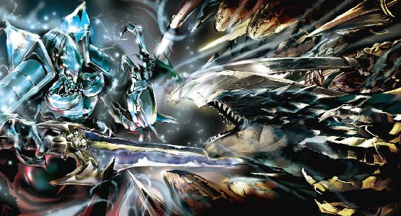
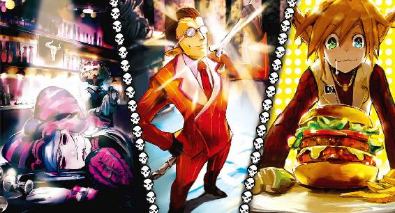
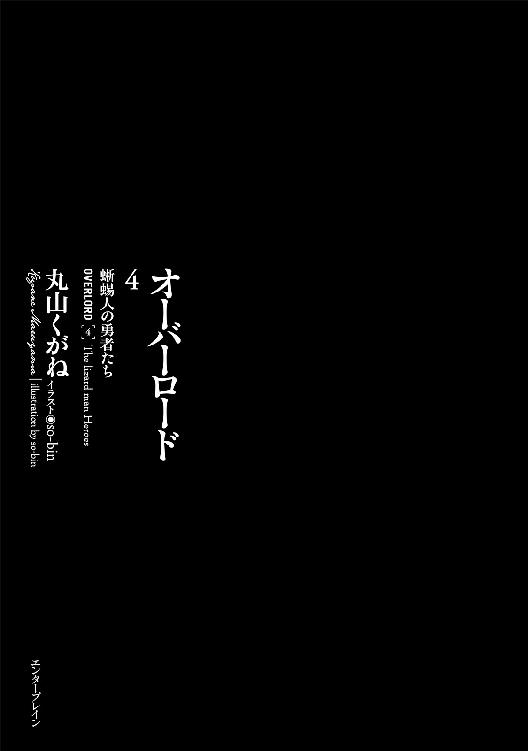
本作品の全部または一部を無断で複製、転載、配信、送信すること、あるいはウェブサイトへの転載等を禁止します。また、本作品の内容を無断で改変、改ざん等を行うことも禁止します。
本作品購入時にご承諾いただいた規約により、有償・無償にかかわらず本作品を第三者に譲渡することはできません。
本作品を示すサムネイルなどのイメージ画像は、再ダウンロード時に予告なく変更される場合があります。
本作品の内容は、底本発行時の取材・執筆内容にもとづきます。
本作品は縦書きでレイアウトされています。
また、ご覧になるリーディングシステムにより、表示の差が認められることがあります。
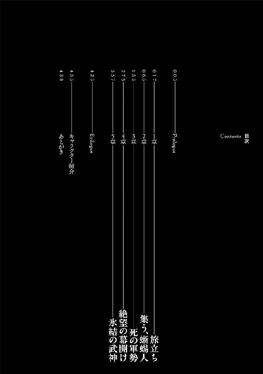
「おかえりなさいませ、アインズ様」
半月ぶりに自室に戻ったアインズに、続いて投じられたアルベドの言葉は全身の力を根こそぎ奪い尽くした。
「お食事になさいますか？ お風呂ですか？ そ、れ、と、も、私♥でしょうか？」
アルベドの背後に幾つものピンク色のハートマークが乱舞している様を、アインズは幻視する。
「......何の真似だ？」
「新婚ごっこでございます、アインズ様。ペットを連れて単身赴任された旦那様を、新妻が迎えるのに、これ以上の対応はないと聞き及びました。いかがだったでしょうか？」
今回、地表まで迎えに来なかった理由がこんなことだと思い知り、「知らんよ」とにべもなく答えようとした結婚どころか女性と付き合ったことすらない男は、言葉を飲み込む。武士はくわねど高楊枝。男の矜持というやつがこみ上げたのだ。大体「どうでしたか」とはどういった返答を求めているのだろう。
とりあえず、自信は無かったが、さも知っているような態度で当たり障りのない返事をする。
「なかなか魅力的であったぞ、アルベド」
微笑みながら「それは良かったです。くふふふ」と嬉しがるアルベド。
艶やかな笑みを向けられ──アインズは腰を軽く落とし、臨戦態勢に入りかけてしまう。
背筋を這い登る蛇のようなものを感じとって。
アルベドの瞳の奥底に宿る──獣欲とかそういった類の何かこそが、背筋を走った正体だろう。というのも黄金の瞳に宿っていた光は真剣そのもの。冗談でも「私」と答えたなら、言質は取ったと最強の肉食獣が降臨するのは確実だ。逆レイプなどという単語が脳内に浮かぶ。
性欲は殆どなくなったが、残滓のようにこびりついている部分が、アルベドの雰囲気に呼応するように、すこしばかり後の展開を見たいと訴えかけてくる。そして喪失していない好奇心がそれに拍車をかけてくる。
（止せ、愚か者）
克己心によるものではないが、それに似た力で──アンデッドでなければ無理だっただろう──彼女の真意を無視する。
しかしながら心の片隅では、この異世界に転移する前、設定を戯れで「自分を愛している」と書き換え、性格を歪めてしまったアルベドを利用するだけ利用しておきながら、一歩も踏み込まない自分に嫌悪感にも似た感情がこみ上げてくる。
（しかし、無くなってしまったというのに......どうしろと。大体、精神的な結び付き合いだけで男女関係がうまくいくはずがないだろう......。だから一歩踏み込むことが怖いのか）
と、一度も女性と付き合ったことのない童貞のアインズは考える。
そしてもう一つ。かつての仲間たちが作ったＮＰＣはある意味、子供のようなもの。そんな大切な者たちを汚す行為、そしてこれ以上歪めて良いものだろうか、との思いもよぎる。
（馬鹿が。今、考えるべきことではないだろう）
「あ！」
突然のアルベドの声に、アインズは眼窩の中の灯火をより明るいものにする。
「ど、どうした、アルベド！ 何があった！」
「失態です。ほ、本来であれば新妻は夫を最終決戦装備でお出迎えするのが礼儀らしいと......」
言葉の後、アルベドは自分のドレスを眺め、それから頰を赤く染めると口を開いた。
「しろと命じてくだされば、即座に」
小さいながらもやけにはっきりと聞こえる声で、チラチラとこちらを窺うアルベド。その後「アインズ様の目の前で着替えて......」という言葉が続いた。
「......あ、はい......んん！ もう......はぁ。アルベドよ、そろそろおふざけは止めにしよう。これより情報のすり合わせを目的とした報告会を始めるぞ」
「はい、かしこまりました」
アインズは残念そうな──どういう意味でかは不明だが──アルベドを努めて無視すると、自分の椅子にドカリと座る。それからテーブルの上に三つの革袋を投げだし、色ボケ新妻から優秀な秘書へと変わったアルベドに指示する。
「まずは、エ・ランテルで得た金銭を渡しておくので、実験に使ってくれ」
袋はそれぞれ大きさが違っており、最大のものはあふれんばかりに膨らんでいた。中に入っているのは、アインズが冒険者として得た金貨、銀貨、銅貨である。
「かしこまりました。ではこれらを用いてナザリックの防衛システム、およびモンスターの召喚が可能か実験いたします」
「頼むぞ。それと巻物の作成など、アイテム生産にも使用可能か確かめてくれ」
頭を深く下げたアルベドから視線をそらし、アインズは祈るような気持ちで革袋を眺める。
ユグドラシルというゲーム上で得られる金貨は、アイテムの購入のみならず、ギルド拠点の維持管理費、三十レベル以上の自動的に出現しないモンスターの召喚費用、一部の魔法を発動するための媒介、アイテムを製作する際の費用、そして死んだＮＰＣの復活代金と様々な用途に使用された。
ユグドラシルの金貨が問題なく使用できることは確認済みである。ただし、この世界で一般的に流通している硬貨──ユグドラシルでは金貨しかなかったために、特に銀貨や銅貨──が使用できるかはまだ確認できていなかった。
今回の実験が今後のナザリックの運命を握っているというのは大げさでもなんでもない。この世界で得た金銭がユグドラシルの金貨と同じように働くのであれば、今後の展開も大きく変わっていくだろう。金銭を得ることの重要度が大きく変わってくるからだ。
場合によっては優先順位を一気に上げる必要性もある。そして逆に、使用できない場合は宝物殿にある財宝が命綱になるので、無駄な出費を抑える必要が出てくるだろう。
「あとはクレマンティーヌ──」
死体が消え失せた女の名前を上げ、アインズはそこで動かない顔を歪める。
アインズのミスからいくつかの情報を握った女が、今頃復活し、情報を不特定多数に流していないかと不安がこみ上げる。
警戒すべき仮想敵は多くいるのに対し、情報はまだこれっぽっちも入手できていない。にもかかわらず、こちらは情報を垂れ流してしまったのだから。
（もしかしたらいるかもしれない仲間たちに届いたらラッキーなんだが......そんな幸運を期待する方が間違っているのか。今後、注意深く行動する必要があるな。とりあえず、モモンに関してはどうすべきか）
狙われるとしたらモモンだ。しかし、足場を作りあげている最中であり、これを捨ててしまうのはあまりにもったいない。アインズとモモンが同一人物と知らしめるのは、まだ早いと思われた。
（臨機応変にやるしかないな......）
どれだけ思案しても答えの出ない袋小路に追い込まれたアインズは、問題を一時棚上げすることで、思考を脱出させる。
「あの女の持っていた剣の一本を、パンドラズ・アクターに命じて、宝物殿のシュレッダーにぶち込んでみるかな」
「シュレッダーですか？」
訝しげなアルベドの声に、アインズはそのアイテムの正式名称を思い出す。
「エクスチェンジ・ボックスだ。あれは商人系の特殊技術を持っている者が使用するとより高額査定される。パンドラズ・アクターに命じて、音改さんの姿を取らせろ。特殊技術を使わせるんだ」
頭を下げ、了解の言葉を発するアルベドを見ながら、アインズは持ってきた羊皮紙をテーブルの上に置いた。
「それともう一件。これが私がエ・ランテルでようやく手に入れた世界地図だ」
「これが......そうですか」
アルベドがわずかに眉を顰めた理由はわかっている。広げた地図はあまりにも大雑把なものであったからだ。
「お前の不満はよくわかるぞ。しかもこれはこの辺り一帯──世界のほんの一部でしかない。縮尺は適当だろうし、記載されていない地形は数多い。それに人間の国家が基本であり、亜人の国家はたった一カ国しか載っていない。あまりにも中途半端な地図ではあるが......これ以上のものの入手は難しいようだ」
例えば人馬たちが部族を作る草原、砂漠にある蠍人たちの集落、山小人たちの国がある山脈など、アインズが交友を深めつつあるエ・ランテルの魔術師組合長から得た情報が地図の上に書き込まれていない。これはあくまでも人間たちに都合の良いものでしかなかった。
そんなどこまでが正しいのか不明瞭な地図を、信頼することはできない。しかし、より詳細な地図はというと、よほど金と時間をかけなければこれ以上のものは難しいとのことだった。
これは魔術師組合長のテオ・ラケシルの言であり、彼がアインズに対して非常に好意的な人物であることを考慮すれば、間違いようのない事実であろう。
大体、この程度の地図の入手であっても大分無理なお願いの類だったのは、彼の反応から垣間見えた。
「了解いたしました。では、この地図は模写させて各守護者たちに渡しておきましょう」
「そうだな。ではその前に簡単な説明をしておこう」
アインズは地図の真ん中に指を突きつける。周辺が詳しく書き込まれた場所だ。
「ここがエ・ランテルだな。そしてこの辺りがナザリック地下大墳墓だ」
動いたのは中央から北東の方角。巨大な森の付近だ。流石にナザリック周辺であれば地形などからかなり自信を持って断言できる。
「ここがリ・エスティーゼ王国とバハルス帝国を分ける、境界線たるアゼルリシア山脈。南端の麓から山脈の周りを包むように大きく広がるのが、トブの大森林。そしてここに巨大な湖があると」
山脈の南端と大森林との間に存在する、山脈から流れ込んだ川によって作られている、ひっくり返した瓢簞のような形の湖、その南端でアインズの指は止まる。
「ここが大湿地だな。蜥蜴人たちの村のある場所」
アルベドが頭を縦に振るのを確認し、アインズは話を続ける。
「ここからは、魔術師組合長から受けた、周辺国家の簡単な説明だ。王国の北西。山脈が無数に走る山がちの場所。この辺りが複数の亜人たちによって作られているアーグランド評議国だ。警戒すべきはそこの国で評議員を務めている、五匹とも七匹とも言われる竜たちだな。そして王国の南西。ここが聖王国といわれる国だ。この地図でも雑に書かれているが、大きな城壁で国土を包んでいるらしい。万里の長城だな。彼らが警戒しているのが地図には何も書かれていないがここにある荒野。多数の亜人たちが日々紛争を繰り返している場所だ」
「デミウルゴスが赴いた場所ですね」
「そうだ。そして荒野を挟んでこちら側がスレイン法国。警戒すべき相手だ」
「この線が国土の境界線でしょうか？」
アルベドの白魚のような指が囲んだ線を上からなぞる。
「多分だがな。はっきり言ってこの境界線はあんまり役には立たないぞ。かなり大雑把なものらしいからな。さて、帝国側を見てみよう。帝国の北東。この辺りは幾多の都市国家があり、それらが都市国家連合を作り出している。亜人たちの都市もあるらしいな。続いて帝国南西。この辺りは珪岩でできた巨大な石の柱が立ち並んでいるところで、無数にある洞窟内に飛竜を飼いならした人間種......だろう者たちが部族を形成して暮らしているらしい」
アインズが聞いた話を総括すると武陵源のような場所らしいが、詳細は不明である。
「飛竜騎兵ですか」
飛竜はユグドラシルでは三十レベル後半まで到達した、騎乗兵系統の職業を有した者が呼び出し、騎乗する魔獣だ。ただしそれがこの世界でも同じである証拠はない。
「......そうだな。普通に考えればかなり強いが、どうであれ、地下大墳墓であるナザリックに対する攻め手としては怖くはない......がその下。この巨大な湖の東部分──この地図では途切れているな」
アインズの指が地図の外、テーブルの表を指差す。
「ここに竜王国なる国があるそうだ」
「竜ですか？」
「そうだ。かつていた強大な竜が作ったとされる国で、この国の王族はその竜の血を引くという......本当かどうかは眉唾な話ではあるが......。まぁ、地図の説明としては以上だ」
アインズが鈴木悟という名前を名乗っていた世界であれば、確実に箔を付けるという線で騙っているだろうが、この世界であれば真実である可能性は高い。
「それでアインズ様。警戒すべき国はスレイン法国、評議国でよろしいのですか？」
アインズは腕を組み、うーむ、と声を上げる。国としてはその程度ではあるが、それは情報が集まっていない状況だからこそという見方もできる。そんな反応にアルベドがゆっくりと頭を下げた。
「失礼いたしました。現状ではどこの国も警戒すべきですね」
「......その通りだ。国家として大したことがなくとも、驚愕すべき個人の存在があるかもしれないからな」
シャルティアに世界級アイテムを使用した者など、が。
そうした思いは口にはしなくてもアルベドには伝わったようだった。
アインズの指が地図の外、東と南を一箇所ずつ指す。
「ただ、東に海上都市なる都市があり、南には八欲王なる者たちが作り出した都市があるとされる。ここが最も警戒すべき都市だろうな。特に八欲王の都市......砂漠の真ん中にある浮遊都市は、な」
「浮遊都市？」
「聞いた話を正確に言うなら、浮遊した城の下に都市があるそうで、無限の水が城から流れ込んでくるらしい。しかも都市全域が魔法的結界に包まれており、砂漠の中にあるとは思えないそうだ」
アルベドの瞳に冷たいものが走り、声を若干抑え気味に進言してくる。
「シモベたちによる強行偵察を行いますか？」
「虎の尾を踏みに行く必要もない。仮に世界級アイテムを使用した者たちがここから来たのだとしても、相手の戦力を確かめるまでは笑顔で相手をすべきだろう。......シャルティアの様子はどうだ？」
「復活における肉体的な面は問題ないようです。ただ......」
「言葉を濁すな。この私とて不安を覚えるぞ？」
「あ！ これは失礼いたしました。実は精神的な面で少々、不安がございます」
「......まだ精神支配された影響が残っているのか？ 死からの復活でさえ、世界級アイテムからの影響は完全に打ち消せないというのか？」
「いえ、そうではなく......アインズ様に敵対し、戦闘したということが、彼女の中で許しがたい大罪となっているようです」
アインズは一瞬だけ困惑した。
あれはアインズのミスであり、シャルティアに罪はない。それは彼女に何度も言い聞かせたことだ。
「アインズ様のご決定に口を挟む無礼をお許しください」
アインズは真剣な面持ちのアルベドに頷く。
「やはり罰を与えるべきであったかと思われます」
アインズは眼孔の中に宿る赤き輝きの色を落とす。口を開きかけ、閉ざす。それは目の前の人物がまだ何か言おうとしていると思われたからだ。
「......信賞必罰は世の常。アインズ様から罰を与えられれば、シャルティアの中に生まれた罪悪感も解消されましょう。逆にそれがないために、自分の内で罪が昇華できないのです」
アインズはなるほどと思う。確かに罰があるからこそ賞も成り立つ。こういった部分、どこまでを叱咤し、どこまでを許すべきかという判断が単なる会社員のアインズには付きかねた。普通にしていると全部なあなあで済ませたり、許してしまいそうになる。
これは逆に考えれば、シャルティアには悪いが、良い練習になるかもしれない。
「......わかった、シャルティアには何らかの罰を与えよう」
「はい。そうなさるほうがよろしいかと。それと出過ぎた真似をどうぞお許しください」
「何を言う。今のような提案こそ私が求めているものだ。私が迷った時、様々な意見を述べてくれる者を欲していたのだ。アルベド、ナザリック地下大墳墓守護者統括にふさわしい働きだぞ」
「ありがとうございます！」
頰を赤らめ、目を潤ませた絶世の美女がアインズに頭を下げる。素直な喜びの反応に照れくさくなったアインズは鷹揚に手で答える。
「さて、私は一旦戻って、仕事をこなすとしよう。こちらのことは任せたぞ？」
「はい！ お任せ下さい！ アインズ様のご不在の間はこの私が責任を持って管理いたします」
妻としてなどと途中で小さな声が聞こえたが、アインズはスルーしておくことにする。アルベドの言葉はそこで終わっていなかったためだ。
「ただアインズ様もご注意下さい。シャルティアを支配した世界級アイテムの持ち主が攻撃を仕掛けてこないとも限りません」
「ふん！」
この部屋に戻ってから初めてアインズは不快げに唸る。
「来たら容易く返り討ちに......とはいかないだろうな。しかし安心しろ、アルベド。情報が無い未知の敵だ。遭遇時は撤退を優先するつもりだ。一応盾となる者達も準備している」
アインズはゆっくりと天井を見上げ、警戒すべき仮想敵に思いを馳せる。
敵であろう未知の世界級アイテム保有者。そしていまだ存在するかどうかも不明なプレイヤーたち。そして昔いたであろうプレイヤーの影。もちろん、完全に敵だ、と考えるのは早計だが、そう考えて行動していた方が足を掬われないだろう。最悪を想定して行動せよ、だ。
「まずは正体を確認するまでは、出来る限り静かに行動しておこう。ただ、獲物が食いつく餌を撒く必要はあるかもしれないがな......。それで計画の方はどのように進んでいる？」
アルベドが微かに目を伏せ、その反応だけでどんな結果となったかアインズには予想がついた。
「コキュートスから報告はございませんでした。エントマからの連絡では全てが私たちの想定の範囲を超えていないと。そしてそろそろ目的地付近に布陣し、先触れを送るころだと思われます」
「そうか......。あまり望んでいた結果ではないが、そこから何を手にするかだな」
「そうおっしゃっていただけると助かります」
「よし。本当であればこちらで様子を見ていたいが、冒険者としての仕事がいくつかたまっている。残念ながら行かねばならない。だが戦闘の様子ぐらいは知りたいから、ムービーに録画しておいてくれ。蜥蜴人とナザリック地下大墳墓の軍勢の戦いをな」
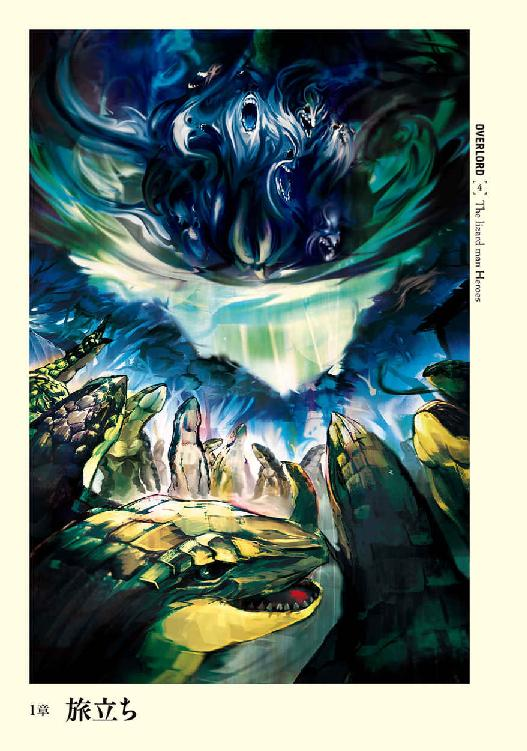
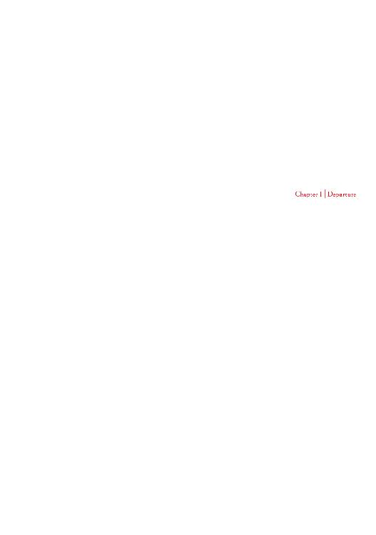
１
バハルス帝国とリ・エスティーゼ王国の中央を走る境界線たる山脈──アゼルリシア山脈。その南端の麓に広がる森林──トブの大森林の北に巨大な湖が存在していた。
およそ二十キロ四方の巨大な湖は、ひっくり返した瓢簞のような形をしており、上の湖と下の湖に分かれている。上の大きい湖の方が水深も深いために大型の生物が、そして下の湖はそれより小型の生物が生活の場所としていた。
下の湖の南端では、湖と湿地が入り混じったような場所がかなりの範囲に渡って広がっており、その一区画、そこに無数の建物が湿地の中に建っていた。家の土台は湿地の中にあり、そこから十本程度の足が伸びて家を支えている。水上生活を行う家の造りと同じである。
そんな数多ある家の一つの扉が開かれ、家の主人がその姿を太陽の日差しに晒した。
彼は蜥蜴人と言われる亜人種族であった。
蜥蜴人とは爬虫類と人間を掛け合わせたような生き物である。より正確に表現すれば人間のように手足が発達し、二足歩行する蜥蜴であり、その頭部に人間的な要素は殆ど無い。
小鬼や人食い大鬼等に並ぶ亜人種として分類されている彼らは、人間ほど進んだ文明は持ってはいないし、暮らしぶりなどから野蛮と思われがちだ。しかし、彼らは彼らなりに、洗練されたとはいえないまでも文化を持っている。
成人したオスの蜥蜴人の平均身長は百九十センチ程であり、体重は百キロをゆうに超える。それも脂肪がついているためではなく、全身の筋肉が隆起したかなり屈強な肉体を誇っていた。
腰からは、バランスを取るために使われる長い爬虫類の尻尾が伸びている。
足は水中や湿地等での動きやすさを重視した進化の過程を経て、水かきをつけた幅の広いものだ。その分、陸地での動きは若干苦手ではあるが、基本的な生活圏を考えればそれは問題にならない。
薄汚れたような緑色から灰色または黒までの色を持つ鱗は、蜥蜴のものではなく、ワニを思わせる角質化したものだ。人間が使用する下手な防具よりも硬い。
手は人間と同じ五本指で、先端はさほど長くない鉤爪になっている。
この手で振るわれる武器等は、非常に原始的なものだ。というのも基本的に鉱石等を手に入れるチャンスが無いために、モンスターの牙や爪から作り出した槍や、石を付けた鈍器を最も多く使った。
空は透き通るような青一色で、燦々と照りつける太陽が昇っている。刷毛で掃いたような白く薄い雲がほんの僅かにあるだけの良い天気だ。遠くには突き立つような山脈がはっきりと見える。
蜥蜴人の視野は広いため、頭を動かさなくても上空の太陽の眩い姿が目に入る。彼──ザリュース・シャシャは上下の瞼を動かして目を細めると、家の階段をリズミカルに下りた。
ザリュースは黒鱗の生えた胸に押された焼印を搔く。
それは彼の部族内での立場を示す印である。
蜥蜴人の部族は規律正しい階級社会を作る。頂点に来るのは族長である。これは血筋ではなく、単純に部族で最も強いものが選ばれる。この族長を選ぶ儀式は数年に一度の頻度で行われた。
そしてそれを補佐する選ばれた年長者からなる長老会。その下に戦士階級、一般のオス蜥蜴人が続き、一般のメス蜥蜴人、幼少の蜥蜴人という風に社会が構成されている。
無論これに属さないものも存在する。
まず森祭司からなる祭司たち。彼らは天候予測から危険の予知、治癒魔法等を使用しての部族の生活の補佐を行う。
そして狩猟班を構成する野伏たちだ。役割は漁猟が第一だが、それには普通の蜥蜴人たちも協力するため、最も重要な彼らの仕事は、森での活動となる。
蜥蜴人は基本雑食であるが、主食は八十センチほどにもなる魚で、あまり植物や果実等は食べない。にもかかわらず彼ら狩猟班が森に入るのは、木々の伐採が目的であることが多かった。陸上は蜥蜴人にとって安全な生活環境ではないため、森に木を切りに行くだけでもこういった技術者の出番なのだ。
そんな彼らは独自の判断と行動を許されてはいるが、それでも族長の下に位置し、族長の命令には従うことを求められる。蜥蜴人の社会はこのように役割分担がしっかりと出来た父性社会だが、例外的に、完全に族長の指揮から外れた存在もいた。
それが旅人である。
旅人と聞くと異邦人をイメージするかもしれないが、それはありえない。基本的に蜥蜴人は閉鎖社会であり、部族外の存在を受け入れるということは滅多にしない。
では旅人とはどんな存在か。
それは世界を見ることを望んだ蜥蜴人のことである。
基本的に蜥蜴人は生まれた場所からよほどのこと──餌が取れないといった非常事態──がない限りは離れないものである。だが、非常に低確率ではあるが、外の世界を見たいと渇望する蜥蜴人が現れるのだ。
旅人は、部族を離れると決めたとき、特別な焼印を胸に押す。これは部族を離れた──権力の外に飛び出た存在であることを示すものだ。
そして外の世界に旅立った彼らは殆どが帰ってこない。旅先で倒れたのか、それとも新たな世界を見つけそこで生きているのか。それは定かではない。しかしやはり稀ではあるが、見聞を終え、帰ってくる者がいる。
故郷に帰ってきた旅人は、持ち帰った知識ゆえ高い評価を受ける。権力から離れた異分子ではあるが、一目置かれる存在へと変わるのだった。
事実この村の中でもザリュースを煙たがる者はいるが、それ以上に一目置かれる存在であった。旅人ということだけではない。その理由は──
一番下の段から湿地に降りた際、腰に下げた彼の愛用の武器と鱗が当たり、カチャリと音がする。
それは青白い刀身を持ち、仄かな光を宿している。形状は奇怪であり、刀身と握りが一体化した三つ叉の棍棒のようにも思われた。しかしながらそれは握りの部分から徐々に刀身が薄くなっており、先端に至っては紙のような厚さしかなかった。
この武器を知らぬ蜥蜴人はいない。周辺全ての部族の蜥蜴人達に、四至宝と称されるマジックアイテムの一つ、凍牙の苦痛だ。
この名高い武器を持つということが、ザリュースの名を高めている理由である。
ザリュースは歩き始める。
目的地は二箇所。その一箇所に置いてくる土産もちゃんと背負っている。
それは一メートルにもなる巨大な魚だ。蜥蜴人の主食でもあるそれを、四匹も背負って歩く。鼻に届く、生臭い臭いをザリュースは不快には感じない。それどころか非常に腹の減る匂いだ。
食べてしまいたい。そんな欲望を鼻を数度鳴らすことで追い払い、そのままザリュースは〝緑爪〟族の村中をパシャパシャと足音を立てながら歩く。
まだまだ緑の色が鮮やかな鱗の子供たちがシャーシャーと笑い声を上げながら走り抜けていくが、ザリュースが背負っているものに気づくと動きが止まる。住居の陰から様子を窺う育ち盛りの子供達の目も、ザリュースに──いや魚に集まってくる。彼らの口元はかすかに開き、涎が溜まっていることだろう。少しばかり離れてもやはり視線は追いかけてくる。おやつを欲する子供たちの視線。
それに苦笑を浮かべながら、気づかない振りをしてザリュースは歩く。これは渡す相手が決まっているのだ。それは残念ながら子供達ではない。
子供達の目に宿る光が飢えによるものでないことに、ザリュースは幸せを感じていた。数年前は決して見られなかったその光景に──。
名残惜しげな視線を背に、点在する住居を抜けると目的地である小屋が姿を現した。
この辺りは村はずれであり、もう少し進めば湿地ではなく湖らしく水深も深くなる。その微妙な境界線に建てられた小屋は見た目よりもしっかりと作られ、ザリュースの家よりも大きい。
奇怪なのは若干傾いているところか。そのため家の半分ほどが水没しているが、これは倒壊しているのではなく、元々そういう造りなのだ。
ザブザブと大きな水音を立てながらザリュースは小屋に接近する。
そこまで来ると匂いを嗅ぎつけたのか、中から甘えるような鳴き声が聞こえてきた。
ニュルリと蛇の頭が窓らしきところから姿を現す。濃い茶色の鱗と琥珀色の瞳を持つそれは、ザリュースを確認すると首を伸ばし甘えるように巻きついた。
「よしよし」
慣れた手つきでザリュースは蛇の体を撫でる。蛇は気持ちよさそうに目を──眼球を防護する膜に加えて瞼さえある──細めた。ザリュースにも蛇の鱗の皮膚触りは心地よい。
この生き物こそザリュースのペット。名前はロロロ。
ロロロが子供だった頃から育てているために、本当に会話ができるような気さえする。
「ロロロ。餌を持ってきたぞ？ ちゃんと仲良く食べるんだぞ？」
ザリュースは持ってきた魚を窓越しに中に放る。どちゃともばしゃとも表現できるような音が中からした。
「本当は遊んでやりたいんだが、今から魚の様子を見に行かねばならんのでな。また後でな」
言われている内容が理解できているのか、蛇は数度名残惜しげに体をザリュースにこすり付けると、体を引っ込めた。そして中からむしゃぶりつく音と咀嚼音が聞こえる。
元気に食べている様子に、ロロロの体調が良いことを確信し、ザリュースは小屋を離れた。
小屋から離れたザリュースが向かったのは、やはり少しばかり村から離れた湖畔だ。
ザリュースはペタペタという擬音が似合うような動きで森の中を黙々と歩く。本当なら水中を進んだほうが早いのだが、陸上で問題が起きていないか、調べながら進むのが癖になってしまっているのだ。ただ、木々によって視界が遮られるこの場所を歩くのは、ザリュースでもかなり精神が磨り減る。
やがて木々の隙間から、目的地が姿を見せる。ザリュースは何事も起こらなかったことに安堵のため息を一つ。そのまま木々をすり抜けながらあと少しの距離を足早に進む。
突き出した枝を搔い潜るようにすり抜けたザリュースは、そこで驚きに目を見開いた。想像もしていなかった人物の背中を発見したために。
それはザリュースに似た黒い鱗の蜥蜴人。
「兄者──」
「──お前か」
黒い鱗を持つ蜥蜴人は振り返ると、ザリュースを出迎えるようにぎょろっと睨む。この蜥蜴人こそ〝緑爪〟族の族長であり、ザリュースの兄でもある、シャースーリュー・シャシャである。
二度に渡り、族長選抜を勝ち抜き、今期は戦わずして地位を維持している彼の肉体は圧巻である。並ぶと、平均的な体軀のザリュースが小さく見えるほどだ。
黒色の鱗には古い傷跡が白いものとなって走り、雷光が黒雲を切り裂いているようにも映る。
背中には巨大な大剣──二メートル近い無骨で分厚いものを背負っている。鋼鉄でできた剣──族長の証でもある──には錆を防ぎ鋭さを高める魔法が掛かっていた。
ザリュースは兄に並ぶように湖畔に立つ。
「この様なところで何をしている」
「......それは兄者のセリフではなく、俺のセリフだ、兄者。こんなところに族長が自ら足を運ぶものじゃなかろう？」
「むぅ」
言葉に詰まったシャースーリューは口癖となったうなり声を漏らすと、目の前の湖に顔を向ける。
しっかりとした棒がその場所を囲むように、湖面から突き出している。棒と棒の間には非常に目の細かい網が張ってあった。それが何かは見るものが見れば一目瞭然だろう。
生け簀である。
「もしかして......摘み食いか？」
ザリュースの言葉に、シャースーリューの尻尾が跳ね、バチバチと地面を叩く。
「むぅ。そのようなわけが無かろう。俺は飼育の具合はどうか、見に来たのだ」
「......」
「弟よ、兄をそんな目で見るとはどういうことだ!?」
強い口調で言い切ると、ずいっとシャースーリューは一歩前に出る。まるで壁が迫ってきたような圧迫感。旅人であり歴戦の戦士であるザリュースですら数歩下がりたくなるほどだ。
だが、今は完璧な切り返しの言葉がある。
「飼育の様子を窺いに来たのなら、別に欲しくはないということか。残念だ、兄者。よく育っていれば貰ってもらおうと思ったのだが」
「むぅ」
バチバチという音が止み、尻尾がうなだれるように垂れる。
「美味いぞ。しっかり栄養を取らせて太らせたからな。漁で取れるものより脂が乗っている」
「ほう」
「嚙むと口の中に良質の脂がにじみ出てな。ぶつりと嚙み切ると口の中で溶けるようだ」
「むぅうう」
再びバチンバチンという尻尾の立てる音が上がる。しかもさきほどよりも激しい。
ザリュースはそんな尻尾を呆れたように見ながら、兄にからかい半分の口調で言う。
「義姉者が言っていたぞ。兄者の尻尾は素直すぎると」
「何？ あやつめ、夫たるこの俺を愚弄するとは。だいたい、何処が素直なのだ？」
今はピクリとも動いていない尻尾を肩越しに見ながら答える兄の姿に、ザリュースはどのような反応をしたら良いのか浮かばず、「ああ」と乾いた返事を返すのがやっとだった。
「ふん。あやつめ......。お前も番えば今の俺の気持ちが分かるだろうよ」
「俺に結婚は出来ないさ」
「ふん。下らん。その印のためか？ 長老どもが何を言おうと無視しておけば良かろう。だいたいこの村でお前に言い寄られて嫌がるメスはいなかろうよ......。どんな立派な尻尾を持つ者でも受け入れるだろう」
蜥蜴人は尻尾に栄養を蓄える。そのために太い尻尾を持つということは、異性に対する大きなアピールポイントだ。ザリュースも昔であれば細いよりも太いメスの方を選んだかもしれないが、成長し、世界を知ったオスとなった今では、出来れば遠慮したいところだ。
「今の村の状況下で、太い尻尾を持つメスはあんまり好かないがな。それぐらいなら逆に細いメスを選ぶ。個人的には義姉者ぐらいでかまわない」
「お前の性格からするとそうかもしれないが......ただ、番っているのはやめておけよ。くだらん刃傷沙汰はごめんだ。まぁ、お前も結婚というやつの苦労を知るべきだな。この俺だけでは不平等ではないか」
「おいおい、兄者。義姉者に言うぞ」
「むう......どうだ。これが結婚という奴の苦労の一つだ。族長たる、そしてお前の兄たる俺を、容易く脅すことが出来る」
静かな湖畔に楽しげな笑い声がしばし響く。
それから笑いを止め、再び目の前の生け簀を直視しながら、シャースーリューは万感の思いを込めて言葉を漏らす。
「しかし見事だ。お前の......」
言葉に詰まった兄に救いの手を伸ばす。
「養殖場か？」
「そうだ、それだ。我らの部族で過去、こんなことを行った者はいない。そしてこの成功は既に多くの者が知っている。このまま行けば、お前の魚を羨望の思いで見ている多くの者が真似るだろう」
「兄者のおかげだ。色々と皆に話をしてくれたことを知っているぞ」
「弟よ、多くの者に事実を話したからといってそれが何になる。そんなものは世間話でしかない。お前が努力し、この養殖場で美味そうな魚を育て上げたことにこそ意味があったのだ」
養殖場は最初は失敗続きだった。当たり前だ。旅先で話を聞き、それをイメージして作ったに過ぎない。囲いを作ることさえ失敗続きだった。一年間も試行錯誤し、ようやく生け簀が出来上がったがそれで終わりではない。
魚の世話もしなくてはならない。餌だって取ってくる必要がある。
どんな餌が良いのか調べるために様々な餌を投じ、幾度生け簀の中の魚を死なせたことか。囲いの網をモンスターに破られ、全てが無に帰したことだってある。
食料として捕まえた魚をおもちゃにしていると後ろ指を差されたこともあった。バカだと言われた事だってある。しかし、その努力は今、目の前で実りを迎えているのだ。
湖面に大きく成長した魚が泳ぐ影が映る。それは漁で取れるものの中でも、かなり大きい部類に入るサイズだ。稚魚から育てたと聞いて信じられる蜥蜴人はいないだろう。そう、ザリュースの兄と義理の姉を除いて。
「......見事だぞ、弟よ」
同じ風景を共有しながら、ポツリとザリュースの兄は呟く。その言葉には万感の思いが込められていた。
「兄者のおかげでもある」
答える弟の口調にも同じだけの思いが込められていた。
「むぅ、俺がなにをしたというのか」
確かに兄──シャースーリューは何もしていない。ただ、それは対外的な意味では、だ。
魚の調子が悪いときに祭司が突然この場所に現れた。囲いの材料集めの時、幾人もの協力があった。漁で取れた魚が配られる際は、生きている状態で元気な魚が回ってきた。さらには魚の餌用にと果実を持ってきた狩猟班。
手助けしてくれた者たちは、誰に頼まれたかは決して明かさなかった。しかしどんなバカだって、誰が背後にいるかは理解できる。その人物が名乗り出る気がないことも。
部族の階級から逸脱した旅人に、族長が肩入れするのは不味いのだから。
「兄者。もっと大振りになったら最初に持って行くからな」
「ふん。楽しみにしているぞ」
くるりと踵を返し、シャースーリューは歩き出す。そしてポツリと呟く。
「すまんな」
「......何を言う、兄者。......兄者は何も悪くなんかないさ」
その声が聞こえたのか、聞こえなかったのか。何も言わずに湖畔に沿って遠ざかっていくシャースーリューの後ろ姿を、ザリュースはただ眺めていた。
生け簀の様子を確認し、村まで戻ってきたザリュースは、ふと違和感を感じ、空を眺める。別に何でもない空だ。蒼く何処までも広がり、北の方角には薄い雲を被った山脈がある。
いつもの風景だ。
何も変わらない。気のせいかと思いかけた時、天空に奇妙な雲が掛かっていたのに気づいた。
時を同じくして、村の中央にぽつんと浮かんだ、陽光を遮る黒雲──それも雨雲を思わせる厚い雲によって村に影が掛かる。
誰もが驚き、空を見上げる。
祭司達からは本日は一日晴天と聞いていた。祭司達の天候予測は魔法と歴年の経験から来る知識による、精度の非常に高いものである。それが外れたことに誰もが驚いていたのだ。
ただ、異様なのは村に掛かっている黒雲以外に雨雲は何処にも無いこと。まるで村の真上にだけ掛かるように誰かが雲を召喚したかのようだった。
更に異様さは増す。
雲はこの村を中心に渦巻きながら、その範囲をどんどんと広げていったのだ。まるで青空が得体の知れない黒雲によって侵されていくようなすさまじい勢いで。
異常事態だ。
慌てて周囲を警戒する戦士階級のもの。飛び込むように家に逃げ込む子供達。ザリュースは腰を低くかがめ、周囲をうかがいながらフロスト・ペインに手を伸ばす。
黒雲が完全に天空を覆う。遠くに目をやれば未だ青空が見えている。まさにこの村を中心に黒雲は立ち込めていた。そんな中、村の中央が騒がしくなる。そちらの方角から風に乗って聞こえる、蜥蜴人の声帯をいかした甲高い擦過音。
それは──警戒音。それも強敵を意味する、場合によっては避難を勧める類の。
聞いたザリュースは、蜥蜴人にしては速い足運びで、湿地を駆ける。
走る、走る、走る。
湿地という足運びが難しい中にあって、尻尾をくねらせてバランスを取る。人であれば不可能な速度──こういった場所に強い蜥蜴人の足とはいえ──でザリュースは警戒音が発せられたと思われる場所に到達する。
そこではシャースーリュー、そして戦士たちが、まるで円陣を組むように、村の中央を睨んでいた。その視線の先を追ったザリュースもまた、睨みつける。
無数の視線の交わる先──そこに揺らめく黒い靄のようなモンスターが存在した。
靄の中におぞましい無数の顔が浮かび、直ぐに形を崩す。浮かぶのは様々な種族の顔だが、一つだけ共通しているものがある。それはどの顔も無限の苦痛を訴えるような表情を浮かべていることだ。
風に乗って、すすり泣く声、怨嗟の声、苦痛の悲鳴、断末魔の喘ぎ等が輪唱になって聞こえてくる。背中が凍り付きそうなほどの怨念がヒシヒシと押し寄せ、ザリュースは恐ろしさから身震いした。
（......不味いな......周りの者を逃がし、俺と兄者だけで対処すべきだろうな。しかしそれは......）
周辺に点在する蜥蜴人部族の中でもトップレベルの戦士である、ザリュースすら怖じ気づかせる強大なアンデッドだ。この場でまともに戦えるのはザリュースと兄ぐらいだろう。そして何より、ザリュースが知るそのアンデッドの特殊能力がある。
チラリと視線を動かせば、この場には戦士階級の者しかいないにもかかわらず、周りにいる殆どの蜥蜴人の呼吸は荒い。まるで怯えた子供のようだった。
村の中央に陣取ったまま、モンスターはその場から一切動かない。
どれだけの時間が経過したのだろうか。ぴんと張り詰めた空気は、何かあれば即座に怒濤の展開を示すだろうと思われた。ジリジリと互いの距離を詰めようと動いている戦士たちが良い例だ。彼らは必死に精神的な重圧を撥ね退け、動き出している。
シャースーリューが剣を抜くのを視界の隅で認識し、それに遅れない速度でザリュースも静かに剣を構える。もし戦いとなるなら誰よりも早く突撃するつもりだった。
（そこで奴の特殊能力を皆に知らしめれば、出過ぎたマネにはならないはずだ......）
空気中に澱むように溜まった緊迫感がより濃くなっていき──突如、怨嗟の声が止んだ。
モンスターが発していた幾つもの声が混じりあい、一つの声となる。それは先ほどのまでの意味の分からない呪詛とは違う。しっかりとした意味を持ったものだ。
『──聞け、我は偉大なる御方に仕えしもの。先触れとして来た』
皆はざわめき、互いの顔を見合わせる。ザリュースとシャースーリューのみ視線を動かさない。
『汝らに死を宣言する。偉大なる御方は汝らを滅ぼすべく軍を動かされた。されど寛大なる御方は汝らに必死の──無駄な抵抗をさせるための時間をお与えになられるとのこと。本日より数えて八日。その日、この湖の蜥蜴人部族の中で、汝らを二番目の死の供物としよう』
ピクリとザリュースの顔が歪み、鋭い歯をむき出し威嚇の唸り声を出す。
『必死の抵抗をせよ。嘲笑を以て偉大なる御方がお喜びになられるように』
煙が一瞬たりとも同じ形を取らないように、そのモンスターは歪にゆがんで形を変えつつ、中空に浮かび上がっていく。
『ゆめ忘れるな。八日後を──』
そのまま何ものも邪魔することの無い中空を森の方角めがけ飛行していく。その後ろ姿を多くの蜥蜴人が見送る中にあって、ザリュースとシャースーリューは遠くの空をただ黙って眺めていた。
２
村最大の小屋──集会所として使われるそれは普段は殆ど使われていない。絶対権力者である族長がいるため、集会はあまり開かれず、小屋の存在価値は無きに等しかった。しかしその日、小屋には異様な熱気が立ち込めていた。
広いはずの室内が狭く感じられるほど、多くの蜥蜴人の姿がある。戦士階級の蜥蜴人は元より、祭司達、狩猟班、長老会、そして旅人であるザリュースも。皆、胡坐をかき、シャースーリューに向かって座る。
族長であるシャースーリューが会議の始まりを告げ、最初に口を開いたのは祭司頭である。
年齢のいったメスの蜥蜴人で、奇怪な紋様を白の染料で体に書き込んでいる。それは色々な意味を持つそうだが、ザリュースはよく知らない。
「天を覆った雲をおぼえておるな？ あれは魔法じゃ。わしの知る限り天候を操作する魔法は二種類。一つは〈天候操作〉と呼ばれる第六位階魔法。ゆえにこの線はなかろう。第六位階を行使できる魔法詠唱者など伝説の領域なのだからな。そしてもう一つが第四位階魔法〈雲操作〉。こちらの魔法でも強大な魔法詠唱者のみしか使えん領域だ。それほどの者に歯向かうのは愚か者のすることじゃ」
祭司頭の後ろに並ぶ、同じような格好をした祭司たちが、同意をするように頭を振る。
ザリュースは知っているが、第四位階と言われてもそれがどれほどの技か理解できない者たちの数多の疑問のうなり声が室内に響く。
どう説明すれば良いのかと困惑した表情を浮かべた祭司頭は、指を一人の蜥蜴人に突きつける。指を差された蜥蜴人もまた困惑げな表情で、自らを指差す。
「そうじゃ。お前、わしと戦って勝てるか？」
指差された蜥蜴人は慌てて首を左右に振った。
祭司頭と武器だけで戦うのであれば勝つ自信はあるだろう。しかし、魔法の行使まで考慮するなら勝算は低い。いや低いどころか単なる戦士では皆無に等しい。
「しかし、そんなわしは、第二位階までしか使うことはできん」
「つまりは二倍強いということか？」
誰かの質問にため息をつきながら、祭司頭は嘆かわしそうに頭を振った。
「そんな単純なものではない。第四位階を使えるのなら、わしらの族長すら容易く殺せるじゃろう」
最後に「絶対とは言えんし、恐らくという推測の言葉が入るがな」と言うと祭司頭は口を閉ざす。
ようやく第四位階という魔法の凄さを知り、静まり返った部屋の中に、再びシャースーリューの声が通る。
「つまりは祭司頭は──」
「逃げたほうが良かろうと思う。戦っても勝てまい」
「何を言う！」
太く低い咆哮と共に、がばりと立ち上がったのは巨軀の蜥蜴人だ。体格だけならばシャースーリューに並ぶだろう者こそ、この部族の戦士頭である。
「まだ戦ってもいない内から逃げよというのか！ 大体、あの程度の脅しで逃げ出してどうする！」
「──貴様の頭には脳みそは詰まってないのか！ 戦ったときには遅いというておるのじゃ！」
戦士頭とにらみ合うように、祭司頭も立ち上がる。二人とも興奮しており、互いに威嚇音を無意識のうちに出している。一触即発という言葉が誰もの頭に浮かんだそのとき、冷たい声が響く。
「......いい加減にせよ」
まるで寝ている最中に耳に水を流し込まれたような表情で、戦士頭と祭司頭がシャースーリューに顔を向ける。それから両者とも謝罪すると腰を下ろした。
「──狩猟頭。お前の意見を聞こう」
「......戦士頭の意見も祭司頭の意見も理解できるし、納得できる」
シャースーリューの問いかけに答えるように、ひょろっとした蜥蜴人が口を開いた。瘦せているといっても、筋肉が無いのではなく、極限までも絞り込んだ細さだ。
「ゆえに、時間はあるのだから、様子を窺ってはどうだろうと思う。軍で来ると言っているのだ。陣地の設営など様々な作業があるはずだから、そこを観察した後でも良かろう？」
情報が足りない中でああだこうだ言っていても意味が無いと、幾人かの同意するような声が聞こえる。
「──長老」
「なんともいえぬ。どの意見も正しく感じる。あとは族長が決めることだろう」
「むぅ......」
シャースーリューの視線が動き、幾人もの蜥蜴人の間からザリュースは互いの視線が交差するのを感じた。兄が目の中で頷く。背中を優しく押されるような気持ちで──ただそれは断崖絶壁かもしれないが──己の意見を口にしようと手を伸ばす。
「族長。意見を言わせて欲しい」
その場にいる蜥蜴人、全ての注意がザリュースに集まる。その大半に期待があった。ただ、逆に眦を上げた蜥蜴人たちもいる。
「旅人のおぬしが口を出すことではない！ この場にいさせてもらっているだけで感謝すべきじゃろう！」
長老会に所属する老人の一人が声を上げる。
「下がって──」
バンと床を一本の尻尾が激しく叩く。その音が長老の発言を鋭い刃物のごとく断ち切った。
「騒がしい」
危険な感情を込めた、シャースーリューの声。声のところどころに、蜥蜴人が激情時に上げる唸り声が混じっている。それを前に口を挟めるものはいない。小屋の中の緊張感が一気に増し、先ほどまでの熱気が一気に冷める。
その中にあって、長老の一人が口を開く。余計なことをするなという非難の視線が集まっていることにも気が付かずに。
「しかし、族長。おぬしの弟だからといって特別扱いは困る。旅人は──」
「騒がしいと言った。聞こえなかったのか？」
「ぐむぅ......」
「今、知識ある全てのものたちを参加させているのだ。旅人の意見も聞かなくてはおかしかろう」
「旅人は──」
「族長が構わないというのだ。それとも従わぬのか？」
黙った長老から視線をそらし、シャースーリューは他の頭たちを見据える。
「祭司頭、戦士頭、狩猟頭。お前達も聞く価値が無いと思うか？」
「ザリュースの言なら聞く価値はある」最初に答えたのは戦士頭だ。「あのフロスト・ペインの所有者の意見を聞かぬなど、そんな戦士はおらん」
「同じく。十分に聞く価値があるな」
おどけるように狩猟頭も答える。最後に残った祭司頭は肩をすくめる。
「当然聞くとも。知識あるものの言葉を聞かぬのは、愚か者のすることじゃ」
痛烈な皮肉を受け、長老会の幾人かが顔を顰める。シャースーリューは三人の頭の意見に頷くと、話を進めるように顎をしゃくる。ザリュースは座ったまま、口火を切る。
「逃げるか、戦うかならば、選ぶは後者だ」
「ふむ......理由は？」
「それしか道は無い」
本来であれば族長が理由を問えば、きちんと説明すべきだろう。しかしザリュースはそれ以上続けずに、これで終わりだといわんばかりの態度を示す。
シャースーリューが口元に丸めた手を当て、深く考え込む姿勢を見せた。
（......まさか、そこまで見抜いたか？ ......兄者）
ザリュースが内心の思いを決して顔には浮かべないように苦心していると、祭司頭が苦い顔で誰とはなしに問いかける。
「......しかし勝てるかの？」
「勝てるとも！」
不安を吹き飛ばすような勢いで戦士頭が叫ぶ。しかし、祭司頭はただ目を細めるだけだった。
「......いや、今のままでは勝算は低かろう」
代わりに戦士頭の意見を正面から否定したのはザリュースだ。
「......どういうことなのだ？」
「戦士頭。相手はこちらの情報──戦力を知っているはずだ。でなければあんなこちらを見下すような発言はしなかろう。ならば今ある戦力では善戦は出来ても勝利を収めることは不可能なはずだ」
では、どうする？ 誰もがそう問いかけようとした、その瞬間。機先を制するように己の真意を深く沈めたまま、ザリュースは口を開く。
「ならば相手の計算を狂わす必要がある。......皆、かつての戦いを覚えているな？」
「無論だ」
そう、誰かが答えた。
数年前に起こったそれを早くも忘れるほど、この場にいる誰もボケてはいない。いや、ボケていようとあの戦いを忘れることはできないだろう。
かつてこの湿地には七つの部族がいた。〝緑爪〟、〝小さき牙〟、〝鋭き尻尾〟、〝竜牙〟、〝黄色の斑〟、〝鋭剣〟、〝朱の瞳〟である。
だが、そのうち現存する部族は五つ。
二つの部族が消滅するほどの、多くの命が奪われた戦いがあったのだ。
戦いのきっかけは主食となる魚の不漁が続いたことだ。そのため狩猟班を先頭に、湖の広い範囲にまで手を伸ばす結果となった。無論、他の部族だってそれはいえることだ。
やがて漁をする場所を巡って狩猟班同士がぶつかり合うこととなる。お互いの部族の食べるものが懸かっているのだ。引くことはできない。
口論が喧嘩に、喧嘩が殺し合いに発展するまで、さほど時間は掛からなかった。
やがて狩猟班をバックアップするように互いの戦士達が動き出し、食料を巡って熾烈な戦いになっていった。
周辺七部族のうち五部族を巻き込んだ戦いは、三対二──〝緑爪〟、〝小さき牙〟、〝鋭き尻尾〟対〝黄色の斑〟、〝鋭剣〟の戦いへと変化し、戦士階級のみならずオスの蜥蜴人、メスの蜥蜴人まで参加する部族総出のものへとなっていった。
数度の総力戦を得て、〝緑爪〟族を含めた三部族側が勝利を収め、二部族側は部族という形を取れないほど消耗し、四散した。これは後に争いに参加しなかった〝竜牙〟族に吸収されることとなったのだが。
戦いの発端となった食料問題は、皮肉にも湿地で生きる蜥蜴人の総数が激減したことによって解消されることとなった。主食の魚が皆に行き渡るようになったのだ。
「それがどうしたのだ？」
「奴の話を思い出してくれ。奴はこの村は『二番目』と言っていた。ならばここ以外に他の村にも同じようなメッセンジャーが行っているのではないか？」
「おお......」
ザリュースの言葉に納得の声が上がる。
「つまりは再び同盟を結ぶというつもりだな！」
「......まさか」
「そうだ。同盟を結ぶべきだ」
「かつての戦のごとくか......」
「それなら勝てるのでは？」
隣同士で囁きあい、やがて大きなうねりへと変わっていく。小屋全体がザリュースの考えについて検討しあう中、シャースーリューだけは黙ったまま、口を開こうとはしない。こちらを窺っているような、奥底までを見据えるような視線に耐えられず、ザリュースは兄に顔を向けることができなかった。
十分に検討できただろう時間が経過した頃、ザリュースが再び口を開く。
「間違えないで欲しい。俺が言いたいのは、全部の部族と、だ」
「なんだと？」
その意味を、この場にいる者の中で二番目に摑んだ狩猟頭が驚きの声を上げた。ザリュースはシャースーリューを正面から見据える。その直線状にいた蜥蜴人たちは我知らず道を開けた。
「〝竜牙〟、〝朱の瞳〟とも同盟を結ぶことを提案するぞ、族長」
大きなどよめきが起こった。爆弾を投じたような騒ぎに繫がってもおかしくないほどの。
先の戦いには加わらなかった〝竜牙〟、〝朱の瞳〟の二つの部族。それは交流等が一切無い部族であり、〝竜牙〟に至っては〝黄色の斑〟と、〝鋭剣〟の生き残りを迎え入れたために、禍根が強く残っているはずの部族だ。
その二つの部族との同盟──五部族連合。
もし、それが出来るなら確かに勝算はあるかもしれない。そんな淡い期待が皆に浮かぶ中、ポツリとシャースーリューは口を開く。
「誰が使者となる」
「俺が行こう」
ザリュースの即答に、シャースーリューは驚きを見せない。弟をよく知る兄の、予期した答えだったのだろう。周囲の蜥蜴人たちからは感嘆の呻きが上がる。これ以上ない人選だと判断して。しかし、たった一人だけその意見に不満を唱えた。
「──旅人がか」
シャースーリューだ。氷のような視線が真正面からザリュースを貫く。
「その通りだ、族長。今は非常事態。旅人という存在だからといって話を聞かないような相手なら、組むに値しない」
ザリュースは氷柱の如き視線を容易く撥ね退ける。しばし睨みあい、シャースーリューは寂しげに笑った。諦めなのか、自らの言葉で弟を阻止できない虚しさなのか、はたまた内心では適格者だと認めている自分への嘲笑なのか。透き通ったような笑いだ。
「──族長の印を持たす」
それは族長の代理人という意味合いを持つ。決して旅人に持たせてよいものではない。長老会の数名が何か言いたげに身動ぎするが、口にする前にシャースーリューの激しい眼光を受け、言葉にすることはできない。
「感謝する」
ザリュースは頭を下げる。それを受けて、シャースーリューが言葉を発した。
「......他の部族への使者は俺が選抜する。まず──」
夜にもなれば涼しげな風が吹く。湿地ということである程度湿度も高く、暑さと相まって息苦しいが、夜にもなればそれは落ち着き、逆に風が多少肌寒いぐらいだ。無論、蜥蜴人の頑丈な皮膚を以てすれば、なんともない程度の変化なのだが。
バシャバシャと湿地を歩くザリュース。向かう先はペットであるロロロのいる小屋だ。
まだ時間はあるだろうが、予測不能の事態も起こりかねない。さらに敵が約束を守るかどうか、ザリュースの旅を邪魔する可能性もありえる。そういった諸々を考慮すると、ロロロに乗って湿地を旅する計画が最も適していた。
バシャバシャと歩く音が遅くなり、立ち止まる。背負ってきた様々なものを詰め込んだ皮袋の中身が、中で大きく揺れた。動きを止めたのは月光の下、見慣れた蜥蜴人がロロロの小屋から出て来たからだ。
互いの視線が交差する。戸惑い動けないザリュースの姿に小首を傾げると、黒い鱗の蜥蜴人は自ら距離を詰める。
「──俺は、お前が族長になるべきだったと思っていたぞ」
それが二メートル程度まで近寄った兄、シャースーリューの第一声だった。
「......何を言う、兄者」
「かつての戦いを覚えていよう」
「当たり前だ」
会議でその話題を出したのはザリュースだ。覚えていないわけが無い。そしてシャースーリューもそんなことが言いたいのではないと悟る。
「......お前は戦いが終わった後、旅人となった。あの時、お前の胸に焼印を押したことをどれほど後悔したか。殴ってでも止めるべきだったのではとな」
ザリュースは頭を激しく振る。あのときの兄の顔は、今なお心に突き刺さった棘だ。
「......兄者が許してくれたおかげで、俺は魚の養殖法を学んで来れたのだ」
「お前ならこの村にいながらその方法を見つけただろう。お前のような聡明な男こそこの村を背負って立つべきだったのだ」
「兄者......」
過去に起こったことは決して元には戻らない。そしてもし──なんて言っても意味が無い。既に起こったことなのだから。しかし、それでもそう考えてしまうのは二人が弱いからか。
いや、そうではないだろう。
「......族長ではなく、お前の兄として言わせてもらおう。一人で大丈夫かなぞ言わん。無事に生きて帰って来い。無理はするなよ」
その言葉に傲慢な笑みでザリュースは返す。
「当然だ。全て完璧にこなして帰ってくるとしよう。この俺ならば容易いことだろう」
「むぅ」苦笑が自然にシャースーリューの顔に浮かんでいた。「ならば失敗したら、お前の養殖している魚の中で一番脂の乗った奴を食わせてもらうぞ」
「兄者。そんなことは全く構わん。こういうときの台詞としてはなってないな」
「......むぅ」
そして二人は静かに笑いあう。
やがてどちらからともなく真剣な表情で顔を見合わせる。
「それで本当にあれだけがお前の狙いか？」
「......何を言う？ 何を言いたい？」
僅かばかりザリュースは目を細め──それからしまったと内心で思う。自らの兄の洞察力を考えるなら、今の反応も不味い、と。
「......小屋でのお前の話はまるで意見を誘導するような、出し惜しみをする話し方だと思ってな」
言葉をなくしたザリュースにシャースーリューは続ける。
「......かつての戦いは、単純に部族間の小競り合いが無くなったため、蜥蜴人の数が増えたこともまた原因の一つだったのだろうよ」
「兄者......それぐらいにすべきだろう」
ザリュースの鋼の思わせる口調は、シャースーリューの説の正しさを肯定したようなものだ。
「やはり......そうか」
「......それしかなかろう。かつての戦いを繰り返さないためには」
はき捨てるようにザリュースは言う。ザリュース自身、碌でもないと認識している魂胆を秘めた策だ。薄汚れている。出来れば兄には知られたくない。
「......ならば、もし他の部族が同盟を結ぶことを拒否した時はどうするのだ？ 選抜によって少なくなったものと最初から逃げたものでは相手にならん」
「そのときは最初に......潰すしかないだろう」
「最初に同族を滅ぼすというのか」
「兄者......」
説得するような意志を込めたザリュースの声を聞き、シャースーリューは大したことがないというかのように笑う。
「分かっているともお前の考えは正しい。そして俺もそれに同意しよう。部族の存続。それを上に立つ者として考えなくてどうする。だから気にするな、弟よ」
「ありがたい。ではこの村に連れてくるということでよいのか？」
「いや、この村は奴らの話が本当なら二番目だ。主戦場としては一番目の村を想定している。本来であれば順番があとのほうの村や守りの堅い村に集まるのが最上だが、焼き払われたりしては戦後が厳しくなるからな。最初の村で防ぐべきだろう。お前との情報のやり取りは......祭司頭の魔法に頼むので、そちらに直接来てもらえるか？」
「了解した」
兄の言っている魔法は、多くの文章をやり取りするには非常に困難だし、距離が大きく離れていると届かない微妙な魔法だ。しかしながら今回の件に関しては問題ないだろうと、ザリュースは判断する。
「それと食料だが、お前の生け簀の魚はもらうぞ？」
「無論だ。ただ、稚魚だけは残しておいて欲しい。なんとか上手く軌道に乗り出したのだ。たとえ村を捨てることになっても、あれは将来役に立つ」
「約束しよう。それでどの程度の量になりそうだ？」
「......干物をあわせて、千食ほどにはなるだろう」
「なるほど......ならば一先ずは問題ないな」
「ああ、よろしく頼む。では兄者。行かせて貰う。......ロロロ」
ザリュースの声に反応するように、窓から蛇の頭がにゅっと姿を見せる。蒼い月明かりを鱗が照り返し、ぬらりとした光沢を帯びる。一枚一枚の鱗が位相を変えながらほのかに輝く様は、幻想的で美しくさえあった。
「出かけよう。こちらに来てくれるか？」
ロロロはしばらくザリュースとシャースーリューを眺めていたと思うと、頭を引っ込める。重いものが歩き出す水音、そしてゴボゴボという音が響く。
「それで兄者。聞いておきたかったことがある。答えは出ているのだろう？ 人数はどうするつもりなんだ？ 場合によってはその人数を交渉の道具とさせてもらう」
問われたシャースーリューは僅かに言いよどみ、答える。
「......戦士階級十、狩猟二十、祭司三、オス七十、メス百、子供......多少というところだな」
「......なるほど、了解した」
シャースーリューの草臥れた笑みを受け、ザリュースは黙る。重い沈黙の中、パシャリと水面を跳ねる音が響く。二人は音のした方を観察するように眺め、懐かしさから互いに笑う。
「むぅ......あれも大きくなったな。先ほど小屋に入って驚いたぞ？」
「ああ、兄者。俺もだ。あそこまで大きくなるとは思ってもいなかった。拾ったときは、かなり小さかったのだからな」
「その話もあまり信じられんな。お前があれを連れて村に戻ってきたときには、かなりの大きさだったしな」
二人でかつてのロロロの姿に思いをはせていると、小屋から少しばかり離れた水面から、四匹の蛇の頭が突き出した。四匹の蛇は同じような動きで水面を搔き分け、ザリュースたちに寄ってくる。
突如、蛇の頭が大きく持ち上がり、水面から巨大なものが姿を見せる。爬虫類のような四つの頭はくねる長い首を通して、巨大な四足獣の体と繫がっていた。
魔獣、多頭水蛇。
それがロロロの種族の名である。
決して単なる蛇でない証拠にザリュースが魚を放った時に咀嚼音がしたのだ。
五メートルにもなる巨体を意外な素早さで動かし、ロロロはザリュースの元まで来る。
ザリュースはロロロの上に、木に猿が登るような軽やかな動きで攀じ登る。
「無事に帰って来い。それと頭など使わずに、昔のように、犠牲なんか一人も出さんとか激しく叫ぶほうがお前らしい行動だ」
「......俺も大人になったということだ」
そんなザリュースの言葉を受け、シャースーリューは鼻で笑う。
「小僧がいっちょまえに......。まぁよい。無事にな。もしお前が帰ってこなかったら、最初に攻める相手が決まるな」
「無事に帰ってくるさ。待っていてくれ、兄者」
それから少しの時間だけ、万感の思いを抱きつつ互いの顔を見つめあい──それから、何も発することなく両者の影は離れていった。
３
ナザリック地下大墳墓第九階層。この階層には様々な部屋がある。ギルドメンバーの部屋やＮＰＣの部屋は当然ながら、大浴場や食堂などの施設から、美容院、衣服屋、雑貨屋、エステ、ネイルサロンなどの店舗を彷彿とさせる部屋まで多種多様だ。
ゲーム上では決して意味のないこうした施設が作られているのは、そういった点にこだわりの強い者たちが多数いたため、もしくはナザリック地下大墳墓にアーコロジー的なイメージを抱いていたからだろう。はたまた現実世界での自分たちの労働環境の悪さゆえの、憧れという側面もあったのかもしれない。
そしてそんな部屋の一つ。
部屋の管理者はナザリック地下大墳墓副料理長である。普段は食堂で腕を振るっているが、曜日と時間によってはこちらの部屋に移動して、誰かが来てもよいように準備をしているのである。
常連と呼べる者は片手で数えられる程度のショットバーをイメージした部屋は、落ち着いた照明が室内を静かに照らし出している。
酒を並べた棚にカウンター。椅子の数は八つ。それだけだが「静かに酒を楽しむには十分な部屋だ」と彼は確信し、与えられたこの空間に己の城のような満足感と充実感を抱いていた。
しかしそれらは訪れる客の品位もあったのだ、と彼が悟ったのは、初めてきた人物を迎え入れて数分後である。
ゴッゴッゴ、げふー。
音として表現するならば、そんな様でその人物は酒を飲み干す。
グラスを磨きながら、彼はぼんやりと思う。そんな飲み方をするなら、ここよりもっとふさわしい場所がある、と。
実際、ラウンジや酒場などの施設もこの第九階層にはあるのだ。このバーでそんな飲み方をする必要はないだろう。
ゴツンとミキシンググラス──大きさ的にジョッキだ──がカウンターに叩きつけられる。副料理長は顔をゆがめたくなる気持ちを必死に抑え込む。
「次ぃ！」
要望に応え、グラスに飲み物を注ぎ込む。スピリタスをなみなみと注ぎ、上から青一号を注ぎ込む。
そしてそれをやさしく差し出した。
「〈淑女の涙〉と呼ばれております」
胡散臭いものを見る目の女性に適当な名前を告げると、作るところを見ていなかったらしく感激した面持ちに変わる。
「ああ、広がっていく青色が涙を意味しているのね？」
「はい、おっしゃられる通りです」
悪びれもせずに噓を述べる。
彼女はグラスを摑むと、口を当て、一気に飲み干す。銭湯で湯上りにコーヒー牛乳を飲むようなダイナミックな姿勢。
先ほどと同じように空となったグラスがカウンターに叩きつけられる。
「ふぅ、少し酔っちゃったわ」
「ペースが速かったですし、仕方ありませんよ。今日は帰ってお休みになられたらどうですか？」
「......いや、帰りたくないの」
「そうですか......」
再びグラスを磨こうとし、女性から向けられる視線に辟易する。
（言いたいなら言えばいいじゃないか。だから女って奴はウザいんだ。こういった店に似合うのはダンディな男であって、めんどくさい女なんかじゃない。女性出入り禁止とか出来ないも......無理か。至高の御方々に対して失礼に当たってしまう。しかし失敗したな）
ここに誘ったのはほかでもない彼自身だ。第九階層を歩いている彼女の背中がまるで消えそうに思えて、心配して声をかけた結果がこれだ。まさに後で悔いるから後悔だ。とはいえ客として迎え入れた以上、バーのマスターとしてそれなりの対応をする必要はある。
（たとえ、適当な飲み物を出してたとしてもな！）
覚悟を決めた彼は問いかける。
「どうしたのですか、シャルティア様」
その瞬間、女性──シャルティアが待ってましたとばかりに口を開いたように見えたのは、彼の邪推ばかりではないだろう。
「ごめんなさい、言いたくないことなの」
ふざけんなよ。彼は思わず顔を歪める。しかし茸生物の彼の顔の動きを彼女は理解できず、特別に何かを言うこともない。ただ、カウンターに置かれたグラスを指で弄っているだけだ。
「少し酔っちゃったわ」
「......そうですか」
（......そんなわけないだろうが）
シャルティアは本気で酔ったと思っているようだが、彼はそんなはずがないと確信を持って言えた。
酩酊は毒と同じ類の効果とみなされており、毒に対して完全耐性を持つ者は酔うことがない。当然のことながらアンデッドであるシャルティアは毒無効であり、酒などに酔うはずはない。基本、彼の店に来る者は大抵、毒無効のアイテムを外すか、それとも酔えないのを知ったうえで雰囲気を楽しむために来る。
ただし、シャルティアが酔ったと思っているのも、また事実であろう。雰囲気に酔っぱらっているのだ。
さて、どうしようかと彼が考えていると、天の助けともいえる福音が響く。彼は顔を向けると、軽く頭を下げる。
「いらっしゃい」
「やぁ、ピッキー」
彼の外見が、あるキノコに似ていることから付けられた綽名を呼んで入ってきたのは常連の一人、執事助手のエクレア。そしてエクレアを小脇に抱えた男性使用人だ。
エクレアがいつものように椅子に静かに下ろされる。身長一メートル程度のエクレアでは、足の長いカウンターチェアーに一人で座るのは困難なためだ。
すぐ傍に座ったにも関わらず挨拶をしない両者に疑問を覚え、シャルティアに目を向けてみると、下を向いてぶつぶつと何事かを呟いている。かすかに聞こえてくるのは至高の存在に対する詫び言のようだった。
エクレアが気取ったように、彼に注文を出す。
「あれを」
「畏まりました」
あれと言われて浮かぶのはたった一つしかない。
リキュール十種類を使った十色のカクテル、ナザリックだ。
外見は非常に綺麗だが、味はこの一杯で満足といいたくなるようなもの。常連にはそれこそナザリックという名に相応しいなどと好評だったが、決して他人に勧めたいものではない。
美味しく飲めるように彼なりに試行錯誤しているが、完成の目途はいまだ立っていなかった。
彼は手慣れた動きで、十色からなるカクテルを作り、エクレアの前に置いた。
「そちらの彼女。これをどうぞ」
次に聞こえたのはバン、バシャン、──カンという音だった。
エクレアはカウンターの上を滑らせて届けたかったのだろう。ただし、それはあくまでも漫画や、器用な者だからできること。ペンギンにできる技術ではない。
彼は転がったグラスを持ち上げ、傷などがついてないことを確認し、安堵の息を吐き出す。次にフキンでカウンターに広がったアルコールをふき取ると、険のある目つきで静かに声を発する。
「フリッパーで叩くのは止めてくれませんか？ どうしてもと言われるのであれば、底の広いものに入れて出しますので」
「......本当に申し訳ありません」
そんな漫才で初めてエクレアの存在に気が付いたらしいシャルティアは顔を持ち上げる。
「あら、エクレアじゃない、お久しぶり」
「お久し......九階層にお出でになるたびにあっている気がしますが......」
「そうだったかしら？」
「そうですよ。しかし......貴女がここに来るとは珍しい。ここに来るのは守護者ではデミウルゴスぐらいだと思っておりましたよ。この前はコキュートスと一緒に来て、静かに飲んでいましたが」
「へぇ、そうなの」
同僚の話を聞いたシャルティアが目を見開く。
「しかしどうしました？ 貴女がそんな姿を見せるとは」
「大した......いえ、とんでもない失敗をしてしまっただけ。だから酒に逃げているのよ。くそったれな守護者らしく」
エクレアが微妙な顔を作って、彼に「どうしたの、この娘」と無言で問いかけてくる。しかし彼はそれに対する答えを持たないので、顔を横に振るだけだ。
ただ、ここでは楽しく酒を飲んでほしい。そう思って彼は二人が驚くようなトピックを口にする。
「では気分を変える意味で、リンゴジュースでもどうですか」
二人がきょとんとした表情を同時に見せた。
「第六階層でとれたリンゴで作ったジュースです」
その一言が興味を刺激したのか、二人は再び同時に頷く。素直な反応は彼に強い満足感を与えた。
そしてテーブルの上に並んだのは、何の変哲もないリンゴジュース。それが二人分だ。男性使用人にも目を向けたが、いつものように無言で断られたのだ。
当然、エクレアは嘴なので、ストローを差すことは忘れない。
「すっきりとした味ね」
「悪くはないが迫力に欠けるというか......甘くないのが大きいのかな？」
それが一息に飲み干した二人の感想だった。
「まぁ、仕方ないでしょうね。食べてみましたが、ナザリックに保管されているリンゴに比べると蜜が少なかったですから」
「第六階層にリンゴの木なんかあったのかい？ 覚えがないんだが」
対してシャルティアはどこかで聞いた記憶があったのだろう。彼が答える前に正解を口にする。
「もしかしてそれってアインズ様が持ってこられた奴？ 外の果実もナザリック内で育てることができるのかという、消耗品の補給に関する計画の一環とアルベドから聞いているけど」
そう彼も聞いている。
彼はその他に、外の様々な食材で能力が上昇する料理を作れるかも確認せよと命令を受けている。
「そうですね。順調に進んだら果実園などを試みるおつもりだと聞いています。ですがまだまだ甘味は不十分ということですか」
「いや、飲めないほどではない。さっぱりとした甘味が欲しいときには向いているかもしれないな」
「......でもそれは誰が育てているの？ アウラとマーレは外に出ているし......魔獣に任せている？」
「いえ、いえ。アインズ様が外から連れてこられた森精霊です」
エクレアの顔に「誰？」と浮かび、シャルティアは「ああ！」と、二人は対照的な表情を浮かべる。
「......なるほど。適材適所とはこのことかしら。もしかしてあの時点でそこまでのお考えが？」
「何のことです？ 新人がナザリックに所属したのですか？」
シャルティアがエクレアの疑問に答える。彼も森精霊とは面識があったが、経過は知らなかったために、耳を大きくして話を聞く。
なんと守護者全員のチームワークを確かめるという戦いで、連れていた森精霊だということだ。何らかの約束があったらしく、そのままナザリックに来たという。そして今ではリンゴ農家だ。
「ナザリックは徐々に変化し、より強大になっているわけですね」
エクレアの言葉に彼もシャルティアも同意の意思を示す。
彼は副料理人であり、詳しいことやナザリック地下大墳墓の今後の計画などはさっぱり分からない。しかしアインズ・ウール・ゴウンというこの地に残った最後の至高の存在が、この世界の力をため込み、より強大になろうと計画を進めているのは十分に理解できた。
「なるほど。すると今後、その森精霊のようにナザリックに新たに所属する者たちが出てくるかもしれない......な」
シャルティアがふくれっ面でエクレアに不満を告げる。
「......嫌ね。至高の御方々がお作りになられたここを、薄汚い者たちが闊歩する様は」
彼もそれには同感だ。至高の御方が御座すこの地に、生み出された者以外が入り込む姿を想像すると顔を顰めてしまう。しかしながらそんな彼の思いよりも重要なものがたった一つだけある。
「我慢すべきでしょう。アインズ様がお決めになられることですからね」
至高の御方、アインズ・ウール・ゴウンが決めることは絶対であり、白であろうと黒と言われれば黒となる。
「べ、別にわたしだってアインズ様のご決定に逆らう気はないわ！」
慌てて叫んだシャルティアに、同意とばかりに二人は頷く。
「では、今後私たちは見本となるよう、より一層、アインズ様に忠誠を示す必要がありますね。勿論、あなた以外にアインズ様に反旗を翻そうという者はいないと思われますが」
「そうだね。ところでどうです、シャルティア。今なら高い地位を約束するから──」
エクレアの何時もの勧誘──決して成功するはずのないものが始まりかけ、それを奇怪な音が遮る。
「──」
両者の視線の先にあったのは頭を抱えたシャルティアの姿。
口からは忠誠、忠誠とうめき声に混じって聞こえた。
「......ほんと、何があった？ 口調も普段と違うし」
訝しげなエクレアの問いかけに、彼は頭を横に振り、肩をすくめる。
「さぁ？」
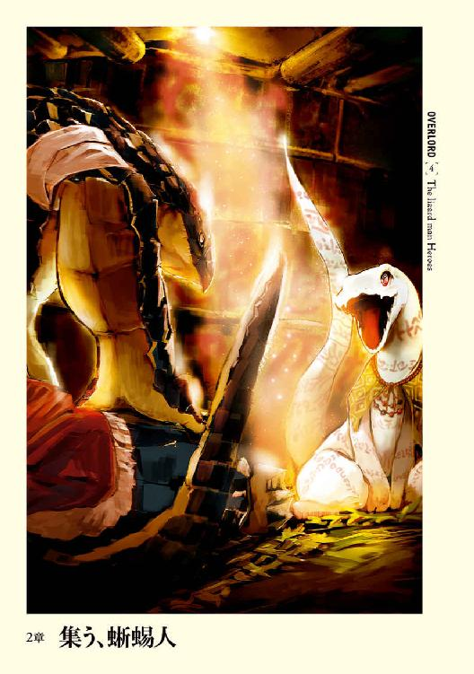
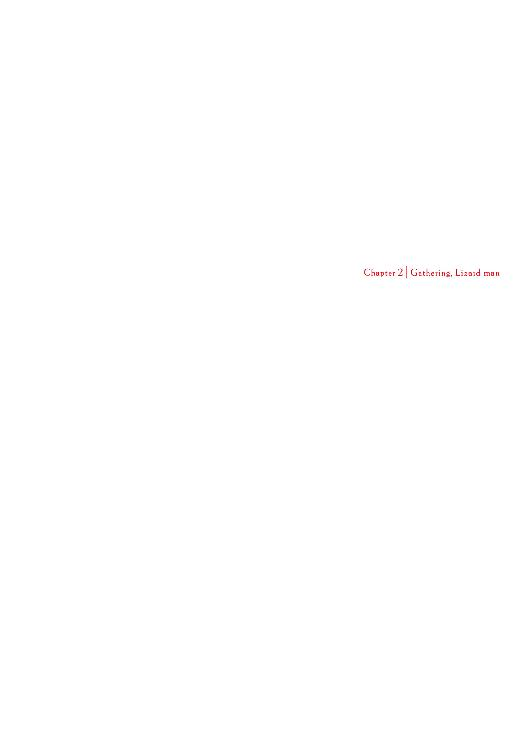
１
ロロロに乗って湿地を旅すること半日。太陽が中天に昇る頃、恐れていた敵との遭遇も無く、ザリュースは無事に目的地に到着する。
そこは湿地の中、〝緑爪〟族と同じ作りの住居が幾つも建っており、周囲を先端を尖らせた木の杭が、外に突き出すように囲んでいる。杭の隙間は広いが、ロロロのような大型サイズのモンスターの侵入は阻止できそうだった。家屋の数は〝緑爪〟よりも少ない。ただ、住居自体の大きさは〝緑爪〟よりも大きい。
そのため人数ではどちらが勝っているかは不明だ。
住居の一つに、風に揺れる一つの旗があった。そこには〝朱の瞳〟を意味する蜥蜴人のマークが記されていた。
そう、ここがザリュースが最初に選んだ目的地──〝朱の瞳〟族の住処だ。
一通り見渡したザリュースは、安堵の息を吐く。
昔、得た情報と変わらない湿地に住居を構えていたのは、非常に幸運なことだった。かの戦で住処を移転させた可能性も考え、下手をすれば部族の捜索から始まるかと思っていたのだから。
ザリュースは自らがやってきた方角を振り返る。視線の先にあるのは自らの村。今頃、村も大慌てで様々な準備を整えている頃だろう。離れると不安が込み上げてくるが、攻撃を受けている可能性はほぼ無いと考えて良いはずだ。
ザリュースがここまで無事にたどり着いたことがその証明だ。
偉大なる御方とやらが油断しているのか。それともザリュースのこの行動も想定内なのか。それは不明だ。ただ、今のところ相手は約束を違える気も、戦争準備を阻止する気も無いということ。
無論、偉大なる御方なる敵が、阻止する気で動き出したとしても、ザリュースは自らの信じる行いをするほか無いのだが。
ザリュースはロロロから降りると、背中を伸ばす。
ロロロに長時間乗せてもらっていたために筋肉が強張っていたが、背を伸ばすことで和らぎ、逆に心地よさすらこみ上げてくる。
それからロロロにここで待っているように指示をすると、背負い袋から魚の干物を取り出し、朝食兼昼食として与える。
本当はこの辺りで自らの食事を調達するように指示したいところだが、〝朱の瞳〟族の狩猟場所を荒らしかねないことを考慮すると、そのような命令は出せない。
蛇の頭を全部、数度撫でると、ザリュースはロロロを置いて歩き出す。
ロロロの近くにいては多頭水蛇を警戒して相手が出てこない可能性がある。ザリュースは同盟を結ぶためのメッセンジャーだ。相手をこれ以上威圧するのは望むところではない。
ジャバジャバと水音を立てながら歩く。
視野の端で、〝朱の瞳〟族の戦士階級の者が幾人か、囲みの杭越しに並行するように歩いていた。武装は〝緑爪〟族と何ら変わることが無い。鎧は何も着ず、手には木を削り先端に尖った骨をつけた槍。スリング用の紐らしきものを持っている者もいるが、石を備えてないところから、すぐに攻撃する意志がないことは見て取れる。
ザリュースも下手に刺激しないように歩き、そのまま正面の門の前までやってきた。そこでこちらを警戒し、様子を窺っている蜥蜴人たちに向き直り、声を張り上げた。
「俺は〝緑爪〟族のザリュース・シャシャ。この部族の族長と話がしたい！」
やがて、さほど短くは無いが、長くは決して無い時間が経過し、一人の捻じれた杖を持った年配の蜥蜴人が姿を見せる。後ろには五人の屈強な体軀のものを連れて。年配の蜥蜴人は全身に白の染料で紋様を描いていた。
（祭司頭か）
ザリュースは堂々と立つ。
今は対等だ。決して頭を垂れるわけには行かない。その祭司の視線が胸の焼印を確認するように動いたときも、ザリュースは不動の姿勢を保ったままだ。
「〝緑爪〟族のザリュース・シャシャ。ある話を持ってきた」
「......良く来たとは言わんが、部族を纏め上げる者が会うそうだ。ついて来い」
奇妙な言い回しに、僅かにザリュースは困惑する。
なぜ、族長でないのか、という疑問だ。しかも彼らは身分を証明するものの提出を要求してこなかった。ただ下手に話を振って、臍を曲げられては厄介だ。違和感を覚えつつも、ザリュースは一行の後を黙ってついていく。
案内された小屋は立派なものだった。
ザリュースの部族でいえば兄のものよりも一回りは大きい。小屋の壁には珍しい染料によって紋様が施され、住むものの身分の高さを証明している。
気になるのは、窓に相当するものが無く、開いているのは所々にある風の取り入れ口ぐらいだという点か。ザリュースたち蜥蜴人は闇の中でも平然と見通すことが出来る。しかし、それでも暗い中で生活するのが好きというわけではない。
ならばなぜ、こんな暗そうな小屋で生活しているのか。
ザリュースは疑問に思うが、それに答えてくれそうなものはいない。
後ろを振り返る。案内してくれた祭司も共に連れ立った戦士たちも、皆すでにこの場にはいない。
最初、案内してくれた者が全員離れると聞いたときは、無用心すぎる行為だと思ったものだ。それとなく問いかけてしまうほど。
しかし、この場から離れること。それが纏め上げるもの──族長代理──の望みと聞いたとき、ザリュースはこの小屋の中で待つ者の評価を一段高めた。
武装した戦士たちに取り囲まれ、圧迫されたとしても、兄にはああ言ったものの無傷での帰還を考慮していないザリュースに対しては無益な行いだ。逆にその程度かという失望感が先にたっただろう。
だが、こちらの腹の中まで読んだ上で、こうして懐の広いところを演出しているとしたら──
（交渉ごとに長けた、厄介な相手かもしれないな......）
遠くの方でこちらを窺っている者たちの存在は意識して無視し、ザリュースは扉まで歩み、声を張り上げる。
「俺は〝緑爪〟族のザリュース・シャシャ。この部族を纏め上げる者がこちらにいると案内された！ 部屋に入らせていただく！」
小さな声が聞こえる。それはメスの掠れた声であり、入室の許可を与えるものだった。
迷い無くザリュースは扉を無造作に押し開ける。
室内は想像していたとおり暗かった。
外との光量の差が、闇視能力を持つとはいえ、ザリュースの目を瞬かせる。
中から漂う空気には薬湯なのか、緑のツンとする匂いが混じっている。老年のメス蜥蜴人でもいるのだろうというザリュースの想像は、容易く裏切られた。
「よく、いらっしゃいました」
暗い室内から声が掛かる。扉越しであったために老年と勘違いしてしまったが、こうやって聞くと若さとも言うべき張りがあった。
ようやく光の変化になれたザリュースの視界に、一人の蜥蜴人の姿が浮かぶ。
白い。
それがザリュースの第一印象である。
雪のような白い鱗はくすみもまるで無い無垢なものだ。
つぶらな瞳は真紅で、紅玉の輝きを宿しているかのようだった。スラリとした肢体はオスのものではなくメスのもの。
全身に赤と黒で紋様が描かれている。その意味するところは、成人、多種の魔法の習熟、そして──未婚。
槍で突き刺されたことがあるだろうか。
ザリュースはある。一瞬、焼けたものを押し込まれたような熱さが走り、心臓の鼓動にあわせて激痛が全身を叩くのだ。そしてザリュースは今、その感覚を味わっていた。
痛くは無い。しかし──
ザリュースは何も言わずに佇む。
その沈黙をどう受け取ったのか、彼女は皮肉げな笑みを浮かべた。
「かの四至宝の一つたるフロスト・ペインを持つ方にもこの身は異形に見えるようですね」
アルビノは自然界では非常に珍しい。というのも目立つために生き残ることが難しいからだ。
文明を持つ蜥蜴人でも似たようなところがある。日光に弱く、視力も弱い存在が生き残れるほど確たる文明社会ではないのだ。そのために生きて成人することが珍しいアルビノは、生まれてすぐ間引かれることすらある。
アルビノは通常の蜥蜴人からすれば、邪魔な存在というのであればまだまし、酷いときはモンスターの一種にも見られるのだ。そのための皮肉だ。
しかしザリュースには関係がなかった。
「──どうしました？」
扉の前に立ったまま、何も行動を起こさないザリュースに、中のメス蜥蜴人は訝しげに問いかける。
──それには反応せず、ザリュースは語尾を高音に持ち上げ、ビブラートをかけた鳴き声を上げる。
それを耳にしたメスの蜥蜴人は目を見開き、口を微かに開ける。そこにあるのは驚愕でもあり、困惑でもあり、そして羞恥でもある。
その鳴き声はこういわれる──求愛の鳴き声と。
ザリュースは我に返り、自分が何をしたのか、無意識に何を行ったのか理解し、人であれば赤面するのに似た反応として尻尾をばたつかせる。小屋を壊さんばかりの激しい動きで。
「あ、いや、違う。いや違うではなく。そうではなく、えっと──」
ザリュースの驚きぶりや慌てようが彼女を逆に冷静にしたのだろう。メスの蜥蜴人はカチカチと歯を鳴らし微笑むと、ザリュースに困ったように問いかける。
「落ち着いてください。あまり暴れられると困ります」
「！ ああ、すまん」
ザリュースは頭をクイッと動かし、謝罪すると家の中に入る。その頃には一応は彼女の尻尾は垂れ下がっており、なんとか冷静さを取り戻したようだった。ただ、ピクッピクッと尻尾の先端が動くところから、完全に落ち着いたわけではないらしい。
「どうぞこちらに」
「──感謝する」
家に入り、彼女に指し示されたのは、床に置かれた何らかの植物で編んだ座布団のようなものだ。ザリュースがそこに腰を下ろすと、彼女はその向かいに腰をすえる。
「お初にお目にかかる。〝緑爪〟族が旅人、ザリュース・シャシャです」
「ご丁寧にありがとうございます。〝朱の瞳〟族の族長代理を務めさせていただいている、クルシュ・ルールーです」
互いに自己紹介を終えると、値踏みをするように様子を窺いあう。
暫しの沈黙が小屋を支配するが、いつまでもこうしているわけにはいかない。ザリュースは今は客人。ならば最初に話の口火を切るべきは主人であるクルシュのほうだろう。
「まず使者殿。お互いにしゃちほこばって話すことも無いと思います。口を大きく開いて話したいですから、楽にしていただいて結構ですよ？」
胸襟を開くという意味の言葉を受け、ザリュースは頷く。
「それは感謝する。固苦しい口調での話には慣れてないもので」
「さて今回、こちらに来られた理由をお尋ねしても？」
クルシュは問いかけながらも、大体の予想はついていた。
村の中央に突如として現れた謎のアンデッド。さらに何者かが使ったらしき雲を操作した第四位階魔法──〈雲操作〉。そして訪ねてきたのは他部族の英雄とも呼ばれるオス。
想定される答えは一つだ。ザリュースの返答にどう答えるか、そうクルシュは思案し──すべてをぶち壊される。
「──結婚してくれ」
──────。
──────？
──────?!
「──はぁあ?!」
クルシュは一瞬、自らの耳を疑う。
「確かに来た目的は違う。本来であればそちらを先に済ませてからすべき話だとは俺も重々承知している。だが、自分の気持ちに噓はつけん。愚かな男だと笑ってくれ」
「う、え、あぁ。はぁ......」
生まれてから一度も聞いたことが無い、そして自分には決して縁の無いはずの言葉を投げかけられ、思考が混乱という名の暴風によって千切れ飛び、全然まとまらない。
そんなクルシュにザリュースは苦笑いを浮かべ、続けて話す。
「すまん。大変、申し訳なかった。この非常事態に。今の答えは後日聞かせてもらえれば構わない」
「う、あ、ああ」
なんとか自らの精神を再構築、もしくは再起動することに成功し、クルシュは冷静さを取り戻す。しかしながらすぐに先ほどのザリュースの言葉が浮かび、熱暴走しそうになる。
クルシュは目の前のオスの様子を、悟られない程度に窺う。非常に落ち着いたオスの顔を。
（私にこんなことを言っておきながら、自分は冷静だなんて......。頻繁に求愛でもしているの!? それとも言われ慣れているとか......確かに格好いいけど......あー、何を考えているの！ これは彼の策よ、きっとそう。手玉に取るつもりなのよ。大体こんな私にきゅ、求愛なんて......！）
一人のメス蜥蜴人として見られるという、今までに遭遇したことのない体験に、完全に気が動転していた彼女は気が付く余裕がなかった。ザリュースの尻尾も先端がピクリピクリと痙攣するような微かな動きを見せていることに。目の前のオスもまた、精神の力を総動員して、己の心の内を素直に表現しないよう抑えていたのだ。
だからこそ空白の時間が生まれる。両者とものぼせ上がった頭を冷やすために、沈黙のベールが舞い降りる静かな時間を必要としたのだ。
ようやく、十分な時間をかけ、一先ずは元の話に戻そうと考える。
クルシュはザリュースがこの村に来た理由を再び尋ねようとして、先程の言葉を思い出す。
──聞けるか！
バシンと一度、クルシュの尻尾が床を叩く。まるで自分が叩かれでもしたように、びくりと目の前のオスの体が動いた。
己の行動はあまりにも無礼とされる行為。クルシュは内心で慌てる。
たとえ旅人といえども、相手は部族の代表としてこの地まで赴いた──それも単なる蜥蜴人ではなく、フロスト・ペインを持つ英雄だ。そんな人物に取ることが許される態度ではない。
（でも、貴方が悪いんじゃない！ それより何か言ってよ）
ザリュースが自らの軽率な行動を恥じて沈黙を選んでいるなど、活火山に蓋をしようと労力を割いているクルシュが気付くはずもなかった。
沈黙が続き、このままではどうすることも出来ないと覚悟を決めたクルシュが、話題を変えることをようやく思いつく。
「この身を恐れないとは流石というべきですか？」
クルシュの皮肉交じりの言葉に対して、何を言ってるんだろう、というザリュースの表情が迎撃する。
クルシュもまた何考えてるんだろうこの人は、と疑問を浮かべる。
「この白き体を恐れないのか？ といったのです」
「......かの山脈に掛かる雪のようだな」
「......え？」
「──綺麗な色だ」
当然だが、そんな台詞は生まれて以来、一度も言われたことも無い。
（な、なにをこ、このおすは、いっているのよー！）
内部からの圧力に耐えかね、一瞬で蓋が吹き飛び、何処かに飛んでいってしまう。
混乱しているクルシュを前に、ザリュースは無造作に手を伸ばすとクルシュの鱗にすっと手を走らせる。艶やかで磨かれたような綺麗な──そして僅かに冷たい鱗の上を、流れ落ちるようにザリュースの手が動いた。
シャ！ という短い威嚇音にも似て非なる呼吸音がクルシュの口から漏れる。
それが互いの頭に、若干だが冷静さを取り戻させた。
何をされたのか、そして何を思わずしてしまったのか互いに理解し、動揺が全身を駆け巡る。なぜそんなことを思わずしてしまったのか、そしてなぜそんなことをされたのか。疑問が焦りを生み、焦りが混乱を生む。
結果的に二本の尻尾がバシン！ バシン！ と家を叩く。家が揺れるような勢いで。
やがて互いに顔を見合わせ、次に互いの尻尾の状況を認識し、時間が止まったのではという急な勢いで尻尾の動きは止む。
「............」
「............」
重いと表現すべきか。それとも緊張感があるというべきか。沈黙が二人の上に降り、そして互いの様子をちらちらと窺う。ようやく心の整理が付いたクルシュは、噓は一つも見逃さないという冷たい視線で問いかける。
「......突然......なんでですか？」
思いを言葉に上手く表現できなかったクルシュだったが、ザリュースは理解したらしく迷いのない態度で素直に答える。
「一目惚れという奴だ。それに今回の戦いで死ぬかもしれんから後悔の無いようにな」
愚直な、自らの感情をまるで隠しもしないその言葉に、クルシュは一瞬だけ詰まる。しかし、どうしても納得のいかない言葉だ。
「......かの剣、フロスト・ペインを持つお方が死ぬ覚悟を？」
「相手は未知数の敵。油断はできない。......伝言を持ってきたモンスターを見たか？ 俺の村に来たモンスターはこんな姿をしていたのだが......」
ザリュースのモンスターの描写を受け、クルシュは首を縦に振った。
「ええ。同じモンスターですね」
「アレがどんなモンスターかは知っているか？」
「いえ、私を含め部族の者は誰も知りませんでした」
「そうか......あれとは一度遭遇したことがあるが」そこで言葉を止めると、ザリュースはクルシュの反応を窺うように話す。「俺は逃げ出した」
「──え？」
「勝てなかった。いや、良くて半死半生だっただろう」
クルシュはあれがそれほど恐ろしいアンデッドだったのかと理解し、戦士たちを抑えたのは正解だったと安堵する。
「あれは精神をかき乱す絶叫を放つ。さらには非実体のモンスターで、魔法の掛かってない武器での攻撃は殆ど無効化する。数で押しても勝てんよ」
「私達、森祭司の魔法には、一時的に剣に魔法を付与するものがありますが......」
「......精神への攻撃を防げるか？」
「抵抗力を強化することはできますが、全員の精神を守るのには少々力が足りません」
「なるほど......それは祭司の誰にでもできるのか？」
「抵抗力の強化であれば殆どの祭司が。混乱から心を守るのであれば、この部族では私だけです」
少しばかりザリュースの呼吸が乱れたのをクルシュは悟った。どうやら気が付いたらしい。クルシュの地位は決して飾りとして与えられたものではないことに。
そうクルシュ・ルールーという蜥蜴人は森祭司として練達の腕を持ち、その力は恐らくは蜥蜴人たちのどの祭司頭よりも上なのだ。
「......〝朱の瞳〟族は何番目に襲われる？」
「四番目と言われました」
「そうか......それでそちらはどうするつもりなのだ？」
時間が流れる。
クルシュは話すことに何のメリットがあるだろうかと考えていた。〝緑爪〟は戦うことをきっと選んだのだ。ザリュースは共に戦ってくれと、同盟を結ぶために来たのだろう。ではどうすれば〝朱の瞳〟にとっての利益になるか。
元より同盟を結ぶ気はない。〝朱の瞳〟族の見解は避難だ。第四位階魔法を使用しただろう相手と戦うのは愚かの極みである。それに使役しているあのアンデッドがそれほどまでに恐ろしいとなると、それ以外の結論はない。
しかし、それを素直に言葉にして良いものか。
思考の渦に飲み込まれたクルシュに、ザリュースは目を細め、独り言のように話しかける。
「本音で話させてもらう」
何を言い出すのか。クルシュはザリュースをじっと見つめる。
「今回危惧しているのは避難した後の話だ」
意味が摑めなかったクルシュに、ザリュースが淡々と語りかける。
「仮に住み慣れた場所から移転して、今と同じように生活していくことが可能だと思うか？」
「無理......いえ、難しいでしょう」
この場所を離れて新たな生活圏を作るということは、その場所での生存をかけた戦い──生存競争に勝つ必要がある。蜥蜴人は別にこの湖の覇者というわけではなく、この湿地だって長い年月をかけて獲得したもの。そんな種族が、見知らぬ場所で容易く生活圏を構築できるはずが無い。
「食事も満足に取れない可能性が十分にありえるということだな」
「そうですね」
目の前のオスが何を言いたいのか理解できずに、クルシュは棘の生えた怪訝そうな声で答えてしまう。
「では、もし周辺五部族が同じように避難した場合はどうなると思う？」
「それは──！」
彼女は言葉に詰まる。ザリュースの言葉の真意が摑めたためだ。
湖が広大だとしても、一つの部族が避難先として選んだ場所は、他の部族にとっても同じく望ましい場所であろう。では、ただでさえ新たな生存競争が勃発しようというのに、更に主食となる魚を奪い合う相手が近場にいた場合はどうなるというのか。それは恐ろしい事態へ発展しかねない。かつての戦いのように。
「まさか......勝てるかどうかわからない戦いをするのも......」
「......そうだ。他の部族も含めた、口減らしも考えに入れている」
「そのために！」
だから軍を構成して戦うといっているのだ。たとえ負けるとしても。ただ、蜥蜴人の数を減らすためだけに。
生存競争を戦えるだけの戦士、狩猟班、祭司以外は死んでも構わないという考えは、極論ではあるが得心がいく。いや、死んでもらった方が、長期的に判断するなら正解かもしれない。
口が減れば食料も少なくてすむ。そうすればもしかしたら共存できるかもしれない。
クルシュは必死でその考えを否定する意見を探す。
「──その新しい場所がどれほど危険かも分からないのに、最初から数の減った状態で始めろというのですか？」
「では聞かせてくれ。もし仮に生存競争に容易く勝てたときはどうするのだ？ もし主食となる魚が少なくなったら。今度は五部族で殺しあうのか？」
「魚も良く取れるかもしれないではないですか！」
「取れなかったら？」
彼女はザリュースの冷たい問い返しに詰まる。
ザリュースは最悪に近い事態を想定した上で行動している。クルシュは希望的観測を主に考えている。彼女の考えで動けば、悪い事態が起こったときに惨事となるだろう。しかし、ザリュースのアイデアならそうはならない。
しかも、敗北して成人した蜥蜴人たちの数が減ったとしても、それは名誉ある戦死だ。
「......もし拒絶されたなら、この部族に対して最初に戦いを挑む必要がでてくる」
暗い声にクルシュはぞっとした。
〝朱の瞳〟族だけを、部族の人口を維持したままで別の場所には行かさない、という宣言。
それは非常に納得のいく、妥当な判断でもある。
数が減った部族が向かった先で、戦力を温存している〝朱の瞳〟族に滅ぼされる危険を考えるなら、回避手段はそれしかない。それは部族を預かるものとして当然の考えだ。自分も同じ立場であれば、同じ行動を取るだろう。
「同盟を結んでいれば、敗北したとしても新天地で部族間の殺し合いが発生する可能性は低いのでは、と思っている」
クルシュはその意味が分からず、素直に不思議そうな表情を浮かべた。ザリュースは自らの言葉の真意を分かりやすく告げる。
「仲間意識を植え付けられるだろう。別の部族ではなく、共に戦った仲間という認識に塗りかえるんだ」
なるほど。
クルシュは口の中で言葉を転がす。
共に血を流し合った部族であれば、食料状況が悪くなったとしても直ぐに殺し合いには発展しない可能性があるということか。しかし、それはクルシュの考え、そして経験からすると疑問でもある。
僅かに俯き、黙って自らの考えに没頭し始めたクルシュに、疑念を感じさせる声でザリュースが問いかけてくる。
「ところでこの部族はどうやってあの時期を乗り超えたのだ？」
針で刺されたようだった。思わずクルシュの顔が跳ね上がってしまう。顔を一直線に向けると、質問したザリュースが驚いているのが分かる。
（ああ、つまり本当に知らずに問いかけたのですね）
短い時間ながらもザリュースという男の性格を大体は摑んだクルシュは、自分たちに対する脅しなどを含んだ問いかけでないことを直感的に読みとった。
クルシュは目を細め、ザリュースを凝視する。まさに穴が開きそうな鋭い視線。それほどの視線を向けられる理由が浮かばず、ザリュースが困惑しているのがわかる。それでもクルシュは抑えるすべを持っていなかった。
「──それを言う必要があるのですか？」
吐き捨てるような口調。憎悪に満ちた、まるで話していた人物が変わったのでは、そんな錯覚すら引き起こしかねないクルシュの変化。
しかし、ザリュースにしても引くことは出来ない。もしかしたら全てが救われる答えがあるかもしれないのだから。
「聞かせて欲しい。祭司の力か？ それとももっと別の方法があるのか？ もしかしたらそこに救いが──」
そこまでザリュースは言って、言葉に詰まる。
救いがあったとしたら、クルシュはそんな辛そうな姿を見せるはずがない。
クルシュはそんなザリュースの心の動きが読めたのだろう。自らも含めた全てを嘲笑うように鼻を鳴らす。
「正解です。そこに救いなんかありません」そこで言葉を止め、疲れたような笑いを浮かべて「私達が行ったのは同族喰い──死んだ仲間達を食らったのですよ」
ザリュースを口が利けないほどの衝撃が襲う。弱き者を殺す──口減らしは禁忌ではない。しかし同族喰いは不浄な行いであり、禁忌中の禁忌だ。
（なぜ、それを自分に教えた？ 死ぬまで隠しておくべき事実を、なぜ、部族外──来訪者の自分に教えた？ 生かして帰す気はないということか？ ......いや、違うな。そんな雰囲気ではない）
クルシュにしてもなぜ話したかは不思議だった。
この話が他の部族の者にとってどれだけ軽蔑に値する事実かは十分に理解している。それなのになぜ──。
口だけはまるで自分のものでなくなったかのように饒舌に動く。
「あの頃──他の部族が戦を始めた頃、やはり私たちの部族でも同じように食料不足からかなり不味い状態になっていました。しかし私達の部族が戦に参加しなかったのは、〝朱の瞳〟は祭司の数が多く、戦士達が少ないという部族構成のためです。祭司の数が多い分、魔法で食料が作り出せたのです」
別の意識が支配したように留まるところを知らずに、クルシュの口は動く。
「ただ、祭司の魔法で作り出せる食料は、部族全体からすると微々たる量です。ゆっくりと死に向かって緩慢な滅びの道を進むしかなかった。しかし、ある日、族長が食料を持ってきたのです。真っ赤な肉を」
（──聞いて欲しかったのかもしれない......私の罪を）
ギギギとクルシュの歯がきしむ。
目の前のオスが静かに聞いてくれる。嫌悪を抱いたとしても、それを表に出さずに。
その態度にクルシュは感謝の念を抱いた。
「その肉がなんの肉か。皆薄々は承知していました。当時、厳しい掟を作って、違反した家族は追放という形になっていました。族長が肉を持ってくるのは、決まって追放した後でしたから。ですが、目を瞑ってその肉を食べていたのです、生き残るために。ただ、そんなことが長く続くわけが無い。あるとき溜まった不満は一気に爆発し、反乱という形になって現れました」
目を閉じ、族長を思い出す。
「食べていた......承知しながら食べていた私達も同罪だというのに。本当に、いま思えば滑稽ですね」
黙禱を終え、クルシュは正面からザリュースを見つめる。ザリュースの静かな瞳に嫌悪の色がないのを見て、クルシュは心の何処かで喜びが走ったことに驚きを感じた。
どうしてそんな感情が走ったのだろう。
その答えはクルシュも薄々とは悟りつつあった。
「......私を見てください。私達の部族〝朱の瞳〟では時折、私のような者が生まれてきます。その者は長じて何らかの才──私の場合は祭司の力ですが、を発揮します。そのために族長に継ぐ権力を持つこととなるのですが......そんな私が旗印となって族長に反旗を翻したわけです。村が二つに割れる戦いでしたが、私たちのほうが数が多かったために勝利を摑むことができました」
「そして結局数が減ったことで食料が行き渡るようになった？」
「そうです。......結果として私達の部族は生き残れました。反旗を翻した──あの時、族長は最後まで決して降伏することなく、無数の傷を受けて死んでいきました。そして最後の止めを刺されたその瞬間、私に笑いかけたのです」
血を吐くようにクルシュは言葉を紡ぐ。
族長を殺したときから、彼女の心に徐々に溜まっていった膿だ。
クルシュを信じ族長と戦った──この部族のものには決して言えなかったであろう膿を、ザリュースという人物の前でようやく吐き出すことが出来たのだ。そのために言葉は止まることがない。水が上から下に流れるように。
「あれは殺した相手に投げかけるものではない。憎悪も嫉妬も敵意も呪いも何も無かった。本当に綺麗な笑顔だった！ 族長は現実を見据えた上で行動して、私達は......私達は理想や敵意のみで行動したのではないか。本当に正しかったのは族長ではないか！ いつもそう思うのです！ 族長が殺されることで──諸悪の根源とされた人物が死んだことによって再び私達の部族は纏まりました。しかも数が減ったことによる食料事情の回復という大きな土産まで付いて！」
そこまでが彼女の限界であった。
族長の代理として、罪を背負った者として必死に耐えてきた分、決壊したときの力は大きかった。迸った濁流は全てを吞み込む。千切れた思考では上手く言葉にすることは出来ない。
クークーと微かな鳴き声を上げ、生物の構造的に涙は大きくは流れ落ちないが、精神的な意味で彼女は泣き崩れた。
小さな体だった。
自然の中で生きる以上、弱さは罪であるということと同義だ。流石に子供は庇護される対象ではあるが、蜥蜴人はオスもメスも大きな違いなく、強さという面を重視する。それからすれば目の前のメスは、卑下される対象であろう。部族を纏める存在が、他部族の者──大して親しくもない相手に弱みを見せて良いはずはない。
しかし、ザリュースの心に生じた感情はそれとは全く異なっていた。
美しいメスであるということもあったかもしれない。しかし、それ以上にそこにいるのは一人の戦士だった。傷つき、あえぎ、苦悩し、それでも歩もうとしている戦士。それが弱さを垣間見せただけのように思えたのだ。
立って歩もうとするならば、それは弱者ではない。
ザリュースは近寄り、クルシュの肩を優しく抱きしめる。
「──俺達は全知でも全能でもない。その場その場で行動を決めるしかないのだ。俺だって同じ立場ならそうしたかもしれん。だが、慰めは言いたくはない。正しい答えなんかこの世にあるものか。ただ、俺達は歩くだけだ。後悔や苦悩で足の裏を傷だらけにしながら。お前も歩くしかない、そう俺は思う」
互いの体温が伝わり、微かに心臓の鼓動が体を通して聞こえる。二つの脈打つ心臓がリズムを合わせ、徐々に一つであるような錯覚に襲われる。
不思議な感覚だった。
今までの蜥蜴人生で一度も感じたことのない温もりをザリュースは感じる。蜥蜴人を抱きしめているからではない。
（このメス、クルシュ・ルールーを抱きしめているからか）
しばらく時間がたち、クルシュはザリュースの胸から体を起こす。
体温が離れていくその様をザリュースは残念に感じる。しかし、流石に恥ずかしくてそんなことは言えない。
「無様な姿をお見せました。......軽蔑しましたか？」
「何処が無様なんだ。それに道を苦悩しながら、傷つきながら、それでも進む者を、無様と思うほど、愚かなオスに俺が見えたのか？ ......お前は美しい」
「──！ ──!!」
白の尻尾がのたうち、床を数度叩く。
「......やばいなぁ」
ポツリと呟くクルシュに、その言葉の意味を問い返さず、ザリュースは他の質問を投げかける。
「それより〝朱の瞳〟族は魚の養殖は行っていないのか？」
「養殖？」
「そうだ。主食となる魚を自分達の手で育てることだ」
「そのようなことはしません。魚は自然の恵みですから」
ザリュースが知る限り、養殖という技術は蜥蜴人のどの部族も持っていないものだ。食べ物を自分たちの手で増やすという考え方からして異質なのだ。
「それは祭司──森祭司としての考えらしいが、曲げることはできるか？ 食べるために魚を育てるという考えに。俺の部族の祭司たちは同意したが？」
クルシュはコクンと首を縦に動かす。
「ならば魚の養殖の仕方を教えよう。重要となるのは魚に与える餌だ。これは森祭司たちが魔法で作る果実を使うんだ。あれを与えることでより良い成長をもたらしてくれる」
「その技術を教えてもらっても本当に構わないので？」
「当然だ。隠しても仕方ないし、それで多くの部族が助かる方が大事だ」
クルシュは深々と頭を下げ、尻尾を上に突き上げた姿勢で、礼を告げてくる。
「感謝します」
「感謝は......しなくてもかまわない。その代価として改めて聞かせてもらいたいたい」
クルシュの表情から感情が抜け落ちる。その態度にザリュースも心を深く鎮める。
決して避けることの出来ない質問。ザリュースは息を飲み、同じタイミングでクルシュも息を吸う。そして問いかける。
「〝朱の瞳〟族はまもなく起こるであろう戦に対して、どのような方針を採る？」
「......現在、昨日の話し合いでは避難と決まっています」
「では、族長代理クルシュ・ルールーに問う。今も同じ考えか？」
クルシュは答えない。
この返答で〝朱の瞳〟族の運命が決まるのだ。迷うのは当然だ。
しかし、それに対してザリュースが出来ることは無い。ただ、困ったように笑うのみだ。
「......お前が決めることだ。かつての族長が最後にお前に笑いかけたのは、お前にこの部族の未来を託したからだろう。ならば今こそその使命を果たすべきだ。俺は全て話した。あとはお前が決めるだけだ」
クルシュの目がグルグルと室内を見渡すべく動く。それは逃避でも、助けを求めるものでもない。ただ、自分の中で正しい答えを導き出そうとしているのだ。
どんな結論であろうと、ザリュースはそれを受け止めるだけだ。
「族長代理として伺います。どの程度を避難民として逃がすおつもりなんですか？」
「各部族の避難民は戦士階級十、狩猟二十、祭司三、オス七十、メス百、子供若干名を予定している」
「......それ以外は？」
「──場合によっては死んでもらう」
クルシュは黙って虚空を見上げる。そしてポツリと呟いた。
「──そうですか」
「それで結論を聞かせて欲しい。〝朱の瞳〟族族長代理クルシュ・ルールー」
クルシュは様々な案を練る。
ザリュースを殺すことも無論、選択肢の一つだ。彼女個人としてはザリュースを殺したくはない。しかし族長代理のクルシュとしては別だ。殺した後、村の全員で逃げればどうか。彼女はその考えは破棄する。将来的に非常に危険な賭けだ。大体、本当に彼一人でここまで来たという保証はどこにもない。
ならば彼に約束した後で逃げ出すというのはどうか。
これもまた問題だろう。下手をすれば〝朱の瞳〟族と戦うことで──戦う相手を変更することで、間引きを行う方向に計画を変更しかねない。相手の真意は口減らしなのだ。そのための相手は誰だって同じだろう。
結局、もし同盟を結ばないといえば、その答えを持った上で部族に帰り、〝朱の瞳〟を滅ぼす軍を連れてくるだろう。
ただ、ザリュースは気づいていないのか、一つだけ穴がある。しかしながら、結局、食料問題は付いて回る問題だ。
クルシュは悟ったように笑う。最初から話は詰んでいるのだ。彼にこの話を聞かされた時点で。〝緑爪〟が同盟を結ぼうと動き出した段階で。
〝朱の瞳〟族が生き残る道はただ一つ、同盟に参加し、共に戦うこと。それはザリュースも理解しているはずだ。
にもかかわらず、クルシュの答えを待っているのは、同盟を結ぶに足りる蜥蜴人が指揮しているかどうかを見定めようとしてるのだろう。
あとはその決定を口から出すかどうか。
ただ、その言葉を口に出せば多くの命が奪われることに他ならない。しかし──
「一つだけ言わせて欲しい。俺達は死ぬために戦うのではない。勝つために戦うんだ。不安を感じさせることをなんだかんだと言ったかもしれないが、敵に勝てば笑い話で終わる。そこだけは間違えないでくれ」
クルシュは了解したと頷く。
ほんと、このオスは優しい。そう感じながら、自らの決定を口に出す。
「......我々、〝朱の瞳〟もあなた方に協力しましょう。族長の笑顔を無意味なものにしないために。そして最も多くの〝朱の瞳〟族のものが生き残れるように」
深々と頭を下げ、尻尾を上にピンと伸ばすクルシュ。
「──感謝する」
ゆっくりとザリュースが頭を下げ、尻尾を上げる姿には言葉以上に万感の思いが籠もっていた。
•
早朝。
ザリュースはロロロの前で〝朱の瞳〟族の門を眺めていた。
思わずクワッと大きく口を開け、欠伸をする。昨晩遅くまで〝朱の瞳〟族の会議にオブザーバーとして参加し、少々眠いのだ。しかし時間はあまり残っていない。本日中にもう一つの部族を訪ねなければならない。
睡魔と必死に戦いながらも、それに抗いきれず、ザリュースは再び欠伸をする。それも先ほどよりもかなり大きなものを。
今なら、安定感は悪いが、ロロロのうえでも眠れそうな気がする。
昇りだした黄色にも思える太陽の方を眺め、それから門へと視線を戻したザリュースは困惑する。門から出てくる異様な存在に。
それは草の塊だ。
短冊状の布や糸を多数縫いつけて垂らした服に、雑草がところどころから生えている。湿地で横になっていれば、遠目からは単なる草としか見えないだろう。
ああ、あんなモンスターを何処かで見たことがあるな──。
旅人として旅をする中で見た光景を、ザリュースは思い出していた。後ろのロロロが警戒したような低い鳴き声を上げる。
無論、それが誰なのか、ザリュースは理解している。間違えようが無い。僅かに白い尻尾が少しばかり顔を覗かせているからだ。
ピコピコと機嫌よさそうにゆれる尻尾をぼんやりと眺めながら、ロロロを落ち着かせている間に、その草の塊はザリュースの元まで到着する。
「──おはよう」
「ああ、おはよう。......問題なく部族は纏め上げられたみたいだな」
視線を動かし、〝朱の瞳〟の住居を眺める。朝から殺気だった雰囲気で、忙しそうに色々な蜥蜴人が走っている。並んで同じ方角を見ながら、クルシュも答えた。
「ええ。問題はなかったわ。本日中に〝鋭き尻尾〟族の村まで出立できるはずよ。それと避難する者たちも」
村の祭司から魔法によって届けられた情報によると〝鋭き尻尾〟族が一番目に滅ぼすと宣告された部族だ。〝竜牙〟族でなかったのは時間的に好都合だった。
「それでクルシュがこちらに来た理由は？」
「簡単よ、ザリュース。でもその前に聞かせて頂戴。あなたはこれからどうするつもりなの？」
夕方から早朝までかけて行われた会議で、もはや互いの名を呼ぶのに違和感は無い。親しくなったためか言葉使いだって変わっていた。
「俺はこれからもう一つの部族、〝竜牙〟族の元に向かうつもりだ」
「強さこそ全てという部族よね？ 全部族で最大の武力を持っているとされている」
「ああ、そうだ。交流のある部族ではない以上、覚悟を決める必要がある」
ありとあらゆる情報が謎に包まれているため、行くこと自体非常に危険ではあった。しかも先の戦いで滅びた二つの部族の生き残りを迎え入れたという事実が、より一層危険を高めている。
あの戦いで活躍したザリュースは、二つの部族の生き残りからすれば、憎い敵なのは間違いない。
それでも今回の戦いにおいて最も協力を要請しなくてはならない部族だ。
「そう......だったらやはり私も同行した方がいいわね」
「──何？」
「不思議かしら？」
ばさばさと草の塊が動く。顔を見ることができないから、どのようなつもりで言ったのか分からない。
「不思議というか......危険だぞ」
「危険じゃないところが今、あるの？」
ザリュースは口ごもる。冷静になって考えれば、クルシュを連れて行くことはメリットが大きい。しかし、危険と分かりきった場所に惚れたメスを連れて行くというのは、オスとして嫌だった。
「──冷静ではないな、俺は」
草に隠れて見えないが、僅かにクルシュが笑ったようだった。
「......それでは別の質問だ。その格好は？」
「似合わないかしら？」
似合うとかそういう問題ではない。変だ。しかし褒めたほうが良いのだろうか。ザリュースは答えに迷う。熟考を重ね、見えない顔色を窺うように問い返す。
「......似合うといった方が良いの......か？」
「まさか」
ばっさりと断ち切るクルシュ。ザリュースの体から力が抜けたのも仕方が無いことだろう。
「単純に太陽の光は私には辛いの。だから外に出るときは大抵これを着ているのよ」
「なるほど......」
「あっ、答えを聞いてなかったわね。私が共に行くことに賛成してくれる？」
言っても無駄だろう。それに彼女を連れて行くことは、同盟を結ぶという目的で考えても有利に運ぶはずだ。彼女もそう考えたからこその提案だろう。ならばもはや異議は無い。
「......わかった。力を貸してもらうぞ、クルシュ」
本当に心の奥から嬉しそうにクルシュが答える。
「──了解したわ、ザリュース。任せてちょうだい」
「出発の準備はできているのか？」
「勿論よ。ちゃんと背負い袋に色々と詰め込んでいるわ」
言われて背中の辺りを注意してみてみると、草に僅かにこぶができている。そこからは新鮮な草の香りが漂ってくる。それも若干匂いの強いものであった。森祭司であれば薬草などの技術も持っているだろうから、それらも持ってきているのだろう。
「ザリュース、眠そうね」
「あ、あぁ、ほんの少しだけ眠いな。なんだかんだとこの二日間あまり寝てないんだ」
突然、白い鱗の生えた手が、草の服の下から突き出される。
「はい、リキリコの実よ。皮ごと嚙んでくれるかしら？」
差し出された手の上にのった茶色の実を、ザリュースは迷いなく口に含んで嚙み締める。
渋さが口の中全体に広がり、眠気は若干引いた。ただ、眠気覚ましというには微妙だ。しかし、そのまま数度嚙み締めると、突如として舌の上で爆発的に味が広がった。そればかりか吐き出される息にもその香りが含まれていた。
「むぅ！ なんだこの鼻に抜けるようなすがすがしさは！」
兄の口癖が思わず出てしまう。そんなザリュースにクルシュはシューシューと笑う。
「睡魔が抜けていくでしょ？ と言っても別に本当に無くなったわけではないから、過信は禁物よ？ どこかでちゃんと休息は取った方が良いわよ？」
口の中、そして吐き出された息を鼻から吸い込むことによって広がる、爽やかな清涼感に満足感を得ながらも、ザリュースは頷く。
「ならばそのうちロロロの上で寝かせてもらうとしよう」
ザリュースはそれだけ言うと、ロロロの後ろに攀じ登る。遅れてクルシュも登った。草が自らの体を這い上がる異様な感覚に、ロロロが不満げにザリュースを睨むが、それを何とか宥める。
「では行くぞ、安定感が無いから俺に摑まってくれ」
「分かったわ」
クルシュの腕がザリュースの腰に回り──ちくちくとした草の感触がザリュースをくすぐる。
「......」
なんとなく予想していたのと違う感触に、ザリュースは口を曲げる。
「──どうしたのかしら？」
「いや、なんでもない。行くぞ。じゃあ、ロロロ、頼む」
何が嬉しいのか。背後から聞こえる非常に楽しげなクルシュの声に、揺れるロロロの背中の上でザリュースは思わず満面の笑みを浮かべた。
２
新たな支配者によって制圧されたトブの大森林は静寂を湛えていた。あらゆる生き物が王の目に怯え、息を潜めているためである。
しかし、その場所だけは違った。
木々を切り倒す音、それを運ぶ音が周囲に広がる。
重機を彷彿とさせるゴーレム、重鉄動像が運ぶ先にあるのは建造中の巨大な木造建築物である。
まだまだ完成には遠いらしく、敷地面積自体はかなりの大きさではあるが、まともに建物が建っている場所は驚くほど少ない。
そこで働くのはアンデッドとゴーレムたちだ。
アンデッドは目も覚めるような鮮やかな真紅のローブを着用した不死の大魔法使いが最も多く見受けられた。
彼らは皆、一様に肩には身長三十センチほどの悪魔──蝙蝠の羽をはやした、赤銅色の肌を持つ小悪魔と言われるモンスター──を止まらせている。毒の滴る尖った尻尾は不死の大魔法使いの邪魔にならないように持ち上げられていた。
労働に勤しむ不死の大魔法使いの一体が、手に持った紙を広げ、稼動中のゴーレムに何事かを命じる。
指示に従って動きを停止したゴーレムが作っていた箇所と紙を交互に見比べ、頭をひねる。やがて肩に止まらせた小悪魔に話しかけた。
一通り話を聞いた小悪魔は、了解の意志を示すと、空にバタバタと飛び上がる。
優雅ではない動きで舞い上がった小悪魔は上空から、この一帯を目を皿のようにして見渡す。やがて、目的の人物を発見すると一気に滑降した。
その人物とはナザリック地下大墳墓第六階層守護者、アウラ・ベラ・フィオーラ。この森の新たなる王の片割れである。
闇妖精の少女は丸めた紙をメガホン代わりに使用して、声を遠くまで届けていた。その前にバタバタと舞い降り、深々と一礼をした小悪魔に慣れた雰囲気で問いかける。
「はーい。今回はどこの組の人が来たのかな？」
「アウラ様、うの３番でございます」
「うの番号ね。はいはい、了解。また何か問題かな？」
ここで働いている者たちは「あ」から「お」までの文字を割り振られ、組ごとに何処で何をするかが決められている。アウラの記憶では「う」の組の者たちが働いているのは貯蔵用倉庫。この建造物群の中でも二番目に建築が進んでいる場所である。
「建造するための木の太さに問題が生じまして、お手数ですが時間を頂け──」
そこで小悪魔は急に途切る。アウラの手首に嵌めた鉄の板から声が聞こえたためだ。
『時間ですよー』
明るい女性の間延びをした声であり、それを聞いたアウラが相貌を大きく崩す。耳は垂れ、ぐにゃぐにゃな照れ顔に。
「はい、分かりました。ぶくぶく茶釜様！」
手首に嵌めたバンドに元気の良い返事をする。
「というわけで、食事の時間になったから。とりあえずは午前の仕事はここまで」
この現場で働いている者で、食事を必要とするモンスターは非常に少ない。実際、アウラも維持する指輪を装備しているため飲食睡眠は不要だ。しかし、自らの主人に「ちゃんと休憩を取らないと駄目だぞ」労られてしまっては。
「じゃぁ悪いんだけど休憩に入るから、一時間後にまた来てくれる？」
「畏まりました。では失礼いたします」
小悪魔は一礼すると、どたどたと飛び上がる。
貯蔵用倉庫の方向に飛び去っていく小悪魔を見上げてから、アウラは肩をぐるりと回すと、再び手首のバンドを眺める。
そして満面の笑みを浮かべた。
これは自らの主人から仕事に対する褒美として与えられたものだ。勿論、主人のために、至高の御方々のために働くことは生み出された守護者にとって当たり前であり、代価を得るというのは間違っている。奉仕こそが当然なのだ。
しかし主人より与えられたこればかりは断ることができなかった。
「えへへへ。もっと、ぶくぶく茶釜様のお声が聞きたいなぁ」
手首に嵌めたバンドをアウラは優しく撫でる。もしかすると自分が支配する魔獣の体を触る時よりも優しかったかもしれない。
このアイテムに使用されている全ての声は、アウラを創造された至高の存在のもの。
単に時間を教えてくれるだけだとしても、愉悦が全身を駆け巡る。
弟がリング・オブ・アインズ・ウール・ゴウンをもらったと聞いたときは、ほんの少しだけ嫉妬もしたが、正直に言えば、今は自分の方が素晴らしいものをいただいたと思っている。
「えへへへへ」
アウラは耳を垂らし、照れたようにバンドを磨く。日光を浴びてキラリと輝くバンドに満足げにうなずいた。それから不思議そうに顔を歪めた。
「なんで、アインズ様はいくつかの使用を制限したんだろう？」
七時二十一分の後に十九時十九分に呼び出し設定をしないことなど、幾つか命じられているのだ。
「うーん、あいつにでも聞いてみようかな？ っといけない！」
アウラはバンドに浮かぶ数字に気が付き、慌てて走り出す。
向かった先にいたのは一人のメイドだ。
ナザリック地下大墳墓内で働く四十一人のメイドたちは異形種の錬金生命体であるが、外見的には美女の姿格好をしている。しかし、彼女は違う。
頭部は犬であり、顔の中央に一本の線──傷跡のようなものが走っている。そしてそれを縫い合わせるような跡があった。まるで二つに割れたのを無理やりくっつけたような感じで。
彼女の名はペストーニャ・Ｓ・ワンコ。
ナザリック地下大墳墓のメイド長であり、高位の神官だ。
「アウラ様のご要望通り、ハンバーガーをお持ちしました。付け合せはピクルス二本、皮つきフライドポテト。御飲み物はコーラですね............わん」
僅かに間をおいての「わん」に「語尾をつけるのを忘れたな」とアウラは直感したが、特別には何も言わない。それ以上に涎が垂れそうな匂いが胃を刺激する。指輪をして、食事を不要にしているとは言っても、食べられないわけではないし、食べるという行為は幸せなものだ。特にこんなに鼻をくすぐる美味しそうなものを。
「トータルの食事効果としては──」
「あ、いらない。いらない。能力の向上効果が欲しくてお願いしたわけじゃないから」
「畏まりましたわん」
ペストーニャのすぐ脇にある良い匂いをばらまくメイドワゴンに近寄る。
「おっしょくじ、おっしょくじ～」
アウラの作詞作曲のおしょくじの歌を聞きつつ、ペストーニャがワゴンに載った銀トレイの蓋を持ち上げる。
「おおー」
現れた昼食にくぎ付けになりながら、アウラは思い出したことを告げる。
「Ａ７の牛挽きも悪くはないんだけど、私は合挽きの方が好きだなぁ。あれをパティ三枚で作ってほしいかな」
「ではそう料理長に伝えておきますわん」
「うん、よろしく！」
アウラはトレイごと持ち上げると、ニコニコと笑いながら歩き出した。
３
前方に見えた〝竜牙〟族の村を観察するザリュースの顔の横に、ぬっと植物の塊のようなものが突き出る。言うまでもなくクルシュだ。手が動き、顔の部分を覆っていた部分が二つに分けられ、ザリュースが美しいと思う顔が見えた。
「本気でこのまま乗り込むつもり？ 喧嘩を売るつもりなの？」
「違う、逆だ。〝竜牙〟族は強さをこそ重視する。下手にロロロから降りて向かえば、族長に会うまでに喧嘩を売られたり、問題が生じるだろう。それに対する抑止力としてロロロは有効なんだ」
ロロロを進ませると、視認していたのであろう幾人もの戦士たちが、手に武器を持って油断無くザリュースたちを村のあちらこちらから鋭い視線で見つめる。
敵意に反応したロロロが微かな低い鳴き声を上げる。警戒音を聞きながら、ザリュースはロロロにそのまま進むように指示。
これ以上近づけば戦いになる。そんなピリピリとした空気の限界まで接近すると、ようやくザリュースはロロロを止め、上から降りる。遅れてクルシュも下に降りた。
戦士たちの幾つもの鋭い視線が二人に向けられる。物理的な圧力さえ伴うような眼光。それは敵意などという生易しいレベルではなく、もはや殺意という領域にまで高まっていた。
クルシュがわずかに気圧されたように動きを止めた。森祭司として高い能力を持っていても、戦士として矢面に立つ場面は少ないためだ。
代わりにザリュースは一歩だけ前に出る。半身でクルシュのことを隠すと大声を張り上げた。
「──俺は〝緑爪〟族の代表としてこの地に来た、ザリュース・シャシャ。族長と話がしたい！」
殺意を吹き飛ばすような力強い声に今度は逆に気圧されるように、〝竜牙〟族の戦士たちが身を揺らす。
続けてクルシュが声を張り上げる。
「私は〝朱の瞳〟族、族長代理クルシュ・ルールー。同じく族長に会いにきました」
静かではあるが、そこにあるのは部族を纏める者としての自負であり、自覚。誇りを持ったオスの声に触発され、先ほどの小娘のようだった蜥蜴人はどこかに去っていた。
「重ねて言う！ 族長に会いに来た！ どこにいる！」
その瞬間──ぐわんと空気が大きく動く。まるで感情が質量を持って襲い掛かってきたようだ。
ロロロの四つの頭が瞬時にのたうち、大顎を開けると、周囲を威圧する唸り声をあげつつ、睥睨するように頭を動かす。多頭水蛇の巨体から発せられる高く続く唸り声を受け、怯えたように空気が一瞬だけひるむ。
「......庇わなくてもこの程度問題ないけど」
「庇うつもりは無い。ここに来ると決めたのはクルシュなのだから。ただ、元々この視線を受けるのは、部族を滅ぼすきっかけを作った俺にこそ、相応しい」
徐々に村の入り口に戦士たちが集まりだす。みな立派な体軀をした蜥蜴人であり、鱗には薄い傷が残っている。厳しい戦いを潜り抜けてきた戦士たちであろう。しかし、その中に族長がいないことをザリュースは看破していた。
どれも所詮はただの戦士だ。自らの兄のような威厳、クルシュのような異容、そういった族長らしい迫力を持つ者は見受けられない。
ロロロが警戒の唸り声を発するだけの静かな空間。その場にいるどの蜥蜴人も警戒を緩めない。そんな中──
「っ！」
──小さく聞こえる、クルシュの息を飲む声。しかしザリュースは予測していた蜥蜴人の登場に泰然とした態度を崩したりはしない。姿を見せる前から感じていたためだ。歩いてくる巨大な力を持つ生物の気配は。
それでも目にした姿に瞠目せざるを得なかった。
その蜥蜴人を一言で表すなら異形だ。
二百三十センチを超える巨軀の蜥蜴人。ただそれだけなら異形という言葉は相応しくないかもしれない。だが、そんな表現を使うのには訳がある。
まず──右腕が太く大きい。シオマネキの片方の鋏が大きいのと同じような異様な外見である。いや、左腕が細いのではない。左腕だってザリュースと同じくらいはある。ただ単純に右腕が異常なほど太いのだ。それも病気や奇形などで膨らんでいるのではなく、筋肉。
左腕の指は薬指と小指が、根元より無くなっている。
口は何かに切り裂かれたのであろう、後ろの方まで裂けている。尻尾は潰したように平べったく、蜥蜴人のというよりはワニのものをくっつけたように思える。
だが、それら全ての外見よりも、何より目を引いたのは──胸に押された焼印だ。ザリュースの胸に押されているものとは意匠が違うが、意味するところは同じ。この蜥蜴人が〝旅人〟であることを証明している。
そんな蜥蜴人がザリュースたちをしげしげと眺め──
──乾いた木をぶつけ合う様な擦れるような音が漏れる。異形の蜥蜴人の鋭い歯がすり合っているのだ。それは恐らくは笑い声。
「よく来たじゃねぇか。フロスト・ペインの持ち主」
低く重い声は、その異形の蜥蜴人に非常に似合っていた。おそらくは普通に話しているだけなのに、威圧しているようにも聞こえる。
「お初にお目にかかる。俺は〝緑爪〟族のザリュ──」
いらんいらんとその蜥蜴人は手を振る。
「名前だけ聞こうじゃねぇか」
「......ザリュース・シャシャ。それでこちらがクルシュ・ルールーだ」
「そっちはもしかして......植物系モンスターか？ まぁ、多頭水蛇を連れてるし、別のモンスターを飼いならしていても不思議ではねぇか」
「......違います」
服を脱ごうと動きかけたクルシュに対し、再びいらんいらんと手を振る。
「冗談を本気にするな。めんどくせぇ」
「──っ！」
ざわざわと草を動かすクルシュを退屈そうに見て、それからザリュースに視線を動かす。
「んで、来た理由を聞こうか？」
「その前に名前を聞いても良いだろうか？」
「ああ、俺は〝竜牙〟族長、ゼンベル・ググーだ。ゼンベルでいいぜ」
ニヤリと歯を剝き出しにして笑うゼンベル。予想の通りではあったが、旅人が族長を務めているという事実に驚きを隠せない。
しかしながらその反面、納得のいく答えでもある。これほどのオスが単なる旅人で納まるはずが無い。事実、彼の出現は周囲の敵意を霧散させてしまった。それだけの権力、ひいては並々ならぬ武力と求心力を持つオスなのだ。
「こちらもザリュースで構わない。それで......ゼンベル。つい最近奇妙なモンスターがこの村に来なかっただろうか？」
「ああ、あの偉大なる者の使いな」
「来たのなら話は早い──」
話しかけたザリュースに対し、ゼンベルは手を上げてその言葉を止めさせる。
「お前が言いたいことは予想がつく。だが、俺らが信じるは強者のみ。剣を取りな」
ザリュースの前に立った巨漢の蜥蜴人。〝竜牙〟族長、ゼンベル・ググーは切り裂かれた口をニヤリと笑みの形に変える。鋭い牙が剝き出された。
「なっ！」
クルシュだけが驚きの声を上げる。周囲の戦士たち、そしてザリュースは同意の表情を示す。
「......なんとも分かりやすい言葉だ。〝竜牙〟の族長よ。時間を無駄にすることのない、簡潔明瞭な判断だ」
「こいつは見事な使者殿だ。いやフロスト・ペインを持つのだから当然か？」
•
強い者が族長として選ばれる。蜥蜴人であればこれは至極当然のことである。
しかしながら部族の存続をかけた問題に対しても、そんなことで良いのだろうか。多くの者たちと相談し、様々な角度から検討して決めることではないだろうか。
クルシュはそう思い──それから自らがそんなことを考えたことを不思議に思う。
実際、周囲で見守っている者たちは、オスもメスも族長の判断に同意している。自分だってそんな決め方もあるわね、と今までなら思ったはずだ。
（それならなぜ、いま自分は疑問を覚えるの？）
その疑問はどこで生まれたものなのか。
何者かに魔法的な攻撃を受けた？ そんなわけが無い。魔法に関しては、この湿地に住む蜥蜴人の殆どに負けない自信があった。その誇りが魔法攻撃など受けていないと断言している。
クルシュは目を動かし、二人を捉える。
ザリュースとゼンベル。
並ぶとまるで子供と大人だ。
もちろん、体格で全てが決まるわけではないのは、魔法詠唱者であるため良く知っている。しかし、これだけの差を目の当たりにすると、心が嫌だ嫌だと叫びだす。
（嫌？ 私は彼ら──いえ、彼が戦うのが嫌だというの？）
自らの心のうちに浮かんだ、その奇妙な感情に理解の手を伸ばす。なぜ、自分は嫌だと思うのか。どうして二人が戦うのが嫌なのか。
答えは一つだ。そんなこと考えるまでもない。
クルシュは微かに笑った。それは苦笑でもあり、嘲笑でもある。
（もう認めるしかないでしょ、クルシュ。ザリュースが戦うことを嫌がっているのは、彼が怪我を......場合によっては死んでしまうことを恐れているから）
つまりはそういうことだ。
こういった戦闘で相手が死ぬまで戦うことは滅多にない。ただし、滅多にないということは稀にはありうるということ。熱が入りすぎたりすれば命は簡単に失われる。そんな戦闘に参加させることで、連れ合いを無くしたくはない。そう一匹のメスは考えていたのだ。
ザリュースの求愛に、クルシュは心の内でそれを受け入れたということ。
（今まで私をあんな風に扱ったオスはいない......だからってあんな簡単に......ちょろいっていうんだっけ？ はぁ、なんだか......嬉しいけど悲しいような......あー、もう！）
もはや素直に自分の心を受け入れたクルシュは、準備運動を行っていたザリュースの元まで進み、肩を軽く叩く。
「準備で足りないものは無い？」
「無いな。何ら問題は無い」
クルシュは再び、その肩を叩く。
たくましい肩だ。
物心ついて間もなく祭司としての道を歩み始め、多くのオスの体に触れてきた。祈禱の時、薬を塗る時、魔法をかける時。だがそれらを全て合計したよりも遙かに長く、ザリュースの体に触れている気がする。
（これがザリュースの体......ね）
戦闘を前に熱を持ち出した体の筋肉の盛り上がり。それはオスを強く感じさせるもの。
「......どうした？」
いまだ手を離さないクルシュに違和感を覚えたらしい。
「──え!? ああ、えーと......祭司の祈りよ」
「なるほど。クルシュの部族とは違っても助けてくれるか、祖霊は？」
「我が部族の祖霊はそれほど心が狭くは無いわ。頑張って」
ザリュースの肩から手を離し、クルシュは惚れたオスの勝利への祈りと、噓をついたことを祖霊へ詫びる。
同じように準備を整えつつあったゼンベルが、右腕一本で巨大な槍──三メートル近い鋼の槍、普通の蜥蜴人であれば両腕でなければ使えないようなハルバードを摑む。
そして無造作に──一閃。
なぎ払うように振り回されたそれは、少し離れたところにいるクルシュに届くほどの風を引き起こす。
「か......いえ、大丈夫？」
「さて......何とかはするつもりだ」
勝てるかと聞こうとし、クルシュは止める。勝たなくてはならないと理解した上でザリュースは戦うのだ。
ならばこのオスが負けるはずが無い。たった半日の旅、出会ってからは一日にしかならないが、それでも理解できることがある。
惚れたオスは惚れるだけの価値のあるオスであるということを。
「さてとよー準備はできたか、フロスト・ペインを持つ......ああ、ザリュース」
「問題は一切ない。何時でもやれるぞ？」
無造作に背中をクルシュに見せ、ザリュースは決闘場となるべき円陣の中に進む。
はぁ、とクルシュはため息をついた。その思わず目で追ってしまう後ろ姿に。
クルシュが長い間──実際はさほどでもないのだろうが──手を置いた肩から温もりが薄れていく。
これより行うのは族長を決めるときに行う戦闘を簡略化したようなものだ。一騎打ちのため、第三者が魔法をかけるのは違反行為となる。
温もりが心をざわめかせた時、クルシュが手を離さなかった時、防御魔法でもかけたのかと思った。しかしルールを族長代理であるクルシュが知らないはずがない。
では魔法でもないのに、なぜ、ここまで心が沸き立つのか。
これは自分がオスだからか。メスに良いところを見せたいと思う気持ちか。兄に昔「枯れ木だ」と言われたが......そういうわけではないようだ。
蜥蜴人たちによって作られた円陣の中に入り、腰に下げたフロスト・ペインをすっと掲げる。ザリュースの意志に呼応して、刀身に霜のような白いものが纏わりつく。
ざわりと周囲の蜥蜴人たちがどよめいた。
それはかつてのフロスト・ペインの持ち主を知っている〝鋭剣〟族の生き残り達だ。それ以外にもフロスト・ペインの力を目の当たりにした者たちの。
フロスト・ペインの真の持ち主しか引き出すことのできない能力の発動を前にして、ゼンベルの凶悪な顔が歓喜に崩れた。歯を剝き出しにして唸りたてる獣のようだ。
目の前の蜥蜴人から吹き上がってくる闘志にザリュースは冷たく言い切る。
「大怪我を与えるのは望むところではないんだけどな？」
挑発するような言葉を受け、周囲の戦士達の感情が悪い方に一気に上り詰める。だが、桁外れなまでの水飛沫と水面を叩く音が瞬時に冷静さを取り戻させる。
ゼンベルが自らの持つ槍の穂先を湿地に叩きつけたのだ。
「ほう......ならば俺に負けだと認めさせな！ きさまら聞け！ もし俺がこの戦いで死んだら、こいつがお前達の族長だ！ 異論や反論、うざってえことは一切認めねぇ！」
納得したわけではないだろう。しかし、周りの戦士たちから反論の声は出ない。事実ザリュースがゼンベルを殺したとしても、歯を嚙み締めながら従うだろう。
「これでいい。殺す気で来い。俺はお前が戦ってきた中でも最上級の相手だろうよ」
「確かに......了解した。それと俺が死んだ場合──」
ちらりとザリュースの視線が後ろにいるクルシュに動く。
「おうよ。お前のメスは無事に帰してやる」
「......まだ『俺の』じゃないがな」
「ふん。むちゃくちゃ狙ってるじゃねぇか。あの植物モンスター。そんなに良いメスなのか？」
「非常に、な」
後ろで一人の蜥蜴人が頭を抱えながら蹲ったのは、この際置いておく。
「そいつは見てぇもんだ。勝ったら帰す前に剝いでみるか」
先ほどまでは戦闘に対する気合だけだったが、別の気合がザリュースの身に一気に流れ込んだようだった。
「......なんだか非常に負けたくない理由ができたな。お前ごときにクルシュの姿は見せんよ」
「むちゃくちゃ惚れてんじゃねぇか」
「ああ、むちゃくちゃ惚れてる」
メスの蜥蜴人の何人かが、蹲った蜥蜴人に何事かを話しかけると、その蜥蜴人はいやいやするように頭を振っているのも、この際、置いておく。
「はっ！」
すさまじく嬉しそうにゼンベルは笑う。
「だったら勝ってみせな！ 死んじまったらすべて終わりだからなぁ」
「そうさせてもらうつもりだ」
ザリュースとゼンベルは話は終わりだといわんばかりに互いを睨む。
「──行くぞ？」
「──来い」
短い応答。しかし、互いに動かない。
周りで見守る全ての蜥蜴人が焦れだした時、初めてザリュースがじりじりと距離を詰めだす。湿地という水を多分に含んだ場所にあって、水音はない。
それをゼンベルは不動の姿勢のまま待ち受ける。
やがてザリュースがある距離に達した瞬間──轟音が飛びのいたザリュースの眼前を流れていく。それはゼンベルの振った槍が巻き起こした音だ。
何の技巧も無い、単なる振り回しである。
しかし、それゆえにすさまじい。
再び飛び込もうと身構えたザリュースを狙うように槍が構えられる。ゼンベルは巨大な槍を右腕一本で振り回しているのだ。旋風のようなその動きは、ひとたび振るわれたとしても、瞬時に構えが元に戻る。
ザリュースは疑問を抱く。
そして確かめるという意味も含めて、再び間合いに入り込み──豪風で薙ぎ払われる。槍の柄をフロスト・ペインで受ける。すさまじい衝撃がフロスト・ペインを持つ手に走る。そしてザリュースの体が浮いた。
成人した蜥蜴人の体重を、片腕の腕力のみで吹き飛ばしたのだ。まさに常識はずれの腕力である。
──興奮。
自らの族長の圧倒的な臂力を目の当たりにした戦士たちが、咆哮を上げる。
バシャバシャと尻尾を使いながらバランスを保ち、後退するザリュース。
痺れた手を振りながらザリュースは僅かに目を細める。
（なんだ......これは？）
ザリュースは油断なく、前に立つ巨体を睨む。
（なんなんだ？ これは？ あまりにも......弱い）
確かに凄まじい速さではある。剣で受ければ吹き飛ばされる。しかし、それだけだ。怖くないのだ。
ゼンベルのそれは子供が棒を振り回すような大した技術の無い、単なる振り回しだ。問題はこの程度なのかということ。あの巨腕を以てすればもっと鋭く振れそうな気がする。
（本気ではなく、油断を狙っている？）
それとは違う何かをザリュースは感じる。
得体のしれない何かを警戒し、戦略の再検討に入ったザリュースに、未だ一歩も動いていないゼンベルは、ニンマリと笑って問いかける。
「どうした？ フロスト・ペインの能力は出さねぇのか？」
ニヤニヤという笑みは挑発だろう。そんなゼンベルにザリュースは答えを返さない。
「昔、俺はフロスト・ペインを持っていた奴に負けたんだよ」
ザリュースは思い出す。ゼンベルの言うオスに心当たりはある。かつての〝鋭剣〟族の族長だ。そしてザリュースが首を取った相手でもある。
ザリュースはゼンベルという一点に集中させていた意識を少しばかり緩め、周囲に広く拡散させる。
無数の敵意がある中で、最も強いものは〝鋭剣〟族の生き残り達のものだろう。
「この左指はそのときに受けた傷が元でな」
ピラピラと指が二本無い左手をアピールするようにゼンベルは見せ付ける。
「あいつのようにあの俺を負かした能力を発動させれば勝てるかもしれねぇぞ？」
「そうか？」
ザリュースはひどく冷静に返す。
確かにあの能力は強い。
一日に三回しか使えないだけあって、使えばかなりの確率で勝利をもたらしてくれるだろう。ザリュースが前の持ち主と戦ったときに勝てたのは、すでに三回使ってしまった後だったからだ。もしあの時使われていれば、ザリュースの命は奪われていただろう。
しかし、そんなフロスト・ペインの力を知っている者がわざわざ発動を促すはずがない。
ザリュースは気を引き締める。
（分からないな。......しかし、このままでは埒が明かないな。踏み込むとしよう）
決意したザリュースは先程に倍する速度で間合いに飛び込む。
それをハルバードがすさまじい速度で迎撃する。
ザリュースは避けるのではなく、フロスト・ペインで受ける。その姿を見た蜥蜴人の誰もが、再び吹き飛ぶことを予測した。
持ち上げられたフロスト・ペインとハルバードがぶつかり合い──たやすく受け流す。
武技を使うまでもない。ゼンベルの槍さばきはまさに子供のお遊戯レベルだ。この程度ならば、どれほどの豪撃であっても受け流すのは容易。
ゼンベルが驚き──いや感心に目を見開く。
その瞬間──ザリュースは疾風の動きでゼンベルに肉薄した。ハルバードを戻そうとしても遅い。完全に力を殺されたハルバードでは引き戻すまでにその筋力をもってしても数瞬の時間が掛かる。ザリュースが肉薄するのに十分な時間が。
そしてフロスト・ペインがゼンベルの肉体を切り裂──。
──鮮血が舞った。
溢れんばかりの大きな歓声が上がり、一方で非常に小さな悲鳴が上がる。
鮮血を撒き散らし、後ろに逃げるように後退したのはゼンベルではない。顔に二本の、血が流れ出るほどの傷跡を作ったのはザリュースだ。
ゼンベルは先ほどまでとは逆に、逃がすものかとばかりにザリュースに肉薄するよう踏み込む。そしてザリュースの肉体を先ほど抉ったもので攻撃する。
それは──爪だ。
フロスト・ペインと爪がぶつかり、硬質な金属音が響いた。遅れて、手から離れたハルバードが水音を立てた。
「こおぉぉおおおお！」
息を長く吐き出し、ゼンベルが踏み込むと同時に、その巨腕で攻撃を繰り返してくる。
更に先ほどまでの幼稚な槍さばきに比べ、繰り出される手刀は熟達者の領域に達していた。これ以上ないほど情報は出そろい、ザリュースは理解する。
ゼンベルは戦士ではなく、気と呼ばれる特殊な力を行使し、己が肉体を武器とする修行僧なのだ。
手刀をフロスト・ペインで受ける。
蜥蜴人の爪は人間のものより硬く尖っている。しかしながらこのように金属音が響くほど硬いわけではない。そう、これは〈アイアン・ナチュラル・ウェポン〉といわれる肉体武器──爪や牙など──を硬くするという修行僧の能力の一つだ。
極限まで上り詰めた修行僧の拳は、最高硬度のアダマンタイトすらひしゃげさせるという。しかし受けた感触から推測するなら、ゼンベルは流石にその極みまでは達していないようで、せいぜい鋼鉄レベルだろう。それでも硬化した爪で蜥蜴人の四至宝の一つたる、フロスト・ペインと互角だというのだから侮れない。
数度の応酬。
ゼンベルが手刀で攻撃し、ザリュースがフロスト・ペインで斬りつける。そんな攻撃を互いに避け、弾き、少しの間合いが開く。
「──はっは、生き残ったかよ！」
ゼンベルは指に付着した血と肉片をべろりと舐める。
同じくザリュースの口から人より長い舌が出て、人で言うなら頰にあたる部分にできた傷口から流れる赤い液体をぺろりと舐める。
目を貫くつもりで放たれたであろう手刀の一撃を、ギリギリで回避できたことにザリュースは感謝する。傷はあるが深いわけではない。まだまだ戦闘は続行できる。自分を見守ってくれているだろう祖霊に、そして──
（クルシュの部族の祖霊のおかげもあるかもしれないな）
ザリュースが感謝する一方、ゼンベルは不満げな声を漏らしていた。
「つーかよぉ。あの技を使わない奴を倒しても手加減されてるような気がするんだよなぁ」
両の拳を握り締め、数度、胸の前でぶつけ合うゼンベル。
「悪いが。あれは使うつもりは無い」
「ふーん。負けてから本気じゃなかった発言は無しだぜ？」
「そんなことをいうタイプだと、剣を交えた今も思うのか？」
「......いや、そりゃねぇな。すまねぇ、暴言だった。ただ──使う気がねぇなら行くぞ！」
ブォンという風切り音を立てながら、ザリュースに太い足で蹴りつける。
行動に迷いは無かった。
振り回された足を避けざまにフロスト・ペインで切りつけるが、金属音と共に弾かれる。
ザリュースは感嘆に目を見開く。
肉体攻撃を剣で受ければ、攻撃した側が傷つく。それは道理である。しかしながら修行僧の気を使用した力は、常識すらも変えてしまう。
それは〈アイアン・スキン〉。肉体に何かが接触する瞬間、気で包み込むことにより、鋼並みの硬さを得る特殊な力だ。これも〈アイアン・ナチュラル・ウェポン〉と同様に、鍛えられた者であればより硬度を高めることが出来る。
魔法の剣を弾く。それがどれほど修行僧として鍛錬を積んだかを物語っている。しかしながらザリュースは自らの勝利を確信した。
別に互いの戦闘技術に大きな隔たりがあるわけではない。ゼンベルでは元々分が悪いのだ。
圧倒的な手数による攻撃。
蹴り、尻尾で払い、殴り、手刀を放つ。
ゼンベルの肉体能力から繰り出される一撃は速く、重い。その前にあっては流石のザリュースも攻撃はやめ、防御するのが限界のようだった。
連打に次ぐ連打。
重さと破壊力を備えた一撃を防ぎきれなければザリュースの敗北は確実である。周囲で見守る蜥蜴人たちは連撃を繰り出す自らの族長の勝利を確信し、応援の声を上げる。
時折ゼンベルの爪がザリュースの体をかすり、硬い鱗に守られたはずの肉体を容易く抉り抜く。血が玉となり、流れる。決して軽い傷ではない。
そんな傷が無数にあるのだ。ザリュースの命は風前の灯火であり、いつ降伏をしてもおかしくはないと思われた。その証拠に蜥蜴人たちの顔にあるのは族長の勝利に対する喜びの笑みだ。
しかし──当の本人、ゼンベルは違う。
ゼンベルは連撃を弾かれるごとに自らの勝利が遠のくのを感じ、焦りを抑え切れなかった。
フロスト・ペインは刀身に冷気を宿すことで、切り裂いた相手に追加で冷気によるダメージを与える能力を持つ。その副次的効果として、武器を交えた相手にも多少の冷気ダメージを送り込む力を持っている。つまりは肉体武器と刀身がぶつかるだけでも、僅かな冷気がゼンベルを蝕みつつあるのだ。
手はかじかみ、足は痺れ、少しずつ動きは鈍くなっていく。
（畜生が。前に戦ったときはもっと簡単に負けたから......こんな能力だったのか！ あれだけじゃねぇってことかよ！ さすがは四至宝かよ！）
それを理解しているからこそ、ザリュースは防戦を──言い換えれば確実なダメージを与える手段を選んでいた。ゼンベルの攻撃を回避しないのはそのためか。
石橋を叩くように勝利の道を選ぶ。
それは油断が無いという意味で、今のゼンベルにとっては最大の敵だ。
飛び込んできたザリュースに対して放った必殺の一撃。あれを防ぎきられた時点でゼンベルの勝算はかなり低くなったのだ。
難攻不落の要塞に単騎で戦いを挑むような気分だった。
（ああ、クソ。届かないか──それでもなぁ！ 待ってたんだよ！ この時が来るのを、ずっとなぁ！）
かつて戦った、あるオスの蜥蜴人がゼンベルの脳裏に浮かぶ。あの頃よりも自らは強くなった。勝つために鍛え続けてきた。自分を負かしたオスが殺されたと聞き、無念さに心が支配されたときでも鍛錬を休まなかった。
それはこの日のために。
部族の長である自分が全てを捨てて戦いに赴くことは出来ない。だからこそ、フロスト・ペインを持つオスが村に来たと聞いたとき、歓喜の思いを隠しきれなかった。
待ち望んだ戦いをこの程度で終わらせて良いはずがない。
ゼンベルは殴りつけ、蹴りつける。徐々に感覚が無くなり、気が届かなくなっていく。それでも手も足も止めることはしない。
（強いじゃねぇか。あのときのあいつよりもな！）
自分が休まず鍛錬し続けたように、このオスも同じように鍛錬を続けてきたのだろう。
最初に開いていた差は縮まらなかったということ。無論、フロスト・ペインの能力によって負けると言い訳することもできるだろうが、そのような情けないことは言いたくもない。
（流石は！ 流石はフロスト・ペインの持ち主！ 蜥蜴人最強のオス！）
連撃を止めることなく。それでいながらゼンベルは頭の冷静な部分で、自らの蹴打をフロスト・ペインで防ぐ、眼前のザリュースに賞賛を送る。
傷つき、血が流れ、また傷つく。
その熾烈な攻防をじっと眺めていたクルシュは、どちらに流れが傾いているのか、森祭司として優れた能力で見抜いていた。
（すごい......多分、戦闘が始まってすぐに看破したんだろうな）
ザリュースの戦士としての優れた能力に、クルシュは瞠目する。
周囲から上がる歓声。
それは攻撃を繰り返し、圧倒的に思われるゼンベルへ送られる声援だ。周りの蜥蜴人たちは気が付いてないようだが、ゼンベルの四肢の動きは徐々に動きを鈍くしていた。
ザリュースは強い。クルシュは確信を持って言える。
蜥蜴人の殆どがその屈強な肉体能力で押し込むように戦うのに対し、ザリュースは──まぁ、ゼンベルも──技術でもって戦う。技術を補佐するのがフロスト・ペインなのだ。
だからこそ現在の状況──二者の差は、フロスト・ペインによるところが非常に大きい。ただしそれが全てではないことはクルシュには明確な事実として感じ取れた。
もし仮にフロスト・ペインを通常の戦士に渡して、今と同じようにゼンベルと戦えるか？
答えは否だ。ゼンベルはそんな生易しい相手ではない。
武器は強いが、その能力を十全に引き出すことができるザリュースはやはり一流の戦士なのだ。
何より優れているのは、その読みあいに勝てる頭の回転だ。
槍を捨てたときの一撃を回避できたのは、ザリュースが油断せずに読んでいたからだろう。相手が持つ切り札に。槍がブラフだということに。
生け簀という知識やこの戦闘技術、旅人の焼印を押してまで出た旅で、どれだけのものを手に入れて戻ってきたのか。
クルシュは我知らずの内に、ザリュースの勝利を疑わなくなっていた。ただ、心配とは違う胸の高鳴りを感じつつ、鋭いオスの横顔を眺める。
「ほんと、すごいオスだなぁ......」
あまりにも素晴らしい一戦は皆の時間をたやすく奪う。ただ、剣を交わす二人だけは違う。吐く息の荒さが、時間以上に肉体的精神的な消耗を引き起こしたのは間違いようがなかった。
全身から血を流しながらも戦意を喪失していないザリュースの勇気を褒めるべきだ。自らの族長とここまで戦ったものはいないのだから。周囲の蜥蜴人たちはそう評価する。
突然、勝利を目前にしたと思われたゼンベルが何も言わずに構えを解いた。
勝利を宣言するつもりと、周囲の蜥蜴人たちが固唾を吞んで見守る中、ゼンベルは大きく声を張り上げた。
しかしそれは真逆だった。
「俺の負けだ！」
自らの族長の勝利は目前だったはず。
にも関わらずなぜ、敗北を宣言したのか。ただ、一人だけその結果を予測していたクルシュが、円陣の中に小走りで駆け込んでいく。
「大丈夫？」
問いに大きく息を吐き出し、握っていた剣を下したザリュースは疲労感を強く滲ませた声で答える。
「まぁ、死ぬような傷は無いな......。これからの戦においても問題にはならないと思う」
「......はぁ。とりあえず治癒魔法をかけるわ」
草の服をごそごそといじり、顔を露出させるクルシュ。
ザリュースは己の体に刻まれた傷口が先ほどまでの痛みの熱さではなく、心地良い温もりの暖かさに包まれていくのを感じた。体力がどんどん注ぎ込まれていくような感覚に身を委ねながら、死闘を繰り広げた巨漢の蜥蜴人に顔を向ける。
ゼンベルは周囲を部族のものに取り囲まれ、何があったか、ザリュースが何を狙っていたかを解説していた。
「こんなものね」
二度、魔法をかけたクルシュの治療完了の言葉を受け、ザリュースは自らの体を見下ろす。
凝固した血がこびり付いてはいるが、傷は完全に癒えていた。体を動かすと少しばかり引っ張られるような微妙な感覚は残るが、傷口が開くことはなさそうだ。
「──ありがとう」
「どういたしまして」
クスリと笑ったクルシュ。剝き出された真珠色の牙が美しい。
「──綺麗だな」
「なっ！」
尻尾が跳ね、ばしゃんと水面を叩く。
そのまま二人とも、互いに黙ってしまう。
クルシュからすればなんでこのオスは平然とそんなことを言うんだ、という思いからの沈黙である。褒められることに慣れていないクルシュにしてみれば、ザリュースは心臓に悪い発言が多すぎる。
一方ザリュースはクルシュが黙った理由が分からない。何かヘマをしでかしたのではないかという不安が頭をよぎる。正直、メスは自分の人生に関係ないだろうと思っていたために、どのような行動を取ればいいのかわからない。意外にザリュースも結構一杯一杯なのだ。
そんな如何したらよいのか困り果てた二人を助けるように声が掛かった。
「おいおい、羨ましいじゃねぇか、こんちくしょう」
二人揃って声の主であるゼンベルを見る。
同じタイミングで同じ動作をした二人に、話しかけたゼンベルが一瞬口ごもる。
「あー。俺も癒してくれねぇか？ 白いの」
クルシュのアルビノの顔を見ても平然とした態度。しかしながらゼンベルの外見を初めて見た時の印象をクルシュは思い出し、そんなものかと納得する。
「はいはい。......でも良いの？ この部族の祭司にやらせないで」
「ああ、かまわんかまわん。それよりいま、かなり痛いんだよなぁ。骨まで凍りついたようでよ。すぱっとやってくれねぇか？」
「あなたがやれって言ったんだからね？ 祭司たちにはそう言ってね」
「おう。俺が無理矢理やらせたということで一つ頼むぜ」
クルシュはため息を一つつくと、治癒の魔法をかけ始める。
ふとザリュースは、敵意ある視線が心なしか減ったようにも感じた。そして少数だが好意的な視線が混じりだしたことも。
「はい。終わりました」
ゼンベルに対してクルシュが治癒の魔法を使った回数は、ザリュースよりも多い。見た目には現れていなかったが、それだけ深手だったということだ。
「ほう。うちの祭司よりも腕はたつわけか」
「ありがとう。でもあまり他の部族の......いえ、ありがとう」
「さて、互いの傷も癒えたことだし、早速で悪いが本題に入っても構わないな？」
「おお！ 話を聞かせてもらおうか──といいたいところだが」そこでゼンベルは言葉を切り、にやりと笑う。そして──「酒だ」
ザリュースとクルシュ──二人とも何を言われたのか分からないような、不思議そうな顔をした。
「めんどくさい話は酒の席でするもんだ。わかるだろ？」
どちらが強いかを知らしめることで交渉事を有利に運ぶ。そのために命がけで戦うというのは十分に分かる。それが蜥蜴人の生き方なのだから。ただし、酒盛りというのは理解できない。〝緑爪〟族にはそんな習慣はなかった。
死闘を抜けた先がそれではなんというか救われない。
「わかんねぇーよ」
脱力感に苛まれ、憮然とした顔でザリュースは素を出して小さく答える。直後、まだはっきりと同盟を結んでもいない部族の長に対して、子供のような反応を示してしまった、と後悔が波濤のごとく押し寄せてくる。実際、クルシュからの奇妙な眼差を感じる。
恋愛経験のないザリュースには、クルシュが好きな相手の新たな一面を見て、好奇心と愛しさからじっと眺めているのだなど気が付くはずもなかった。
「いや、酒盛りをしては頭が回らなくなる。それでは困るんだ」
ザリュースは慌てて言い直すが、ゼンベルは気にした素振りもなく答える。
「おいおいおいおい。おまえは旅人だろ？ この辺りで知識を得るって言ったら山小人のところだろうと思ったんだが、違うのか？」
「いや、俺は違う。森の人のところだ」
「そうかい。なら覚えておきな。友と酒を飲むことで親友となる、それが山小人の教えだ。時間は少ないかもしれねぇ。でも腹を割って話すべきだろ？ 違うか？ ザリュース・シャシャ」
「なるほど......了解した。ゼンベル・ググー」
「よっしゃ！ おめぇら酒盛りすんぞ！ あれを持てや！ 準備を始めろ！」
•
陸地に置かれた二メートル近い焚き火台から、紅蓮の炎が夜空に届けとばかりに燃え上がっていた。その巨大な赤い光源によって夜闇は遠ざけられている。
その焚き火台の近くにドンと置かれた、高さ一メートル以上、口の直径は八十センチほどはある壺。そこからは発酵臭が風に乗って漂っていた。
何十人という蜥蜴人が入れ替わり立ち替わり、その壺の中の液体を汲み上げる。しかし、幾度汲み上げても中の酒が尽きる気配は、その壺からは感じられなかった。
これがザリュースの持つフロスト・ペインと並ぶ、四至宝の一つ、『酒の大壺』である。
無限に尽きることなく酒を生み出すが、味自体はそれほどではない。人間の多少なりとも酒を知る者からすれば、眉を顰めて然るべき一品である。しかし、蜥蜴人からすればこれこそ美酒である。
そのため、お客が尽きない有様だった。
壺が置かれた場所から少し離れたこの辺りは、非常に静かなエリアだった。その答えは一目瞭然である。酒に酔った幾人もの蜥蜴人が突っ伏しているからだ。ぐてっと転がりピクリとも動かない。
ここは完全に酔った蜥蜴人の廃棄場所なのだ。
そんな場所をあの服を脱いだクルシュは、地面に注意──転がった蜥蜴人の尻尾にまで──を払いながら歩く。足運びはしっかりしたもので、酔っている様子はない。しかしながら、全く酔ってないと言い切るのは無理がある。
尻尾のみがまるで別の生き物のように陽気にくねっているのだ。曲がり、伸び、立ち、垂れる。まるで子供のようにはしゃいでいる。
実際、クルシュの心を爽やかな風が吹き抜けるようだった。これは酒の力もあるだろうがそればかりではない。解放感も手伝っている。
アルビノの体を大勢の前に晒しながら歩くのは、生まれて初めての経験だ。族長が異形ということもあり、多少は驚かれたが、すぐに溶け込めたのだ。
クルシュは両手に食べ物を持ち、心を揺らしながら歩いていく。
向かった先ではザリュースとゼンベルが、大地の上で胡坐をかきながら二人で酒を酌み交わしていた。
椰子の実にも似た木の実の殻を、杯として使っている。なみなみと入った液体は透明だ。しかしながら強い発酵臭が漂う。
二人の前にはツマミだろう、魚が生のままドンと置かれている。歩いてきたクルシュにニヤリとゼンベルは笑いかける。
「おう、植物系モンスター」
「......その呼び名どうにかならない？」
もう脱いでるのに、何度言っても止めないのだから、このオスはいつまでもこうやって自分をからかうつもりなんだろう。そう理解し、クルシュは無駄な抵抗は止めることとする。
「それで話は終わったの？」
ザリュースとゼンベル。二人は互いの顔を見合わせ、頷く。
「一通りな」
二人で話がしたいということで、クルシュは席を外すように頼まれたのだ。そうはっきり言われてしまっては仕方無く、席を離れて食べ物を取ってきたのだが、本音で言うなら話に参加させてもらいたかった。これからの戦のことであれば自分も無関係ではないのだから。
不味いことは聞かないまでも要約したことを聞かせて欲しい、そんな気持ちでいたのだが──
「オス同士の話だ」
ゼンベルが冷淡に断ち切った。不快感を素直にその面に浮かべたクルシュだが、しょうがないと別の話題を口にする。
「それでどうするの？ 同盟を結んで一緒に戦うの？」
「あん？ ああ、戦うに決まってんじゃねーか。つーか、お前達が来なくても俺達は戦ったぞ？」
乾いた木をぶつけ合う様な擦れる音が漏れる。
「ホント、戦闘狂ね」
「ほめんなよ、照れんじゃねぇか」
呆れたクルシュを気にもせず、ゼンベルはさらっと頼みごとをする。
「そうそう、植物系モンスター。お前からも説得してくれよ。何度言ってもザリュースが族長になってくれないんだよ」
くたびれたようにザリュースは表情を歪めた。クルシュが席を離れてから、幾度と無く繰り返された問答なんだということが分かるような疲れっぷりだ。
「それは無理でしょ？ 部族も違うし、彼はた──」旅人と続けようとして、ゼンベルも同じだと思い別の話題を振る。「なんで旅に出ようと思ったの？」
「あん？ ああ、フロスト・ペインの前の持ち主に負けたのがショックでよぉ。もっと強くなろうと思ってな。なら、この辺よりももっと色々と行ってみてえじゃねぇか。だから旅人になったってわけよ」
横にいたザリュースが肩をがっくりと落とす。クルシュはここに来るまでに聞いた彼の旅の話を思い出す。
かつて旅をしていたザリュースを支えてくれたのは決意や覚悟、ある種の使命感といった部族に対する思いだった。そして同じ旅人であるオスにも似たような気持ちがあったのだろう......が、今は一欠片たりとも無さそうな気配だった。
クルシュは慰めるように、優しく肩に手を置いた。彼は彼、貴方は貴方という思いを込めて。
そこで今の自分の姿を客観的にみれば、それは恋人同士と認識されるだろうと悟り、クルシュの尻尾が大きくくねる。同じようにザリュースの尻尾も非常に暴れていた。
思わず二人で互いの顔を見て、照れ笑いを浮かべてしまう。
そんな二人に気が付かないようにゼンベルは機嫌よさそうに続ける。
「あの山には強ぇやつがいるんだろうなと思ったわけよ、俺は。なんたってでっかいからな。そして、出会った山小人に色々と教わったわけさ。ついでにあの槍もな。いらねぇと思ったけど、出会った印だとか言われちまうとな」
「......そうだったの、良かったわね」
ちょっとだけ雑というか、冷たいクルシュの返答。
「おう、あんがとよ」
──皮肉も通じない。
良いムードを台なしにされたクルシュは、くぴりと酒を呷る。喉が熱くなり、収まった胃から熱が体内に広がっていくようだった。同じようにザリュースも酒を飲む。
と、その時、非常に静かな声が掛かる。今までの雰囲気とは違う声に、誰が発したのか一瞬分からないほどだ。
「で。おまえの予測では勝てるのか？」
ザリュースもまた静かに答えを述べる。
「......それは分からない」
「まぁ、そりゃそうだよな。絶対に勝てる戦いなんかねぇ。ってゆーか、相手の力が全然分からねーのに勝てる勝てるなんて言ってる奴がいたらぶん殴ってやりたいぜ。てきとー言うなってな」
静かに笑うゼンベルに、クルシュは何も言わない。
「ただ......相手は油断している。そこがどう転ぶかによって勝算は変わるだろうな」
疑問符を浮かべたゼンベルに、ザリュースに代わってクルシュが教える。
「あのモンスターが言った言葉を思い出してくれる？」
「すまんな。おれはそのときに寝てた」
「......誰かから聞いたでしょ？」
「はん。面倒だったんで、忘れたぜ。とにかく、奴らが攻めてきたら返り討ちにすりゃいいってことぐらいだろ？ 重要なのは」
駄目だ、こいつ。そんな顔で説明することを放棄するクルシュ。苦笑を浮かべつつもザリュースが続ける。
「......向こうはこう言ったんだ。必死の抵抗をしてみせろってな」
ゼンベルの顔が危険な感情を孕み、恐ろしげに歪む。
「むかつくな。最初からこっちを下に見てやがる」
ゼンベルが危険な唸り声を上げた。
激しい怒りと不快感が渦巻いている。
「そうだ。相手はこちらを完全に舐めている。それだけ自信が持てるほどの......こちらの抵抗を容易く破るだけの兵力を揃えているんだろう。......だからその思い上がりを叩き潰す。五部族を集めこちらが準備できる最大の力を示してやる。まずは横っ面をはたき倒して、それでこちらが生半可な存在じゃないと示してやるんだ」
「はん、いいねぇ。そういう話の方が分かりやすくて好きだぜ」
どうやって戦うか、そんな話題に熱を帯びていくオスの二人に、水をかけるようにクルシュは言う。
「あまり向こうのプライドをズタズタにしてもメリットは無いと思うわ。最低限の価値を示す程度でいいんじゃない？ こちらの価値を知れば、向こうも皆殺しにしようとはしないかもしれないわ」
「おいおい、いやみな野郎に頭を下げるのかよ？」
「ねぇ、ザリュース。......避難が危険なことは理解したわ。でも私は鎖で縛られても、命があるほうが良いと思う」
ポツリとクルシュはもらす。
二人ともその考えを否定することも、奴隷根性だとあざ笑うこともしない。
誰だって支配されたいわけではない。ただ、それでも殺されるよりは未来がある。未来さえあれば可能性が残るのだ。
たとえば、魚の養殖の手法が皆に広がれば、今いる場所を捨てて逃げられるかもしれないということだろう。
そんな可能性を捨て、死ねと命じる者は上に立つ資格がない。
「耳を澄ましてみてくれ」
ザリュースの静かな声に、風に乗って聞こえてくる宴会の明るい笑い声に三人は揃って耳を傾ける。
「支配されたらこんなこともできないかもしれないな」
「できるかもしれない。そうでしょ？」
「そうかな？ 俺はそうは思わない。俺たちが死んでいくのを眺めて楽しもうとするような存在に慈悲があるとは思えない。もし一片でも優しさがあるというなら、遊び半分で俺たちを殺し尽くそうなんてしないだろうからな」
確かにと、クルシュは頷く。
それでも──
「でも言いたいのは......死なないでね」
「──死なないさ、あの答えを聞くまではな」
「──！」
クルシュとザリュースは夜空の下、互いを真剣に見つめあう。
そして約束を交わすのであった。
──完全に部外者となり、憮然としたゼンベルを横にしながら。
幕間
背後の会議室では今は別の議題に移っているころだろう。
しかしあの部屋での彼の役目は終わりだ。だからこそ退室したのだから。
ただしそれは報告者としてのもの。これからは死んだ仲間の復活に関する諸作業、一時的とはいえ空いた穴を埋めるための人員選択などの漆黒聖典第一席次、すなわち隊長としての仕事が待っている。それに訓練や、実験などもある。六色聖典は秘密機関であるため、法国内でのアンダーカバーとしての生活だって別にあった。
個人の話になれば見合い──それも複数の相手との婚姻を前提にしたものなどもある。神人として覚醒している者は、現在では、スレイン法国には三人しかいない。そのために上層部から子供を多く残せと婉曲に命じられている。
それらが積み重なり、彼の自由になる時間は乏しいのが現状であった。
「とはいっても、今日ぐらいはのんびりさせてほしいな」
神官長会議──スレイン法国における最高会議からの解放感から、彼は少し肩を回し──かちゃかちゃという音に引っ張られるように視線が動く。
その人物を捉える前から、誰が音を発しているのか分かっていた。スレイン法国でもここまで入ることを許されている者の数は少なく、会議室にいなかった者の顔を思い出せば答えは出る。
見越したとおり、壁にもたれるかかるように一人の少女が立っていた。
長めの髪は奇怪なことに左右で色が違う。片側が目が覚めるような白銀であるならば、もう片側は全てを飲み込むような漆黒。同じように瞳の色もそれぞれ違っている。
少女の脇には十字槍にも似た、戦鎌が壁に立てかけられていた。
まだ十代前半に見えるほど幼い外見だが、実年齢とは大きく異なっている。彼が漆黒聖典の隊長、第一席次に就任したときから、彼女の外見は変わっていない。
視線が髪の下に隠れている耳へと動きかける──押しとどめる。
彼女がそれを嫌っているのを知っているためだ。
彼女の艶やかな唇が弧を描いた。彼の心の内を読んでいるように。
血と血の混じり合いとあり得ない確率で生まれた彼女こそ漆黒聖典最強である番外席次〝絶死絶命〟。スレイン法国の聖域である、五柱の神の装備が眠るこの場所の守護役を務める存在である。
音の発生源は少女が玩んでいるルビクキューとスレイン法国では呼ばれる、六大神が広めたとされる玩具だ。かちゃかちゃという音に紛れ、彼女の声が届く。
「一面なら簡単なんだけど、二面をそろえるのって難しいよね」
彼からすれば大して難しくはないが、本音で答えることを躊躇い、問いかけに苦笑いのみで答える。彼女自身答えを聞きたかったのではないらしく、気にする素振りもなく続ける。
「一体、何があったの？ 神官長たちまでが集まって」
「報告書は既に届いているかと思いますが？」
「読んでない」
すっぱりと彼女は答える。
「それより事情を知っている人に聞いた方が楽だからね。〝占星千里〟の占いは外れたの？ 破滅の竜王を支配下に置くために出撃して......何かあったんでしょ？」
話す最中、一度も目が合うことはない。彼女の目はずっと玩具に向けられたままだ。
「......吸血鬼らしき未知のアンデッドとの交戦で、死者二名に重体一名という事態になりました。ですので撤退したということです」
「死んだのは？」
その問いかけには同じ部隊に所属している仲間が亡くなったことに対する感情の色は一切見受けられなかった。まるでどこか遠くの話を聞いているかのような態度。しかし彼は別になんとも思わない。彼女に似つかわしい態度だったためだ。
「カイレ様を守ったセドラン。動かなくなった吸血鬼を捕縛しようとしたボーマルシェです」
「〝巨盾万壁〟と〝神領縛鎖〟ね。最近、土の巫女姫が謎の爆発に巻き込まれて死んで、漆黒聖典でも二人が死亡とは......不幸が連発しているわね。それで重体は？」
「カイレ様。何らかの呪いによる効果だと思われますが、治癒魔法で傷が癒えなかったので撤退してきました」
「結局、吸血鬼はどうしたの？」
「そのままです。捕縛しようと、もしくは近寄ろうとすると攻撃態勢に入るようなので、放置が最善と判断してその場所に残したままです」
「それじゃ、問題は解決しないでしょ？」
「......先ほどの報告会ではそのままにしておくべきということに決定しました」
それが先ほどの部屋で出された結論だ。
下手にちょっかいを出して損害を大きくするぐらいなら、戦力が整うまでひとまずは放置しておくべきだと。大体、あのアンデッドに勝てる者は他国にはいないだろうし、逆に倒せる存在がいたら、警戒すべき強者の登場だということで、国家レベルで防衛体制を整えるという意見に落ち着いたのだ。最低限度の工作員を残して、他を全部撤退させる方向に。
彼もそれには同意するところがあった。
あんな吸血鬼に正面から戦いを挑んで勝てる存在など、神人や竜王ぐらいしかいないだろうから。ならば警報機がわりに置いておいて、倒した相手が現れたらそれを警戒した方が賢い。
「ふーん。そりゃ吸血鬼じゃないでしょ」
彼もそれには同意する。だからこそ未知のアンデッドという単語を口にしたのだから。
「竜王じゃない？ 吸血の竜王か朽棺の竜王」
唇がさらに吊り上がり、はっきりとした笑顔を形作る。血に塗れたような表情が、笑顔だと断言できるのであれば、だが。
「......両竜ともすでに滅んでおりますよ？」
空気が冷たくなったような気分を抱きながら、彼は問いかける。対する答えは即座に返った。
「両方ともアンデッドの竜王。本当に滅んでいるか不明ね」
初めて彼女が顔を上げ、正面から彼を見据える。色の違う瞳に宿る光の正体は好奇心であり、喜悦であり、戦闘衝動だ。
「私と吸血鬼、どっちの方が強そう？」
予期していた質問を、準備しておいた答えで迎撃する。
「あなたですよ」
「そっか......」
彼女は興味をなくしたように、再び視線を玩具へと戻す。
彼は心の中で安堵の吐息をもらす。
「そいつは残念。敗北を知れると思ったのに」
彼女のつぶやきを聞きながら、彼は考える。本当にぶつかり合ったらどちらが強いのだろうかと。
両者に殴られた経験を持つ彼の感触からすると、どちらかといえば吸血鬼に軍配が上がる気がする。しかし、絶対にあの吸血鬼では〝絶死絶命〟には勝てないであろう。
それは武装の差だ。
あの吸血鬼は全く武装をしていなかったように見えた。それは強大なモンスターなどの弱点でもある。自らの能力を過信するあまりに、強力な装備品で身を包もうとはしない。
それに対して、彼女の装備は全てが六大神の残した遺産。だからこそ、彼女の方が強いと断言できる。しかしもし同格の装備で身を包んだら？
あり得ない。
浮かび上がった疑問を即座に一蹴する。彼女の、神々の装備に匹敵するほどの武具など見つかるはずがないし、手に入るわけがない。
では仮に見つかったら？
その時は......スレイン法国最強であり不敗の番外席次が負けるかもしれない時。人類の守り手が敗北するという絶望に直面する時だ。
いや、なぜ一人で戦わせることを前提にしているのだろうか。
彼女には劣るとはいえ、神人の力を覚醒させた自分だっているし、幾多のアイテムもある。あれらを駆使すればあれだけ強大とはいえ一匹程度なら倒せるはずだ。いくらなんでもあれほどのアンデッドが幾体もいるはずがないだろう。
物思いに浸っていた彼は、くすくすという笑い声を耳にする。訝しげに顔を歪め、音の発生源を睨む。
「別の話題。あなたいつ結婚するの？」
先の会議で出た懸案事項だ。いつになったら相応しい彼女──良く言えば結婚相手、悪く言えば子供を作るための道具を見つけるんだ、と。
「相手がいないんですよ」
「まぁ、まだ若いからしょうがないか」
漆黒聖典として行動している最中、隊員は魔法の仮面を被ることで、偽りの顔立ちを作り上げている。
スレイン法国の成人は神の決めた法律によって二十歳と決まっているが、魔法の仮面を外した彼の真の年齢はそれをはるかに下回っている。
「結婚したら相手も法国の暗部に捕らわれるけど......心配する必要はないよ。普通に子供とかは育てさせてくれるから」
「それぐらいは知っています。聖典内に居ますからね」
「そっか。あ、でも結婚相手には他にも妻を娶るっていうのは話しておいたほうが良いよ？ 法律上問題ないし、そういった教育を受けてきても、一夫多妻を嫌う者はいるから」
スレイン法国では一夫多妻が国家の許可さえ下りれば認められる。強者の少なかったころ、血を濃く保つ必要があったころの歴史上の慣習の残骸だ。しかし、普通は一夫一妻であり、認められる件数も一年に数件程度。それに仮に認められても二人ぐらいが限界であった。
「親切にありがとうございます。それで......あなたこそご結婚をされないのですか？」
確かに外見は幼い。しかし中身は違うための質問だ。
「そうね。私に勝てる男がいたら結婚してもいいわ。どんな不細工でも、性格が捻じくれていても......人間以外だって問題ない。だって、私に勝てる男なんですもの。そんな男との間に生まれる子供はどれほどのものになるのかしら？」
下腹部に手を当てた彼女が、今日初めての満面の笑みで答え、これは結婚しないつもりだなと、彼は確信した。
ただ、もしあの吸血鬼を倒すような相手が現れた場合、どうなることか。
一抹の不安が彼の心の中をよぎった。
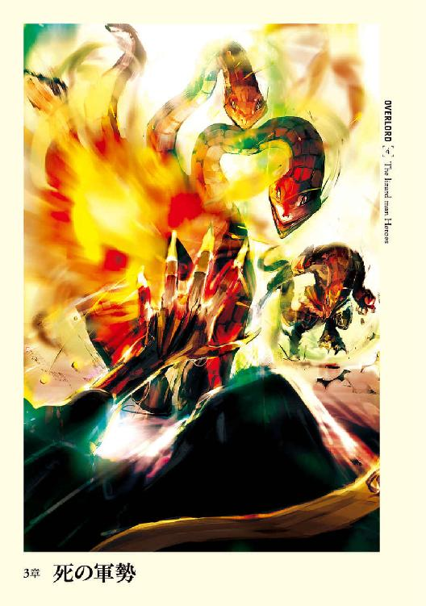
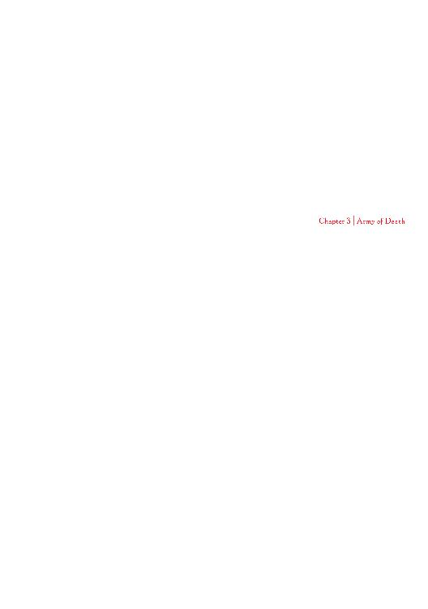
１
「ほう。見えてきたじゃねぇか」
ロロロの一番後ろに乗ったゼンベルが、前方を見据えながらにやりと笑う。
数百メートル先に、一番目に指定された部族──〝鋭き尻尾〟族の村が見え始めていた。村は〝緑爪〟と同程度の大きさだが、それ以上の数の蜥蜴人たちがいるのは、他部族の者たちも集結しつつあるためであろう。戦争準備の真っ最中であるため、働く者たちの動きはどれもせわしなかった。
「この雰囲気。たまらねぇな」
ゼンベルが鼻をスンスン鳴らし、空気中に漂う匂いを嗅ぐ。血が沸き立つような、そんな興奮を誘われる匂いを。一方、そんな匂いをかいだことが無いのであろうか、クルシュはそんな二人とは違った感想を述べる。
「この子に乗ったままだと危なくない？」
離れていても感じるピリピリとした空気に、現在、植物系モンスターと化しているクルシュは不安を口にした。ロロロという多頭水蛇が接近することで、殺気立った蜥蜴人たちが殺到することを恐れたのだ。
ザリュースは顔を知られているかもしれないが、クルシュとゼンベルは違う。さらに〝鋭き尻尾〟族の全てがザリュースを知っているとも限らない。
「いや、逆だ。ロロロに乗ってきているからこそ危険が無いんだ」
不思議そうな顔──は見えないが、雰囲気を漂わすクルシュにザリュースは簡単に説明する。
「すでに兄が来ているはずだし、兄なら俺がロロロに乗ってくることを確実に教えているはずだ。だからロロロの姿が見えたという情報は兄の元にもう伝わっているだろう。俺たちはゆっくり向かうだけで良い」
事実、ロロロが湿地を進んでいくと、村から一人の黒い蜥蜴人が姿を見せる。ザリュースはその見慣れた蜥蜴人に見えるよう、手を大きく振る。
「あれが兄だ」
「へぇ」
「ほぉ」
二人の声が重なった。クルシュは純粋な好奇心で、ゼンベルは強者を発見した獣のような気持ちで。
ロロロが進むにつれ、両者──ザリュースとシャースーリューの距離は当然縮まる。やがては互いの顔がはっきりと見える距離まで近づき、ザリュースとシャースーリューは互いに顔を見つめあう。
顔を合わせていないのは三日足らず。しかしながら互いに二度と会えないかもしれないという覚悟があった分、感慨深いものがある。
「よく帰ってきたな、弟よ！」
「ああ、良い知らせを持って帰ってきたぞ、兄者！」
そこでシャースーリューの視線がザリュースの後ろに座る二人に動く。腰に回ったクルシュの手が、緊張感から多少こわばるのをザリュースは感じ取った。
完全に二者の距離は無くなり、ロロロはシャースーリューの前まで来ると、慣れた様子で歩みを止める。そしてシャースーリューに甘えるように四本の頭を伸ばした。
「すまんが、食べ物は持ってきてないぞ」
その一言を聞いた瞬間、ロロロの四本の首はふてくされたようにシャースーリューから離れる。無論、多頭水蛇には蜥蜴人の言葉を理解する能力は無い。しかしながら家族の共感能力とも言うべきもので感じ取ったのだろう。もしくは単純にシャースーリューから餌の匂いがしてこなかったからか。
「さて、降りよう」
ザリュースは後ろに座る二人に声をかけるとロロロの上から身軽に飛び降りる。そして手を伸ばすとクルシュの手を取る。そうやって降りてきたクルシュに目を止め、シャースーリューは訝しげに顔を歪めた。
「その植物モンスターはなんだ？」
毎度毎度の反応に、クルシュは肩を多少落とすが、反論しようという素振りは見せない。これも全てゼンベルのお陰であろう。だが次の爆弾には流石の彼女も硬直する。
「俺の惚れたメスだ」
「──ほう」
感嘆のため息をシャースーリューはもらした。そして自らの弟と今でも手を繫いだままで、全身を凍り付かせたクルシュに遠慮の無い視線を向ける。
「むぅ......まぁ、聞きたいことは一つだな。その下は美人か？」
「ああ、結婚も考え──っ！」
突如、手に走った痛みにザリュースは口を閉ざす。手を繫いだ相手が、ザリュースの手に爪を立てたのだ。それもおもいっきり。そんな二人を憮然とした顔でシャースーリューは観察する。
「なるほど......面食いめ。何が......『俺に結婚は出来ないさ』だ。かっこつけおって。単に惚れた相手がいなかっただけではないか。......さて、〝緑爪〟族族長シャースーリュー・シャシャだ。同盟を結んでもらって感謝する」
確認というよりも遙かに強い口調でのシャースーリューの発言だが、今更動揺するクルシュとゼンベルではない。
「こちらこそ。〝朱の瞳〟族、族長代理のクルシュ・ルールーです」
クルシュの次はゼンベルが答えるだろうと皆が思ったのだが、予想に反して挨拶は聞こえない。ゼンベルはシャースーリューの上から下まで数度、無遠慮に観察していた。
満足したのか頷きつつ、ゼンベルは野獣の形相で口を開く。
「ほぉ、お前がか。かの、祭司の力を使いながら戦うことのできる戦士。噂には聞いたことがあるぜ？」
「〝竜牙〟にまで知られているとは驚きだな」
野獣が牽制しあうかのように、シャースーリューは返す。
「あんたの弟がいいって言うまでは、〝竜牙〟族の族長をやっているゼンベル・ググーだ」
「それはそれはよく来られた。強さを重視する部族の長に相応しい御仁を歓迎させていただこう」
「でよぉ、ちっと戦わねぇか？ やっぱ、どっちが上かしっかりと話つけねぇとならねぇだろ？」
「......悪くは無いな」
ザリュースに止める気はない。どちらが強者か明確にした方が今後、色々な点で便利だろうから。
しかしながらその前にシャースーリューが軽く手を上げ、ゼンベルの戦闘意欲を削ぐ。
「──と思ったのだが、今は少々間が悪いな」
「なんでだよぉ？」
ゼンベルの不満げな顔に、シャースーリューはニヤリと笑う。
「......そろそろ斥候に出た者たちが戻る。敵の詳しい情報が分かるはずだ。それを聞いてからでも遅くはあるまい？」
各族長たちの会議室として、一つの小屋が使われることとなった。
その小屋に集まったのは各部族の族長、そしてザリュースの計六人である。
前〝鋭剣〟族族長を屠ったオス、フロスト・ペインを持つザリュースの名は他の部族まで響き渡っている。更には〝朱の瞳〟族、〝竜牙〟族に、同盟への参加を納得させたほどの勇者が会議に参加するのに異議を申し立てる族長はいなかった。
さほど広くない小屋に六人は円陣を組むように座る。クルシュが白い肌を見せたとき、三人の族長達は驚きの色を隠せなかったが、今では冷静そのものだ。
まずは互いの挨拶を終え、最初に口火を切ったのは〝小さき牙〟の族長である。
蜥蜴人としては小柄な肢体だが、その四肢は鋼のように研ぎ澄まされている。元々は狩猟班に所属していたらしく、飛び道具の腕であれば恐らくはこの湖の蜥蜴人全ての中で、最も優れているだろう。事実、族長を決める際も、全て投石の一撃で終わらせただけの能力を持つ。
そんな彼が敵の軍隊の位置を知るべく、全ての狩猟班を動員して探していたのだ。
「敵はおよそ五千弱ぐらいでしたね」
全蜥蜴人の数を足したよりもはるかに大きな数字。しかし想定の範囲内だ。逆にその程度の数で収まったことに安堵の声すら上がっている。
「......それで敵の首魁は？」
「よく分かりませんでしたね。中に赤い巨大な肉の塊のようなモンスターがいましたが、その辺まで近寄ることは流石に困難でね」
「どのような構成なのですか？」
「アンデッドの群れでしたね。骸骨と動死体の群れ」
「蜥蜴人の死体を利用しているのか？」
「いや、あれは違いますね。あまり陸の生物には詳しくないので自信はないですけどね。多分ですが人間という種族のものだと思いますね。尻尾もありませんでしたしね」
特徴を聞いたザリュースは、それが平原の種族、人間であることを保証する。
「先手をうって攻撃をかけられねぇのか？」
「難しいでしょうね。場所は森の一角を切り開いて作った広場。一体どれぐらいの時間をかけたのでしょうかね。切り出した木材がどこにも無いのも気になるところですね。──おっと話がそれましたね。とりあえずは森の中。我々だけなら兎も角、戦士まで連れては難しいでしょうね」
「では狩猟班のみでの強襲は？」
「勘弁してくださいね、クルシュ君。現状二十五名程度の人数でどうやって五千近いアンデッドを倒せっていうのでしょうかね？ つかまって潰されて終わりでしょうね」
「ふむ......祭司の力を動員してはどうだ？」
シャースーリューの意見に数人が頷き、クルシュに視線が集まる。しかしそれに答えたのはザリュースだ。
「いや、止めておいた方が良いな」
「ああん？ なんでだよ？」
「向こうは今のところ約束を守っている。しかし攻撃されてまで約束を守るとは思えん」
「確かにそうですね。最低でも全部族が集まるまではこちらから攻撃を仕掛けないほうがよさそうですね」
「ならば籠城戦ですかね？」
「まもるのむずかしい」
たどたどしい言葉が蜥蜴人の一人から出る。それは〝鋭き尻尾〟の族長だ。
彼は金属のものとは違う光沢を持つ白い鎧で、全身を包んでいる。
ほのかな──魔法の力を発した鎧。それこそ四至宝の一つ、白竜の骨鎧。
アゼルリシア山脈に棲息するとされる、冷気の力を持つ霜の竜の骨から削りだして作られた鎧である。無論、単なる骨から削りだしたものに──元がたとえ強大な力を誇る竜とはいえ──魔法が宿るはずが無い。しかしながら、その鎧はいつの間にか魔法の力を帯びていたのだ。
問題はその力は呪いによる可能性もあること。
なぜなら、ホワイト・ドラゴン・ボーンは知力を失う分だけ、装甲が強固になるからだ。賢いものが着れば、鋼鉄どころか、ミスリルや伝説ともされるアダマンタイトにも匹敵する。
ただ、一度奪われた知力は、装備をやめたとしても決して戻っては来ない。この辺りが力の源が呪いともされる所以だ。
元々は蜥蜴人の中では、頭に超が付くほどの聡明さでその名を知られた彼がこの鎧を着たことによって、鎧の強度は蜥蜴人たちが持つ武器を全て弾き返すほどに高まっている。それは同じ四至宝の一つ、フロスト・ペインとて例外ではない。恐らくはアダマンタイトの硬さまで到達しているのだろう。
しかも普通であれば知力を殆ど奪われ白痴化する例が大半にもかかわらず、彼は未だ回転力のある頭を保持しているのが、元々の知能の高さを示している。だからこそ〝鋭き尻尾〟は彼が生まれて以来、一度も族長を戦いで決めたことはない。
「こ、ここしっち、あしばわるい。かんたん......かべこわされる」
「なるほど。なら打って出ますか？」
「はん、いいじゃねぇか。守るより攻めたほうが気持ちが良いってもんだ。一人で相手を三、四体ぐらいか？ 倒せばいいんだろう？ 楽勝だって」
ゼンベルの発言に互いの顔を見合わせる他の参加者。結果、クルシュがそれを流すように話し始める。
「問題は敵の増援......相手がまだ兵を集めている最中だという可能性があることよね」
「うーん、どうだろうね。広場の大きさ的にはもうアンデッドを配置する余裕はないとは思うけど......まぁ、森のあちらこちらに置いておけば良いわけだからね」
アンデッドは飲食や休息が不要であるために開けた野営地がいらない。そのために場所の広さから正確な数を予想することは難しい。
「念のために籠城戦も念頭においたほうがいいようだな」
「ならば、私達〝朱の瞳〟族が籠城に耐えられるだけの壁の補強をさせてもらいます。ですのでご協力をお願いします」
他の族長達が同意の印に頭を縦に振る。寂しそうなゼンベルも含めて。
「とりあえずは籠城の準備をするとしよう。あとは指揮機能の構築だな」
「まず祭司たちのまとめはクルシュ殿に任せましょうね。ついでに戦争時も指揮権を持ってもらいましょうね」
それが良いと答える声に一人異論を発するものがいた。
「族長たちで別働隊を作るべきだ」
発言者であるザリュースに全員の視線が集まる。
「なるほど......弟、そういうことか」
「せいえいぶ、ぶたいをつくるってすん、ぽう？」
「そうです。敵の数は多い。指揮官を討たなくては負けてしまうかもしれない。それにメッセンジャーとして各村に出現したような存在が出てきた場合、数ではなく少数精鋭で討つ必要がある」
「しかし指揮官の不在は不味いのでは？」
「せんしかしらから、せ......せんば......えらべばーいい」
「指揮官なんか無くても前の敵殴るだけでいいじゃねぇか......」
「......別働隊は後方から指令を出して、敵の本陣の発見や戦況的に不味くなったら動き出すというのは？」
「いいんじゃね？ うんじゃよ、ザリュースも含めて、ここにいる六人で一つでいいのか？」
「いや、更に分けて三人ずつ二組にしましょう」
数を分散させるということは二箇所で戦えるということでもあるが、逆に言うなら脆くなることでもある。
「敵の指揮官を討つ隊と、あるだろう守備隊を釘付けにする隊の二つです」
「ならば私達三人の族長と、ザリュース殿が呼んで来られた族長の二つに分けるのが賢いでしょうね。隊の役目は臨機応変に変化させればいいでしょうしね」
「うむ。それがいい。問題ないな、ザリュース」
「ああ、了解した。クルシュにゼンベルも異存は無いか？」
「こっちは特別には無いわ」
「俺もだ。好き勝手殴れねぇのは残念だがな。勝者には従うぜ」
「では、向こうの襲撃まであと四日か？」
「だなー」
「ならばしなくてはならないことは？」
「投石の準備をしなくてはならないし、壁の強化。それと各部族の交流を図り、それぞれがちゃんと動くように組織立てなくてはならないだろう」
「その辺りの仕事の割り振りは、前の時と同じようにシャースーリューに任せたいと〝小さき牙〟族としては思っているんだけどね」
「おれたちもーそれでいいー。そっちのふたり、いけんは～」
クルシュとゼンベルもそれに同意するように頷いた。
「では、俺が指揮を執らせてもらおう。ではこれから三日間で行うべきことを細かく決めていこう」
一通り今日の仕事を終えたザリュースは、喧噪に彩られた村の中を黙々と歩く。何人もの蜥蜴人がザリュースの胸に押された焼印と腰に下げたフロスト・ペインを見て、敬意の挨拶を送ってくる。
多少わずらわしくもあったが、士気を上げるという意味でも応えないわけにはいかない。自信に満ち満ちた、余所行きの表情を作ると、雄々しくザリュースは応える。
そんな態度を取りながら向かった先は、村の外壁の部分である。そこでは急ピッチで壁を製作しているところであり、多数の蜥蜴人たちが一心不乱に作業を行っていた。
まずは木でできた杭と杭の間に植物で下地を作る。そしてその上から水気の少ない泥を塗るのだ。そして祭司達が何かの魔法をかけると、水気が飛んだのか、ひび割れた壁のようなものが出来上がった。そして今度は裏から同じ作業の繰り返しだ。
「あら、ザリュース。どうしたの？」
「いや、何をしているのかと思ってな」
湿地をバシャバシャと歩きながらザリュースは、植物モンスターの格好で指導しているクルシュの横に並ぶ。それから目の前で繰り返される作業を指差した。
「あれは一体？」
「泥壁よ。一体どんな敵が来るのか不明だから、簡単には村に入り込まれないように作りたかったんだけど......時間が無くて半分も終わらないわ」
「そうか......しかし泥なんかでは簡単に砕かれるのではないか？」
「大丈夫。確かに薄い泥では簡単に打ち砕かれるけど、分厚い泥壁は簡単には壊れないわ。急ピッチだし十分な材料が集まらなかったから、雨を受けたりすると少しばかり弱くなるけど、そう簡単には破壊されないから」
確かに考えてみれば、分厚くなったものは何でも壊すのが大変だ。
そう納得したザリュースの前で何十人もの蜥蜴人たちが必死に作業を行っているが、進展速度はどん亀のごとく。あと三日頑張ったとしても、壁の長さはさほどにはならないだろう。しかしながら有るのと無いのとではまるで違う。
「現在、覆えない部分は塀の作り方を変更して、引き倒されないような構造に作り変えてるわ」
クルシュの指差す方角。
そこでは杭を抜き取り、抜き取った杭を三角形の足場の上に突き立てている。杭と杭の間には、草で編んだ紐が何本も弛みながらも連なっていた。ザリュースが思い出してみると、〝朱の瞳〟族の塀もそのようにできていた気がする。
「アレは一体？」
「あの足場の上に重りを載せて、引き倒されたり、押し倒されたりしないようにするの。そしてあの紐が間をすり抜けてくるものを止めるためのものね。ぴんと張ってると刃物で切り裂かれちゃうから、わざと弛ませてるわけ」
ザリュースの質問に、声を弾ませ答えるクルシュ。
数日の旅の間、ザリュースから教えてもらう立場であった彼女は、自分が教える立場に立ったことに喜びを滲ませたのだ。そして、もう一つの感情がそこにはある。
「なるほど......あれなら確かに簡単には壊されないな」
感心した声のザリュースに、自慢げな呼吸音を立てるクルシュ。
ザリュースは深く頷く。
要塞化が急ピッチで進んでいる。確かに人間や山小人たちが作るようなものにはほど遠い。しかしながら足場の悪い湿地という場所を考えれば、これ以上のものは現状ないだろう。
「ところでザリュースは戦士達に──」
クルシュがそこまで口にした時、二人の元に風に乗って戦士達の騒ぎ声が聞こえてくる。熱気に満ち満ちた激しいものだ。
「一体、何？ 何処かで聞いたことのある歓声......そうだわ！ ザリュースが戦ったときの歓声に。もしかしてお兄さんとゼンベル？」
ザリュースは頭を縦に振り、顔を露出させたクルシュの瞳に不安の色があることを読み取る。
「......最高指揮官である、あなたのお兄さんが負けると面倒なことにならない？」
「さぁな。しかし兄も強いぞ。特に祭司の力を使用する時間があればあるほど強くなる。下手すれば俺でも負ける」
自らに強化魔法を複数発動させたシャースーリューは半端じゃなく強い。さらに模擬戦では使わないだろうが、攻撃魔法まで使い始めたら、フロスト・ペインを持っていなかった頃のザリュースでは相手にならなかったほどだ。
かつてザリュースが前の持ち主を倒したとき、フロスト・ペインの一日に三回までしか使えない必殺技とも言っても良い特殊能力を、三度とも使わせた相手こそシャースーリューなのだから。
「ならば良いけど......」
未だ不安を隠しきれないクルシュに兄の戦う姿を見せてやるべきかと考えたあたりで、ザリュースは今まで言わなかった一つの不安を思い出す。
言うべきか言わざるべきか迷い、決心する。
全てが決まったこの状況下で故意に話さなかった内容を告げるのは、あまりにも卑怯な行為だ。それでも惚れたメスに隠し事はしたくないという、単純だが強い気持ちは抑えきれない。
「一つだけ不安があるんだ──」
ザリュースの隠し切れない不安を込めた声を受け、クルシュが笑った。その笑いはしてやったりというものだ。あまりにもクルシュらしくない──場違いな表情に、ザリュースはそれ以上の言葉を紡げない。そんなザリュースの代わりに口を開いたのは当然、クルシュだ。
「──あの時、言わなかったことかしら？ 敵がこの動きを読んでいた場合。同盟を結ぶことを待っていた場合でしょ？」
ザリュースは黙る。その通りだと。
向こうが時間を与えたのも、順番をわざわざ告げたのも、ザリュースに妨害が入らなかったのも、纏めあげた全部族を一気に潰すという狙いを持っていた場合だ。
「不安は色々あるわ。ザリュースみたいに色々考える人はそうでしょうね。でもなんだかんだは一回戦って......それから考えましょう？」
「勝ったとしても向こうが諦めるとは限らないぞ？ いや、その可能性は正直低い」
「かもしれないわね。でも、貴方があの晩に言ったこともそうだし、それに見て──」
クルシュは手をあげる。その先には何もないが、指し示したいのはこの村の全てなのだろうとザリュースは理解できた。
「全ての蜥蜴人の部族が一つの目的に向かって努力している姿よ」
確かに様々な部族の蜥蜴人たちが同じ目的に向かって進んでいる。
ザリュースの脳裏に昨晩の五部族連合を祝して行われた大宴会が浮かんだ。そこには部族間のへだてはなかった。確かにかつて滅ぼされた二つの部族の生き残りにわだかまりがなかったといえば噓にはなる。しかしながら、その恨みすらも飲み込んで今回の一件に当たる意志を彼らは示していた。
皮肉なことだ。
ザリュースは口の中で呟く。隔絶した世界が続いていくだろうと思っていたのにも関わらず、外敵が出来たことで初めて、団結するその光景を目の当たりにするとは。
「守るべきは可能性よ、ザリュース。今回のこの全部族の同盟が、私達を発展させてくれるはずだわ」
泥で作る壁というザリュースも見たことの無い技術。しかし、これは他の部族の知るところとなった。ならばこの壁はいずれ、全ての蜥蜴人の部族で使われるだろう。このしっかりとした壁があればモンスターが中まで入ってくることは無くなるはずだ。そうすれば子供などの弱い者が襲われる確率が減り、蜥蜴人の数が増える。
増えた者達が食べる食糧は、ザリュースの生け簀で補えばよい。
もしかすると遠くない未来、この沼地に蜥蜴人が大きな一つの部族を作る日だって来るかもしれない。
「ね、勝ちましょう、ザリュース。後のことなんか分かるはずもない。もしかしたらこの一戦に勝利すればそれで終わりかもしれない。そうしたら私達は発展できるわ。もう、食料問題なんかで同族殺しをしないでいい世界が来るかもしれない」
微笑むクルシュ。ザリュースはこみ上げる気持ちを抑える。もし解放したらとんでもないことになりそうで。ただ、これだけは──
「やはりお前は良いメスだ。──初めて会ったときの答えを、今回の戦いが終わったら聞かせてくれ」
クルシュは微笑をより明るいものとした。
「分かったわ、ザリュース。終わったとき答えは言わせて貰うわ──」
•
ご機嫌な鼻歌を歌いながら、デミウルゴスは作業を行う。
磨き上げられた骨を持ち上げ、どこに据えたら最も見栄えが良いかを検討する。やがて置くべき場所を見極めたのか、骨の先端を削り、製作中のアイテムの一端に組み込んだ。
まるで最初から組み合うようにできていたかのごとく、骨はがっしりと嚙み合った。
釘などの金物を用いず家屋を作る技術を木組みというように、デミウルゴスの行為を無理やりに名づけるとするならば骨組みというべきだろうか。
「良いですね」
満面の笑みで骨を撫でる。このまま順調にいけば素晴らしいものが出来上がりそうな予感を覚える。
「しかし......身長百二十センチほどの男の、大腿骨付近が足りませんね」
無くても作り上げることはできる。しかし、それを使用せずに完成させると、見栄えが若干悪く感じられた。
普段であれば目をつぶったかもしれないが、これは敬愛し忠義を尽くす主人への贈り物だ。ならばベストを尽くすべきだろう。
「ちょうど良いものがいればよいのですが」
機嫌よくデミウルゴスは動き出す。
実はデミウルゴスはこういった物を作るのが好きだった。骨で作るのが好きというのではなく、大工の真似事が、だ。その趣味は細工品から家具までと範囲は広く、日曜大工の範疇に収まる腕ではもはやなかった。
実際、現在製作中の一品も原材料にさえ目を瞑れば、その見事さには誰もが瞠目するだろう。
同じようにこの天幕に置かれている他の様々な道具。溶岩を流し込めるように作られた主人の銅像、様々な種類の椅子、万力などもデミウルゴスの製作物だ。こちらは実用性を重視して細工は施されてはいないが、どれも立派な結果を出した。
天幕の片隅にある材料を手に取り、デミウルゴスが真剣に検討していると、入り口で何者かの動く気配を感じる。
デミウルゴスは持っていた骨を静かに戻し、主人より借り受けた、もはや二度と手に入らないアイテムを握り、気配に注意を払う。普通に考えれば自らのシモベ、もしくは仲間であろう。三重の防御手段をデミウルゴスに感知させることなく、突破できるはずがない。しかしながら、シャルティアを支配した敵に対する警戒を怠るわけにはいかないのも事実だった。
数秒の後、幕を捲って現れたのは、純白の衣装に漆黒の鳥のクチバシを模して鼻先が長く伸びた仮面で身を包んでいる者。
プルチネッラ。
デミウルゴス同様、至高の存在によって生み出された道化師で、今回の仕事に関してデミウルゴスの補佐として付けられたのだ。
精神支配を受けていないことを調べ終わり、瞳に込めていた力も抜く。それと同時にアイテムを握る手からも。
「デミウルゴス様、皮を剝ぎとり終わりました」
その言葉に少しだけ無念を覚える。
本来であればデミウルゴスが自ら手を下して楽しみたい作業ではあったが、未知の強敵を警戒し、大概の場合ここを離れることができなかった。そのために彼に任せたのだ。
感情は表には出さず、プルチネッラに新たな命令を下す。
「ご苦労様です。ではすぐに次の工程に。そのままのものをアインズ様にお渡しするのは失礼ですから」
優雅な一礼を見せた道化にデミウルゴスは問いかける。
「それで何匹か死亡しましたか？」
「いえ、トーチャーたちのお陰で気絶程度で済みました。またすぐに剝ぎ取れるようになると思われます。一部の者が治癒魔法を拒絶しておりますが......想定範囲ですので問題にわなりません」
「それは素晴らしい」
素材を集めるのにも結構な手間がかかっている。数回は皮を剝ぎ取れなくては元が取れない。だからと言って痛みをなくしたり、眠らせたりなどの手段を取る気はこれっぽっちもなかったが。
「わたしわ、全ての者を幸せにしてあげたいのです」
突然のプルチネッラの言葉にデミウルゴスは、彼の性格を思い出す。
プルチネッラはナザリック内でも温厚かつ慈悲深いことで知られている。彼は多くの者を幸福にするために生み出されたために、個人的な行動方針もそれに準じている。
「ナザリック地下大墳墓の者わ、アインズ様にお仕えできて幸せです」
デミウルゴスも全くその通りと、頭を縦に振る。
「なるほど。ではプルチネッラ、聞きましょう。それ以外の者もナザリックに仕えることが幸せだと言いたいのですか？」
「まさか、それは違います。確かに、アインズ様に仕えるのわ幸せでしょう。歓喜の涙に咽ぶでしょう。ですが強制されたものでわ、それは決して幸せではありません」
「ほほぅ。ではいったいどうすればよいのかね？」
「簡単です。誰か一人を選びだし、その者の腕を切り落とせばよいのです。そうすれば他の者たちわその者と己が身を比較して、自分が幸せだということを理解するでしょう。なんと素晴らしいこと。そして腕を無くした者を幸せにするために、他の誰かの足を切り落とせば良いのです。おお、私わ、多くの者たちを幸せにしている！」
笑い声を上げながら天を仰ぐ道化師に、デミウルゴスは満足げに頷く。
「なるほど、まさに正論だ」
２
ただ待つ時間は長く感じるものだ。だが何かの準備を期限付きで行う場合、時間は驚くほど早く流れる。
約束の刻限が訪れた。
その日の太陽はじりじりと亀のような動きで天に昇り、空には澄み切った青い色が広がる。風は音というものを一切運んでは来ず、痛いほどの沈黙が世界を包んでいる。
漂うのは刺せば破裂するような緊張感。
誰かがごくりと唾を飲み、誰かが荒い息で呼吸を繰り返す。
集まった蜥蜴人たちが口を閉ざしてから、どれだけの時間が経過した頃だろうか。
突如、天に穴が開くように、ぽつんと黒雲が生まれる。それは前に起こったような勢いで範囲を広げ、どんどんと青かった空を覆いつくしていく。
やがて完全に黒雲が天を覆い、太陽光が遮られて薄闇が周辺を漂いだした頃──
蜥蜴人たちの視線の先、森と湿地の境界線からゆっくりと、無数のアンデッドたちが現れる。木々によって隠れているために数は不明。ただ、無限とも思えるように後から後から姿を見せはじめた。
攻め手は動死体二千二百体、骸骨二千二百体、獣の動死体三百体、骸骨弓兵百五十体、骸骨騎兵百体。総勢四千九百五十体に、指揮官および守護兵。
対する守り手は蜥蜴人の五部族同盟
〝緑爪〟族、戦士百三名、祭司五名、狩猟班七名、オス百二十四名、メス百五名
〝小さき牙〟族、戦士六十五名、祭司一名、狩猟班十六名、オス百十一名、メス九十四名
〝鋭き尻尾〟族、重装甲戦士八十九名、祭司三名、狩猟班六名、オス九十九名、メス八十一名
〝竜牙〟族、戦士百二十五名、祭司二名、狩猟班十名、オス九十八名、メス三十二名
〝朱の瞳〟族、戦士四十七名、祭司十五名、狩猟班六名、オス五十九名、メス七十七名
計、戦士四百二十九名、祭司二十六名、狩猟班四十五名、オス四百九十一名、メス三百八十九名。総勢千三百八十名に、部族の族長およびザリュース。
戦力差三倍を超える戦争の開始であった。
•
そこは木で作られた一室だった。
飾りの一切無い、木がむき出しの、ログハウスのような素朴な作り。ただその部屋は、天井までの高さは五メートル、広さも二十メートル四方は軽くある。
調度品は殆ど置かれておらず、部屋の壁にかけられた巨大な鏡と、重厚で頑丈なしっかりとした作りの巨大なテーブル。そしてテーブルを取り囲むイスぐらいだ。
イスには幾人もの者たちが坐しており、囲むテーブルの上には、丸められた無数の羊皮紙──魔法を込めた巻物があった。
「そしてこれが最後にぃなりますけどぉ。転移系の巻物ですぅ」
声の高い、幼い少女といっても過言ではないような声に合わせてテーブルの上に、また一つ巻物が置かれた。
置いたのは人間の──メイド服と呼ばれる装束に身を包んだ女性だ。
サイドに二つのお団子を作った──シニョンと呼ばれる髪型をした可憐な少女だった。ただし、異様な雰囲気を宿している。特にそれが顕著なのは瞳だ。
くりくりとしているが、まるで劣悪なガラス球をはめ込んだように光がない。それどころか瞬き一つしていなかった。
ほっそりとした肢体を包む、魔改造メイド服の襟に当たる部分を立てて、喉元を完全に覆い隠している。素肌を晒しているところは顔を除いて一切ない。
彼女こそ戦闘メイドの一人であるエントマ・ヴァシリッサ・ゼータである。
「それでぇ、あとわぁ〈伝言〉の巻物があるんですけどぉ、たくさんあるわけですよぉ。テーブルの上を一旦片付けてもらっちゃってもいいかなってぇ」
エントマはテーブルを囲む、もっとも上座に座る人影に話しかける。影はゆっくりと頭を縦に振った。
「ソウシヨウ」
「はーーい、じゃぁ、すぱっとねぇ、片づけてくださいねぇ」
コキュートスの同意と、エントマの指示を受け、テーブルを囲んでいた者たちが一斉に動き出す。
どれもが異形の者たちだ。蟷螂のような者、蟻のような者。巨大な脳みそのような者もいた。
皆、外見は大きく異なる。しかしながら、たった二つの共通点があった。それは皆、コキュートス配下のシモベであるということ。そしてナザリックという組織に仕えているということだ。
だからこそ自分よりも弱いエントマの命令も受け入れる。
ナザリック地下大墳墓の権力構造において最も重要なのは強さではなく、至高の存在が直接手をかけて作ったかどうかというところなのだ。その点でエントマは上位の権力者ということである。
一通り、テーブルの上が片付けられたのを確認し──
「それじゃぁ、コキュートス様にぃ、これをぉお渡ししますねぇ」
──口も動かさずにエントマは言うと、足元に置いていた鞄を取り上げる。そしてその中から何枚もの丸めた羊皮紙を取りだした。
「〈伝言〉の巻物ぅ。アインズ様からわぁ、デミウルゴス様の働きで手に入れられた皮で作ったって聞いてますぅ。使用して問題があったらぁ報告してほしいって仰られてましたぁ」
「ソウカ......了解シタ。問題ナイカ調ベサセテイタダコウ」
コキュートスは差し出された巻物の内、数枚を四本の腕の一本で取り上げた。
「コレデマタ、デミウルゴスニ差ヲツケラレタナ」
周囲のシモベたちへ苦笑いを向けつつコキュートスは言う。それを受け、追従の微かな笑いが漏れた。
羊皮紙を手に、コキュートスは物思いにふける。
コキュートスもナザリックで低位の魔法を込めるための羊皮紙の在庫量が減ってきたという話は聞いていた。
様々なアイテムの製作に必要な素材の入手先を見つけることは、重要な課題だ。確かに現状ではまだ余裕はある。しかし消費する一方ではいつかは底をついてしまう。そのために自らの主人を含め、様々な者が行動していた。
噂に聞く、第六階層のリンゴの木もその一環だ。
しかしながら、それはナザリックの守備を任命されたコキュートスには、如何することもできない問題だった。当たり前だ。守護を命じられているのに、外に探しに行けるはずがない。
外に足がかりを作りに向かったデミウルゴスが問題を解決させたのはごく当たり前の流れといえよう。
自らの同輩の任務の成功。
それはまさに喜ぶべきことである。事実、コキュートスも喜んだ。しかしながら、心の奥底で燃え上がる嫉妬の炎を完全に押し殺すことができない。自らの同僚が、至高の存在──崇拝すべき御方の役に立つ行いをしたというのが、羨ましくて羨ましくて堪らなかった。
自らの仕事はナザリックを守備すること。
恐らくは他の守護者の誰に下されたどんな命令よりも、それは大役である。シモベの誰に聞いても重要な任務だと答えるだろう。下賤な輩に、至高の存在である方々が御座します場所に足を踏み入れさせるわけにはいかないのだから。
しかし、侵入者がいなければコキュートスの忠勤もまた証明できない。
だからこそコキュートスは結果を求めていた。
守護者にとって、自らの主人の役に立つというのは強い歓喜を生み出す。その歓喜をコキュートスも味わいたかったのだ。
そのチャンスが今、この場にある。
コキュートスは首を動かし、鏡に映った光景を見ながら巻物を握り締める。
鏡には室内ではなく、どこかの湿地の光景が浮かんでいた。そう。遠隔視の鏡に映る風景こそ、コキュートスがこのアウラが建てたログハウスに二日ほど詰めていた理由だ。
今回の戦争──いや圧倒的強者であるナザリック地下大墳墓の勢力からすれば、これは虐殺であり、死体を回収するための手段でしかなかった。収穫祭ともいえるこの任務を受ける際に、コキュートスは主人より幾つかの勅命を受けていた。
一つ、決してコキュートスが表に出ないこと。勿論、自らのシモベもそれに同じだ。与えられた兵力だけでどうにかすること。
二つ、指揮官として与えられた死者の大魔法使いは温存しろ。
三つ、出来る限り、自らの判断のみで動け。
あと細かなことが幾つかあったが、大きなところではそんなところだ。
現状、湖に展開している兵力だけで勝利を収める必要があった。しかしそれを成功させれば、偉大なる主人に自らの忠誠心を捧げることができるのだ。
「ゴ苦労ダッタ。アインズ様ニハ感謝ノ言葉ヲ述ベテオイテ欲シイ」
エントマはダルそうに軽く頭を下げる。
「デハ......帰ルノカ？」
「いえ、この戦いの結果をぉ、この場で見届けるようにぃってご指示を頂いておりますうぅ」
お目付け役か。
コキュートスはそう判断し、自らに課せられた大役に対する高揚感を覚える。
ならばそろそろ始めるとしよう。
コキュートスは〈伝言〉を発動させ、アンデッドたちの指揮官に命令を下す。
──進軍と。
•
一段高くなった壇の左右に篝火が立てられ、周囲に揺らめくような明かりを放っていた。
壇上には幾人もの蜥蜴人たち。各部族の長、各部族の頭などの重要な人物達がいる。
その前の広場には、戦うために集められた数多の蜥蜴人。彼らからはざわめきが波しぶきのように起こっていた。不安や焦り、恐怖──それらを必死に隠そうとしても、それでも隠し切れない動揺のざわめきだ。
これから始まるのは戦争。隣にいる親しい友人が次の瞬間は死体になるかもしれない。大地に倒れ伏すのは自分かもしれない。そんな戦場にこれから赴くのだ。
ざわめきを断ち切るように、各部族の長の中からシャースーリュー・シャシャが進み出る。
「聞け！ すべての蜥蜴人たちよ！」
凛とした声が広がった。広場が水をうったように静まり返り、シャースーリューの声がやけに響く。
「認めよう、敵は多いと」
声は立たない。しかしながら広場の空気に動揺という色が付いたのが、誰の目にも明らかだった。
シャースーリューは少し間を置いてから、再び声を張り上げる。
「しかし恐れることはない！ 我ら五つの部族は歴史上初めて同盟を結んだ。この同盟によって、このひと時のみ、我らは一つの部族となる。だからこそ五つの部族の祖霊が我らを──違う部族の祖霊すらも我らを守ってくれる」
「各祭司頭よ！」
その声に反応し、後ろに五人の──各部族の祭司頭を引き連れたクルシュが進み出る。自らの着ていた服を脱ぎ捨て、その白い鱗を表に出す。
「祭司頭たちを束ねるクルシュ・ルールーよ！」
シャースーリューのその声に反応し、さらに一歩踏み出る。
「祖霊を降ろせ！」
「──聞きなさい。この一つの部族の子供達よ！」
この新たに生まれる部族がなんなのか。
毅然とした態度で、滔々と語るクルシュ。声は時に高く、低く、唸りを上げるような、歌うような口調で。
最初は殆どの者がアルビノの姿を嫌悪していた。だが彼女の自信にあふれた堂々とした佇まいを見るにつれ、少しずつそんな色は薄れていった。
クルシュは語りながら、僅かに体をくねらせる。白い鱗が篝火の炎によって無数の輝き──照り返しをみせ、まさに祖霊がクルシュの体に降りてきたようにすら見えたのだ。
皆の顔に崇拝の表情が無意識のうちに浮かび上がる。
「五つの部族がこの度たった一つの部族となる。それは五つの部族の祖霊があなた方全てを守るということ！ 見なさい！ 全ての蜥蜴人たちよ！ 今ここに無数の──全ての部族の祖霊たちがあなた方の元に降りてくる姿を！」
ばっ、とクルシュはその手を広く上げ、天空を指す。多くの視線が釣られて動くが、無論、そこには曇天が広がるばかりだ。何かの霊的存在が姿を見せているようには思われない。しかしながら、一人が呟いた。
小さな光だ──と。
最初は小さかった声が少しずつ大きくなる。その場に集まった蜥蜴人の幾人からか、見えるといった声が上がり始めた。小さな光という者、同じ蜥蜴人だと叫ぶ者、巨大な魚だと呟く者、子供だと驚く者、あれは卵だと目を疑う者。
それはまさに祖霊の降臨だった。それ以外、蜥蜴人たちには考え付かない。
「祖霊が俺達を守りに来たんだ！」
そんな叫び声が上がったのも当然の流れだろう。
「感じなさい！ その力があなたたちに流れ込むことを！」
どこか遠くから、それでいて非常に近くから心の間に滑り込むように聞こえるクルシュの声。
その声に誘導されるように、何か力のようなものが自らの体に降りてくるのを多くの蜥蜴人たちが感じ取った。
「感じなさい！ あなた方の元に五部族の祖霊が降りてきた力を！」
その場に集まった全ての蜥蜴人たちが確かに感じていた。
沸々と湧き上がってくる力。先ほどまでの不安がどこかに飛んでいくような高揚感。酒を飲んだように体内から熱が吹き上がってくる。
まさに無数の祖霊が降りてきた証だ。
自らの前に広がった、その恍惚とした表情から視線をそらすと、クルシュはシャースーリューに頷く。
「さぁ、すべての蜥蜴人たちよ。祖霊は我らの上に降りた。確かに数では負けていよう。だが、我らに敗北はあるか!?」
『無い！』
いまだ恍惚としながらも、シャースーリューの言葉に反応し、多くの蜥蜴人たちの唱和が響き、ぐわんと空気がうねる。
「そうだ！ 祖霊の降りた我らに敗北は無い！ 敵を倒し、勝利を祖霊に捧げるぞ！」
『おお！』
戦意が燃え上がる。もはやそこに不安を抱く蜥蜴人はいない。来る戦いに向け、戦士となった蜥蜴人だけだ。
これは魔法で眩惑されているのではない。流石にこれだけの森祭司たちが集まったとしても、この場の全員に魔法をかける余裕など、戦争を前にあるはずがない。
儀式の前に、全ての蜥蜴人にある特殊な飲み物が振る舞われた結果だ。
勇気が出るという蜥蜴人伝来の飲み物で、その正体は、短い時間ではあるが酩酊、多幸感、幻覚などをもたらす特殊な薬草を煎じて作った物である。
これによって一種のメディテーション効果がもたらされたのだ。
クルシュの話はこの効果が出るまでの時間稼ぎであった。
種を明かしてしまえばつまらないものである。しかしながらその効果を目の当たりにした──祖霊が降りてくる姿を見た蜥蜴人たちにとってすれば、それはまさに勇気の湧き上がる儀式だったのだ。
「では、塗料をまわす。本来であれば各部族一色だが、今、皆の体には五部族の祖霊が降りている。全色を使い、その身を飾れ！」
何人もの祭司が、集まった蜥蜴人達の間を陶器の壺を持って歩く。
壺から塗料を取った蜥蜴人は、体に思い思いの紋様を描き始める。これはその蜥蜴人の体に降りた祖霊が、勝手に描いているとされるため、皆、指が走るままに自らの体に紋様を描いている。
今回は五つの祖霊が降りているということもあり、全身を殆ど覆う者が多い中にあって、〝緑爪〟族の者は殆ど紋様を描かない。これはザリュースとシャースーリューという、部族の中でも指折りの者がさほど描かないことに起因する。いうならばアイドルを真似るファンというところだろう。
一通り見渡し、皆が描き終わったことを確認したシャースーリューは、自らの大剣を抜き放ち、門を指し示す。
「出陣！」
『おおおおぉぉぉ!!』
無数の咆哮が周囲に轟いた。
３
ナザリック地下大墳墓軍は、大きく二つの隊にわかれ、沼地に配置されていた。
蜥蜴人たちの向かって左側に動死体を配置し、右側に骸骨という具合だ。骸骨弓兵と骸骨騎兵たちは骸骨の後ろに配置されている。
獣の動死体は本陣という意味合いを持つのか、後方に配置される。
対する蜥蜴人たちも寡兵にも関わらず、部隊を二つに分けている。動死体の側にメスの蜥蜴人と狩猟班。骸骨の側に戦士、オスの蜥蜴人。祭司たちは壁に囲まれた村の中だ。
蜥蜴人が村の外に出てきているのは当然、籠城戦をしても利がまるでないのが分かっているからだ。何処からも援軍が来ない状況。さらに頑丈という言葉からは遠い壁。それに対し、アンデッドたる敵軍は食料も睡眠も不要。
これだけ不利な状況なのだ。籠城は愚策中の愚策と言えよう。
しかしながら外で隊列を組むと、酷く実感するのが彼我の兵力差だ。
一人に対して三体以上。十人に対して三十体。比率は変わらない。しかしながら千人に対して三千体は圧倒的な差にも感じられる。三千体ものアンデッドが隊列を組めば、それだけで異様な圧迫感を生み出す。
それでも、そんな状況下にあって、蜥蜴人たちにもはや恐れの色はない。祖霊が降りてきている彼らにとって数は問題ではないのだ。
やがて、アンデッドたちがゆっくりと動き出した。動き出したのは動死体と骸骨だ。温存する気なのか、骸骨弓兵と骸骨騎兵は不動の姿勢で沼地に立っている。
応えるように蜥蜴人たちも動き出す。
「おおおおおぉぉぉおおおおお！！！」
割れんばかりの鬨の声が湿地に響き渡った。それにあわせ、無数の水音。水が跳ね、泥が散る。
両軍は前進を続け、激突は間近に迫る。ここでナザリックの軍勢に異変が生じた。
動死体と骸骨。同時に進軍を開始したにも関わらず、進み具合に少しずつ差が出てきたのだ。それは動死体が動作がのろく、骸骨は機敏だということ。そして何よりも湿地という足をとられる場所だということだ。
動死体のような鈍いモンスターはより一層、泥に足を取られて動きが遅くなるが、骸骨のように軽い体のモンスターはそれほど動きに影響はない。
そのため、最初の激突は骸骨と戦士階級の蜥蜴人たちであった。
蜥蜴人たちには陣形など無い。とにかく走って殴るという乱暴なものだ。
先頭に立ったのは、各部族の戦士頭五人。指揮官たる人物が前に飛び出る。場合によっては愚かな行為だろう。しかし、蜥蜴人たちの戦士たちの中で最も高い地位に就く人物。彼らが前を走らなければ、蜥蜴人全員の士気も低下するのだ。ゆえに今、蜥蜴人たちの戦意は非常に高い。
続いて突撃したのは〝鋭き尻尾〟族の重装甲戦士八十九名だ。彼らは皆、皮製の鎧でしっかりと身を包み、皮の盾まで所持した全部族最高の防御力の持ち主である。
そんな彼らが盾を構え、まるで一つの壁になって骸骨の軍勢に突き当たる。
激突──骸骨の先頭集団と蜥蜴人の先頭集団がぶつかり合う。
そして──無数の骨が飛散し、蜥蜴人たちが食い込むように骸骨の軍団の陣形に入り込んだ。
怒号が轟き、骨の砕ける音が幾重にも響き渡る。時折、うめき声も聞こえるが、圧倒的に骨の砕ける音のほうが大きい。
一撃目は蜥蜴人の圧倒的優勢で進んだ。
もしこれが蜥蜴人ではなく、人間の軍隊であったなら、結果は逆転していただろう。
骸骨は骨の体を持つため、刺突武器によるダメージは殆ど無効で、斬撃武器による攻撃にも耐性を持つ。そのため刃物を主に使う人間の軍勢では、有効なダメージを与えるのは難しいのだ。
蜥蜴人に圧倒的に有利に運んでいるのは、彼らの主武器が石で作ったメイスのような無骨な武器ということに起因している。骸骨は殴打武器に弱いためだ。
蜥蜴人の武器が振り下ろされるたびに、骸骨の骨の体が脆くも崩れた。一撃を耐えたとしても、続く一撃で完全に破壊される。逆に骸骨の持つ錆び付いた剣の一撃は、蜥蜴人の厚い鱗の皮膚で弾かれる。時折怪我を負う者も出るが、致命傷になるほどの重傷を負った者はいない。
最初の突撃。
それだけで五百体近い骸骨が湿地に沈んだ──。
•
鏡に映る光景に、コキュートスは瞠目する。
まだ最初のぶつかり合いでしかないが、蜥蜴人の戦闘能力は予測を超えていた。コキュートスは優れた戦士であり、相手の力をある程度は見切ることができた。確かに骸骨と蜥蜴人の個体能力差は歴然としており、骸骨に勝算はない。しかし、それを補うだけの兵力差があったはずだ。
にも関わらず、どうしたことか。何かで蜥蜴人たちが強化されたようにさえ思われた。
今の蜥蜴人たちと五分以上の勝負ができるのは、おそらくは骸骨弓兵と骸骨騎兵ぐらいだろう。
見ている間にも骸骨が一気に崩されていく。骸骨と動死体では相手を疲労させるぐらいしか役に立たないのではないだろうか。
そう考えると、有効な兵力は獣の動死体三百体、骸骨弓兵百五十体、骸骨騎兵百体の五百五十体。数の上では逆転されてしまう。
コキュートスは頭の中で計算する。
アンデッドは強い。特に持久戦において勝てる存在はそうはいないだろう。アンデッドは恐怖も痛みも何も感じない存在なのだ。さらに疲労とは無縁で睡眠も不要だ。
これがどれだけ戦争で有利に働くかは、言葉にする必要すらない。
石で出来たメイスを頭部に全力で叩きつけたとしよう。生物であれば下手すれば即死、運が良くてもすさまじい激痛と出血が襲うだろう。殴られた相手は急激に戦意を喪失するのは自明の理だ。勿論、戦士等のように苦痛に対する制御訓練を行い、戦意を喪失しない者は当然いる。しかし普通であればそれ以上の戦意はなくなるだろう。
それは生物として当然だ。
だがアンデッドはどうか。
頭を割られた？ ならば中身を撒き散らしながら襲い掛かってくるだろう。
腕をへし折った？ ならば折れた手で襲い掛かってくるだろう。
足を切り飛ばした？ ならば這いずりながら襲い掛かってくるだろう。
そう、アンデッドは偽りの生命力を全て失うまで動き続けるのだ。低位のアンデッドにありがちな、首を刎ねるなどの即死条件が満たされたりしないかぎりは、人間のように戦意を失うことなく。即ち、アンデッドとは最良の兵士でもあるのだ。
個としての強さでは現在蜥蜴人が勝っている。それは認めよう。ただ、それがいつまでも続くとは限らない。
コキュートスは蜥蜴人たちの評価を一段上げ、一息に潰せる存在ではないと判断する。ならば、ここでしなくてはならないのは、持久戦に持ち込むことだろう。
「一旦引カセテ、様子ヲ窺ウカ？」
「それが良いと思われます」
「それより弓兵や騎兵を動かすべきかと」
「いや、いや、それよりもこのままぶつけ続けて、敵の疲弊を待つべきかと」
「疲弊させてどうする？ 敵の本拠地を落とさねば回復されて終わりだろう？」
「確かに。防備を固めているようですが、脆い壁です。あの村を落として、それから包囲殲滅すればよいのでは？」
幾人かのシモベの返答を受け取り、コキュートスは〈伝言〉のスクロールを手に持つ。ちらっとエントマの様子を窺う。
エントマは興味のなさそうな顔で鏡の方に顔を向けていた。顎の下あたりに何処からか取り出した緑色のビスケットのようなものを運んでいる。次の瞬間、ポリポリと軽い音が響いた。その態度は自分は関係ないと告げているようでもあった。だからなのか、顔に表情の色はない。
──イヤ、違ウ。アレハ飾リデシカナイ。
コキュートスは彼女の正体を思い出し、表情を窺った己の愚を悟る。
コキュートスの友人の一人であり、ナザリック五大最悪の一柱である恐怖公をして、「もっとも恐ろしい」と言い切らせる眷属喰い。それが彼女の正体なのだから。
コキュートスは彼女の顔から、その後ろにいるであろう自らの主人の感情を摑み取ることを諦めると、巻物を使用し、軍勢の指揮官に〈伝言〉を飛ばす。
「──舐めてんのか？」
ゼンベルが呟く。その呟きは小さいながらも、泥壁の上で様子を窺う、その場にいた全員に聞こえるだけの大きさを持っていた。
「弓兵も騎兵も動こうとしねぇ。こっちをバカにしてるとしか思えねぇ」
「ですね。一気にこっちを落としに来ると思ったんですが......ね」
「ぞんびのほう、うまくいってる」
動死体と敵対しているのはたった四十五名しかいない、数少ない狩猟班だ。投石しては後退し、投石しては後退しを繰り返している。そして少しずつだが、骸骨と距離をあけるように誘導していた。メスの蜥蜴人たちは骸骨の横っ腹に食いつくように移動しつつある。
「変な動きじゃねぇか」
「......全くですね」
誘導というよりも完全にそちらに意識を取られたような動死体の動き。あんな行動を認める指揮官がいるだろうか。いや、いるはずがない。しかし現実にそう動いている。ならば、そこに敵の狙いがあるのだろうか。そこでその場にいた誰もが頭を捻る。
「何だか、理解できないな」
「うん、しゃーすーりゅーにどうい」
どれだけ頭を悩ませても、動死体の行動に意味があるようには思えない。
しばらく眺めていたザリュースは自分の考えを皆に聞かせる。
「もしかして指揮官がいないんじゃないか？」
「指揮官不在......？ ああ、もしかしてアンデッドは最初に指令されたとおりの動きしかしてないってこと？」
「ああ、そうだ」
アンデッドの中でも動死体や骸骨という最下級の存在は知性が無いに等しい。そのために適時命令を与えるのが、もっとも効率の良い動かし方となる。しかし、今回の動死体などは、近くの蜥蜴人を殺すようにという命令を受けているだけなのではないかと思われる、というわけだ。
「つまりよぉ、頭数そろえりゃいいって思われてんのかぁ？ ......いや、ひょっとして、今回の戦争は指揮官がいないでどれだけ戦えるかの実験ということか？」
「かもしれないな」
「ふっざけやがって！ クソッタレが！」
怒鳴ったのはゼンベルではない、シャースーリューだ。流石のシャースーリューも腹に据えかねるものがあるのだろう。こちらは命を懸けているのだから。
「落ち着いてくれないかね、シャースーリュー。まだそうだと決まったわけではないのだからね」
「ああ、すまん。......順調なのは良いことだな」
「兄者。その通りだ。今のうちに出来るだけ数を減らさないといけないからな」
戦闘における疲労というものは馬鹿にならない。乱戦ともなれば、その精神の磨り減り方は想像を絶する。前後左右、どこから襲われるか分からない戦場では、数回武器を振るうだけでも、普通に振るう倍の疲労が感じられる。
しかしアンデッドにはそれがない。いつまでも休むことなく襲い掛かってくるのだ。
時間が経てば経つほど、生物と死者のそういった差は明白となっていく。
時間はすなわち蜥蜴人の敵だ。
「ちっ。おれも行けりゃぁよぉ」
「がーまん。ぜんーべる」
確かにゼンベルの豪腕を以てすれば、骸骨は一気に片付くだろう。ただ、それはこちらの手の内を見せることでもある。ザリュースたち六人は切り札として存在しなくてはならない。どうしようもなくなれば当然出るべきだろうが、そうでないなら敵の本命が出るまでカードを表に返すことはしてはならない。
「しかし、こちらに来ないということは我々にとっては好都合じゃないか」ザリュースは皆に話しかけ、賛同の意志を受け取りつつ、自分の横にいるクルシュに問いかける。「あっちの方は順調か？」
「......ええ、儀式の方も順調ね」
村の中を見ているクルシュがザリュースの質問に答える。いま、村の中で祭司たちが行っているのは、蜥蜴人のもう一つの切り札になる可能性を持つ儀式だ。本来であれば非常に時間が掛かるはずだが、全ての部族の祭司たちが纏まることによって、今回の戦闘中に使えるまでの速さで儀式は進んでいる。
「......協力し合うってこんなに凄いことなのね」
「ふむ......そうだな。かの戦いの後も細々とは情報を交換していたんだが......この戦いが終わった後、色々とやりたいことが増えてきたな」
シャースーリューの発言に、他の族長達も大きく頷く。この戦いで初めて互いの知識を交換し合い、全体として発展することの大切さをまざまざと見せ付けられたのだ。特に振り方が激しいのは、かつて同盟を組みながらも知識を交換するまでに至らなかった三人の族長たちだった。
そんな五人を眺め、ザリュースは笑った。
「何が可笑しいの？」
「いや、なんかこんな時だが、嬉しくてな」
クルシュはザリュースの思いを瞬時に読み取る。
「──そうね。ザリュース」
微笑むクルシュを目にし、ザリュースは眩しそうに目を細める。二人とも憧憬と慈愛に満ちた眼差であった。
二人の体は離れている。当たり前だ。こうしてる間にも死んでいく蜥蜴人がいるのだ。それを理解してなお、己の心に正直な行動が取れるはずが無い。しかしながら、ザリュースとクルシュの尻尾のみが別の生き物のように動き、突っついたり離れたりをしている。
「むぅ......」
「どんなもんかねぇ、おにいさま？」
「完全に私達は部外者ですね」
「あつーい」
「結論......若いということは良いことだな。未来がある」
可愛い後輩の姿を目にした、先輩蜥蜴人の四人がうんうんと頷く。
無論、声が聞こえないはずが無い。ザリュースとクルシュはばたばたと尻尾を揺らしながらきりっとした顔を作った。
「兄者、動き出したぞ？」
あまりの切り替えの早さにシャースーリューたちは苦笑いを浮かべながら、視線を敵陣地に移す。骸骨騎兵達が大きく回り込むように動き出したのだ。
「おいおい、こっちを狙ってくる気かぁ？」
「騎兵で？ こっちを攻撃することで動揺を誘うつもりか？」
「いやいや、戦士やオス達の後背を取って、包囲殲滅じゃないですかね？」
不味い。
皆、何も言わずに同じ結論に達する。骸骨騎兵の機動性は非常に厄介だ。
初手から骸骨騎兵が動いてくれれば最初に潰せた。しかしながら乱戦状態に入っている戦士やオス、動死体を誘導している狩猟班、骸骨の横っ腹から投石を始めたメス。現状では、骸骨騎兵を抑えられる兵力が無いのだ。
「流石に私達が動いた方が良いでしょうね」
〝小さき牙〟の族長の発言を受け、シャースーリューも頷く。
「問題は誰が動くかだが......こちらも最初の手を見せるとしよう」
•
骸骨騎兵。
それは骨の馬に乗り、騎兵槍を装備した骸骨だ。機動性に長ける以上の特別な力を持たないが、この湿地において、その移動力の高さは群を抜いている。骨の体のために泥にさほど潜り込むことなく、馬並みの速度で駆けることが可能だからだ。
百体の全骸骨騎兵は迂回しつつ、蜥蜴人の後ろに出るように移動する。目的は後背からの蜥蜴人の殲滅である。
進行方向左手──村の方向から向かってくる三人の蜥蜴人の姿を確認するが、それを骸骨騎兵は無視する。命令に無いのだから攻撃されるまでは相手にしない。知性の無いアンデッドとはそういうものなのだ。
蜥蜴人の軍勢の後ろにもう少しで到達する。そんなとき、先頭を走る骸骨騎兵の視界がくるんと一回転した。ぽんと投げ出された骸骨騎兵は、大きく中空を飛び、勢い良く湿地に転がる。
人であれば混乱し、咄嗟の行動が取れないだろう。しかし、知性の無いアンデッドたる骸骨騎兵はすぐに命令を遂行すべく動きだす。
即座に立ち上がるが、やはり多少のダメージによろめく。
そこに転倒したもう一騎がぶち当たり、砕け散った二体分の骨が、湿地に飛散する。
そんな光景があちらこちらで起こっていた。
なぜ、そんなことが開けた湿地で起こり得るのか。その答えは非常に簡単である。──罠だ。
湿地の中に口の開いた木箱が埋められており、そこに骨の馬が足を突っ込むため、勢いのままに転倒しているのだ。
骸骨騎兵は次から次へと転倒し続ける。人であれば、速度を落とすなりするだろう。しかしながら彼らはそんなことはしない。大穴が最初から開いていれば迂回する程度の判断力はあっても、隠れている罠を警戒する能力はない。なぜなら命令されていないのだから。そして臨機応変に対応するだけの知性もないためだ。
速度を維持したまま罠に突撃していく様は集団自殺のようだった。
しかし効果的な罠ではあったが、所詮は足止めでしかない。多少のダメージを与えはするが、骸骨騎兵を滅ぼすまでのものではなかった。そこかしこに転がった骸骨騎兵たちは体を泥で汚しながら立ち上がる。
そこにビュンという空気に穴を開けるような音がし、湿地に転がる骸骨騎兵の一体の頭部が弾け飛ぶ。
敵対的行動と認識した骸骨騎兵たちは周囲を見回す。
そのとき、再びもう一体の骸骨騎兵の頭部が、ガラスが砕けるように弾け飛んだ。
骸骨騎兵たちは、距離にして八十メートルほどの場所にいる三人の蜥蜴人を発見する。そして彼らの持つスリングから放たれた石つぶてが、骸骨騎兵の頭を砕いたことを──。
骸骨騎兵たちは動き出す。
それと時を同じくして、骸骨との戦局も転換の時期を迎えていた。
数多くの弓音の後、飛来する矢が雨音のような音を一瞬だけ立てる。
百五十体の骸骨弓兵が骸骨諸共、蜥蜴人たちに矢を降り注いだのだ。一射では終わらない。二射、三射......。
この攻撃は蜥蜴人たちにとっても不意打ちだった。
幾人もの蜥蜴人が矢をその身に受け、崩れ落ちていく。骸骨と戦いながら、その矢までは防ぐことはできない。
当然、骸骨にも矢は突き刺さるが、ダメージはなかった。
刺突攻撃に対する耐性を持つ骸骨を前に押し出し、後ろから骸骨弓兵が矢を放つ。手としては完璧だ。二千二百体もいた骸骨を倒しきるまでの時間を考えれば、それだけで蜥蜴人は全滅しただろう。
問題はあまりにそれが遅すぎたことだ。もしこの攻撃を最初期に行っていれば、致命的な結果を蜥蜴人たちにもたらしただろう。圧倒的兵力差に飲み込まれ、勝敗は決したに違いない。ただ、既にこの一面においては大局は決しているのだ。
少なくなった骸骨を無視し、後ろにいる骸骨弓兵に向かって蜥蜴人は走り出す。
百五十本もの矢が降り注ぎ、幾人もの蜥蜴人が泥濘に倒れ伏していくが、一部にしか過ぎない。
蜥蜴人の皮は厚く、鱗も硬い。鎧を着ずとも革鎧を着た人間と同等の防御力を持つ。万が一皮膚を矢に貫かれたとしても、その分厚い筋肉が命を守ってくれる。
それに骸骨弓兵の弓勢の弱さもまた一つの要因だ。蜥蜴人の命を奪うほどの強弓ではないのだ。
蜥蜴人たちは雄たけびを上げながら恐れることなく突き進む。再び矢が降り注ぐ中、両腕を交差させ頭を庇いながら、矢に体を貫かれながらもひた走る。
三射──
それが骸骨弓兵の限界だった。知性があれば後退しただろう。一旦引いて、未だ残るアンデッドの軍勢と共に戦えば、効果的な運用がなったはずだ。
しかしながらそんな複雑な命令を許容する脳は無く、命令もまた与えられなかった。そのため、単純な命令を受諾したまま──距離が詰まってなお、蜥蜴人に向かって矢を放ち続けるだけだ。
雄叫びが上がり──骸骨との時と同じように蜥蜴人という津波に飲み込まれた。もはやその距離で弓兵が活躍する余地は無い。一方的な蜥蜴人の攻撃を受けて、次々湿地に倒れこんでいく。未だ動死体の群れは残るものの、殆どの骸骨は湿地に沈んだ。
そしてこのタイミングになってようやく新たな敵が放たれる。
獣の動死体である。
ウルフ、スネーク、ボア──様々な動物の死体からなるそのアンデッドたちは、動死体の耐久性と動物の機敏さを兼ね備えるモンスターたちだ。
獣の動死体は蜥蜴人めがけ突き進む。速いものは速く、遅いものは遅いという、隊列も何も一切ない突撃。
低い位置からの攻撃というのは意外に回避しづらい。獣の動死体達は足を嚙み、動きを鈍らせてから止めを刺すという獣らしい攻撃手段を取る。
疲労しつつある蜥蜴人にとって、それは厄介だった。動きが鈍くなっていた蜥蜴人の幾人かが獣の動死体によって喉笛を嚙み千切られていく。隣の仲間が倒れれば、覚悟を決めた者であっても、祖霊が宿っていると信じている者でも、動揺は隠せない。
戦士頭が先頭に立って戦うが、徐々に押し込まれ、戦線が崩壊するのは時間の問題だと思われたその時、突如、湿地が盛り上がる。
そこに姿を見せたのは、手も足も頭も何も無い、高さにして百六十センチ程度の円錐形をした泥の塊が二つ。
それが動き出す。
足もないのに湿地の上を滑るような俊敏な動きで、獣の動死体に向かって進む。接近したあたりで人であれば腕に当たる部分から、身の丈よりも長い鞭のようなものが伸びだした。
それは蜥蜴人たちの切り札の一つ。祭司たちが全員で力を合わせ召喚した、湿地の精霊だ。
湿地の精霊は獣の動死体の群れの中に突貫し、その鞭のような触手で叩き、摑み上げていく。無論獣の動死体も立ち向かい、爪で引き裂き、牙で嚙み砕く。
恐怖を知らぬもの同士の戦いだ。しかしながら徐々に湿地の精霊が有利になっていった。単純な個体の戦闘能力の差である。
自らの祭司たちの力の方がアンデッドに勝っている。その事実に勇気を取り戻した蜥蜴人たちが再び突撃を敢行する。
始まったのは凄惨な潰し合いだ。
今までの骸骨を相手にしたものとは違う、蜥蜴人側にも死傷者が出る戦いだ。しかし、単純に人数的な意味で勝っている蜥蜴人に趨勢は傾いていった。
•
負ける。
コキュートスはそれを理解する。
与えられた軍勢の中に、知性を持つアンデッドがいないこと。それが敗因であり、最初から懸念の一つではあった。しかしここまで弱いというのは想定以上であった。
コキュートスは自らの考えの浅はかさに頭を悩ます。この状況下から逆転の一手。あることはあるが、それはあまり良い手ではない。なぜなら、それが動くということはほぼ敗北と同意語だ。
だが、自らの主人に負けましたと報告できるだろうか。コキュートスは〈伝言〉の巻物を手にする。この場合送るべき相手は──
「......デミウルゴスカ？」
『そうだとも友よ。君が私に〈伝言〉を飛ばしてくるとは、一体何事だね？』
落ち着いた深みのある声がコキュートスの脳裏に響く。ナザリック内でもトップクラスの知恵を持つ彼ならば、良い考えがあるだろう。
ある意味ライバルでもある存在に助けを求めるのは、悔しい思いもある。しかしながら敗北は最も避けるべき事態だ。ナザリック地下大墳墓の──軍勢が負けるなど。そのためであればどれだけ頭を下げても惜しくは無い。
「実ハ──」
巻物を一枚費やして行われた現状の説明を、黙って聞いていたデミウルゴスは、困ったようなため息をついた。
『それで私にどうして欲しいのかね？』
「知恵ヲ貸シテ欲シイ。コノママデハ敗北シテシマウ。私ダケノ敗北ナラ受ケ入レヨウ、ダガナザリック地下大墳墓ヒイテハ至高ノ御方々ニ泥ヲ塗ルヨウナマネハデキン」
『......アインズ様は本当に勝利をお望みなのかね？』
「何？ ソレハドウイウ意味ダ？」
『アインズ様がなぜ、そんな下等なシモベで軍を構成したのかということさ』
それは確かにコキュートスにも疑問だった。ナザリック地下大墳墓最低クラスのシモベで軍を構成しなくてはならない理由があるとは思えなかったのだ。
「......何カオ考エアッテノコトダロウガ、一体、ドンナ狙イガアルト？」
『......幾つか推測がつくが、ね』
流石はデミウルゴス。コキュートスは口には出さずに、悪魔に敬意の念を持つ。
『さて......コキュートス。君はその場所に何日かいたわけだ。ならば攻める前に蜥蜴人の情報を集めるべきではなかったのかね？』
確かに当然だろう。しかし──
「シカシ、アインズ様ハアノ軍隊デ落トスヨウニト命令サレタ。ソレモ正面カラ戦ッテ」
『そうだね。そこで少し考えて欲しいのだよ、コキュートス。最も重要なのはアインズ様に捧げるべき結果ではないかね？ もし村を殲滅することが主目的であるならば、そうできるよう最適な手段を模索すべきではなかったのかね？』
コキュートスは返す言葉もない。デミウルゴスの言うことはまさに的を射ているから。
『その辺りに留意して、君にそのシモベが与えられたのだろうね」
「......ワザト勝テナイ兵力ヲ与エラレタ？」
『可能性は非常に高いとも。もし君が情報を収集していれば、村を落とす兵力がそれでは足りないことを知ったかもしれない。そうすれば前もってアインズ様に「殲滅は難しい、もっと兵力がいる」とご報告できただろう。それがアインズ様の狙いではないかな？』
つまりは主人の真意を認識し、命じられたままではなく適宜作戦を変更し行動すること。デミウルゴスが言いたいのはそういうことだ。
『意識改善の一環だろうね。他にも狙いはお持ちのようだが......』
「他ニモ？」
コキュートスは慌てたようにデミウルゴスに問いかける。既に一つにミスを犯しているのだ。これ以上のミスは犯したくない。
『メッセンジャーを村に送ったようだが、ナザリックの名前は一切出していない。そして君も前に出るなと言われている。とすると──』
コキュートスは固唾を飲んで、デミウルゴスの言葉を待つ。しかし、その言葉はデミウルゴスの口から話されることは無かった。
『っ！ コキュートス、申し訳ないが、急ぎの用事が入ったようだ。申し訳ないがこれで終わりだ。君の勝利を祈っているよ』
デミウルゴスが急に話を打ち切り、〈伝言〉は消える。
冷静な彼が慌てふためいた理由に思い当たったコキュートスは、部屋にいるある人物に視線を動かす。そこではエントマがボロボロになった符を、額から無造作に落とすところだった。
符術師である彼女が符を使う。つまりそれは──。
もはやすべてが遅いということ。
ならば最後まで温存しろと言われた切り札たるアンデッドの出番だろう。しかし、それは本当に主人の目的にそぐう行動なのか。
コキュートスは恐らく初めて、与えられた命令の裏に潜む真意について、深く考えをめぐらす。しかしながら、結論はやはり一つしかない。
コキュートスは〈伝言〉の魔法を発動させる。
「──指揮官タル、死者の大魔法使いニ命令ヲ下ス。進メ。蜥蜴人ニ力ヲ見セツケロ」
豪華な──しかしながら古びたローブで、その骨と皮からなる肢体を包み、片手には捻じくれた杖。骨に皮が僅かに張り付いたような腐敗し始めた顔に邪悪な英知の色を宿す。体からは負のエネルギーが立ちのぼり、靄のように全身を包んでいた。
そんなアンデッドの魔法詠唱者こそ──死者の大魔法使い。
アンデッドはコキュートスからの命令を受け、湿地を一瞥する。そして直ぐ後ろに控えていた、自らと同じように生み出された真っ赤な肌をした贅肉だらけのアンデッド──血肉の大男に命令を下す。
『あの三人の蜥蜴人を屠れ』
指令に従い、騎兵たちを殲滅した三人の蜥蜴人に向かって、二体の血肉の大男が歩き出す。
腕力にあかせて殴ることしか出来ない下級のアンデッドだが、再生能力を保有し、同レベル帯の単純な物理攻撃であれば、倒すまでに時間の掛かる存在だ。
あれなら十分な時間を稼ぐことが可能だ、と死者の大魔法使いは判断する。
確かにこれは愚策でもある。魔法詠唱者である死者の大魔法使いは近接戦ではさほど強いわけではない。そのため血肉の大男を自らの横に控えさせておくのが、本来であれば正しい作戦だろう。
しかしそれではいけないのだ。
与えられた命令は「力を見せ付ける」こと。そのためにはたった一人で、圧倒的な力で以て、蜥蜴人の本拠地を陥落させるべきだ。
死者の大魔法使いは歩みながら、おぞましい顔を軋ませて笑い声を軽く上げる。
容易いことだ、と。
至高の存在、アインズ・ウール・ゴウンに生み出された彼は、ナザリックで自動的にわき出る死者の大魔法使いより遙かに強い。その力を見せつけるだけなのだから。
主人より与えられた名に勝利を誓う。
「このイグヴァが御身に勝利を」
４
獣の動死体を掃討し終わった蜥蜴人たちは疲労に肩を落としながら、安堵の息を吐く。その顔には哀悼に心を痛めながらも薄い笑顔があった。
確かに少なくない負傷者が出た。ただ、それだけですんだのは幸運だった。もし、湿地の精霊が参戦していなければ、いや、もう少し出現が遅いだけでも陣は崩壊し、すべては瓦解していたかもしれない。
「行くぞ」
戦士頭の声。それは戦いを告げるものだ。
全員、疲労感に苛まれた全身はだるい。武器を持つのがやっとで、振り回すのは億劫だ。そんな有様であったが、まだ終わってはいない。
遠くにいる動死体たちを片づけなければならないし、後詰の警戒だってある。
「よし、重傷の者は村まで運ぶ。残った者たちは俺たちに続──」
声をさえぎり、突如、業炎が吹き上がった。
熱波が周囲を叩き、炎の中心にいた二体の精霊がよろめくように踊る。
炎が噓であったかのように消えた後、二人の精霊の姿はボロボロになっていた。たったの一撃で、精霊は両方とも半壊状態にされていた。
驚愕の声が上がるよりも早く、追撃としてもう一度、炎が吹き荒れる。耐えきれなかった精霊の肉体は崩壊し、炎の中に溶けるように消え去った。
獣の動死体に圧倒的な力を見せつけた精霊たちが噓のように消えた事実に頭がついて行かず、放心する蜥蜴人たち。
何が起こったのか。
湿地の精霊を消滅させたという事実を認識しつつも、理解することを必死で拒む。もし本当にそうだとしたら、湿地の精霊二体よりも強い、強大な化け物が躙り寄ってきたことを示すのだから。
困惑と隠しきれない恐怖に周囲を見渡す蜥蜴人が、たった一体のアンデッドの存在を遠方に視認した瞬間、再び火球がそのアンデッドの手より放たれた。
人の頭ほどの大きさの火球は、一直線に中空を駆け、先頭に立っていた蜥蜴人たちの中に突き刺さる。
通常、火を水にぶつければ消えるだろう。しかしながら魔法という理によって成り立つ現象は、そんな当たり前の現象も変化させてしまう。火球が水面にぶつかった瞬間、まるで固い床であるかのように、そこを中心に炎が巻き上がったのだ。
膨れ上がった紅蓮の烈火が、数人の蜥蜴人たちを包み込み──消える。
幻、そんな風にさえ思える急激な消失。だが、漂う肉の焼ける臭い──崩れ落ちた蜥蜴人たちは決して幻なんかではない。
ゆっくりとアンデッドが歩を進める。傲慢なまでに優雅な態度。己の力に自信をもつ強者の足取りだった。
先の骸骨弓兵を潰したように、突撃を敢行すべきだろうか。蜥蜴人が迷っている間に再び火球が飛来。
爆発し、周辺の蜥蜴人の命を瞬時に奪う。
まさに圧倒的な力。今までの全てが遊びでしかなかったように。
「うぉおおお！」
恐怖を振り払うように雄叫びが上がる。数人の蜥蜴人が突進を敢行しようしたとき、冷ややかな声があり得ない距離を詰めて響く。
『──愚か』
ただ一言。機先を制して放たれた火球によって、突出した蜥蜴人たちは声を発する間もなく焼き払われる。
ゆらりとアンデッドが動き、数百を超える蜥蜴人たちが一歩下がる。真の強者との力の差という壁が押し戻したのだ。
「逃げよ！」
ビリビリと震えるような気迫の籠もった怒鳴り声がする。それは戦士頭の一人。
「あれは今までの敵とは違う！ 我々では決して勝てぬ個だ！」
そうだろう。たった一人で進んでくるその姿。吹き付ける風のごとき圧倒的な威圧感を、蜥蜴人の誰もが肌で感じていた。
「お前達は戻って族長に、そしてザリュースに伝えよ」
「俺達が時間を稼ぐ！」
再び飛んできた火球が炸裂し、幾人もの蜥蜴人が倒れる。
「逃げよ！ そして伝えよ！」
五人の戦士頭は蜥蜴人たちを村に逃がしながら、互いに距離を測る。火球が破裂した際に生じる効果範囲を計算しての距離だ。つまりは誰か一人は敵の元まで到達させる。それが目的の決死の陣だ。
離れた互いの顔を見合わせ、全力で駆け出す。
距離にして百メートル。絶望的な距離だが、それでも前に進む。もし道半ばで倒れたとしても、後ろで様子を窺っているはずの族長とザリュース達に少しでも情報を残すために。
蜘蛛の子を散らすように、今まで押していた蜥蜴人たちが逃げ帰ってくる。
その光景をザリュースは冷静に睨んでいた。いや、ザリュースはその強大な敵が姿を見せた頃からずっと注意を払っていた。一体のアンデッドが炎の死を撒き散らす姿を。
その動きは今までの知性の無いものとは違う。おそらくは敵の司令官に当たる存在だろう。
アンデッドは推定百メートルの距離に到達した段階で、〈火球〉による範囲攻撃で迎撃してくるらしく、五人に分かれて突撃を試みた戦士頭たちは、途中で皆、焼き殺されてしまった。
「出番が来たみてえだな」
ゼンベルの声にザリュースは頷き、クルシュも同意を示す。ついに自分たちが死ぬかもしれない戦いに身を投じる時がきたと。
「ああ。間違いなく出番だ。あれほどの力だ。あれが偉大なる御方という存在の片腕である可能性は非常に高く、今回の軍の指揮官......そうでなくとも切り札であることは間違いようがないだろう」
「そうね。あれほどのアンデッドを複数支配できるはずがないものね。でもどうやって接敵すべきかしら。あの距離は少し長すぎるわ」
クルシュの問いかけにザリュースは頭を悩ませる。
自分たちは死ぬために戦うのではない。ならば戦略を立てる必要がある。
距離を取って戦うことはザリュースとゼンベルにはできない。接近戦まで持ち込む必要がある。ここで問題になるのはその百メートルもの距離。
確かにザリュースたちなら、〈火球〉の一撃や二撃ぐらいなら余裕を持って耐えきれる。しかしながら敵の元にたどり着くまでに、一撃や二撃という数ではすまないだろうし、到着してからが本番だ。正面から〈火球〉を食らいながら進んだのでは、押し切られてしまうのは予想に難くない。
「絶望的な距離じゃねぇか」
「ああ......まったくだ。百メートル足らずがこれほど遠いとは......」
ザリュースたちはアンデッドの元まで、無傷──もしくは多少の負傷でたどり着く手段について議論を重ねる。
「湿地に潜って進むというのは？」
「祭司の力を以てしも......かなり難しいわ。〈不可視化〉が使えれば......」
不可視となって〈飛行〉による移動を行えば一気に接近は出来るだろう。ただ、森祭司の習得できる魔法にそれらはない。
「ならよぉ。盾を作って構えながら進むというのはどうだ？」
「盾を作るのに時間がかかりすぎる」
「家をぶっ壊して......とかどうよ？」
自分で言っておきながら駄目だなとゼンベルは苦笑いを浮かべる。炎の爆発だ。ある一面を防いだとしても熱量は回り込んでくるだろう。熱が入り込まないように、完全に体を覆う盾を作るには時間が無い。
「ああ、そうか......そういう手があるか」
「どうしたの、ザリュース？」
少しばかり怯んだクルシュが恐る恐る問いかける。それほどまでに酷薄な顔をしてしまったかとザリュースは思う。だが、こればかりは仕方がないだろう。吐き捨てたくなる思いだったのだから。
「いや......盾を......発見してしまってな」
•
イグヴァは現状に満足げに頷く。
順調だ。二体の血肉の大男はいまだ戦闘中だが、自らは村に向かって問題なく進んでいる。
幾度か、愚者たちが突撃を仕掛けてくる気配はあったが、〈火球〉の力を見せ付けてからは無駄な抵抗だと悟ったらしい。五人組が分かれて突撃してきたのが、間合いに入られた最長記録だろうか。それでも五十メートルが限界だ。
イグヴァは無人の荒野を行くが如く、黙々と歩く。哀れな蜥蜴人という弱者をせせら笑いながらも、決して油断はしない。
目的の村までもはやそれほど距離は無い。到達したら〈火球〉を連射し、家屋もろとも蜥蜴人たちを虐殺するつもりだ。
しかし、蜥蜴人も村に到着されるのは遠慮したいはず。ならばそろそろ反撃が来るだろう。そう判断したイグヴァは村を眺め、それが正しかったことを悟る。
『......ほう、なるほど』
一匹の多頭水蛇の姿が見えた。それがイグヴァに向かって歩き出す。
あれが相手の切り札だとするなら、圧倒的な能力で切り伏せてしまえば蜥蜴人の戦意も喪失するだろう。そうすればより簡単に村を破壊できるはずだ。
念のために一度周囲を見渡し、上空を見上げ、敵の姿が無いことを確認すると、イグヴァは足を止め、多頭水蛇が自らの間合いに入るのをのんびりと待ち構えることとする。
間合いに入るかどうかと言うところで、多頭水蛇は走り始める。そう、イグヴァに向かって。
『愚か。この距離を鈍足のお前ごときが踏破できるとでも思ったか。所詮は獣か』
イグヴァは嘲笑を浮かべつつ、自らの手の中に〈火球〉を作り出すと多頭水蛇に向けて放つ。
〈火球〉は一直線に飛び、目標を外すことなく、多頭水蛇を直撃する。真紅の業火が上がり、多頭水蛇の全身を嘗め回す。
ただ、よろめきはするものの多頭水蛇の足は止まらない。炎に包まれながらも走ってくる。いや、瞬時に炎は鎮火しているのだから、それは目の錯覚だろう。ただ、そんな光景は多頭水蛇の並々ならぬ意志をイグヴァに感じさせた。
イグヴァは不快げに顔を歪める。己の魔法を一撃耐えた。そのことに自尊心を激しく傷つけられたのだ。
確かに多頭水蛇の身にはエネルギーダメージを軽減する類の防御魔法がかかってはいるようだ。しかしながら高位でもないそれに、己の魔法を完全に打ち消す働きは無い。
（......多頭水蛇は確か治癒速度向上の特殊な力を持っていたな。......しかし炎には効果がなかったはずだが......。どうであれ魔獣であれば、生命力にも溢れているだろう。ならば一撃ぐらいは耐えても当然か）
イグヴァはそう判断して自らを慰める。それでも完全に燃え上がった憤怒の炎を消すことはできない。イグヴァは至高の存在、アインズ・ウール・ゴウンによって生み出された特別製だ。その自分の一撃を受けて死なないというのは、主人に対して無礼を働いているのに等しい。
イグヴァは内心の感情とは正反対の極寒の視線を、なおもひたすらこちらに向かって駆けてくる多頭水蛇に送った。
『......わずらわしい、死ね』
再び〈火球〉が放たれ、多頭水蛇にぶつかる。業火が多頭水蛇の全身を焼き、これだけ離れていても肉の焼ける匂いが漂ってくる気さえする。死なないまでも、こちらに向かってくることをためらうだけの負傷は十分に与えたはずだ。
しかし──
『──なぜ、止まらん？ なぜ、向かってくる？』
５
ロロロは走る。巨体ではあるが、湿地ということもあり、その疾走は蜥蜴人とほぼ同等の速度だ。湿地にバシャンバシャンという大きな水音が激しく立つ。
琥珀色の瞳は熱で白濁し、四本あるうちの二本の頭は既に力を失っていた。
それでもなお走る。
再び〈火球〉が飛び、ロロロの体に当たる。〈火球〉の中に詰まっていたであろう熱量が一気に膨れ上がり、ロロロの全身を嘗め回す。ガンガンと叩かれるような痛みが全身を包み、目は乾燥し、熱せられた空気が肺を焼く。
全身が焼けただれ、激痛は先ほどから治まることなくロロロに警告を発する。これ以上食らったら死んでしまう、と。
それでも──走る。
走る。
走る。
足は止まることなく、前へ前へと送り出される。熱量によって鱗が剝がれ、その下の皮膚が捲れ上がり、血が噴出している。それでもなお止まろうとしない。
知性の無い獣であれば、敵に後ろを見せ、逃げ出して当然である。しかしロロロは逃げない。
確かにロロロは多頭水蛇という魔獣である。
魔獣は人を超えたような知力を持つものから、動物と何ら変わらないものまでいる。ロロロはどちらかといえば後者の存在だ。
そんな動物程度の知恵しか持たないロロロ。それが死に瀕して、それでもなお前──苦痛を与えてくるイグヴァをめがけ走ることは不思議であり、不可解だろう。
事実、敵であるイグヴァは理解できないものを感じている。何らかの魔法で操られているのか、そう考えさえしている。
だが、違う。
そう、違うのだ。
イグヴァには理解できないだろう。
動物程度の知性しかないロロロ──彼は自らの家族のために走っているのだ。
ロロロは親の顔を知らない。多頭水蛇が子を生み捨てるというわけではない。ある程度の年齢になるまでどちらかの親と共に暮らし、自然の中で生きる術を学ぶ。ではなぜロロロはそうではないのか。
それは、ロロロが奇形児だったからだ。通常の多頭水蛇は八本の頭を持って生まれてくる。そして年を取るごとに数を増やし最大で十二本にまでなる。
しかしロロロは四本しか持たず生まれた。だから親は子供を捨て、他の兄弟だけを連れて去ったのだ。
生まれてすぐの、親の庇護下に無い多頭水蛇。将来的に強大な生物となる可能性を秘めていようとも、自然という過酷な環境下、幼い命が尽きるのは時間の問題であった。
その場をオスの蜥蜴人が通りかかり、拾い上げなければ。
──そしてロロロは母であり、父であり、幼馴染の友人である存在を手に入れたのだ。
ロロロは苦痛に千切れそうな思考の中、ぼんやりといつも考えていることを思い出す。
何で自分はこんなに大きいのだろうかと。なんで頭がたくさんあるんだろうか、と。
自分の親でもある存在を見ながら時折思うことだ。だからロロロはこうも思っている。
多分、この頭のどれかが落ちて、長い手足がニョキニョキと草のように生え、自分の親のようになるんだと。
そうしたら──何をしてもらおうか。
そうだ。久しぶりに一緒に寝るのがいい。自分が大きくなったせいで、寝る場所が別々になってしまった。それはちょっとだけ寂しかったから。
思いを吹き飛ばすように、炎がロロロの視界を覆いつくし、再びガンガンと激痛が全身を叩く。小さい声で苦痛の鳴き声を立てる。もはや激痛が走らない場所は無い。後ろから安らぎにも似た温かな感覚が伝わってくるが、炎によってあぶられたロロロの体からすると、非常に弱々しいものでしかなかった。
無数のハンマーで殴打されるような激痛が、ロロロを苦しめる。
痛すぎて痛すぎて、何も考えられない。
足が必死になって、ロロロを止めようと痙攣という形で信号を送ってくる。
しかし──だ。
しかし──それでロロロの足は止まるのだろうか。
──否。足は止まらない。
ロロロは進む。確かに歩みは遅くなった。炎が肉を焼き、筋肉を引っ張っているのだ。普段と同じスピードで走れるわけが無い。
一歩、足を踏み出すだけでも耐え難いものがあった。
呼吸は苦しい。息を吸い込むだけでも一苦労だ。もしかすると肺まで焼けているのかもしれない。
それでも止まるような足は持っていない。
もはや動く頭は一本しかない。あとの頭はピクリとも動かない単なる重しだ。ロロロの白濁した視界の中、アンデッドが自らの手の中に、再び火球を作り出すのが僅かに映る。
生物として直感できる。
この一撃を受ければ死ぬと。だが、ロロロは恐れない。前へ前へ、ただひたすら前へ──。
母に父に友に頼まれたのだ。ならば、足を止めたりはしない。
ロロロが必死に──しかしもはや全ての力を使いきり──よろめくような速度で数歩歩いたとき、紅蓮の炎球はアンデッドの手より放たれ、ロロロめがけ虚空を切って飛ぶ。
それはロロロの命を全て燃やし尽くすだろう。それは抗いようの無い事実だ。
即ち、それは死。
全ての終わりである──。
ただし──
そう──そのオスがいなければだ。
そのオスがそんなことを認めるだろうか？
そんな理不尽なことを？
そんなわけがあるはずがない──
「──氷結爆散！」
ロロロの後ろから飛び出、併走したザリュースが、フロスト・ペインを叫び声と共に振りきる。
まるで剣を振った先の大気が一気に凍りついたように、ロロロの前に白い靄の壁のようなものが立ちふさがった。それは極寒の冷気。フロスト・ペインによって生み出される冷気の奔流だ。
それこそフロスト・ペインが持つ能力の一つ。
一日に三度しか使えない大技。〝氷結爆散〟。範囲内の存在を一気に凍りつかせ、大きな損傷を与える技だ。
巻き起こった冷気の壁が物理的な強度を持つように、飛来する〈火球〉を阻止する。炎を内包した珠と冷気の壁──魔法という理が、二者がぶつかりあうに相応しいと判断する。
着弾──。
豪炎が上がり、白の霧氷と熾烈な争いを始める。
その二つは、白の蛇と赤の蛇が共食いをするかのように食らいあう。一瞬の均衡の後、二つは互いにその力を失った。
アンデッドが驚愕し、慌てるのが見える。自らの放った魔法が消されたことに対する態度として、最も正しい姿だ。
二者の距離は確かにある。しかしながら、もはや顔の表情を──動きを十分に判別できる程度でしかない。ロロロの必死の歩みは、不可能だと思われた道のりを踏破し、三人をここまで無傷で運んできたのだ。
「ロロロ......」
ザリュースは一瞬だけ言葉に詰まる。胸の内に浮かんだ無数の言葉の中、ザリュースが選んだ言葉は非常に簡潔で純粋なものだった。
「ありがとう！」
そう叫び、ロロロを振り返ることなくザリュースは走り出す。すぐ後をクルシュ、ゼンベルが続く。
後ろから今にも消えそうな小さな鳴き声が答える。それは家族に送る応援の声だった。
•
眦を大きく見開いた。己の〈火球〉が打ち消されたのだ。信じられないという思いを言葉として発する。
『ありえん！』
イグヴァは再び魔法を発動させる。放つ魔法は当然〈火球〉。己の魔法をかき消したのが、こちらに向かって走ってくる蜥蜴人のしたことだと認めたくなかった。
三人の蜥蜴人目掛け、放たれた〈火球〉が駆ける。
それは先頭を立つ蜥蜴人が剣を振った瞬間に生じる冷気の壁によって弾かれ、両者は消えうせた。そう、それは先ほどと同じ姿で──。
「いくらでも撃って来い！ 全てかき消してやる！」
蜥蜴人の怒声が届く。
イグヴァは不快な面持ちで舌打ちをする。
（至高の御身であられるアインズ様に生み出された私の魔法をトカゲごときが防ぐだと！）
憤怒に煮えくりかえる心を必死に抑止する。
〈火球〉はもはや通じない可能性が非常に高い。ただ、多頭水蛇の後ろに隠れながら接近してきた以上、発動回数に限度はあるはずだ。しかしもしかするとあと十回は使えるかもしれないし、一回放つごとに体力を消耗するだけで、回復さえすれば無数に放てるのかもしれない。
（どうやって対処すべきか。できれば奴の言葉の裏を取りたいものだが......）
〈火球〉であれば、まだまだ撃てるイグヴァだが、蜥蜴人の発言がどこまでブラフなのかが判別できなかった。
イグヴァと蜥蜴人たちの距離はもはや四十メートル足らず。
さらに見たところ向かってきているのは戦士だ。魔法詠唱者系のアンデッドであるイグヴァにとって、接近戦は望むところではない。
ゆえに〈火球〉は使えない。流石にこの状況下にあって、あと何発防げるかを確かめてみるほど愚かではない。もし仮に多頭水蛇の後ろにいて隠れていなければ──距離が迫っていなければ実験をしてみたかもしれない。しかし、もはやそんなことをしている機会は、あの忌々しい多頭水蛇によって潰されてしまったのだ。
『おのれ......多頭水蛇風情が』
イグヴァは吐き捨て、次の手を打つ事とする。
『──ならば、これはどうかな？』
ちょうど好都合なことに殆ど一直線だ。駆けてくる──もはや距離のかなり迫った三人の蜥蜴人たちに対し、イグヴァは指を突きつけた。その指には雷撃が纏わり付いていた。
『受けよ、我が雷を！ 〈雷撃〉！』
白い雷撃が走る。そして──
離れていても視認できる。イグヴァの指に宿った白い光──〈雷撃〉を。
フロスト・ペインの氷結爆散は冷気系及び火炎系の攻撃は防げる。しかし雷撃が防げるかは使用したことがないので分からなかった。
ならば一か八かの可能性に賭けてみるべきか、はたまた散開し、的を減らすことで最小の被害に抑えるのが上策か。
ザリュースはフロスト・ペインを持つ手に力を込める。
空気中がピリピリとした電気を含んだ気がした。それは雷が飛んでくる証だ。
「おれに任せろぉおお！」
ザリュースが決断するよりも早く、叫び声とともにゼンベルが前に躍り出た。ほぼ時を同じくして、前方で魔法が発動する。
『──〈雷撃〉！』
「うぉおおおお！ 〝──レジスタンス・マッシブ〟！」
走った雷撃がゼンベルを貫通するように流れ込んだその瞬間、ゼンベルの肉体がパンプアップした。その結果、本来であればそのまま後ろを走る二人まで流れ込むはずだった雷撃は、弾け飛ぶように飛散する。
抵抗する屈強な肉体。
それは修行僧の技の一つ。気の力を一瞬だけ全身から放射することによって魔法による損傷を減らす技であった。
これこそフロスト・ペインの切り札、氷結爆散によって過去に敗北したゼンベルが、旅で学んだものである。範囲魔法だろうが、ダメージを与える魔法であれば効果を発揮する。
驚きの声が敵味方から上がる。しかし、仲間を信頼していたザリュースとクルシュの驚きは非常に小さい。そのためアンデッドが驚愕している間に、なお一層その間合いを侵略する。
駆けながら、なるほどとザリュースは思う。
あのときの一騎打ちで、もし氷結爆散を使っていたらこの技で防がれていただろうし、使った一瞬の隙を衝かれて敗北を喫していただろう。だからこそ誘ってきたのだろう。
「はは！ 楽勝だぜ！」
ゼンベルの余裕を感じさせる声にザリュースは顔を緩ませる。しかしながら直ぐにその表情を引き締めた。なぜなら、その声ににじむ微かな苦痛の色に気づいたからだ。
ゼンベルほどのオスが苦痛をかみ殺せなかったのだ。ならばそのダメージは小さくはないはずだ。それに、もしその技が完璧なら、ロロロを前に出して走るなんていう作戦に同意するオスではない。
ザリュースは前を睨む。もはや彼我の距離は二十メートルもなくなっていた。あれだけ長かった距離がもう、これだけだ。
距離が迫り、イグヴァは目の前まで来た一行を強敵と判断する。自らの放った魔法を防いだ能力は見事と評価すべきだろう。無論、まだ他の攻撃手段は有しているが、防御に関しても考える必要がある。
『良い供物だ。我の強大さを知らしめるのに最適な、な』
イグヴァはニヤリと笑い、魔法を発動させる。
〈第四位階死者召喚〉
湿地にゴボリと泡が立ち、円形の盾とシミターを持った四体の骸骨たちが、イグヴァを守るために立ち上がる。それは骸骨戦士。骸骨とは比較にならない強さを持ったアンデッドだ。
他にも召喚できるアンドッドはいるが、骸骨戦士を召喚したのは冷気攻撃をかわすためだ。イグヴァと、骨でできた骸骨系のモンスターは、冷気に対する完全耐性を持っているから。
親衛隊に守られながら、イグヴァは一行が距離を詰めるのを、見下すように見守る。それは挑戦者を迎え入れる王者の態度だ。
やがて両者の距離は迫る。
たった──十メートル。
それだけしかもはや無い。そう、それだけしかもはや無いのだ。ザリュースはアンデッドが直ぐに攻撃してくる気配が無いのを確認し、後ろを振り返る。
踏破した距離を。ただ走るだけなら近いが、百メートルの何も隠れるところの無い死地。ロロロ、フロスト・ペイン、ゼンベル、クルシュ。どれか一つ欠けただけでも不可能だった距離。絶対的難攻不落の距離。それはもはや無い。手を伸ばせば届くような距離を残すだけ。
それは乗り越えられたのだ。
後ろでロロロが蜥蜴人に村へ運ばれていくのを見て、少しばかり安堵する。ザリュースは浮つきそうな心を叱咤し、アンデッドを睨んだ。
恐ろしい存在だ。ザリュースはそれを正直に認める。
もしこんな状況で遭遇するのでなければ、遠目で確認した瞬間、全力で逃げることを選択するだろう。対峙するだけで、尻尾はピンと張り、本能が逃げることを要求してくる。ザリュースの左右に並ぶゼンベルもクルシュも尻尾が同じ状態なのが横目で窺えた。
二人とも今のザリュースと同じ思いなのだろう。そう──直ぐに逃げたい気持ちを押し殺して、アンデッドの前に立っているのだ。
ザリュースは尻尾を動かし、二人の背中を叩く。
二人が揃って度肝を抜かれたような顔でザリュースを覗き込む。
「俺達ならやれる」
ザリュースはそれだけ呟く。
「そうね。ザリュース。私達ならやれるわね」
クルシュは尻尾を動かし、ザリュースに叩かれた部分を撫でながら答える。
「ふん。楽しいじゃねぇかよ！」
傲慢な顔で、ゼンベルは笑う。
そして三人は最後の距離を詰める。
──彼我の距離八メートル。
ここまでの疾走で荒い息を繰り返すザリュースたちと、呼吸をしないアンデッド。両者の瞳が交わった。口を開いたのは相手が先だった。
『我は偉大なる御方に仕えし死者の大魔法使い、イグヴァ。頭を垂れるなら苦痛なき死を与えよう』
ザリュースは思わず笑ってしまった。このアンデッドは、イグヴァは何も分かっていないと知って。
どう考えても答えはたった一つしかない。
笑みを浮かべたザリュースに対し、イグヴァは不快感を示すことなく答えを待っていた。それは自分が強者だと知るからこそ、ザリュースたちを殺せる自信を持つからこその上位者の驕りだ。それが最後の距離を詰めさせてくれたのだから、感謝の念さえ起こる。
『答えを聞こう』
「くく。答えが必要だとは......」
ザリュースはフロスト・ペインを持ち上げ、握りを確かめる。拳を持ち上げ、変わった構えを取るゼンベル。クルシュは特別な行動は起こさない。ただ、深く自らの中にある魔力に手を伸ばす。いつ、魔法を発動しても良いように。
「ならばこう返答しよう──断る！」
その返答を十分な敵対的動作と判断し、骸骨戦士たちはラウンドシールドで体を隠しつつ、シミターを構える。
『ならば苦痛に塗れた死で、己が最後の慈悲を拒絶したことを知るがいい！』
「お前こそ、死者は死の世界に帰れ！ イグヴァ！」
この瞬間、戦の行く末を決める最後の戦いの幕が開く。
•
「進めやぁ！ ザリュース！」
誰よりも早く踏み込んだゼンベルが、その巨腕の一撃を骸骨戦士に叩き込む。
骸骨戦士が盾で防いだのにも構わず、ゼンベルは無理矢理そのまま押し出すように力を込める。盾が大きく凹み、後退した骸骨戦士と別の骸骨戦士がぶつかり合い、バランスを崩す。さらに尻尾で別の骸骨戦士に攻撃を行うが、それは外れてしまう。
骸骨戦士の陣形が崩れ、開いた隙間に体を躍りこませるザリュース。
『防げ！』
イグヴァの命令を受け、二体の骸骨戦士のシミターがザリュースの体に振り下ろされる。
避けようと思えば避けられる。受けようと思えばフロスト・ペインで受けられる。しかしながらザリュースはどちらもしない。回避行為を行うということは、一手、自らの行動を遅らせるということ。イグヴァを前にそんな無駄なことはしない。
そしてなにより──
「〈大地の束縛〉！」
泥が鞭のように持ち上がり、二体の骸骨戦士に絡みつく。泥でできた鞭はそれが鎖で出来ているかのように、ザリュースがその隙間を抜けきるだけの時間、二体の動きを封じる。
そう──クルシュもいる。
ザリュースは一人で戦っているわけではない。ならば仲間を信頼するだけだ。
クルシュの魔法といえども、完全に動きを封じられたわけではない。振り下ろされたシミターが微かにザリュースの体に傷を作る。しかし、その程度が何だというのか。高揚しきった心が痛みを痛みと感じさせない。
ザリュースは走る。
自らに指を突きつけているイグヴァめがけ。攻撃魔法を受けたとしても、それを耐えぬいてたどり着く。その強固な意志を持って。
『愚か！ 恐怖を知れ！ 〈恐慌〉』
視界がぐらりと揺らぎ、自らが立っているところが理解できず、得体の知れない不安が生じ、周囲から何かが襲い掛かってくるような感覚がザリュースを襲う。
ザリュースの足が止まりかける。〈恐慌〉の魔法の影響を受けて、精神的動揺から足が動かない。脳は足を前に出せと叫んでいる。だが、心がそれを動かしてくれない。
「ザリュース！ 〈獅子ごとき心〉」
クルシュの声と共に、恐怖が一瞬で払拭され、前に倍する闘志が燃え上がってくる。勇気を与える魔法が恐怖を打ち消したおかげだ。
イグヴァは不快げにクルシュを睨み、指を突きつけた。
『煩わしい！ 〈雷撃〉』
白い雷光が走り──
「ぎゃん！」
──クルシュの悲鳴が響く。
駆け出しながらザリュースの心は激しい憎悪に支配されそうになるが、それを押さえ込む。確かに憎悪は良い武器にもなる。しかし、強者を相手にした場合は、逆に足を引っ張りかねない。強者を相手にしたときに必要なのは炎の如き感情と、氷の如き思考だ。
ザリュースは決して振り返らない。
今、イグヴァは後衛のクルシュを攻撃した。つまりはその間にザリュースが距離をつめられることを意味する。イグヴァの表情に、過ちを犯したのを理解した色が浮かんでいた。それが己の愛するメスを傷つけられたザリュースの顔に、嘲笑をもたらす。
『ちぃ！ 〈ライ──〉』
「遅い！」
横手から思いっきりなぎ払ったフロスト・ペインが、突きつけようとしたイグヴァの手を弾く。
『ぐぅ！』
「戦士を近寄らせたな、魔法詠唱者！ もはや魔法は使えないと思ってもらおうか！」
伝説に謳われるような術者はいざ知らず、近くまで敵に寄ってこられた魔法詠唱者は、魔法発動を攻撃によって阻止される可能性がある。
それはイグヴァほどの強大なモンスター術者であっても例外ではない。
ザリュースは自らの腕に伝わる感触に、微かに目を細める。やはり切った感触に違和感が残る。それはイグヴァが武器に対するなんらかの耐性を有していることに他ならない。
ただ、無傷ではない。そうだ。ダメージに対する抵抗を有しているなら、それ以上のダメージを与えてしまえば良い。
斬って斬って斬りまくる。それだけだ。
無論、言うは易く行うは難し。その言葉ぐらいザリュースだって知っている。しかし単なる戦士であるザリュースにはそれしか出来ないのだから。
『舐めるなよ、蜥蜴人！』
三本の光弾が突如、イグヴァの眼前よりザリュースめがけ飛ぶ。何の動作も無い発動に、思わず剣を盾のように構えるが、魔法の矢はそれをすり抜け、ザリュースの体に重い鈍痛を走らせる。
それは〈魔法無詠唱化・魔法の矢〉。無詠唱化した魔法は妨害し得る準備行動が存在しない。さらに魔法の矢は通常では不可避の魔法。ザリュースですら避けることは出来ない。
歯を食いしばったザリュースは、イグヴァにフロスト・ペインを叩きつける。
『ぐ！ おのれ！ 蜥蜴人風情が！』
魔法の矢は不可避の魔法ではあるが、その分、破壊力に乏しい。ザリュースのように肉体を苛め抜いた果てにある者であれば、この程度の魔法で戦闘不能になるほど脆くは無い。
再び光弾がザリュースの体に打ち込まれる。芯まで響くような痛み。それを押し殺してザリュースは剣を振るう。
その攻防が数度。徐々にザリュースの体の動きが鈍る。重い鈍痛が俊敏な動きを阻害している。痛みに無縁なアンデッドとの違いが明らかになった。
それを理解したザリュースとイグヴァ。両者は対照的な表情を浮かべた。
強者が勝利し、弱者は敗北する。それは当たり前である。イグヴァとザリュース、二人が戦えばその結果も明白だ。だが弱者の力を束ねれば、強者にも匹敵するのもまた一つの事実である。
「〈中傷治癒〉！」
声と共にザリュースの痛みが消え去り、活力が戻ってくる。
後方より飛んできた治癒の魔法に、余裕の表情を見せていたイグヴァが激怒し、叫ぶ。
『蜥蜴人がぁ！』
ザリュースは信頼できる仲間と共に戦っているのだ。クルシュ、ゼンベル。そして──
「ロロロ......。俺は負けない！」
『くだらん！ ......偉大なる御方によって生み出された我に敗北などありえん！ 愚か者がぁあ！』
憎悪に燃え上がる目で、イグヴァは三人の蜥蜴人を睨む。イグヴァが召喚魔法を使わないのは、先ほど召喚したアンデッドがまだ存在しているからだ。あれらが滅びるまでは、新しいものが召喚できない。そのために再び、単調な繰り返し──イグヴァが無詠唱化した魔法の矢を飛ばし、ザリュースがイグヴァの肉体を切り裂く──が行われる。
この戦いはいつまでも続くように思われた。
ならばこの戦局を打開することは、後方で戦っている者に任せるしかない。どちらかの援軍が来たとき、この戦いに決着はつく。
それをザリュースもイグヴァも認識していた。
雷撃に全身を叩かれた苦痛を押し殺し、クルシュは〈第三位階自然の獣召喚〉を発動させる。
ドボンという音を立て姿を見せたのは、百五十センチはあるだろう巨大な──右の鋏が巨大な蟹だ。まるで今まで湿地で眠っていましたといわんばかりの存在の登場だが、勿論、これは〈第三位階自然の獣召喚〉によって召喚されたものである。
それは前に向かって進んでゼンベルの横に立つと、その巨大な鋏で骸骨戦士を殴りつける。
意外な援軍を得て、ゼンベルの顔にニヤリと深い笑みが浮かぶ。クルシュを守りながら四方から攻撃を受けていたゼンベルからすると、非常に嬉しい助けだった。
「おっしゃ！ 変なの！ そっちの二体は任せるぞ！」
了解といわんばかりに蟹──湿地の巨腕は小さな方の鋏を振って、骸骨戦士に向き直る。
（なんというか......こんな状況下だけど......二人とも似てるわね）
クルシュは場違いだとは思いながらも、微笑がこみ上げてきた。ただし、それをすぐに拭うと、戦局を窺いながら、呼吸を繰り返して荒く乱れた息を整えようと腐心する。
ここに来るまでにロロロに発動した防御魔法に治癒魔法、ゼンベルにかけている支援魔法等、立て続けに魔法を発動しすぎた。
さらにはいま、召喚魔法までこなしたクルシュの体は疲労困憊状態であり、もはや立っていることもできないような状態だった。
自らの傷を癒す余力さえ無い。それに、もはや戦力としての価値を喪失しつつある自分を癒すことは、魔力の無駄使いであるという冷静な判断もあった。
ただ、ここで倒れれば、前で戦うゼンベルとザリュースに不安を抱かせかねない。クルシュの口から血が流れる。自らの口腔内を傷つけ、気を確かに持とうとする。
「〈中傷治癒〉！」
イグヴァと接近戦を行うザリュースに治癒の魔法を飛ばす。
脚に力が入らなくなり、ぐらん、と視界が揺れる。全身に水の感触が伝わった。
なぜそうなったのか、クルシュは咄嗟には理解できなかった。自分がいつの間にか泥に埋もれるように転がっている理由がわからなかった。
しかし、すぐに察する。傷が増えているわけでもないので、おそらくはほんの一瞬だけ気を失い、倒れ込んでしまったのだろう。
クルシュは安堵した。自分が生きているということにではなく、まだ戦えることに対して。
無理に立とうとはしない。いや、もはや立ち上がる力も無ければ、そちらに割くだけの力も勿体なかった。
ぼんやりとした視界の中に、ザリュースとゼンベルの後ろ姿、ここまで共に戦い抜いた、短い間ではあるが共に旅した仲間の背中が浮かぶ。四体の骸骨戦士と互角の勝負をするゼンベルも、イグヴァの魔法攻撃を受けるザリュースも満身創痍だ。
クルシュは必死に呼吸を整え、魔法を飛ばす。
「〈中傷治癒〉！」
ゼンベルの傷を癒し、
「〈中傷治癒〉！」
ザリュースの傷を癒す。
「がはぁっ......」
クルシュは荒い息で呼吸を繰り返す。
呼吸が変だ。必死に空気を吸っても、入ってきていないような感覚に襲われる。
これは魔力の使いすぎによる症状だろう。ガンガンと頭が叩かれている様に痛む。しかし、それでも必死にクルシュは目を見開く。
ここまでどれだけの犠牲を払ってきたというのか。今更最初に戦線を離脱することが出来るものか。
クルシュは落ちそうになる瞼に力を入れる。そして唱える。
「〈中傷治癒〉！」
•
ゼンベルは握り締めた拳を骸骨戦士の頭蓋骨にたたき付ける。ミシリとめり込む感触が、砕ける感触へと変わる。そして一体の骸骨戦士が滅びていった。
「二体ぃいい。がはぁはぁああ」
疲労を吐き出すような深い息を吐き、残った骸骨戦士を睨む。クルシュの召喚した蟹の姿はもう無い。だが、二体を受けもってくれたおかげで、ゼンベルがあとの二体を屠れたのだ。
クルシュからの支援があって、何とかここまで片付いた。
あと二体。終われば次はイグヴァだ。
太い右腕に力を込める。まだ動く。
左手は傷だらけであまり力が入らない。剣を受ける盾として使いすぎた。だらんと垂れる腕をぼんやりと眺める。
「まぁ、良いハンデじゃねぇか」
ゼンベルは邪魔な奴を睨むと、左腕をかすかに動かす。指を動かしたとは思えない痛みが全身を駆け巡った。
しかしそれがどうしたというのか。大体先ほど自らの首が重りにしかならなくなっても駆けた仲間がいる。それに笑われるような真似を、このゼンベル・ググーができるものか。
骸骨戦士がどの程度の強さか。戦い抜いた今ならゼンベルは分かる。二体いればゼンベルと互角だろう。それだけの強さを持っている。
そのためもし仮に、同時に四体を相手にしていれば勝利はかなり危うかっただろう。
（蟹に感謝だな。泥蟹はしばらく食べないでやるか）
好物に感謝を送りながら、迫りくる二体の骸骨戦士に戦意を向ける。
拳を握る。
まだ戦える。まだ自分は立っていられる。
素直に言えば、ゼンベル自身、戦えるのが不思議なぐらいだ。
「はん！ バカなこと考えてんじゃねーって！」
理由なんて一つしかないじゃない。
ゼンベルは先ほどの自分を嘲り笑う。
骸骨戦士の向こうにある、ザリュースの背中。イグヴァという圧倒的で強大な存在に一歩も引かないその姿。
「でけぇじゃねぇか......」
そうだ──。
ザリュースにクルシュ。そしてロロロ。自分たちは全員で戦ってきた。だからこそ自分はまだ戦えるのだ。
「おいおい、ザリュース。傷だらけじゃねぇか。俺のときよりもひでぇぞ？」
襲い掛かってきた骸骨戦士に豪腕を振るい、一体を殴り飛ばす。もう一体の振るったシミターを左腕で受けきれずに、わき腹の辺りにまた傷を作る。先ほどのクルシュの魔法で癒えた辺りだ。
「クルシュもやべぇのによくやるぜ」
再び飛んでくるクルシュの魔法によって、傷が癒えていく。後ろを振り返れないが、その声は水面ギリギリだろうか。どんな格好で魔法をかけてきているのか、想像がつく。それでもなお、彼女は魔法を行使しているのだ。
「......良いメスだな」
妻にするなら、ああいうメスが良い。
ゼンベルはザリュースを少しだけうらやましく思う。
「おれが最初に倒れるなんて情けねぇ姿は見せられねぇって、な」
巨腕でフェイントをかけ、尻尾で弾く。そしてにやりと笑った。一応、あいつらよりも年上だからな、と。
二体の骸骨戦士が盾で身を隠しつつ、ジリジリと間合いを詰めてくる。その盾にザリュースの背中が隠れた。それはゼンベルに激しい感情を引き起こす。
「邪魔なんだよ。かっこ良いオスの背中がみえねぇだろうがよぉ！」
ゼンベルは雄叫びを上げつつ、踏み込んだ──。
•
イグヴァとザリュースの拮抗した攻防は続く。互いだけを目にした戦いの中、微かにイグヴァの瞳が自分から逸れるのをザリュースは目にする。イグヴァのアンデッド然とした顔がおぞましげに歪む。そして直後の出来事がザリュースの心身を凍りつかせる。
背後から一つの水音が届く。それは誰かが倒れる音。
『見よ！ お前の仲間は倒れたぞ！』
振り返ることは出来ない。そうかもしれないし、そうではないかもしれない。鱗を引っ張られるような思いが込み上げる。しかしながら、敵は圧倒的な力を持つ存在。後ろを向く余裕すらない。振り返った瞬間、勝負がつくのは明白。そんな愚かな敗北を喫するためにザリュースはここまで来たわけではない。
ザリュースは勝利を摑むためにここまで来たのだ。
しかしイグヴァの言葉が真実であるなら、後ろから来るであろう敵の援軍はどうにか処理しないと不味い。
魔法を一撃だけ受けるか。ザリュースがそう覚悟した時、立ち上がるような激しい水音と、骨を何本もへし折るような音が響く。
「ザリュース！ こっちは終わりだぁ！ あとは──まかせたぁ!!」
「......〈中傷治癒〉」
ゼンベルの血を吐くような叫び声にあわせ、バシャンと大きな水音が響く。
クルシュの呟きにしか思えない声にあわせ、ザリュースの傷が回復していく。
『むぅうう！』
イグヴァの不快げな顔。後ろを見なくても分かる。二人とも自らのすべきことを完璧に遂行したのだろう。ならば次は──
「俺の番だな！」
振り下ろされたフロスト・ペインをイグヴァが手に持った杖で弾く。
『ぐぐぐ......我は死者の大魔法使い、イグヴァ。近接戦に劣るからといって舐めてもらっては困る！』
そうは言ったものの、イグヴァは己の勝算が低いことを冷ややかに感じていた。
一騎打ちであれば、その能力差によって勝利を摑めただろう。しかし、後ろの白い蜥蜴人が傷を癒し続けたことによって、彼我の残り体力は既に逆転している。
そして攻撃自体も三度斬りつけられると、そのうち弾けるのは一度だけ。残り二度はイグヴァの体を切り裂く。骸骨と似たような斬撃武器に対する耐性を有しており、冷気による追加ダメージは効果がないが、それでもこの状況下は非常に不味い。
はらわたが煮えくり返る。
自分は偉大なる主人、アインズ・ウール・ゴウンにこの軍団の指揮官として生み出された存在。それが敗北して良いはずがない。
せめて壁となるアンデッドの兵士を召喚したいのだが、イグヴァの能力では使用する召喚魔法に時間が掛かる。目の前に敵がいる状態では行使は少々難しい。
このままでは押し切られてしまう。
そう考えたイグヴァは最後の手段に出ることとする。あまり良い手ではない──場合によっては悪手だが、それでも残った手はこれぐらいだ。
突如、背を向け走り出すイグヴァに、ザリュースは戸惑いながらも追撃の一撃を与える。ザリュースの渾身の一撃を背中に受け、イグヴァの体が揺れるが未だ倒れはしない。イグヴァの無限とも思えるような体力に舌打ちしつつ、距離が開いたイグヴァに詰め寄らんとザリュースは走り出す。
イグヴァが振り返る。その顔はアンデッドに似つかわしくない憤怒に大きく歪んでいたが、僅かな喜悦の色がその下にあった。
イグヴァの手の中に灯る赤い光。それは〈火球〉。
間合いを詰めたザリュースは疑問を抱く。
（この距離で範囲魔法だと？ 自爆覚悟──違う！）
イグヴァの視線が自らに向いていないことを悟ったザリュースの胸に、恐怖が吹き上がる。イグヴァの視線はザリュースの後方。倒れ伏しているだろうクルシュとゼンベルに向かっている。
（──どうする！）
ザリュースは考える。
これは大きな隙だ。二人を見捨てればイグヴァに止めは刺せる。しかし逆の場合、戦況がどう動くか予測もつかない。もはや双方、体力は殆ど残っていないのだ。下手な手を打てば、それが命取りになる可能性は高い。
イグヴァに勝つために──そのためにここまで来たのではないか。多くの者を犠牲にして。
ならば二人を見捨てるべきだ。きっと二人も笑って許してくれるだろう。ザリュースが逆の立場ならそうするだろう。
──だが。
ザリュースは共に戦った仲間を見捨てる、そんな選択肢を選んだりはしない。
ならば──二人を助け、イグヴァを滅ぼす。
決意をすれば後は簡単だった。
「──氷結爆散！」
ザリュースは自らの足元に突き立てるように冷気による壁を作る。
「ぐわぁぁああ！」
噴きあがる冷気の渦に、ザリュースの全身が一気に凍り付いていく。激痛という言葉ですら生ぬるい。そんな痛みが全身を叩きのめす。
必死に意識を失わないように、イグヴァをその鋭い眼光で射抜きながら、ザリュースは苦痛に耐えようとする。
嚙み締めた歯を割って悲鳴が上がる中、二人を巻き込んで、冷気の靄が周囲を広く支配していく。
白い冷気が周囲を包み込む中、イグヴァは予想通りとニンマリ笑う。仲間を見捨てれば勝利を摑めただろうに。
イグヴァは冷気と電気に対する完全耐性を持っている。この冷気の奔流の中にあって、平然としていられるのはそのためだ。手の中に作り出していた〈火球〉の魔法構成を握りつぶす。放つことでイグヴァの周囲にわだかまる白い靄とぶつかりでもしたらまさに自爆になってしまうからだ。
あの二人の蜥蜴人には、この靄が消えてから追撃の一手を撃てばよい。先に潰すべきは唯一立っていた蜥蜴人だ。周囲を見渡し、イグヴァは顔を歪ませる。一つだけ計算違いがあったのだ。
『......さて、どこにいるのやら』
それはこの視界内を完全に覆う靄だ。
イグヴァは闇を見通す目は有しているが、こういった視認困難状態を看破する能力は持っていない。そのため、敵の居場所が分からなくなってしまったのだ。
ただ、さほど心配することも無い。あの苦痛にまみれた声からすると、かなりの深手を負ったと思われる。考えてもみれば自らの放った〈火球〉を打ち消せるだけの冷気の放射だ。それを受けたということは〈火球〉の一撃を受けたのと同等のダメージのはず。
あれだけの傷を負っている状態では、それは下手したら致命傷だ。ならば後はゆっくりと踏み潰せばいい。
まずはこの靄を抜けるべきか。
そう考え、すぐにイグヴァはその考えを破棄する。
──今、動けば、こちらの居場所をばらしてしまう。
それよりもまず最初にすべきは、アンデッドを召喚しておくことだろう。壁があれば、もし蜥蜴人が生きていたとしても、勝利は確実になるのだから。
魔法を発動させようとしたイグヴァの耳に、不意に水音が飛び込んできた。
──蜥蜴人たちに伝わる四至宝の一つ、凍牙の苦痛。
決して凍らないはずの湖が、たった一度だけ凍ったときの氷より作り出されたという伝説を持つそれが内包する魔法の力は三つ。
一つ目は刀身に冷気を宿すことで、切り裂いた相手に追加で冷気によるダメージを与える能力。
二つ目は一日三度しか使えない大技、氷結爆散。
そして三つ目は──
空気を切り裂く音が立つ。
それが何か、認識するよりも早く、イグヴァの視界に鋭利な刃物の先端が映る。
強い衝撃がイグヴァの頭部を襲う。
左目から入った刀身はイグヴァの頭部をかき乱した。ようやく理解し、驚愕の声でイグヴァは叫ぶ。
『がぁあああああ！ なぜ、死んでないぃいい！』
左の眼窩を貫き、フロスト・ペインが深く突き刺さり、自らの命が一気に削られていくのを感じて──。
剣を頭からはやしたまま、よろめくイグヴァの前に、全身に霜をつけたザリュースが薄れていく靄の中、姿を見せた。
イグヴァには理解できない。あれだけの冷気のダメージを受けながら、未だ立っているザリュースの存在が。
フロスト・ペインの持つ三つ目の能力。
それは、装備者に冷気に対する守りを与える能力──。
無論、流石のフロスト・ペインの冷気防御といえども、氷結爆散を無効化するほど強いわけではない。冷気によるダメージはザリュースを蝕み、立っているのがやっとの有様だ。息は荒く、動きは鈍い。尻尾だって力なく水面に垂れ下がっている。もはや呼吸するのだって億劫だ。これ以上の戦闘行動は不可能に近い。今の一撃は狙ってのものではない。もはやほとんど残っていない力を駆使して、勘に任せての一撃だ。
その一撃が当たったのは幸運でしかない。
ザリュースは閉じてしまいそうになる瞼を必死に開ける。
イグヴァに叩き込んだ、最後の力を込めた一撃。それは十分に致命傷の手ごたえがあった。
戦う力が残っていないザリュースは、淡い期待を込めてイグヴァを見る。
もがき、よろめくイグヴァ。
自らの肉体を保っていられないのか、顔の皮膚が剝がれ、骨には罅が走り出す。服すらもボロボロと崩れだしていた。滅びはもはや時間の問題だ。ザリュースは自らの奇跡的な勝利を確信した、その瞬間──
──ザリュースの喉元に骨と皮の手が伸び、締め付ける。
『わ、我は御方に生み出されし、シモベ......その我がこのようなことで滅びて......たまるものか』
撥ね除けようと思えば、容易そうな締め付けだ。しかし──
「──ぐわぁああ！」
──全身を激痛が走り、ザリュースの口から悲鳴が漏れる。
負のエネルギーが流れ込み、ザリュースの生を奪いだしているのだ。苦痛には耐えるすべを学んでいるザリュースでも、血管内に冷気を注入されるようなおぞましい痛みに耐えるすべは持たない。
『死ねぇえええ!! 蜥蜴人!!』
イグヴァの顔の一部が欠け、中空でボロボロになって消えていく。
イグヴァの命も尽きようとはしている。しかしその主人に対する忠誠心によって、生に必死にかじりついているのだ。
ザリュースは必死に抵抗しようとするが、体が上手く動かないことに恐怖を感じる。
ザリュース自身、残っている生命力は殆ど無いのだ。イグヴァの接触による負のエネルギーの注入は、その残った生命力を根こそぎ奪いだしている。
ザリュースの視線が揺れ、視界が朦朧としだす。
世界が白い霧に覆われていくようだ。
急速に抵抗力を失っていくザリュースに、同じく消え行く意識を動員しているイグヴァは勝利の笑みを浮かべる。
この蜥蜴人を殺し、向かって来たあと二人の蜥蜴人も殺す。この蜥蜴人たちは恐らくはトップクラスの存在だろう。
ならばこの者たちを殺せば、偉大なる御方──自らを生み出した方に対する捧げ物としては上出来だ。
言葉以上に雄弁に物語っている表情が、そんなことをザリュースに感じ取らせた。
『死ねぃ！』
もはや肉体が上手く動かない。毒が回るように全身の体温が冷たく変わっていくのが感じられた。呼吸すらも難しい。そんな世界にあって、知覚能力だけが鋭敏に働く。
まだ、死ねない。
必死に走ったロロロ。
盾となったゼンベル。
自らの魔力を全て使い果たしたクルシュ。
それだけでは無い。この戦いで倒れた全ての蜥蜴人を背中に背負っているのだ。
必死に戦う手段を考えるザリュースの耳に、かすかな音が飛び込んできた。
──クルシュの優しげな声。
──ゼンベルの朗らかな声。
──ロロロの甘えたいときの鳴き声。
聞こえるはずが無い。
クルシュは意識をなくし、ゼンベルも昏睡状態だ。
ロロロにいたってはここからかなり遠く離れている。
意識が混濁したために、そんな声をザリュースの脳が勝手に想像しているのだろうか？ 出会って一週間足らずの仲間達の言葉を？ 家族の鳴き声を？
違う。
そう、違う──。
皆はここにいる──
「──ぉぉ、おおおおお!!」
『──？ まだ、こんな力を！』
半分意識を失っていたザリュースは雄たけびを上げ、同時にイグヴァからは驚愕の声が響く。
ぐるっとザリュースの目玉が動き、イグヴァを見据えた。先ほどまで視線が合わなくなっていたとは思えないほどの覇気を宿している瞳に、イグヴァの顔が引きつる。
「クルシュ！ ゼンベル！ ロロロ！」
『──！ 何をするつもりだぁあああ！ 死ねぇえええ！』
その体の何処にそれだけの生命力があったのだろうか。一瞬、一瞬、流れ込んでくる膨大な負のエネルギーがザリュースの生命力を貪り、食い荒らしている。事実、ザリュースの四肢は重く、体は凍りついたように寒い。
にも関わらず、名を叫ぶたびに、ザリュースは温もりを感じていた。湧いてきたのは生命力からではない。
胸の奥──それは心だ。
ギシリと音が鳴る。それの発生源はザリュースの右手。堅く握り締められた拳だ。いまそこに、残った全ての力を搔き集める。
『ばかなぁあああ！ なぜ、うごける！ このばけものめぇえええ！』
まだ動くのかと、目の前の光景があまりにも信じられなかった。
イグヴァの内心にあわ立つような感情が走るが、必死に抑え込む。
自らはイグヴァ。今回のナザリック地下大墳墓より出兵された軍の現場の総責任者だ。そして何より、偉大なる死の王──アインズ・ウール・ゴウンが生み出した存在。
その自分にこんな敗北は許されない──。
『し──！』
「これで終わりだ、化け物」
一瞬だけ早く。
そう、イグヴァが負のエネルギーを流し込むよりほんの一瞬だけ早く、渾身の一撃──。
堅く、堅く握られた拳が、フロスト・ペインの柄に叩き込まれる──。
ザリュースの殴りつけた拳から血が滲むほどの一撃を受け、左の眼窩から入り込んだ剣先はイグヴァの頭部を完全に貫通した。
『おおおお』
死者であるイグヴァには痛みという感覚は殆ど無い。しかしながら──偽りの生命の全てが失われる感覚は理解できる。
『おぉぉ......ぉ......ば......かな......あい......ずさ......ま』
イグヴァの目の中には敗北という言葉を完全に理解した色が浮かぶ。糸が切れた人形のようにザリュースの体が崩れ落ち、バシャッと水音が広がる中──
『......お、おゆる......し......を......』
自らの主人に対する謝罪の言葉とともに、イグヴァの体が崩れ落ちた。
•
静まり返った部屋。その鏡に映った光景が信じられずに、誰も口を開かない。メイド──エントマ以外は。
「コキュートス様ぁ、アインズ様がぁお呼びみたいですぅ」
「──承ッタ」
頭を垂れたまま、コキュートスはゆっくりとエントマの方を向いた。
シモベたちの不安げな視線をその身に受けながら、コキュートスは屈辱を嚙み締める。
だが、その反面、賞賛の気持ちもあった。
見事な戦いだった。
圧倒的に低いはずの可能性を覆し、勝利を引き寄せた。確かに死者の大魔法使いにもまずい点はあった。しかしそれでも死者の大魔法使いは間違いなく勝てるはずだった。
「......見事。見事ダ」
繰り返す言葉はコキュートスの心を素直に吐露したもの。
彼らはとてつもない難関を突破したのだ。
「......惜シイ」
コキュートスは鏡に映る光景に呟く。歓喜の声で勝利を歌う蜥蜴人たちに向けて。
鏡に浮かぶ戦士たちの姿。はるかに弱小な身なれど、コキュートスの心に炎をつけた戦士たちの姿。
「アア......勿体ナイ......」
コキュートスは迷う。無数の思いの中、たった一つ、最も恐ろしい一つを摑み取る。熟考し、結論を出す。
「──行クカ」
６
ザリュースは漆黒の世界から体が持ち上がるような感覚に襲われる。それは心地よい感覚だった。
目を開く。寝起きのぼんやりとした世界が映し出された。
ここは何処なのか。一体、どうして自分はこんな場所に寝ているのか。
幾つもの疑問が浮かび、同時に自らの上に重みがあることに気づく。
──白い。
それに目をやった、未だ寝起きのはっきりとしないザリュースの頭に、最初に浮かんだ言葉はそれだ。そして目覚めるにつれ、それが何か理解できる。
クルシュだ。彼女が伸し掛かるように眠っているのだ。
「ぁ......」
生きていた。
強い安堵に思わず声を出しそうになり、ギリギリのところで抑える。寝ている彼女を起こすのは忍びない。触れたくなる心を必死に抑える。鱗が綺麗だからといって、流石に眠るメスの体を撫で回すのは不味い。
ザリュースはクルシュのことを頭から必死に追い出し、別のことを考えようとする。
考えるべきことは色々とある。
まずは自分がここにいる理由だ。
記憶を探り、何があったのか思い出そうとする。最後の記憶はイグヴァが滅びていく姿だ。あれからぷっつりと記憶が途切れている。しかしながら、自分が捕われもせずにここで横になっているということは、部族が勝利を収めたということだろう。
クルシュを起こさないように、注意を払いつつ安堵のため息を一つついた。この数日間にあった重荷が少しばかりなくなったようだった。確かに冷静に考えればまだまだ重荷はある。未だ敵の正体は不明だし、目的もつかめてはいない。再び攻めてくる可能性も十分すぎるほどある。いや、予想が正しければ再び来るだろう。
しかし、今だけは心を休ませて欲しい。ザリュースは伝わってくるクルシュの体温を感じながら、再び軽くため息をつく。
それからザリュースは体に軽く力を入れる。全身問題なく動く。どこかは失うかもしれないとも思っていたが、運がよかったらしい。
そこで共に戦った仲間のことを思い出す。室内にクルシュ以外の蜥蜴人はいない。ではゼンベルは如何したのか。不安がよぎる反面、ゼンベルほどのオスが、という気持ちも湧き上がる。
そんな僅かなザリュースの動きに反応したのか、クルシュの体が動く。柔らかった体に一本、芯が入ったような感覚。目覚めようとしているのだろう。
「うんぅ」
クルシュの可愛らしい鳴き声が上がる。それからボンヤリとした瞳をくるくると動かし、周囲を窺っている。やがて下にしいたザリュースを確認すると、相好を崩す。
「むぅうう」
寝ぼけているクルシュはザリュースの体に手を巻きつけると、自らの体をザリュースに擦り付けるように動く。まるで自らの匂いをつける動物の仕草だ。
ザリュースは硬直し、クルシュにされるがままとなる。心の片隅で自分がしたことじゃないし、などという邪な思いもあったりした。
白く艶やかな鱗が冷たく心地よい。漂ってくる薬草の匂いが芳しく、引き込まれそうになる。
自分も手を回しても良いのだろうか。
そんな風に悶々としていると、徐々にクルシュの瞳にピントが合い始める。そして自らの下にいるザリュースと視線が交わった。
──硬直。
手を回したまま動かなくなったクルシュに、最初にかけるべき言葉について思案し、ザリュースは一番当たり障り無さそうなものを選ぶ。
「──俺も手を回してよいか？」
当たり障りが無いなど、茹だった思考の勝手な思いこみだった。
クルシュは威嚇音を上げ、尻尾をバタンバタンとめちゃくちゃに振り回す。そしてザリュースの体から、横になったままゴロンゴロンと転がっていき、壁にぶつかった辺りで動きを止める。
うつ伏せのクルシュから微かに聞こえてくるうめき声。そして、ばかばかわたしのばか、なんて声も。
「......とりあえずはクルシュも無事のようで何よりだ」
その言葉でようやく冷静さを取り戻したのだろう──尻尾はじたばたと暴れていたが──クルシュは顔を上げ、ザリュースに笑いかける。
「あなたも無事で良かった」
クルシュの優しげな顔に、もっと別の思いを果たしたくなる気持ちも生まれたが、ザリュースはそれを必死で握り潰し、真面目な質問を投げかける。
「あれから一体どうなったか知ってるか？」
「ええ、多少は。イグヴァをあなたが倒したお陰で敵は引いていったみたい。あと、お兄さんの方も無事にモンスターを倒したらしいわ。それで私達三人は助けられて......っていう話が昨日のことね」
「ならばここにいないゼンベルは......」
「ええ、無事よ。あなたよりも回復力があったんでしょうね。治癒魔法をかけられてすぐに意識を取り戻したらしくて、今は戦後処理で動いてるはずよ。私は疲労が激しかったので、それだけ聞いたらまた意識が飛んでしまったみたいね......」
クルシュは立ち上がるとザリュースの元に戻る。すぐ横に座ったクルシュに対し、ザリュースも起き上がろうとするが、それはクルシュが優しく留める。
「無理をしないで、私達の中で一番酷い傷だったんだから」
そのときの姿を思い出したのか、クルシュの声がか弱いものになる。
「無事でよかった。本当に良かった......」
目を伏せたクルシュを慰めるように、ザリュースはさする。
「答えを聞くまでは死んだりしない。俺だってクルシュが死んだんじゃないかと、不安だったぞ」
答え。その言葉に二人の動きは止まる。
互いに何も言わず、互いの心臓の鼓動が聞こえそうなほどの静かな空間が広がる。
ゆっくりとクルシュの尻尾が動き、ザリュースの尻尾に絡みついた。白と黒の二本の尻尾が絡み合う様は、蛇の交尾を思わせた。
ザリュースは言葉無くクルシュを見つめる。クルシュもまたザリュースを見つめる。瞳の中に互いの像が映るのが見えた。
ザリュースは微かな声を上げる。いや、それは声ではない。鳴き声だ。クルシュと初めて会ったときに上げてしまったもの。
──求愛の鳴き声。
ザリュースは鳴き声を上げた後、何もしない。いや、できなかった。ただ、ひたすら、心臓が激しく脈打つばかりだ。
やがてクルシュの口から同じような声──鳴き声が流れる。同じように高く、語尾を震わせる鳴き声。それは──求愛を受け入れた鳴き声だ。
クルシュの顔には何とも言えない、蠱惑的な表情が浮かんでいた。もはやザリュースは完全にクルシュから目が離せなくなっていた。クルシュがザリュースに覆いかぶさる。それはまるで寝ていたときと同じような体勢だ。
互いの顔に距離は殆ど無い。熱い吐息が交じり合い、触れ合った胸を通して心臓の音が同調するように脈打つ。そして二人は一つに──
「おう！ やってるか！」
バンと扉が勢いよく開き、ゼンベルが乗り込んできた。
クルシュもザリュースも、まるで氷の彫像にでもなったように互いに動けなかった。
そんな二人──上にクルシュを乗せたままのザリュースを不思議そうに眺め、ゼンベルは首を傾げつつ尋ねる。
「なんだ、まだはじめてなかったのか？」
何を言われているのか理解し、二人は黙ったまま離れた。そしてゆっくりと立ち上がるとゼンベルに無言のまま近寄る。
不思議そうに二人を見下ろすゼンベルが、体をくの字に曲げた。
「──がはぁ」
腹筋に叩き込まれた二人分の拳を受けて、息を吐き出す。ゼンベルの巨体が床に沈んだ。
「うごぉ......いいもんもってんじゃねぇか......とくにくるしゅぅ......ぐぐ......まじでいてぇ......」
ザリュースはともかく、メス蜥蜴人の憤怒の一撃は、ゼンベルすらも倒しかねないものだったらしい。無論、一撃でこの気持ちが収まるわけがない。しかしながら、殴打を繰り返してもどこかにぶっ飛んでいった雰囲気は戻ってこない。
互いの手を握りつつ、代わりと言ってはなんだが、心に針のように突き刺さっている心配事を解消するべく、ゼンベルに質問を投げかけた。
「それより色々と聞きたいことがある。クルシュにも聞いたんだが現在の状況を教えてくれ」
手を繫いでいる二人を気にせず、ゼンベルは答える。
「うん？ 今は部族を挙げて戦勝の祝いをしてるぞ？」
「では兄が先頭に立って行っているわけか」
「まぁな。とりあえず敵を狩猟班が探しにいったんだが発見できず。伏せているかもしれない後続の気配もなし。まぁ、あれだけの軍勢を動かすなら多少は目立つだろうからな。そのためによぉ、まぁ、一応警戒は続けるが、おめぇの兄が勝利宣言出したってところだ。俺がここに来たのもおめぇの兄に言われてな」
「兄が？」
「おう、おめぇの兄は──『ガハハハハ、あいつらは二人で休ませておけばよかろう。もしかしたらやってるかもな、ガハハハ。邪魔しちゃ悪いが、気になるな。ガハハハハ』って言ってたぞ？」
「噓をつくな！ なんだそのガハハハという笑いは！」
「お、おう。確かにガハハハとは言ってなかった気がするが......」
「兄がそんなことを言うはずが無かろう。まったく......」
「いや、そんなニュアンスのことを......」
「──最低」
氷結爆散に匹敵しかねない極寒の冷気を伴った声が、クルシュの口から流れ出る。ザリュースですらぞっとするような恐ろしい声だ。それを向けられたゼンベルは、身震いすると一瞬で硬直する。
「で、何しに来たんだ？」
「おう、じゃ......」
「邪魔をしにとか言ったら、考えられるだけの魔法を叩き込みます」
クルシュの発言は冗談ではない。それはザリュースにもゼンベルにも理解できた。
「あーっと。まぁ、なんだ。お前達を誘いに来たってわけよ。一応、俺達は立役者だろ。出ないわけにもな、これからのことも考えると......」
「そうか......」
ゼンベルの濁したような言葉に真意を理解し、ザリュースは苦笑いを浮かべる。次の戦いの可能性も考え、強さのアピールをするには良いタイミングだということか。
「了解だ。クルシュも構わないよな」
少しばかり不満そうにぷくっと頰を膨らませるクルシュの姿は、湿地に住むデルメスカエルに似ていた。しかしながら可愛さが全然違う。そんなことをザリュースは考える。
「なら、いかねぇか？」
互いを見つめあいだしたザリュースとクルシュに、ゼンベルはのんきそうな声で話しかける。
「あ、ああ。そうだな、行こうか」
二人の同意の返事を受け、三人で揃って外に出る。家の階段を降りきり、湿地に足をつけた途端、クルシュとゼンベルの視界から一瞬でザリュースが搔き消える。突如、飛び込んできた巨大なものがザリュースを弾き飛ばしたのだ。
──ドンゴロゴロゴロバシャシャン。
音にしたらそんな感じだろうか。
ザリュースの代わりに、二人の視界にはロロロがいた。四つの首は元気そうにくねり、湿地に転がったザリュースに嬉しそうに鼻を向けている。
「ロロロ！ お前も無事か！」
泥まみれになりながらザリュースが立ち上がり、ロロロの近くに戻る。そして体を優しく撫でながら様子を窺う。魔法で治療してもらったらしく、あの火傷が噓だったように癒えている。
ロロロは鳴き声を上げながら、甘えるように全部の首をザリュースに巻きつける。ザリュースの全身がロロロで隠れて見えなくなるほど、執拗に絡みつく。
「こらこら、ロロロ、止めろって」
笑い声を上げながらザリュースはロロロに止めるように言うが、ロロロは嬉しそうな鳴き声を上げたまま、ザリュースから離れない。
バシャン。バシャン。バシャン。
突如、ザリュースの耳に飛び込んでくる、一定のリズムで繰り返される水音。それの発生源を探したザリュースは困惑する。
水音の発生源はクルシュだ。非常に温和な微笑を浮かべ、ザリュースとロロロを見つめている。しかしながらその尻尾はある一定のリズムを刻みつつ、湿地に叩きつけられていた。
クルシュの横にいたはずのゼンベルが、引きつった顔で少しずつ離れていく。
ロロロの動きが止まる。ロロロも何かの違和感を感じているのだろう。
「どうしたの？」
「い、いや......」
不思議そうに問い返すクルシュを前に、ザリュースは困惑する。クルシュはどう見ても微笑んでいる。それはロロロとザリュースの再会を祝っているものとしか思えない。それなのになぜ、これほどの怖気が全身を走るというのか。
「変なの──」
再び微笑むクルシュ。
離れるロロロの首。自由になるザリュース。びくびくするゼンベル。異様な空気に耐えられなくなったのか、ゼンベルが誤魔化すように慌てて口を開く。
「おし、ロロロ。おれと先に行こうぜ」
無論、ロロロに蜥蜴人の言葉を解する能力はない。しかしながら空気を読んだかのように、ロロロはゼンベルを乗せると意外な速さでバシャバシャと走り出す。
二人が走っていく中、残されたザリュースとクルシュの間に奇妙な沈黙が落ちる。
クルシュが手で頭を抱えながら、左右に振った。
「あー、もう。何してるのかしら。なんだか自分の心が自分のものでないみたい。理知的でないって分かるのに、自分でそれを止めることができないなんて。うん、呪いとかと一緒だわ」
その気持ちはザリュースにも理解できる。そう、クルシュと初めてあった時の彼がそうだったのだから。
「クルシュ。正直に言う。──嬉しいぞ」
「──な！」
バシャンと一回、桁外れなまでに大きく水音が上がった。そしてザリュースはクルシュの横に並ぶ。
「ほら、聞こえるか？」
「え？」
「俺達が守ったもの。そしてこれからも守らなければならないものだ」
風に乗って聞こえてくる、浮かれ騒ぐ声。酒盛りをしているのだろう。それは祖霊を帰すためであり、戦勝を祝うものであり、死者を追悼するものだ。
本来であれば酒は貴重品だ。この数日間に頻繁に酒盛りできるのも、ゼンベルたちが持ち込んだ四至宝の一つのお陰で無限の酒がもたらされたためであり、全部族が集まったということもあって、信じられないような騒ぎとなっていた。
そんな大騒ぎに耳を傾けながら、ザリュースは横にいるクルシュに笑いかける。
「まだ何も終わってないかもしれない。また偉大なる御方とかいう奴が攻めてくるかもしれない。それでも......今日だけは安らごうじゃないか」
そしてザリュースはクルシュの腰に手を回す。
クルシュはザリュースに引き寄せられるまま近寄ると、その肩に頭を預ける。
「行こうか？」
「ええ......」少しだけ躊躇った後、クルシュはこう続けた。「......あなた」
二人の蜥蜴人は寄り添いながら、騒ぎの中に消えていった──。
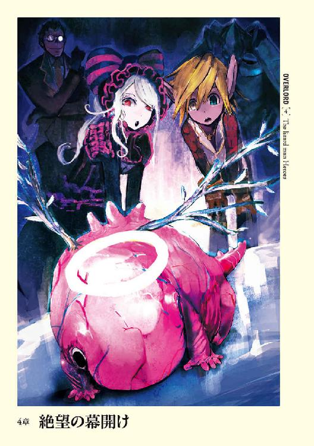
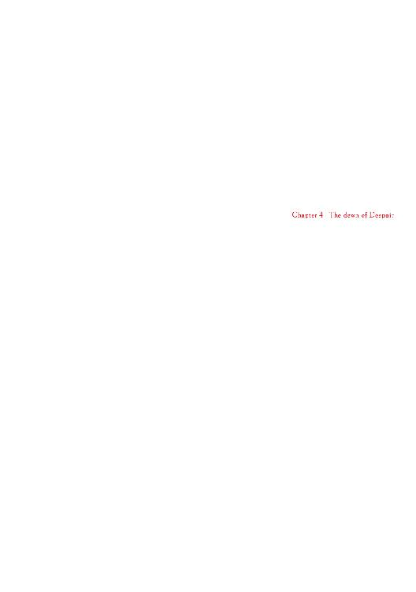
１
玉座の間に向かうコキュートスの足取りは重かった。そしてそれが伝播したように後ろに従って歩くシモベたちの足音も暗く、重い。
今回の蜥蜴人との戦闘における敗北がその原因だ。栄えあるナザリックの軍勢を指揮しながら、敗北という形で幕を下ろしてしまったのだから。
確かにコキュートス自身は、蜥蜴人たちを高く評価はしている。武人として創造されたコキュートスは、優れた戦士に敬意を抱いてしまうところがあった。
しかし、それとこれとは話は別だ。
ナザリックに敗北が許されるはずがない。しかも今回は何時もの防衛戦ではなく、初の遠征である。その栄光ある初戦を敗北で飾るなど、誰もが不快に思うはずだ。
確かに与えられた兵団が弱いものだったという点はあり、デミウルゴスの言葉が思い出される。しかし、それは言い訳に過ぎない。主人が敗北する可能性を考慮していたとしても、最善は勝利であるのは間違いないのだから。
やがて前方に玉座の間、その前の部屋であるソロモンの小さな鍵が見えてくる。近づくにつれ、足はより一層重くなり、何らかの魔法でも仕掛けられたかと思いたくなるほどだ。
主人に叱咤されるのであればよい。命を奪われようと、自害を求められようと、喜んで恥を拭う覚悟はある。
コキュートスが恐れているのは失望されることだ。
もし、最後に残られた至高の御方に見捨てられた場合、コキュートスはどうすればよいのか。
コキュートスは自らを一振りの剣と見做している。主人の手の中に納まり、命じられるままに全てを切り捨てる剣だ。だから、その主人に無用と、役に立たないと判断されてしまうことほど恐ろしいことはない。
そればかりか、連帯責任で他の守護者たちも見捨てられたら、コキュートスはどうやって詫びればよいのか。
（詫ビレルハズガナイ。モシソンナコトニデモナッタラ、私ノ命程度デハ許サレルハズガナイ）
それに──
（モシ失望サレ、他ノ方々ト同ジヨウニコノ地ヨリ去ラレタラドウスレバヨイノカ......）
ぶるりとコキュートスの体が震える。冷気に対する完全耐性を持つ彼の震えは、当然外的要因ではなく、内面から生じたものだ。人間であれば吐いてしまうほどの精神的重圧がコキュートスを苛む。
（ソ、ソンナコトハナイ。アインズ様ガワレワレヲ見捨テラレルコトナド......ナイハズダ）
他の至高の存在が去って行った大墳墓に、最後まで残ってくださった方。
最高支配者であり、まとめ役の絶対者。
そんな慈悲深き主君が自分たちを見捨てるはずがない。そうやってどれだけ自分で慰めようとも、そうならないという保証だってないと頭の奥底から否定の声が上がる。
ソロモンの小さな鍵に到着する。
普段であれば周囲に並ぶゴーレムとクリスタル型モンスター以外、誰もいない部屋には、多くの影があった。四人の守護者──デミウルゴス、アウラ、マーレ、シャルティア。そして各人が選抜した高位のシモベたちの姿だ。
視線が一斉にコキュートスに向けられ、罪悪感から一瞬だけ動揺を面に浮かべてしまう。
まるで敗北を責めたてられているように思えたためだ。いや、とコキュートスは考える。実際にそうなのかもしれない。先ほどの考えが再び頭の中をよぎる。彼らも同じ思いを抱いているのではないだろうか。
窺えば、全員の瞳に無言の非難があるような気さえした。
「遅クナッテ申シ訳ナイ。外ニ出テイタデミウルゴスガ私ヨリモ先ニ来テイルトイウノニ」
「いえいえ、気にすることはないですよ」
代表してデミウルゴスが答える。
その声は何時もの通りでマイナスの感情は感じられなかった。しかしながらデミウルゴスは智謀に長けた守護者であり、感情を上手くコントロールし、本音を隠すのが得意という者。本当に、不快感を抱いていないかどうかは判別がつかない。
そういう意味ではこの前、二人の戦いを見守る際のデミウルゴスは珍しかったといえよう。彼がどれほどの忠誠心を持っているかの表れでもあるが。
「とりあえず、他の守護者たちには伝えたのですが、アルベドの代わりとして私が守護者代表を務めさせていただきます。異存はありますか？」
「イヤ。オ前ナラバ問題ハ一切ナイ」
アルベドはセバスの代理として主人の介添えの役目があるため、この場にはいない。
「それはよかった。では、最後の一人が来ましたら玉座の間に入るとしましょう。ただし、その前にアルベドが抜けた分も考慮した、拝謁に関する並びの順番等の打ち合わせを行います。本来であれば予行練習が必要だとは思いますが、時間がないとのことなので今回は省略し、口頭での説明になります。聞き逃すことの無いように」
各守護者とシモベ達が了解の意を示す中、同じように答えながらコキュートスは疑問を抱く。守護者はみなそろっているというのに、誰を待つというのだろう、と。
しかしその疑念は、答えとなる人物がその場に姿を見せることで解消される。
突然、コキュートスはこちらに向かって進んでくる気配を一つだけ感知した。
顔を向けた先、そこにあったのはふよふよと浮かぶ異形がレメゲトンに向かって進んでくる姿だ。
外見は胎児。いや胚子という方が正解か。尻尾がにょろっと生えており、体色はやけに明るいピンク。頭上には天使の輪が、背中には羽の無い、枯れたような翼が生えていた。大きさにして一メートルほどのそんな者が、ゆっくりと進んでくるのだ。
「あれは？」
アウラの疑問の声にデミウルゴスが答える。
「第八階層守護者、ヴィクティムだよ」
「あれがでありんすか......」
ヴィクティムはレメゲトンに到着すると、ぐるっと回る。コキュートスは周囲を眺めたのだろうと理解する。
ヴィクティムは首がない。そのために周りを見渡すときは全身を動かさなくてはならないのだ。
「しおんきみどりにはい、あおみどりだいだいえどむらさきあおむらさきだいだいたまご。そしょくやまぶきだいだいぞうげシンシャヒハダタマゴヒムラサキたまごたいしゃ」
奇怪な言葉を気にもせず、デミウルゴスは代表して答える。
「よく来たね、ヴィクティム。私がアルベドに代わって、代表を務めているデミウルゴスだ」
「ボタンヒハイタイシャにあおむききこくたんうのはな、くりねりねりだいだいたまごくりうのはなあおむらさきたいしゃ」
そしてヴィクティムはぐるっと体を動かし、全員を再び見渡す。
「しおんきみどりにあおむらさきときわくりきみどりあおむらさきあかねうすいろくりねりねりだいだいたまごくりうのはなあおむらさきたいしゃときわたまご、だいだいこくたんしんしゃぞうげひあおみどりあかねはいうのはなこくたんにちゃたまごひやまぶきやまぶきねりあおむらさきたいしゃ。ひとこくたんしんしゃだいだいくろはだやまぶきにひ」
「なるほど。では全員そろったので、まずは先ほどの件の説明に入ろう」
デミウルゴスの説明に全員が真剣に耳を傾ける。これよりナザリック地下大墳墓の心臓部で、至高の存在のまとめ役であられる方に拝謁するのだ。間違いなどがあったら、命をもって詫びるしかないだろうから。
一通りの説明が終わり、それを自分たちの中で嚙み砕くだけの時間を与えられると、先頭にデミウルゴスを据えて、守護者たちはシモベを連れて玉座の間に入る。
コキュートスは数度しか入ったことのない部屋に立ち入り、心の底から歓喜の思いがこみ上げてくる。
見事な作り、そして至高の存在たちを示す旗、そして最奥の世界級アイテム。まさにナザリックの心臓部にふさわしい部屋である。心をじりじりと焼く炎を一時的とはいえ忘れてしまうほど、目を奪われる。
途中でシモベたちを後ろに残し、守護者たちは玉座の下階段前に、一直線に並ぶ。その後、壁にかかるアインズ・ウール・ゴウンのギルドサインに最敬礼を以て、崇拝と忠義の念を示す。
それから片膝をつくと頭を垂れ、主人が来る時まで黙ったまま時間が過ぎるのを待つ。
やがて、後方で扉が開く重々しい音とともに、足音が一つ入室する。後方を確認しなくても、それが決して主人のものでないのはわかる。ナザリック地下大墳墓の主人である方が、伴もつれずに現れるなどということはありえない。
「ナザリック地下大墳墓最高支配者アインズ・ウール・ゴウン様。および守護者統括アルベド様のご入室です」
戦闘メイドの一人、ユリ・アルファの声だ。
再び扉が開く音が響き、コツリという冷ややかな靴の音と、杖が床を叩く音が響く。さらに少し後ろからハイヒールの音がする。
主人の入室ともなれば敬意の念を示すのが普通であろう。しかし、この場に集まった者たちは一切、そういったことはしない。なぜなら、すでにこれ以上ないというほどの敬意を示しているからだ。
ただし、コキュートスだけは違った。
己の心を占めるある思いが、身動きとなって表れてしまった。それは本当に小さかったが、この場では空気を大きく乱す動きに他ならない。
コキュートスは守護者たちが意識を自分に向けてきたのを、特殊技術で察知する。主人の後ろを歩くアルベドからは、懸命に押し殺そうとしても隠し切れない憤怒の感情の放射がある。しかしさすがにこの状況下で言葉を発する者は誰一人としていない。
守護者たちの並ぶ横をゆっくりと足音が通り過ぎ、階段を上っていく音がする。玉座に座る音がし、アルベドの声が室内に大きく広がった。
「顔を上げ、アインズ・ウール・ゴウン様の御威光に触れなさい」
玉座に坐した主人の姿を目にしようと、一斉に身動きの音がした。
コキュートスもすぐに顔を上げる。
地の支配者の証たる杖を握りしめ、恐ろしいオーラでその身を包む、背後に黒き後光を背負ったその存在こそ、ナザリック地下大墳墓最高支配者アインズ・ウール・ゴウンである。
手前に立つアルベドが、階下のコキュートスを含む全守護者を眺めると、満足げにうなずき、アインズに顔を向けた。
「アインズ様、ナザリック階層守護者、御身の前にそろいました。何なりとご命令を」
うむ、と重々しい言葉を発すると、スタッフが大きく床に叩きつけられる。全員の視線が集まる中、ゆっくりと口が開いた。
「よくぞ、私の前に集ってくれた各階層守護者たちよ。さて、まずは感謝を告げよう。デミウルゴス！」
「はっ！」
「ことあるごとに呼びつけているお前の労を労わせてくれ。忠勤、感謝しているぞ」
「おお、何をおっしゃいます、アインズ様！ 私はあなたのシモベ。呼ばれれば即座に参るのが当然の務めであります。感謝など勿体ない」
歓喜に震えた表情でデミウルゴスが深々と頭を下げる。
「そうか。それでお前の方に、薄汚い影が現れた形跡は？」
「ございません。十分に警戒をし、接近すれば発見は容易のはずなのですが......」
「......ならば仕方がない。ただ、くれぐれも注意は怠るなよ？ 我々の想定外の手段があるかもしれないのだから。それとお前が持ってきてくれた皮......。司書長の結論では、低位の巻物作成の使用に耐えられるということだった。安定供給することは可能か？」
「はい！ それは問題ございません。十分な数を捕らえておりますので」
「なるほど......。それでなんという名前の獣だったか？」
「獣？ ......ああ！ アインズ様の仰った獣たちですが......」
デミウルゴスが一瞬だけ言葉を濁し、答える。
「聖王国両脚羊でアベリオンシープなどという名前ではどうでしょう？」
やけに楽しげなデミウルゴスの口調にコキュートスは疑問を抱く。基本的にデミウルゴスは気立てのよい優しい人物である。しかしそれは至高の存在によって生み出された者に対してのみ。それ以外には非常に残酷な人物だ。
彼が浮かべた機嫌の良さの下に、残忍さが見え隠れしていた。どす黒い悪意の向かう先は話に出た獣たちだろうが、知性の劣る存在に同僚がそんな態度を浮かべるだろうか。
デミウルゴスの性格からすると違和感を覚える。とはいえ、この場は疑問を口にして良い場所ではない。
「なるほど......羊か」
微かに笑いを含んだ主人の言葉に、釣られたようにデミウルゴス、そしてアルベドが笑顔を見せた。
「山羊の方が良いとは思うが......よろしい。ではその羊から皮を剝ぎ取れ。......乱獲することで生態系に問題が出る可能性は？」
「恐らくは無いかと。それに治癒魔法を使用することで直ぐに皮を剝ぐことが可能になりますので、大量生産をするのでなければ、多くシープを集める必要もありません。これも非常に優秀なモンスター、トーチャーたちのお陰です」
「ん？ 治癒をかけた場合、切断などされた部位は消失するのではなかったのか？」
「はい、その件に関してですが......治癒実験の一環で判明したことがございます。治癒魔法をかける前に、その箇所が元の形から大きく変化──ミンチになるなど──するとその肉体部分は残るようです。つまりは皮を剝いで加工し始めると、それは別のものとみなされるようで、治癒の魔法をかけても消失しないのです。肉を食べさせても死なないのはそういうことのようです。それとこれは余談かもしれませんが、治癒する側、もしくはされる側が拒絶した場合、治癒魔法がうまく働かず傷跡が残ることもあるようです。同じように位階の低さに比例して、時間経過によっても傷として残るとの結果が出ております」
「なるほど......魔法とはかくも偉大なものだな......。よかろう。ではそのまま進めてくれ」
「はい。今後、年齢、性別に分けて送らせていただきますので、どの年齢の者が最も良い皮を産出したかを教えていただければと思います」
「そうだな。その辺りは司書長に任せるとしよう。次にヴィクティム」
「あおみどりひ、ボタンヒハイタイシャにあおむらさき」
「お前を呼んだのは他でもない。想定外の事件が起こった際に、私を含めて守護者たちを守るのにお前の特殊技術が必要だからだ。......すまないな。直ぐに蘇らせることを約束するので許して欲しい」
「タマゴシオンシンシャハクジヒトタイシャうすいろひおうどたまごくりうのはなあおむらさきだいだいやまぶきぞうげ、くりねりもえぎににゅうはくたいしゃもえぎボタンヒハイタイシャにあおむらさき。そしょくやまぶきだいだいうすいろボタンヒハイタイシャにあおむらさきときわダイダイウスイロアイ。こげちゃにゅうはくもえぎだいだいみるやまぶきえどむらさきもえぎしんしゃしおんやまぶきににゅうはくやまぶきときわたまごたいしゃ。こげちゃときわきはだぞうげしろたまごだいだいひとしんしゃときわくりはいぞうげやまぶきときわくりくろはだもえぎやまぶきたまごはくじときわたまごぼたんにゅうはくあおみどりひとにゅうはくひだいだいこくたんしんしゃときわこくたんしろねりひとみずあさぎあおみどりぼたんうのはなあおむらさきちゃはい」
「そうか......許せ」
頭を下げた至高の主人に、ヴィクティムが驚きの声を上げ、あっちゃこっちゃとワタワタとした動きを見せる。
「うすいろおうどやまぶきひきみどりひ！」
「場合によっては相手を逃がさないために私たちがお前を殺すかもしれない。それも受け入れてくれ。決してお前が憎くてやるのではない。愛しい子供たちの一人であるお前を傷つけたくはないが、このまま未知の敵を放置していてはより痛い目に遭うかもしれない。そのために......」
「きみどりもえぎうすいろくりだいだいくろしろきみどりひたまごはだやまぶきにひ、ボタンヒハイタイシャにあおむらさき。くりねりうすいろきはだあおみどりだいだいぬればしんしゃあおはいもえぎうのはなぞうげひだいだいたまごくりうのはなあおむらさきたいしゃ」
「ナザリックのギミックの一つとして用いられている、こんな言葉がある。福音書から持ってきたものだが、『人、その友のために自分の命を捨てること、これよりも大いなる愛はなし』。まさにお前に相応しい言葉だ。お前の愛に感謝しよう」
深い忠誠の態度を示した守護者から、別の守護者へとアインズの視線が動く。
「次にシャルティア」
おそらくは自分が呼ばれるとは思ってもいなかったのだろう。シャルティアの肩が跳ね上がり、返答する声の音階はやけに甲高いものだった。
「はっ！ はい！」
「......我が元まで」
今まで他の守護者たちになかったことに、驚きつつも慌ててシャルティアが立ち上がる。背中にははっきりとわかる不安が漂っており、その姿は断頭台に昇る死刑囚を思わせたが、背はピンと伸び、そこに求める栄光があるかのように映った。
階段を上ってすぐ、玉座よりわずかに離れた場所でシャルティアは片膝をつく。
「シャルティアよ。お前の心に刺さった棘の件だ」
それだけで即座に主人の言が何に関することかを理解したシャルティアから、慙愧の念が滲み出る。
「ああ！ アインズ様！ その件、わたしに罰をなにとぞお与えください！ 守護者の地位に就くものでありながら、あのようなことをしでかした罪深き愚か者に相応しい罰を！」
シャルティアの血を吐くような声が玉座の間に響く。その気持ちはコキュートスには理解できた。いや、守護者であれば、そして至高の存在に創造された者であれば、誰でもだ。
たとえ操られたとしても、至高の存在に敵対するなど自分で自分が許せないのだ。
「そうか......シャルティア。ならばこちらに来い」
手招きに従って、シャルティアがより玉座へとにじり寄る。
玉座の前で頭を垂れたシャルティアに骨の手が伸び、優しく頭を撫でる。
「あ、あいんずさ......ま」
恐る恐る伏せていた顔を上げ、度肝を抜かれたようなシャルティアの小さな声が聞こえる。
「......あの失態は私の失態である。それに世界級アイテムが相手では分が悪すぎる。シャルティア──私はナザリックに仕えるお前たち、一から作り出されたお前たち全員を愛している。当然、お前もだ。愛する罪なきお前に、無理に罰を与えるようなことをさせるのか？」
困ったな、というように視線が動く。その先にあるのが何かはコキュートスには分からない。ただ口が微かに動いたようだった。主人の顔は完全な骸骨であり、唇がないために動きから推測することは出来ない。しかし、それは恐らくは人名だろう。
「嗚呼、アインズ様！ 愛などと！」
感極まったようなシャルティアの声が響き渡る。
後ろ姿であるためにシャルティアの顔はコキュートスには見えない。しかし態度が雄弁に物語っている。その声は潤み、肩が震えていた。
主人がもう片方の手でシャルティアの顔を優しく撫でるのが見える。手には白いハンカチが握られていた。
「良い、良い。シャルティア。泣くな。美人が台無しだぞ？」
言葉も無く、シャルティアが先ほどまで髪を撫でていた手の甲に顔──恐らくは唇──を押しつけている。
ぐすんという泣きべそをかいたのはマーレ。そしてアウラだ。
デミウルゴスも僅かに目の辺りを拭っている。少しだけ涙というものを流せる者達を羨ましく思いながら、コキュートスは再び忠誠を誓う仲間の後ろ姿を眺める。
シャルティアが最も恐れていたのは役に立てない自分であり、迷惑をかけた自分であり、捧げてきた忠誠を投げ出してしまった自分を、最後にこの地に残った優しき至高の存在が見放すことだろう。
しかし、不安を主人は完膚なきまでに打ち砕いてくれた。
愛している、という言葉で。
シャルティアの歓喜は如何ほどのものだろうか。同じ立場──いや、コキュートスの方が悪い──に立つ者として羨ましく思えるその後ろ姿をただ黙ってコキュートスは眺める。
「さぁ、ではシャルティア。下がる──」
「──アインズ様」
冷ややかな声が主人の言葉を断ち切る。不敬な行為に不快感を抱いてコキュートスはアルベドをにらむ。そして異様な気分を抱いた。得体の知れない不安が走ったのだ。
「信賞必罰は世の常。罰を与える方がよろしいかと思われます」
「......アルベド。私の決定にふ......」
口が閉ざされる。コキュートスにはわからない何かが言葉を詰まらせたのだろう。決断したのはシャルティアの一言によってだ。
「アインズ様。わたしもアルベドの意見に賛成いたします。なにとぞ、わたしに罰をお与えください。それもまた忠義への喜びとなります」
「......分かった。後に罰を決定し与えよう。下がれ」
「はい、アインズ様」
もともと目は赤いがそれを充血させ、シャルティアが階段を下り、先ほどまでいた場所でこれ以上ないほどの臣下の礼を取る。
そして──
「コキュートス。アインズ様よりあなたに向けての御言葉があります。傾聴しなさい」
ピンと空気が張りつめるようだった。
ついに来た。
コキュートスは頭を大きく下げる。床しか視界に入らないその姿勢は、拝謁に相応しい態度ではあるが、それ以上に主人の顔を正面から見つめる勇気が湧きあがらなかったためだ。
「蜥蜴人との戦闘、見せてもらったぞ、コキュートス」
「ハッ！」
「敗北で終わったな」
「ハッ！ コノ度ハ私ノ失態、誠ニ申シ訳アリマセン。コノ──」
コキュートスの謝罪をカツンという杖が床を叩く音が制止する。そしてアルベドの冷たい声が聴覚器官を振るわせる。
「......アインズ様に対して失礼でしょ、コキュートス。謝罪をするなら面を上げなさい」
「失礼シマシタ！」
顔を上げ、階段を、その先にある玉座に座る主人を仰ぎ見る。
「......コキュートス。敗軍の将の言を聞こう。今回、先頭に立つのではなく指揮官として戦ってみて何を感じ取った？」
「ハッ、兵ヲオ預カリシタニモ関ワラズ、更ニハアインズ様ガオ作リニナッタ指揮官役ノ死者の大魔法使いヲ失ッテシマイ申シ訳アリマセン！」
「ん？ ああ、あの程度のいくらでも作り出せるアンデッドなど失っても惜しくない。気にするな。そしてコキュートス。私が聞いているのは軍を率いて戦った感触だ。先に言っておこう。私はお前の今回の敗北を強く責める気はない」
疑問の空気が守護者から、そして後方に控えるシモベたちから上がった。デミウルゴスとアルベドを除いては。
（ヤハリ、デミウルゴスノ言ッテイタコトハ......ム！）
主人の言葉が続く気配を感じ取り、コキュートスは慌てて思考を切り替える。
「なぜなら、どのような者もまた失敗するからだ。それはこの私だってそうだ」
苦笑めいた空気が玉座の間に微かに漂う。至高の主人であるアインズ・ウール・ゴウンに失敗などあり得るはずがなく、実際に今までに失敗などない。つまるところ、コキュートスに対する慰めの言葉でしかないためだ。
「ただ、問題になるのはそこから何を得たかだ。コキュートス、質問を変えよう。どうすれば勝てた？」
コキュートスは黙って考え込む。どうすれば勝てた、それは今なら分かる。自らの至らなかった点を口にした。
「蜥蜴人ヲ侮ッテイマシタ。モット慎重ニ行動スベキダッタカト」
「ふむ！ その通りだ。どんな弱い存在でも侮るのはいけないことだ。......ナーベラルにもこの戦いを見せるべきだったな。それで他には？」
「ハイ。情報不足ダッタカト思イマス。相手ノ実力、地形。ソウイッタモノガ不確カナ状態デハ勝算ハドウシテモ低クナルト思イ知リマシタ」
「ふむふむ。他には？」
「指揮官ノ不足モ問題デシタ。低位ノアンデッドナノデスカラ、臨機応変ニ指令ヲ下セル存在ヲ付ケルベキデシタ。ソレニ蜥蜴人ノ武器ヲ考エ、動死体ヲ主ニブツケ疲労ヲ誘ウ、モシクハ個別ニ動カサズ全テヲ一度ニブツケルベキデシタ」
「それ以外には？」
「......申シ訳アリマセン。直グニ思イツクノハコノ辺リガ......」
「いや、その通りだ。素晴らしい。無論、他にもいくつかあるが、コキュートスは十分に学んでくれた。本当は誰にも聞かずにお前だけで発見して欲しかったが......許容の範囲だろう。さて、なぜ最初からそうしなかったのだ？」
「......考エ付キマセンデシタ。単純ニ力デ押セバヨイト思ッテオリマシタ」
「そうか、だが、アンデッドどもが死んで色々と考えたわけだな？ よろしい！ 二度と失敗しないよう精進するならば、それは意味ある失敗だ」
かすかに主人が微笑んだような気がコキュートスはした。
「失敗にも色々な種類があるが、お前の失敗は致命的なものではない。あの死者の大魔法使いを除き、全て自動的にわき出るアンデッド。あれらが滅びたところで、ナザリックに何の影響も与えない。逆に繰り返し失敗しないよう守護者が学んだということを考えれば御釣りがくるぐらいだ」
「アリガトウゴザイマス、アインズ様！」
「とはいえ、敗北したのは事実であり、シャルティアと同じように罰を受けてもらうが」
そこで主人が言葉を切り、与えられる罰をコキュートスは待つ。わずかな沈黙が少しばかりの不安を生み出すが、失望されていないことを知ったコキュートスの心は軽い。しかし続いた台詞にコキュートスは身を固くした。
「本当はお前を後ろに下げて、と考えていたのだがこちらの方が良いだろう。コキュートスよ、敗北という汚泥をお前の手で拭え。......蜥蜴人たちを殲滅させよ。今度こそ誰の手も借りずにな」
蜥蜴人を皆殺しにして情報が漏れないようにすれば、ナザリックの敗北はない。
ナザリック以外の存在を下等生物とみなしている者たちからすれば、嬉々として己の、そしてナザリックの失態を拭うために虐殺に取りかかるだろう。コキュートスも今までであれば迷うことなくその命令に従っただろう。しかし──
コキュートスは身を震わせる。
今からすることがどのような意味を持つかを理解しているために。
数度息を吸い、そして吐く。
主人からの命令を受諾した声を上げないことに、この場にいる全員が疑問を抱く中、コキュートスは声を上げた。
「アインズ様ニオ願イシタイ儀ガゴザイマス！」
ピタリと世界が止まったような感覚。幾多の意識が、突き刺さるように向けられる。
守護者としてナザリック内でも最高峰の権力と力を持ち、自分と同等以上の者は数えるほどしかいないはずのコキュートスが身震いしたくなる程の悪寒に襲われる。
後悔が雪崩の如く押し寄せてくるが、もはやすべてが遅すぎる。
口にしてしまった以上、もはや戻すことはできない。
幾多の複眼をもつコキュートスの視界は非常に広いが、完全に顔を伏せているために自らの主人の姿が摑めないのが唯一の救いであった。もし、憤怒や不快の態度を示していたら、コキュートスは何も行動できなくなっただろうから。
「ナニトゾ！ アインズ様！」
コキュートスの言葉は主人ではない、別の人間が遮る。
「愚か！」
叱咤したのはアルベドだ。裂帛の気合がこもり、守護者統括として管理する者に相応しい声であった。コキュートスの体が打ち据えられたように、母に叱られる幼子のように震える。
「栄えあるナザリックに敗北をもたらした身でありながら、アインズ様に請願するとは！ 己が分をわきまえなさい！」
コキュートスは口を開かずに、主人の了承を得ようと決して頭は上げない。たとえアルベドから叩き付けられる憤怒の感情がより一層強くなったとしても。
「下がりな──」
しかしアルベドの口から放たれようとした怒声は、一人の男の静かな声によって途中で雲散してしまう。
「──よい、アルベド」
驚きの声を上げたアルベドに主人は再び同じ言葉を繰り返し、感情をなだめる。
「顔を上げよ、コキュートス。そしてお前が私に願う儀とやらを、聞かせてくれないか？」
静かな声に怒りの感情は一切見受けられない。しかし、それだからこそ恐ろしい。どこまでも透き通った湖面を覗き込むとき抱く、吸い込まれるような恐怖にそれは似ている。
外的要因によっては恐怖という精神作用を受けない装備を整えている。だからこそ今、コキュートスを襲っている感情は自らの内から生じているもの。
ごくりと唾を飲み込み──より正確に言えば注入毒を飲み込んだのだが──コキュートスはゆっくりと顔を上げ、支配者たる主人の顔を目にする。
その空虚な眼窩の中に灯る炎は、微妙に鮮やかな赤を湛えているようだった。
「もう一度繰り返そう。お前が私に願う儀というものを、聞かせてくれないか？」
声が出ない。何度繰り返そうが、喉に張り付き一言も発せられなかった。
「どうした、コキュートス？」
重い沈黙がのしかかる。
「......別に怒ってなどいないぞ？ 私はお前が何を考え、何を口にしたいのかを知りたいだけだ」
口調には、黙り込んだ子供を窺うような優しさがあった。それに後押しされる形で、コキュートスは口にする。
「蜥蜴人タチヲ皆殺シニスルノハ反対デス。ナニトゾ御慈悲ヲ」
言い切ったとき、空気が揺らいだようにコキュートスは思われた。いや実際に揺らいだのだろう。
もっとも大きいのは正面──アルベドからの殺意。次に他の守護者たちからは動揺。デミウルゴスと主人からは凪のように何も感じられない。
「......コキュートス、あなた、自分が何を言っているかわかっているの？」
冷ややかな殺意で塗りつぶしたアルベドの声は、冷気に対する完全耐性を持つコキュートスが寒気を感じたほどだった。
「アインズ様はあなたへの罰として蜥蜴人たちを殲滅するように命じた。それに当のあなたが異を唱えるとは......。第五階層守護者コキュートス。まさか、蜥蜴人たちに怯えたの？」
嘲るような声。しかし、コキュートスはそれに反論するものを持たない。
アルベドの態度は正しい。もしこれが逆の立場ならコキュートスだって苛立っただろう。
「何か言ったらどう──」
アルベドの言葉を閉ざしたのは、声ではなく音だった。それは杖が床を叩く甲高い音。
「アルベド、静かにせよ。私がコキュートスに問う。でしゃばった真似はするな」
「失礼いたしました！ お、お許しください！」
頭を下げ、アルベドは先ほどの位置に戻る。
主人の視線が戻り、自分を真正面から射抜くように見つめる。感情はやはりまるで読めない。憤怒で塗りつぶされているようでもあるし、面白がっているようでもあった。
「さて、コキュートス。今の発言にはそれなりの理由があるのだろ？ ナザリック地下大墳墓にとって利益となる部分が。それを聞かせてくれ」
「ハッ！ 今後、彼ラノ中カラ屈強ナ戦士ガ出現スル可能性ガアリマス。ユエニココデ皆殺シニシテシマウノハモッタイナイカト思ワレマス。今後ヨリ強イ蜥蜴人ガ生マレタトキニ、ナザリックヘノ忠誠心ヲ植エ付ケ、部下トスルノガ利益ニナルカト判断シマシタ」
「......確かに納得のいく提案だ。蜥蜴人の死体を使用してのアンデッド作成ではやはり人間の死体と同レベル程度の者しか作れなかった。エ・ランテルの墓地に埋葬されている死体を回収する手筈さえ整うのであれば、蜥蜴人たちの死体に固執する理由はない」
ならばと言いかけたコキュートスはアインズの話がまだ終わっていないことに気付く。嫌な予感を覚え、それは事実となる。
「しかし、だ。蜥蜴人たちよりも、死体を使用して私が作り出すアンデッドの方が費用対効果がよいはずだ。忠誠心には信頼がおける。飲食の費用も掛からない。蜥蜴人では将来的に数が増えるというメリットしか感じられない。そのメリットも長い目で見る必要があるだろう......。何か私が見落としているメリットがあるなら聞かせてほしいな。私がなるほどと、納得する何かを」
慈悲深い主人は納得さえすれば願いを叶えてくれる。しかしコキュートスには何も浮かばない。
自分を武器とみなし、主人の意に従って振るわれるだけの存在。そう思っていたからこそ、自分で考えてこなかったからこそ、説得ができなかった。組織として、どうやったら利益を上手く得られるかという点を考えてこなかったために。
それに求められているのは、ナザリック地下大墳墓の利益につながる話。コキュートスが蜥蜴人を殺しつくしたくないのは、輝きを持つ者がいたから。その者が守ろうとする集団に、武人として心惹かれたという個人の感情からだ。決して大局的な判断ではない。
コキュートスは焦る。
黙ってこちらをうかがっている主人が、焦れたり気分を損ねたりしてしまえば、この奇跡のような問いかけは意味をなくしてしまう。あるのは蜥蜴人たちを殲滅させるという先の命令だけだ。
必死に頭を回転させる。それでも答えは出てこない。
「どうしたコキュートス。何もないのか？ では殲滅ということでよいな？」
繰り返される問い。
コキュートスには何も浮かばなかった。口は重く、思考は虚しく空転するばかりだ。
静まりかえった玉座の間に呟くような声が大きく響く。
「......そうか。残念だ」
残念という言葉の重みに、コキュートスが潰されそうになった時、静かな声が救いの手のように差し出された。
「アインズ様。横からの発言、お許しください」
「......なんだ、デミウルゴス。どうかしたのか？」
「はい。アインズ様の先ほどのご決定ですが、もしよろしければ私の愚案を聞いていただければと思いまして」
「......ならば聞かせてもらおう」
「はっ！ アインズ様は実験の必要性を十分にご承知の御方。ですので、その蜥蜴人たちも使用して実験をしてはいかがでしょうか？」
「ほほう、面白そうな話だ」
玉座から身を乗り出すように構える主が、その際、ほんの一瞬だけではあったが、真紅の瞳を自分に向けたのをコキュートスは感じ取る。
「はい。まず今後のナザリックがどのようになろうともいくつもの力を束ねる時が来るでしょう。場合によっては何かを支配する時が来るかもしれません。その際に上手く統治する実験をこなしているのとこなしていないのでは大きな違いが出ると思われます」
デミウルゴスは姿勢をより正すと、正面から玉座に座る主人を見つめ、結論を告げる。
「蜥蜴人の村を支配して、恐怖などによらない統治に関する実験を行うべきかと具申いたします」
かつんと杖が床に叩きつけられ、甲高い音を周囲に響き渡らせる。
「......見事な提案だ、デミウルゴス」
「ありがとうございます」
「では蜥蜴人の集団はデミウルゴスの進言を受け、殲滅から占領へと変更する。異論のある者は手を挙げて伝えよ」
真紅の揺らめきがぐるりと守護者たちを見渡す。
「............異論はないようだな。ではそれで決定とする」
了解の意として、すべての者たちが頭を下げる。
「しかし、デミウルゴス。見事なアイデアだ。感心したぞ」
デミウルゴスはすっと笑みを浮かべる。
「何をおっしゃいますか、アインズ様。あなた様はすでにそれにお気づきだったはず。コキュートスを待っておられたのですね？」
言葉は返らない。ただ主人は苦笑しただけだ。しかしその態度が雄弁に答えを語っている。
体内から一気に力が抜けていくようだった。
ナザリックの栄えある軍勢を指揮しながら敗北し、主人の意見に異を唱えつつも代案を用意できないもの。それをなんというのか。それは──
（無能ダ。ワタシハナント無能ナンダロウカ）
「......いや、そんなことはない、デミウルゴス。お前は私を買いかぶりすぎている。私が望んでいたのは、何でも良いから自らの考えを示して欲しかったということだけだ」
視線が再び動き、コキュートスで最も長く留まる。その意味を理解し、コキュートスは恥じ入るが、顔を下に向けることは出来ない。
「優先するべきはそこにある真意だ。それを見極めて最も適切な行動を取れ。聞け、守護者たちよ。命令に盲目的に従って行動していれば良いというものではない。その前に少しだけ思案を巡らせるのだ。何が最もナザリックの利益に繫がるかを。命令内容が間違っている、またはより効率の良い手段があると思い至ったときは私に──または意見の提案者に提示せよ。──さて、コキュートス。話を先ほどのものに戻そう。お前には罰を与えると言ったな」
「ハイ。蜥蜴人ノ集団ヲ皆殺シニスルコトデス」
「そうだ。しかし、皆殺しではなく、代わりに統治するということになった。したがってお前の罰も変更だ。蜥蜴人の集まりをお前が統治し、ナザリックへの忠誠心を植え付けよ。恐怖による支配は厳禁だ。ここが一つのモデルケースとなるようにな」
それはコキュートスが今までしたこともない──いや守護者の中でおそらくはデミウルゴスしかしたことがない大役だ。
ほんの一瞬だけ、コキュートスの心に「自分では難しい」という言葉が浮かびかける。しかしそんな情けない台詞を言えるはずがない。忠義を尽くすべき寛大なる絶対支配者に対しても、苦難を救ってくれた同僚に対しても。
「カシコマリマシタ。不安モ多イタメ、オ力添えノ程、ヨロシクオ願イシマス」
「もちろんだ。資材や食料、そして人材。多く必要となるだろう。それに関してはナザリックから出すとしよう」
「アリガトウゴザイマス。コノコキュートス、アインズ様カラ頂イタ御慈悲ニ見合ウダケノ働キヲオ約束シマス！」
心の底からコキュートスは叫ぶ。
「よし。では守護者全員に出撃を命じる。一つは囮として、そしてもう一つは蜥蜴人に我々の力があんなものでは無いということを誇示してやるためだ。勿論、コキュートスが後の統治に差し障りがあると言うのであれば、撤回するが？」
コキュートスはじっくりと考えてから口を開く。
「問題ハ無イカト思ワレマス」
「そうか。では守護者たちよ、出立の準備を整えよ」
その場にいた守護者たち全員の声が同調し、了解の意を示す。
「アルベド、私も出る、兵の準備を整えよ」
「畏まりました。盗み見が好きな相手もいることも計算して、こちらの手の内を勘違いさせるという意味も含んでいると判断しても？」
「その通りだ。だが威伏させるという面も含んでいることを忘れるな」
「でしたらナザリック・オールドガーダーを主軸に据えた軍勢が見栄えも良ろしいかと」
アルベドの返答に、心の中でコキュートスも同意する。
オールドガーダーというアンデッドの警備兵がいる。
ナザリック・オールドガーダーはナザリック地下大墳墓にしか存在しない、オールドガーダーの上位アンデッドといえる存在である。様々な効果を付与された魔法の武器を持ち、魔法の鎧と盾に身を包み、戦闘系の特殊技術の幾つかに習熟するそのアンデッドは、優秀な警備兵として存在する。
「それでかまわん。数はどの程度いる？」
「三千体になります」
「少ないな。その程度では威圧の効果も薄い。......戦闘に勝利し、ナザリックを甘く見ている奴らの度肝を抜くのだぞ？ 前回よりも少なくては面白みがない。その倍は欲しいな。それ以外には何がいる？」
「であるならナザリック・エルダーガーダー、ナザリック・マスターガーダーを動員しては如何でしょう？ これで総数六千になります」
統括という地位に相応しくスラスラと答えたアルベドに、アインズの答えは簡潔明瞭なもの。
「よし！ それでガルガンチュアの起動に問題は？」
「ございません、アインズ様。問題なく動いておりました」
「ではシャルティア。〈転移門〉を使い、兵力を一気に移動させよ」
「わたし一人の魔力では限界が」
「ペストーニャの支援を受け、魔力を譲渡してもらえ。それでも足りないようであればルプスレギナなどから受け取るのだ」
「畏まりました」
「次にニグレドとパンドラズ・アクターによる警戒網をこちらに向けろ。セバスたちの警戒網が多少緩むが......物理的監視を強化するしかないな。よろしい！ では各員行動を開始せよ。明日には蜥蜴人にナザリック地下大墳墓の力を見せつけるのだ」
２
「感謝スル、デミウルゴス」
主人のいなくなった玉座の間で、コキュートスが最初にしたことは仲間に感謝を伝えることであった。深く頭を下げたコキュートスに、デミウルゴスはいつもの笑顔を向ける。
「いや、その必要はないとも」
「ソウハイカン。オ前ガイナケレバ蜥蜴人タチハ皆殺シダッタ」
「......気にすることはないと言ったのはね、コキュートス。おそらくだがこの展開をアインズ様が望んでいると思ったからなのだよ」
ぴっと指を一本立てて答えたデミウルゴスに、えっと声を上げたのは誰だろうか。自分のようでもあったし、周りにいる守護者たちのようでもあった。
「つまり蜥蜴人の村を攻めるのに君を大将に据えたのは、君が先の発言をすると想定されて、だと私は思う。というのも君が蜥蜴人の村を滅ぼすということに反対した際、アインズ様は非常に喜んだように見受けられた。そして君が代案を提示できなかった時、失望されたご様子だったからさ」
「つまるところ、計画通り進展しなかったから失望されたといわすこと？」
「そういうことだね。つまりこの場での発言。すべてがアインズ様のご計画通りの可能性は非常に高い」
「さっすが、アインズ様。完璧にここまで読まれていたなんて！」
「で、ででも、ですよ、あの、えっと」
「......早くしゃべりなさいよ」
もぞもぞと何事かを言いかけた弟に、姉が厳しく先を促す。
「は、はひぃ。えっと、なんであんなに弱いアンデッドなのかなって不思議に思っていたんです。あ、あの......も、もしかするとですよ？ 敗北することが前提だったのかなって......」
「敗北というよりは、コキュートスが蜥蜴人の強さを調べて、勝てるかどうかを進言することも考慮されていたのではないかな？」
あの時のデミウルゴスとの対話を思い出す。それと同時に羞恥の念がこみ上げてきた。全て失敗していたということ。
「コキュートスの性格を熟知していないと絶対に立てらりんせん計画でありんすね。流石はアインズ様......」
「シャルティアとの一戦でアインズ様の戦者としての才が別格だというのは知ったが、策略家としても超級の才をお持ち。本当に頭が下がる。アインズ様はああ仰っていたけれども、私どもは手足として動くだけで十分だと思うよ......」
「まことに凄すぎんす。至高の御方々のまとめ役にいらっしゃったといわすのは伊達じゃありんせんといわすことでありんすね」
頭脳という面では最も優れているデミウルゴスに続いて、歓喜の念を露わにしたシャルティアの言葉に、残っていた守護者たちは全員頭を縦に振った。
•
アインズは自室に戻り、ベッドにダイブする。意外なほど長い滞空時間をかけて、アインズの全身はベッドにもっさりと埋もれるように受け止められる。そして──転がる。
右へ左へ。
巨大なベッドだからこそ出来る技だ。
豪奢なローブが皺だらけになっているが、それを一切気にせずアインズは右へ左へと微かな笑い声と上げながら転がる。もちろん、そんな子供のようなことをしているのだ、この部屋にはアインズ以外、誰もいない。
やがて十分に童心に返り、ベッドの柔らかさを満喫したアインズは、横になったまま天井を見上げる。
「いや、もう疲れたよ......。あー、酒でも思いっきり飲んで泥酔したい......どれも出来ないけどな」
アインズは愚痴をこぼすと、続いて大きなため息──呼吸はしていないため真似ごとを──を吐き出す。
アンデッドであるために肉体、そして精神的疲労とは無縁ではあるが、ここ一月近く、人間で言うなら精神がすり減るような毎日であった。無くなっていなければ、胃を悪くしたことは確実だ。
プレッシャーは、アインズの置かれている状況にあった。
モモンという戦士が銀髪の吸血鬼──シャルティア──を倒した。これは何も知らない者からすれば凄いということぐらいで済むが、シャルティアに対して世界級アイテムを使用した相手にとってはもっと別の意味を持つ。そのためにアインズを狙ったり、接触してくる可能性は非常に高いはずだった。
だからこそアインズは常時警戒し、いつでも逃げられるように課金アイテムを複数準備していた。空いた時間は警戒すると同時に、仮に相手が接触してくるなら、逃げられるかどうかを慎重に確かめつつ情報を得られるよう行動するロールプレイ──もしくは妄想トレーニング──を頭の中で行っていた。
そんなピリピリした毎日はアインズ・ウール・ゴウンには一切影響がなかったが、鈴木悟という人間の残滓をボロボロにするだけのことはあった。ナザリックの支配者に相応しい態度から離れて、一人ののびのびとした空間に身を入れた瞬間、童心に返ってしまったのも、アインズではなく追いつめられていた鈴木悟がそれを欲していたためだろう。
「ここまで休み無く働いたことは記憶に無いけど......今月の残業代、どんだけ出るんだろ？」
鈴木悟が強く出ているためか、そんな愚痴をこぼしてしまう。
「ナザリック地下大墳墓......いやアインズ・ウール・ゴウン......株式ではないな。合資会社はホワイト企業であり、社員の残業代は全額保証しております......」
そこまでぼやいてから無い眉を顰める。
「ん？ ......役職手当が付くから、もしかして俺には残業代が出ないのか？ くわー」
そこで再びゴロゴロと右へ左へ移動を開始する。五往復ほどしたところでピタリと動きが止まった。
「さて......下らないことは止めて......いやいや、すごいじゃないか。コキュートスがあんなことを言うなんて」
想定の範囲外だった。蜥蜴人に慈悲を与えようとするとは。
コキュートスのあの行動はアインズにとって非常に困った行為だった。
鈴木悟はプレゼンテーションの際は十分な資料を作成し、その通りに事に当たる性格である。そのため想定外の質問に弱い。しかし資料に書かれてあればそれを読み上げることで対処が可能だ。つまり鈴木悟にとってプレゼンテーションなどは、どこまで調べて対処できるかが勝利の鍵であった。そんな男からすると臨機応変が求められる場というのは非常に苦手──を通り越し、嫌いな部類だ。
さすがに玉座の間などに資料を持ち込んで「では次のページをご覧ください」などということはできるはずがない。だからこそ今回の玉座の間での一連の流れを、アインズは脳内で十回以上繰り返し練習してきた。途中、誰かが想定外のことをしないように願いながら。
そんな小さな願いをコキュートスが打ち砕いたのだ。
何を言われるかと、不安は大きかった。しかし嬉しくもあった。
我が儘を言わない子供が初めて自分に我が儘を言ってくれたような──家族的な喜びも同時に存在していたのだ。それに何より、アインズの思惑を遙かに超えた成長だと言えた。
アインズは前にナザリックに帰還した際に一人のメイドに料理をさせた。作らせたのはステーキだ。焼き加減など様々な点を考慮するのであれば、多少の練習は必要であるが、アインズが求めたのはそこまでのものではない。そしてユグドラシルのゲームの料理のように、特別なボーナスを求めていたわけでもない。料理として食べられる形で出来上がればそれで問題なかった。
ただし調理後の完成品は単なる黒い塊。
そのメイドが幾度繰り返しても、炭化した肉以外が完成品として生まれてくることはなかった。
メイドの心からの謝罪を受けながらも、アインズは予期していた答えに十分に納得していた。これは前にアインズが、ドレスルームで行ったグレートソードの装備と同じ事だ。
ユグドラシルにおいては、料理には専門の特殊技術が必要となる。飲食することで、一時的な能力向上等のボーナスがあるのだから、当たり前の事だといえよう。ただ、そのメイドは料理をするための特殊技術を持っていなかった。
つまりは特殊技術が無いことをしようとしても、失敗に終わるということなのだ。
アインズの目的としていたコキュートスの一件は、既に出来上がった存在であるアインズたちが、新たなものを得ることが出来るのかという実験でもあった。戦術や戦略といったものを得られたなら、アインズたちにも成長の可能性はあるということの証明に繫がるのだ。コキュートスに弱いアンデッドを指揮させたのも、負ける方が得るものが多いのではないだろうかという、単純な考えからだった。
そして結果はアインズにとって満足のいくものだった。コキュートスは成長の可能性を見せてくれたのだ。
無論、手に技術をつけるのと、知識の一環として学ぶのでは大きく違う。
アインズが将来的に狙っているのは──もしあるならだが──この世界特有の魔法体系の習熟である。魔法というものは技術なのか、知識なのかという問題は、今なおアインズの中にある。ただ、今回はその知識的な面で成長するかという実験だったということだ。
コキュートスは成長の可能性を教えてくれた。それは十分な働きだった。
アインズは思う。
成長しないということは停滞でしかない。今は強者に属していたとしても、いつかは追い抜かれるだけだろう。
百年先の軍事技術を持っていたとしても、そこで止まっていればいつかは最強の地位から陥落することとなる。今は周辺国家の中では強いかもしれない。だが、その強さがいつまでも保たれると考えて行動するのは単なる愚か者だ。
「とは思っていても......子供の成長を嬉しがる一方で、自分が支配者として忠誠を尽くされるに相応しいのかという不安が込み上げるな......」
ぼやきつつ、アインズは寝台の天井を見上げる。
「あぁ、怖い、怖い......」
鈴木悟という人間の残滓が新たな不安に悲鳴を上げている。
成長とは変化だ。ならば今の絶対的な忠誠心だって、不変であると誰が言えるだろうか？ そうでないとしても、栄光あるナザリックの支配者に相応しくないと判断された場合が恐ろしい。ギルド長失格の烙印を押されることが。
「......守護者たちに忠誠を向けられるに相応しい支配者にならなければならないなぁ......。誰か俺に帝王学でも教えてくれる奴はいないんだろうか......」
ナザリック内にはそんな都合の良い設定を付けられた存在はいないはずだ。
じっと考えたアインズの頭に二人の姿が浮かぶ。それは五大最悪の二柱。公爵位を持つ恐怖公と、王と付く餓食狐蟲王。両者から教育を受けることをじっくりと考えたアインズは一言で答えを言い切る。
「......ぼつ」
あの二人には教えてもらいたくない。極限状況じゃない限りは。
「まぁいいか......。あまりミスをしないように行動していけば、直ぐに隠居してくれなどとは言われないだろう。他に......そうか、両脚羊か......」
その正体に既にアインズは気が付いていた。だからこそアインズは外見などをデミウルゴスに問いかけなかったのだ。それはユグドラシルでも見たことのあるモンスター。
「獅子と山羊の頭を持ち、尻尾は蛇。そして腕は獅子で足は山羊。間違いないな。混合魔獣だな......」
ユグドラシルにおける混合魔獣は、二本の山羊の足で立って歩き、獅子の足を腕代わりにして殴りかかってくる。そして獅子と山羊の二つの頭が並んで生えている、そんなモンスターだ。これはバフォメットと言われるモンスターの流用で、外見データが構成されているためだ。
ただ、それならなぜ、混合魔獣という名前を出さなかったかという疑問は残るが、それに対する答えも既にアインズの内にあった。
「つまりは混合魔獣の亜種という可能性もある。そういうことなんだろ、デミウルゴス？」
ふふっとアインズは笑う。そして意外にネーミングセンスがないな、とデミウルゴスの評価にそう書き加えておく。
「ユグドラシルでも混合魔獣王などの別種は若干......いや、魚の混合魔獣は気持ち悪いぐらい外見が異なっていたしな。新種の混合魔獣......聖王国混合魔獣か......。一匹ぐらいナザリックに連れてこさせるのも悪くない。あとはヴィクティム......か」
あの外見は記憶の通りだ。ただし一つだけ気になることがある。
「あれって......本当に天使の言葉とされるエノク語なのか？ 何かもっと別の言葉をしゃべっている気がするんだが......」
翻訳されるために何語をしゃべっているかはわからないが、微妙な何かをアインズは感じていた。もちろん、エノク語を知らないだけという線も濃厚だが。
「まぁ、いいか。さてそろそろ......出陣の準備をしなくては」
アインズは名残惜しげに再び右へ左へゴロゴロと動く。そしてうつ伏せになると先ほどから若干気になっていたことを確認する。
ベッドに顔を埋めると、息を吸い込んだのだ。
もちろん、アインズは肺がないのでその真似ごとに過ぎないが、それでも不思議なことに匂いを嗅ぐことはできる。
「フローラルな香りだが......ベッドにも香水でも振りかけているのかな？ 金持ちのベッドはこういうものなんだろうか？ そうだとしたらすごいなぁ......。金持ちの演技をするときはこういった部分にも注意した方がよいのかな？ うーむ......」
３
危険感知能力という言葉がある。
冒険者の中でも盗賊に代表される探知系の技能保有者が重要視する能力であるそれは、読んで字の如く、危険を感知する能力だ。
この能力は推理や考察などによらず、感覚的に物事を瞬時に感じとることによる場合と、経験等の推理や考察から察知する場合の二種類存在する。虫の知らせとも言われる心のざわめきが前者であるなら、僅かな周辺環境の変化──微かな匂いや音などから読み取るのが後者だ。
後者の場合、戦場に出たりたった一人で旅をする場合に、鍛えようとしなくても独りでに鍛えられることがある。これは危険の傍に身を寄せることによる経験から来るものである。
そして蜥蜴人のような生物は人間よりも、殆どの場合でその能力に優れている。それは生物的な能力──感覚器官の鋭敏さから来るものであり、厳しい生存環境から来るものでもある。人間であれば、一応はモンスターから離れた安全な場所で眠るだろう。しかし、蜥蜴人の生存する環境下では直ぐ横にモンスターが存在するのだ。
特に旅人として一人で旅をしたザリュースからすれば、家の外の雰囲気の変化を鋭敏に摑むのは容易だ。
漂う空気に緊張感ともいうべきものを感じ取り、ザリュースは目を見開く。
視界の中には見慣れた──といっても寝泊りしているのは数日間だけだが──室内が飛び込んでくる。明かりの入ってこない室内は、人であれば目を凝らしても見ることが出来ないが、蜥蜴人であればさほど苦ではない。
室内に異常は無い。
周囲を見渡し、それを確認したザリュースは、僅かな安堵の息と共に体を起こす。
戦士として優れているために、ザリュースは今まで眠っていたにも関わらず、意識は平時となんら変わらない状態まで覚醒している。寝ぼけたりはしていないどころか、直ぐに戦闘に移れるような肉体の活性状態だ。
蜥蜴人という種族の、眠りの浅さにも起因している。
しかしながらザリュースの横で眠る、クルシュに起きる気配はない。
ザリュースという温もりを失ったクルシュは、まどろみの中、微かに不満げな鳴き声を上げているだけだ。
通常であればクルシュも空気の変化を感じ取り、目を覚ましただろう。しかしながら今回は無理だったようだ。
ザリュースは少しばかり後悔していた。多少、クルシュの体に負担をかけ過ぎただろうか、と。
ザリュースは昨晩の記憶をたどり、確かにクルシュの負担の方が大きかったかもしれないと納得する。あの死者の大魔法使いという強大な敵を倒してそのままの流れで、だ。オスであるザリュースよりは、メスであるクルシュの方が負担は大きかったらしい。
個人的にはそのまま寝かしておきたい。しかしながら、耳をそばだてれば家の壁を通して、多くの蜥蜴人が慌てているのが聞き取れる。そんな何らかの非常事態が起きている状況下では、寝かしておく方が危険だろう。
「クルシュ、クルシュ」
ザリュースは数度、多少強めにクルシュを揺さぶる。
「ん、んぅ」
尻尾がくねり、それから直ぐにクルシュの赤い瞳が姿を見せる。
「ん？ んうぅ......？」
「何かあったようだ」
その一言で、未だ眠たげだったクルシュの瞳が大きく見開かれる。ザリュースはそばに置かれていたフロスト・ペインを手にすると立ち上がる。遅れてクルシュも続いた。
外に出て、騒ぎの発生源をすぐに二人は理解した。
村の頭上を覆うかのように広く掛かる、厚い黒雲を確認して。
通常のものと違うのは、視線を遠方に向ければ一目瞭然だった。雲ひとつない晴天が広がっているのだから。
つまりこれは──。
「また......来たのか」
敵が再び来襲したことを意味する符丁──。
「そうみたいね」
クルシュが同意する。五部族の、共に戦った蜥蜴人たちも同じように天空に掛かる雲を認めて騒いでいる。しかしながら、そこに恐怖の色はない。
先日の戦い──圧倒的な不利を撥ね除けた上で得た勝利が、心を強くしているのだ。
村の正門を目掛け、二人は走る。バシャバシャという水音を立てながら疾走。幾人もの戦闘準備を整えつつある蜥蜴人の横を通り越し、大して時間を掛けずに正面門に到着する。
そこには既に多くの戦士階級の蜥蜴人たちが集まり、注意深く門から外を窺っている。そんな中に見馴れた仲間、共に死線をくぐった蜥蜴人、ゼンベルの姿を見つける。その横には〝小さき牙〟の族長もいた。
激しい水音を立てながら走ってきた二人に対し、ゼンベルは軽く手を上げることで挨拶とし、すぐに門の外を顎でしゃくる。
ゼンベルの横に並び、門から外を窺うザリュースとクルシュ。
向こうの岸辺。湿地と森の境目ともいうべき場所にいたのは、隊列を組んだ骸骨たちだ。
「また来やがったな」
「ああ......」
ゼンベルに答え、ザリュースは一つ、舌打ち。
予測できていた事態だ。しかしながらあまりに早すぎる。あれだけの損害を出せば、多少は準備に時間をかけるだろうという計算は完全に外れてしまった。再びこれほどの大軍を動かすだけの力を持っていたとは。
「......あの死者の大魔法使いが召喚した骸骨よりは弱いだろうけどよぉ」
その言葉の後ろにある意味。それは今隊列を整えている骸骨は、この前に攻めてきた骸骨よりも強いと、ゼンベルは判断しているということだ。
ザリュースもそこに並ぶ骸骨をじっと観察する。どれだけの力を持つのか、どれだけの警戒が必要なのかを見極めるために。
確かにどれも骸骨だ。しかし前回とは決定的に違う。
外見的に最も決定的に違うのは武装だ。先の骸骨が持っていたのは錆び付いた剣のみだった。だが、今回の骸骨たちの武装は非常に充実している。さらには心なしか、体格も良いようにさえ見える。そんな骸骨には三種類の武装タイプがいるようだった。
最も数が多いのは立派な胸当てを纏い、片手には逆三角形を伸ばしたような形状の盾──カイトシールド、もう片手には各種多様な武器を持っている。背中には矢筒と合成長弓。攻守長短に対してしっかりと装備を整えている者達。
次が同じような胸当てにボロボロとなった真紅のマントを棚引かせ、円形盾、バスタードソードを持ち、兜を被った骸骨。
そして最後が最も数が少なく、武装の整った骸骨たちだ。見事な黄金に輝く全身鎧を着用し、煌びやかな槍を握りしめている。目の覚めるような真紅のマントは汚れ一つないように見えた。
そこまで観察したザリュースは、ある事実を発見し、己の目を疑い、数度手で擦る。しかしながら依然として、それは事実として存在していた。
「え？......うそ......」
「ば、バカな......」
クルシュの驚きの声にあわせ、同じ事実に気づいたザリュースは、血を吐かんばかりの呟きをもらす。それにゼンベルが反応した。
「......おう、おめぇも気づいたかよぉ」
ゼンベルの、やはり血を吐かんばかりの声。
「ああ......」ザリュースはそこで口を閉ざす。言いたくはない。言ってしまうと恐ろしくなるから。しかし言わないわけにもならない。「......魔法武器のようだな、あれは」
クルシュが横でこくこくと首を縦に振っている。
骸骨たちが持つ様々な武器。それらは魔法の力を付与されているのだ。ある骸骨は炎を宿す剣を、別の骸骨は青雷を宿すハンマーを持っている。穂先が緑がかった光に包まれた槍を持つ者、どろりとした紫色の液体に包まれたようなシックルを持つ者だっている。
「それだけじゃねぇな。鎧や盾もよく見てみろ。ありゃ......全部魔法の武具だ」
ゼンベルの言葉にザリュースは目を凝らす。
そして思わず呻き声を上げてしまった。盾も鎧も日光を反射したとは思えない、まるでそのもの自体が光を宿しているというように見えるという事実に気づき。
一体どれほどの権力者であればあれだけの数の、骸骨の兵士に魔法装備を持たせることが出来るというのか。確かに単純な切れ味を高める魔法を込めた武器なら、ザリュースが伝え聞いたような大国なら長期間の計画を立てれば可能だろう。しかし、魔法の武器にそれぞれの属性を──しかも多種多様の効果を宿すとなってくると話が変わってくる。
ザリュースは数日前にゼンベルから聞いた、山小人の話を思い出す。
山小人は山の種族であり、金属に関しては優れた能力を持つ種族だ。その山小人たちが酒の席で語る英雄譚──山小人の大帝国を築いた王、アダマンタイトの鎧に身を包んだ英雄、竜を一騎打ちの末に殺した者、そしてかの十三英雄の一人『魔法工』。そんな者達の話にすら、あれだけの魔法の装備を整えた兵団──五千を超える数──の話はない。
では今、ザリュースが目にしているものは何だというのか。
「......神話の軍隊か」
人の物語ではないとするなら、もはやそれは神の物語の世界だ。
ザリュースは全身をぶるっと、一回だけ大きく震わす。あまりに予想を超え、決して敵にまわしてはいけないものを敵にしたと悟り。
しかし元よりここには全滅覚悟で皆を集めている。そんな非道な作戦の立案者である自分が怯えてどうする？ 相手は想像を絶するほどの強敵だ。それは理解した。問題はそれだからどうするかだ。
「ありえないね、あれは恐らくは幻影だろうね」
そんな声に一瞬だけ、その場にいた誰もが何を言っているんだという顔をする。確かに不動の姿勢を維持してはいるが、そこにはっきりとした存在感があり、身震いするような迫力がある。決して幻影などというちゃちなものの筈がない。
ただし言い切った人物が〝小さき牙〟の族長であるというのが困惑の種だ。決して狂ってこんなことを言っているはずがない。
「それの根拠はどこにあるんだ？」
ザリュースの問いかけに自信を持って彼は答える。
「偵察の者を交代で送り出しているんだがね。誰一人としてあんなアンデッドを目にしていない。あれほどの数を見逃すはずがないね。もちろん、交代で送り出しているものは全員無事に帰ってきているからね」
「なるほど......しかしあれが幻であるとは俺には思えないな」
「......しかし......いや、かもしれないね。だとしたら考えられるのは、彼らが地面を掘って進んできているなどだね。それであればこれまで目にしなかった理由も分かるからね」
「......地面を掘って来たでも空を飛んで来たでもかまわねぇけどよ、どうすんだよ。今のところ喧嘩売ってくる気はなさそうだけど、ありゃ交渉をしにきた気配じゃねぇぞ？」
「そうだな......だが、前回の例を思い出せば、なんらかのアクションをしてくるとは思うんだが......」
ザリュースは骸骨たちを睨む。
その中にいるだろう敵の指揮官を見つけだそうと──その時、ぞくりとするような冷たい風が吹き抜ける。たった一度では終わらない。風は終わることなく、吹き付けてくる。
その急激な、そして含まれた異様な冷気は決して自然現象によるものではなく、魔法によって生じたものだと確信が持てた。
「風が？ え？ ......噓！ 別の魔法って......そんなありえない......」
クルシュが自らの体を抱きかかえながら身を震わせる。それは寒さだけが理由とは思えない。だからこそザリュースは問いかける。
「クルシュ。この寒風の正体は......」
「......信じられないかもしれないけど聞いて、ザリュース。私は今までこの天気の変化を第四位階魔法〈雲操作〉だと思っていたわ。でも違う。〈雲操作〉には雲を操作する力はあっても、こんな冷たい風を生み出すことはできない。だから......雲の操作ではなく、天候や気象現象の変化。つまりは第六位階魔法〈天候操作〉を発動させている......のだと思うわ」
使用できない領域の魔法であるため自信はないけど、と声を落として誰にも聞こえないように告げてくるクルシュ。
第六位階魔法という領域の凄まじさをザリュースは知っている。ザリュースが剣を取って以来、最強の敵だったイグヴァですら使えない領域の魔法。この世界において最高位とも言われる至高の位階魔法。
「これが......偉大なる御方とやらの力か。なるほど......納得できるな......」
第六位階の魔法が使用できるとするなら、確かにそれは「偉大な」と言われても過言ではないだろう。
「おいおい、なんか、どいつもこいつもやべぇ雰囲気になっちまってるな」
ゼンベルのぼやきは周囲の雰囲気を明確に示していた。
この時期からするとありえないような冷たい風──つまりはありえないような自然環境の変化。それが蜥蜴人の士気をがた落ちにしている。
前回は雲が発生する程度だった。これぐらいであれば大きな篝火を焚いて祭司たちが儀式をすればできる範疇である。しかしながら蜥蜴人は秋の季節を思わせる風を浴びることで、相手が自然という支配できないものを歪める力を有していることを知ってしまった。
クルシュの言葉が聞こえずとも、これから戦う敵がどれほどの存在か、この吹き抜ける冷たい風は、その強大さを雄弁に物語っているのだ。
「ちっ。やろう、動き出しやがった」
ザリュースはぎりっ、と歯を嚙み締める。大きく動こうとした尻尾は意志の力で押さえ込む。やはりこのタイミングで動くか、と。
整然と並んだ骸骨たちが定規で測ったように正確な足取りで行進を開始すると、周囲の戦士階級の蜥蜴人たちは浮き足立ち、警告の唸り声を上げている者もいる。しかし骸骨たちの動きを観察するザリュースは、違うと判断した。あれは戦闘のための動きではない。
ザリュースとゼンベルが、動揺している蜥蜴人たちを落ち着かせようと声を上げかけた瞬間──
「──落ち着け！」
ビリビリと空気が軋むような、裂帛の気合いが響く。
全ての視線の向けられた先、そこにいたのはシャースーリューである。
「もう一度言う。落ち着け」
静まり返ったこの場に、自信と貫禄に溢れた声だけが響き渡る。
「そして怯えるな。戦士たちよ。お前達の後ろにいる、多くの祖霊を失望させるような行為は慎むのだ」
冷静さを取り戻し、静まり返った蜥蜴人たちの間を抜け、シャースーリューはザリュースの横に並ぶ。
「弟よ、向こうの動きはどうだ？」
「ああ、兄者。動き出したが......戦闘準備とは違うみたいだ」
「むぅ」
動き出した骸骨たちが作ったのは、五百体からなる十列横隊だ。
「なにをする気だぁ？」
その質問が出るのを待っていたかのように、骸骨たちは再び動き出した。
その横隊が一分の狂いもない完璧な統制を保ちながら、中央から左右に分かれたのだ。そうして二十体分ぐらいの間が空く。その隙間──そこには一つの影があった。
大きさ自体は大したことは無い。二百五十メートルという距離があっても、ザリュースよりは小さいだろうと分かる。
その影は漆黒のローブを纏い、禍々しく、邪悪なオーラを放っている。昨日戦った強敵、死者の大魔法使いを彷彿とさせるような格好だ。ゆえに、恐らくは魔法詠唱者だろう。
しかし決定的に違うものがある。それは強さ。
目にしたザリュースの背筋に冷たいものが走る。昨日の死者の大魔法使いと、今、姿を見せた者の力量差が、幼子と戦士ほどもあることを直感して。
全身から迸るような邪悪で冷たい気配。それはこれだけの距離があっても感じ取れる。それだけではない。その身を包む武装もまた領域が違う。
死という抗えぬものが──絶対支配者が象ったようだった。
「死の支配者......か」
ザリュースは自分でも思いがけず、その化け物に最も適した言葉をこぼしてしまう。そしてそれは完璧に本質を突いていた。
まさにあれは死を支配する王だ。
『......おお！』
死の支配者は何をするつもりなのか。
固唾を吞んで見守る蜥蜴人たちが、一斉に動揺の声を上げた。突如としてその魔法詠唱者を中心に、十メートルにもなろうかという巨大なドーム状の魔法陣が展開されたのだ。
魔法陣は蒼白い光を放つ、半透明の文字とも記号ともいえるようなものを浮かべたものだ。それはめまぐるしく姿を変え、一瞬たりとも同じ文字を浮かべていないようだった。
蒼く澄んだ光が姿を変えつつ周囲を照らす様は幻想的であり、これが敵の所業でなければ見惚れていただろう。しかし、そんなことはできはしない。
あれはなんだというのか。理解できずに、ザリュースは困惑する。
魔法詠唱者が魔法を使う際、あのような魔法陣が空中に投影されることはない。今、相手がとっているのはザリュースの知識にない行動だ。だから、この場で最も魔法に関する知識があるだろうメスに問いかける。
「あれは、一体？」
「し、しらない。あんなもの知らないわ──」
クルシュが怯えたように返す。魔法に関する知識があるからこそ、理解できない行為が余計恐怖に繫がるようだ。
ザリュースが宥めようとした、次の瞬間。
魔法が発動したのか、魔法陣が弾け、無数の光の粒となって天空に舞い上がる。そして一気に──爆発するかのように天空に広がり──
湖が────凍る。
何が起こったか理解できたものは一人としていなかった。
族長として類を見ない資質を持つシャースーリュー、祭司の力に優れたクルシュ、そして旅人として経験をつんだザリュース。蜥蜴人の歴史上でも類まれなる才覚を持つ者達ですら、そのあまりの事態を直ぐには理解できなかったのだ。
己の足が氷の下にあるなんて、理解できなかったのだ。
遅れて──目の前で起きたことを脳が受け止められるだけの時間が経過し、絶叫が上がる──。
蜥蜴人の誰もが、そう──誰もが悲鳴を上げた。
ザリュースとてそうだ。クルシュもシャースーリューも、そして豪胆さでは随一だろうゼンベルも。自らの心の奥底、魂から這い上がるような恐怖に我を忘れて絶叫する。
あまりにも恐ろしい事実。決して凍らないとされる湖、生まれてからずっと変わらずにあった湖が歪められ、凍りついたのだ。
蜥蜴人たちは慌てて足を引き上げる。氷自体は幸運なことにさほど厚いものではなかったため、直ぐに割れるのだが、割れた先から即座に凍り付いていこうとする。下から立ち上る冷気、即ち突き刺すような冷たさが、これが幻ではないことを証明している。
ザリュースは慌てて泥壁に上ると周囲を見渡す。そしてあまりの光景に絶句した。
視界範囲内の全てが完全に凍り付いている。
確かにこの巨大な湖が丸ごと凍り付いているとはさすがに思えない。しかし、目の届く限り輝く氷に覆われているのは事実だった。
心の片隅に、生け簀の心配が浮かび上がるが、今はそれどころではない。
「噓......」
隣に上ってきたクルシュが周囲を見渡し、ザリュースと同じようにあんぐりと口を開ける。そのぽっかりと開いた口からは、魂が抜け切ったような声が漏れ出た。
信じたくないのはザリュースも同じだ。
「化け物め！」
吠える。それが少しでも恐怖を和らげてくれるようにという願いを込めて。
「早く上がれ！」
兄であるシャースーリューの怒号が響く。
幾人かの蜥蜴人が力なく倒れていた。まだ無事な戦士階級の蜥蜴人たちが協力し合い、倒れた者を凍りついた沼地から引き上げる。
引き上げられた蜥蜴人は皆、顔色が悪く、体を小刻みに震わせている。立ち上る冷気によって生命力を奪われたのだろう。
「兄者、俺が見て回る！」
フロスト・ペインを所持するザリュースは、この程度の冷気ならば、影響を受けるほどのことはない。
「いや......行くな！」
「なぜだ、兄者！」
「これから敵が動き出すはずだ。ここから離れることは許さん！ 全てを見ろ。一つとして情報を取り逃すことは許さん！ 世界を見て回った、様々な知識を持つお前こそ適任なのだ！」
ザリュースから視線を動かし、シャースーリューは周囲の戦士階級の蜥蜴人たちに話しかける。
「今からお前達に冷気に対する防御魔法〈冷気属性防御〉をかける。直ぐにこの氷から離れるように、村中に触れて回れ」
「私もかけるわ」
「頼むぞ！ それとクルシュは俺と手分けをして、危険そうな者がいたら治癒の魔法をかけてくれ！」
クルシュとシャースーリューによって、魔法の守りが無事な蜥蜴人にかけ始められる。
ザリュースは泥壁に上ったまま相手の一挙手一投足も見逃さぬよう、鋭い視線を敵陣地に向ける。兄に言われたことを完璧に行わなくてはならない。
「よいっしょっと」
横に上ってきたゼンベルが、気楽そうに敵陣地を眺める。
「もうちっと気楽にしろよ。おめぇの兄貴はあれだろ、お前の知恵を期待してんだろ？ 別になんか見逃したって、怒られはしないさ。それよりは注意しすぎで視野を狭めんなよ？」
ゼンベルの気楽そうな声が、ザリュースの頭をすっと冷やす。
あの死者の大魔法使いとの戦いでもそうだったように、出来ることを皆で行って、そしてそれらを束ねればよい。
ザリュースが周りを見渡せば、戦士階級の蜥蜴人たちも同じように泥壁に上り、敵を観察している。そう、一人で戦っているのではない。多くの仲間と共に戦っているのだ。
どうやら圧倒的な力──魔法を見せ付けられ、動揺していたようだ。
ザリュースは息を吐き出す。心に溜まった淀みを吐き出すように。
「すまない」
「いいって事よ」
「......そうだな。ゼンベルもいるのだからな」
「ふん。頭に関しては期待すんなよ？」
微かに笑いあい、敵の動きを眺める。
「しっかし。ありゃ、本当の化け物だな」
「ああ。桁が違うな......」
死の王はまさに王者のごとき不遜にして堂々たる姿で、ザリュースたちの村を眺めている。その小さいはずの体が数十倍にも膨れ上がって見える。
「......あれが偉大なる御方とかいう奴なのは確実だな」
「恐らくは。湖を凍らせるほどの魔法を使うものが複数いるとは思いたくないな」
「だなー。ああ、納得だよ。こんなことを仕出かす化け物からすれば、俺達蜥蜴人なんか糞みてぇなもんだろうな。あー糞。あー糞！ 俺達は虫ケラ同然なんだろうよ。つーか......動き出したぞ」
湖を凍らせた魔法詠唱者が、杖を持たない手を挙げ、村へと手を振る。何かの指示、そのザリュースの直感は直後恐ろしい形で証明された。
『おおおお！』
村のあちらこちらから声が上がる。
「なんだ......あれは！ なんなんだ、あれは！」
もはや驚くことなど何もない。そう確信していたはずのザリュースは目にしたあまりの光景に、無意識の内に悲鳴にも似た声を上げてしまった。
視線の先、そこに立っていたのは石で出来たような二足二腕の巨大な像。
分厚い胸の岩盤からはまるで心臓の鼓動のように赤い光が漏れていた。太い腕に太い足。ずんぐりとした体は可愛らしさすらあるだろう。三十メートルを超えるような巨体で無ければ。
そんな巨像が突如として森の中に出現したのだ。もはや幻影だと思った方がまだ納得できる。
ゆっくりと巨像が動く。何処から取り出したのか、巨大な岩を持ち上げたのだ。
それを放り投げる。
思わずザリュースは顔を覆ってしまった。巨石が着弾したところにいた全ての者は確実に死ぬ。
暗闇の世界の中、凄まじい地響きと同時に、爆音がザリュースの全身を叩く。壁もまたギシギシと大きく揺れた。
ザッと大ぶりの雨音──跳ね上げられた土砂が降り注ぐ音に合わせて、村の中から子供だけではなく大人たちのものまで含めた鳴き声が響く。
覚悟を決めていたとしても、想像外の恐怖には耐えきれない。先ほどの体験はあれだけの戦闘をくぐり抜けてきた者達ですら幼子に戻らせるだけのものがあった。
命があったことに安堵するザリュースの、恐る恐る開いた目に映るのは、続いて行動を開始し始めたアンデッドの軍団である。それといなくなった巨像だ。
今まで無かった──両軍のちょうど中間辺りの湿地に横たわる巨石に近寄り、平たい盾を上に構えてしゃがみ込んだのだ。掲げられた盾の上に器用にバランスを取りつつ、別の骸骨が乗ると下の者と同じように盾を上に構える。
彼らが何をしているのかを理解した瞬間、ザリュースの全身は雷で撃たれたように震える。
「まさか......階段？ 伝説にも謳われるだろう部隊をそんなことに使うというのか！」
異様な速度で巨石へとかかる──アンデッドの軍団で構成された階段が姿を見せていた。
続いて別のアンデッドの兵士たちが動く。先ほどの者たちよりも見事なアンデッドが百体ほど。その手には槍騎兵が持ちそうな、布がつるされた槍が握られていた。
真紅の布──槍旗にはどれも一つの紋章が縫われている。
そんな者たちが、真紅のマントをたなびかせながら、一糸乱れぬ動きで湿地に踏み入る。足元で氷を踏み砕きながら、黙々と進んでいく。やはり完全に乱れぬ動きで、間隔を取りながら湿地を進んだその者たちは、手にした槍を向かいの戦士のそれと交差させていく。
槍が交互に組み重なり、巨石へと続く一本の通路が出来上がった。
「......王の通り道か」
ゼンベルの言葉はまさにその通りだった。
アンデッドからなる通路へと〝死〟の魔法詠唱者は足を踏み出す。何時の間に現れたのか、後ろに複数の影を引きつれ。
先頭に立つのはもはや力の桁が理解できない魔法詠唱者。
纏っているのは闇を切り抜いて作ったような漆黒のローブ。手に持った杖はどす黒い赤色のオーラを撒き散らしている。それは人の苦悶の表情を象り、崩れ、消えていった。フードの下の顔は骸骨。空虚な眼窩の中、真紅の色がほのかに揺れていた。
無数の──それもザリュースでは到底理解不能であろうと思われる──魔法の装飾品に身を包み、王者に相応しい堂々とした足取りで歩を進めてくる。
死の王の僅か後方に控えるように付き従うのは白の女性。人間を思わせる容姿ではあったが決定的に違う部分がある。それは腰の翼。
「まさかあれは悪魔......なのか？」
悪魔。
それは暴力による破壊をもたらす魔鬼、知恵による堕落をもたらす魔人、そういった異界の存在をまとめて呼ぶ時の名称である。それは邪悪極まりない者どもであり、知性を持って生きる善良な者全てを滅ぼすためにいるとされる。いわば悪の代名詞的なモンスターだ。
ザリュースは旅で彼らの存在を耳にした。
それがどれだけ恐ろしい存在かを。かつて二百年ほど前、悪魔の王と呼ばれるに相応しい化け物──魔神が配下の悪魔を引き連れ、世界を滅ぼしかけたという伝承を。
最終的には、かの十三英雄が滅ぼしたという、その戦いの傷跡が今なお残る場所もある。
アンデッドが生きるものへの憎悪を宿した存在なら、悪魔は生きるものを苦しめるための存在だ。
その後ろに闇妖精の双子が歩き、そして銀髪の少女が続く。さらに空中を滑るように移動する奇怪な化け物、そして最後尾を尻尾の生えた人間のような男という具合だ。
奇怪な化け物のみはさほど強大さを感じさせないが、それ以外のどれもが目にするだけで尻尾の先まで震えが走る。野生の勘が強く訴えかけるのだ。全力で逃げ出せと。
一行は黙々と歩き、槍旗の下を潜り抜け、巨石への階段を上る。迷い無くアンデッドの兵士たちを踏みしめ、王者のごとく巨石の上に立った。先頭を歩く死者の王がその手を動かす。
突如、漆黒の輝きを宿す背の高い玉座が出現すると、それに腰掛ける。
側近と思われる、後ろを歩いていた者達は一直線に並び、何かを待ちかまえているかのようにその視線を村へと向けた。ただ、彼らはそれ以上の行動を起こそうとはしない。
一体どうしたのか。
幾人かの蜥蜴人が不安げに互いの顔を見合わせる。そしてこの場では最も賢いだろう人物に判断を委ねることとする。
「......あ、あの、どうするんですか、ザリュースさん。逃げる準備を？」
戦意の欠片もない声であった。尻尾は力無く垂れ下がり、心の内を大きく代弁している。
「いや。その必要は無い。あのときの死者の大魔法使いを思い出してくれ。あれよりも圧倒的に強いだろう魔法詠唱者だぞ？ この程度の距離を無視して攻撃を放つことは容易の筈。恐らくは......何か言いたいことがあるんだろう」
納得という顔をする蜥蜴人。
その間も向かってきた一行から視線を逸らさずに、ザリュースは下々の者が王を見上げるように、巨石の上に立つ強大な化け物を観察し続ける。
少しでも情報を見逃さないように。
もはやこの距離にもなればかなり詳細に観察でき、互いの視線すら交差する。
玉座に座る死の王はこちらを観察しているのだろうか。闇妖精たちからは意外なほど敵意を感じない。銀髪の女は嘲笑をたたえている。悪魔は優しげであるのが恐ろしい。奇怪な化け物はよく分からない。尻尾の生えた男の目に感情は感じられなかった。
互いを観察しあうには十分な時間が流れ、死の王が再び、杖を持たない手を胸の辺りまで軽く上げる。それに反応し、幾人かの蜥蜴人が動揺から尻尾を激しく動かす。
「──怯えるな。相手の前で無様な姿を見せるな」
刃物で切りつけるようなザリュースの叱咤の声に、その場にいた蜥蜴人全員の背筋がぴんと伸びる。
死の王の前に黒い靄が複数起こった。数にして二十。それは渦巻きながら少しずつ大きくなっていき、百五十センチほどの黒い靄となる。やがて、そんな靄の中におぞましい無数の顔が浮かびあがる。
「あれは......」
ザリュースは思い出す。メッセンジャーとして村に来たモンスターのこと。そして旅をしていたときに見たアンデッドモンスターを。
クルシュの村で大雑把な説明はしたが、非実体のモンスターは、魔法を付与された武器や、特別な金属から作られた武器、魔法、特殊な武技を使用しなくてはダメージを与えることがほぼ困難な存在だ。
蜥蜴人の全部族を合わせても、魔法武器などほんの少ししかない。つまり一体倒すのも困難だろう。
そんなモンスターを容易く二十体も生み出す。
「......死を支配するということはそういうことか」
確かに、あれだけの力を持つ死者の大魔法使いが、忠誠を尽くすだけの桁外れの存在だ。ザリュースは絶望と共にそう思う。
死の支配者は何事かを呟くと、行けといわんばかりに手を振る。アンデッドたちは村を囲むように飛来すると、唱和が響く。
『偉大なる御方の言葉を伝える』
『偉大なる御方は対話を望まれている。代表となる者は即座に歩み出よ』
『無駄な時間の経過は、偉大なる御方を不快にさせるだけと知れ』
一方的にそれだけ宣言すると、非実体のアンデッドは生み出した主人の元へと戻っていく。
「あ？ ......なんだと......それで終わり？」
ザリュースは馬鹿のように口を開けてしまう。
（たったあれだけの言葉を伝えるためだけに、強力なアンデッドを使ったというのか？）
しかし、本当に信じられないことは、死の支配者の合図を受け、後方に控える銀髪の少女が、勢い良く手を合わせた瞬間に起こった。
手を合わせた瞬間──そのアンデッドは消滅したのだ。
「はぁ!?」
ザリュースは驚き慌て、思わず声を上げてしまう。
召喚したモンスターを帰還させたのではなく、消滅させたのだ。
アンデッドの消滅。それは神官ならば行える。通常は退散させるのが精一杯だが、圧倒的な力の開きがある場合は、退散ではなく消滅させることが可能となる。ただ、多くのアンデッドを消滅させるのは飛躍的に困難になる。
つまり銀髪の少女は死の王に匹敵するだけの力を持つ従者だということだ。ならば、おそらくその横に並ぶ他の従者たちも。
「くっくっく──」
ザリュースの笑いは止まらない。
当たり前だ。笑う以外にどうしろというのか。これだけの力の差を──。
「弟よ！」
「──おお、兄者！」
泥壁の下からの声に反応し、見るとそこにはシャースーリューとクルシュの姿があった。二人は泥壁を登り、魔法詠唱者一行を眺める。
クルシュはゼンベルとザリュースの間に、無理矢理体を割り込ませる。その所為でゼンベルが落ちそうになるが、まぁ、許容範囲だろう。
「あれが敵の親玉か。見ているだけで背筋に何かを突き刺されるような存在感だな。お前達が倒した死者の大魔法使いのような外見だが......強さは比較にならんのだろうな......」
「......兄者のほうは終わったのか？」
「むぅ、大体は終わった。もう魔力がクルシュともども空だ。それにあの使者の言葉を聞いては......先にそちらを済ませねばなるまい。かの使者の言っていたことだが......ザリュース、来てくれるか？」
無言でザリュースはシャースーリューをしばらく見つめる。それから深く頷いた。一瞬だけ、シャースーリューは辛そうな顔をし、誰にも気づかれないほどすぐに元の表情へと戻す。
「すまんな」
「気にするな、兄者」
シャースーリューはそれだけ言うと、泥壁から飛び降りる。湿地に張った薄い氷が割れ、水音が響く。
「では、行ってくる」
「気をつけてね」
ザリュースはクルシュを強く抱きしめると、シャースーリューに続いて湿地に飛び降りる。
湖面に張った氷を踏み砕きながら、ザリュースとシャースーリューは歩く。門から出てきた二人に向けられた死の王一行の視線が、まるで物理的な重圧を伴うかのようにザリュースは感じられた。そして後方からは不安げな視線。その中で最も強い視線はクルシュのものか。尻尾を引かれるような強い思いを必死にザリュースは耐える。
ポツリとシャースーリューが言う。
「......すまんな」
「......何がだ、兄者」
「......対話の結果が悪い方に転がれば、見せしめで殺されるだろうからな」
承知の上だった。だからこそクルシュを強く抱きしめてきたのだ。
「......相手の数を考慮すれば、兄者一人でいかせるわけには行くまい。向こうもたった一人では侮られたと思うだろうよ」
ザリュースは確かに蜥蜴人でも名の知られた存在であり、対話の場に連れて来るに相応しい者だが、地位的には旅人。殺されたとしても蜥蜴人の団結の点では惜しくは無いはずだ。
英雄が死んだとしても、他の族長が生きていれば戦争は行える。惜しいのは手に持ったフロスト・ペインだが、これを手放しては凍り付いた湖から上がる冷気に耐えられない。
二人は無言で歩いた。一歩一歩、死に近づく。
玉座へと続くアンデッドの階段の前まで辿り着き、声を張り上げる。もし玉座がもっと後ろにあったら階段を昇るという線もあったが、縁ギリギリに立っているということは、上に昇ることを相手は望んでいないのだろう。
王者はより高い位置に立つ。
蜥蜴人はそうではないが、上位者がより高い場所に立つ慣習をもつ種族は多い。もちろん、対話という名目で来たことを考えれば、これは無礼と言われる対応だ。
つまりはそういうこと。対話などと言いながらも、相対して話すつもりなどこれっぽっちもないという意思表示に他ならない。
だが、対等を望む方こそおこがましい。確かにザリュースたちは先の戦いに勝利した。しかし巨石の上に並ぶ敵の幹部連を目にすれば、嫌でもあんな勝利には意味がないと理解できる。全て子供のお遊戯でしかなかった、と。
「来たぞ！ 蜥蜴人の代表、シャースーリュー・シャシャだ。そしてこの者こそ蜥蜴人最強の者！」
「ザリュース・シャシャだ！」
それでも張り上げた声に媚びた感情は一切ない。愚かな行為だとは知っている。これは最後に残った誇りだ。彼らからすればお遊戯だったかもしれない戦いにおいて、死んでいった戦士たちの誇りを無駄にすることは決して出来ない。
返答は無い。玉座に坐す王は、値踏みするような無遠慮な視線をくれるだけで、何か行動を起こそうという気配はまるで見えなかった。
答えを述べたのは、腰の辺りから黒い翼を生やした悪魔だった。
「私たちの主はあなた方には聞く姿勢が出来ていないと思っていらっしゃるのよ？」
「......何？」
疑惑の声に対して、女は横に並んだ者の一人、尻尾の生えた人間種のような男に声をかける。
「──デミウルゴス」
「『平伏したまえ』」
突如、ザリュースもシャースーリューも跪いて、頭を湿地の泥の中に突っ込んでしまう。そうするのが当たり前としか思えなかったのだ。
非常に冷たい泥水が二人の体に付着し、割れた氷が再び凍り付いていく。
起き上がることはまるで出来ない。全身にどれだけの力を入れてもピクリとも動かないのだ。まるで目には見えない巨大な手が上から押さえ込んでいるように、二人の体の自由を完全に奪っている。
「『抵抗するな』」
再び放たれた言葉が耳に届いた瞬間、ザリュースもシャースーリューも体の何処かにもう一つの脳──他人の命令を聞く器官が生まれ、それに従って体が動いているような感覚を覚える。
力の抜けた二人が、無様に泥の中に平伏するのを目にし、満足したのか、女悪魔が自らの主人に話しかける。
「アインズ様、聞く姿勢が整ったようです」
「ご苦労。──頭を上げろ」
「『頭を上げることを許可する』」
唯一自由に動くようになった頭を動かし、ザリュースとシャースーリューは拝謁するように見上げる。
「私は......ナザリック地下大墳墓が主人、アインズ・ウール・ゴウン。先は私の実験を手伝ってくれたことに感謝の意を示す」
（実験？ あれだけの仲間の命を奪いながら、実験だと言い切るのか？）
おぞましさに、激情が炎となって心の中で燃え盛る。しかし、その感情は押さえ込む。今はまだ早いのだから。
「さて、それで本題だが......私の支配下に入れ」
何かを言おうとしたシャースーリューを、魔法詠唱者アインズは軽く手を挙げ、止める。
無視して話しても良いことが無いと理解しているシャースーリューは、大人しく黙る。
「──しかしながら君達も、自分達が勝利を収めた相手の支配下なんかに入りたくはなかろう？ ゆえに四時間後再び攻めるとしよう。もし君達が今度も勝利を収められたなら、私は完全に君達から手を引くことを約束しよう。それどころか君達に相応の謝罪金を支払うことも約束しようじゃないか」
「......質問しても良いだろうか？」
「構わない。何でも聞いてくれ」
「攻めてくるのは......ゴウン殿なのか？」
後ろに控える銀髪の少女が僅かに眉を動かし、女悪魔が微笑みを強める。恐らくは殿という言葉が気に入らなかったのだろう。しかし、特別な行動に出ないのは自らの主人が何も言わないからか。
そんな二人を気にすることなく、アインズは言葉を続ける。
「まさか、そんなことはしないさ。攻め手は私の信頼の出来る側近......それもたった一人だ。名をコキュートスと言う」
その言葉を聞き、世界が崩れんばかりの絶望感が、ザリュースを襲った。
もし数で攻めてくるなら、蜥蜴人にも勝利の可能性はあっただろう。つまりは昨日の実験という、不快な進軍の延長である可能性があるからだ。それであれば万に一つの勝ち目はあったはず。
しかしそうではないのだ。
攻め手はたった一人。
一度敗北した軍勢が、さらにあれほどの兵力を展開しながらも、たった一人に攻めさせる。罰という考えを除けば、その言葉の後ろにあるのは、絶対の信頼をその存在に寄せているということに他ならない。
桁外れの力を保有する存在が、信頼する者。ならば答えは一つ。その者もまた桁外れな力を持つのだろう。蜥蜴人では勝算が無いほどの。
「降伏を......」
「戦わずして降伏などというつまらないことを言わないで欲しい。ちょっとぐらいは戦おうじゃないか。こちらだって適度な勝利の美酒は味わいたいからな」
シャースーリューの言葉を奪う形で、アインズは言葉の先を潰す。
つまるところ見せしめか。この下種が。
ザリュースは言葉には出さずに吐き捨てる。
敗北したという事実を、強者としての殺戮で禊ぐ。
つまりは今から行われることは生贄の儀式だ。蜥蜴人の反抗心を根こそぎ奪い取るための蹂躙劇に他ならない。
「話したいことはこれで終わりだ。では四時間後にたっぷり楽しんでくれ」
「待って欲しい──この氷は溶けるのか？」
勝とうが負けようが、この凍り付いた湖では蜥蜴人が生きていくのは厳しい。
「......ああ。そうだったな」
忘れていた。そんな軽い調子で答える。
「湿地を歩いて泥で汚れるのが嫌だっただけだ。岸辺に着いたら魔法の効果は解除するとしよう」
「な！」
ザリュースもシャースーリューも驚愕に息を飲み、己の耳を疑う。
（泥で汚れるのが嫌だから凍らせた？）
もはやありえないとか、そんなレベルではない。力の桁が違いすぎる。自然の力すらも容易くねじ伏せる存在。それも下らない理由で。
それほどのものを相手にしていたのか、とザリュースもシャースーリューも独りぼっちになった幼子が持つだろう恐怖に襲われる。
「では、さらばだ。蜥蜴人──〈転移門〉」
話すべきことを全て話し終えたと判断したアインズは、軽く手を振る。玉座前に半球体の闇が作り出され、その中に身を投じる。
「さようなら、蜥蜴人」
「じゃあねー。蜥蜴人さん」
「さらばでありんす、蜥蜴人」
控えていた二人の女と一人の少年が、もはや興味は無いといわんばかりの態度で声をかけると、遅れて闇の中に入っていった。
「あ、あの、えっと、じゃぁ、元気でいてください」
「たまごあおみどり、にこくたんしんしゃきみどりしろ」
闇妖精の少女に続いて奇怪な化け物が闇に飲まれる。
「『自由にして良い』さて、たっぷり楽しんでくれたまえ、蜥蜴人」
最後に残った尻尾の男が闇に身を投じる瞬間に、優しく声を響かせると同時に二人を縛っていた重りが溶けて無くなった。
ぽつんと残されたザリュースもシャースーリューも、泥の中に伏したまま、もはや立ち上がる気力が無かった。
伝わってくる極寒の冷気すらもはや苦ではない。肉体以上に心に受けた衝撃は強すぎた。
「ちくしょうが......」
シャースーリューには似合わないような呟き。そこには幾つもの感情が混じりあっていた。
戻ってきた二人を出迎えたのは、冷気から身を避けるために泥壁の上に昇った各部族の族長達だ。周囲にはそれ以外の蜥蜴人はいない。
内密に話すべきことがあると予測しての行動だろう。ならば隠すことも無い、と考えたのだろう。シャースーリューは、先の交渉ともいえないような交渉でのことを包み隠さず、単刀直入に告げる。
シャースーリューの重い言葉に、大きな反応はなく、皆、一様に僅かに息を飲む程度だ。およそどのような交渉になるか予想はしていたのだろう。
「了解だぜ。......んで、氷はどうなるんだ？ 溶けねぇ事には戦いにもならねぇぞ？」
「問題ない。魔法は解除するそうだ」
「交渉の結果かね？」
〝小さき牙〟の族長の質問に対し、シャースーリューは答えることなく、薄く笑う。それを見て、答えを理解した〝小さき牙〟の族長は、遣る瀬無さそうに頭を横に振った。
「君達が行っている間にちょっと調べたんだがね。......湖の中に敵の影があった。骸骨の兵士のようだね。恐らくは包囲する形で待機しているんだと思われるね」
「にがーす、き......かんがえない」
「かなり本腰を入れているってことは......」
「そういうことでしょうね」
交渉に出なかった四人がため息をつく。恐らくは彼らもこれから行われることが生贄の儀式であるという結論に行き着いたのだろう。
「で、どうすんだい？」
「......戦士階級の蜥蜴人は全て動員する。それに......この場にいる......」
「兄者......五人で許してもらえないか？」
不思議そうな顔をしたクルシュを視界の端に捉えながら、ザリュースはシャースーリューのみならず、オスの蜥蜴人全員に懇願するように続ける。
「向こうの狙いが自らの圧倒的な力を見せつけるためなら、蜥蜴人を皆殺しにはしないはず。ならば生き残った者を纏め上げる、中心人物が必要だ。この場にいる全員が死ぬのは、蜥蜴人の将来を考えるなら勿体無いことだ」
「......正論ですね、シャースーリュー」
「うん。ざりゅーす、ただしい」
二人の族長は、ザリュースとクルシュを交互に見、それから同意の声を上げる。
「──いいんじゃねぇか？ 俺も賛成だな」
最後に残ったゼンベルの賛同を得られたことで、シャースーリューに弟の望みを否定する理由は無くなった。
「では、そうしよう。誰かは生き残って纏め上げた部族を率いていかねばならない。それは俺も考えていたことだ。──クルシュなら適任だろう。アルビノということがマイナスかもしれないが、その祭司の力は必要不可欠だろうしな」
「ちょっと待って。私も共に戦うわ！」
クルシュは叫ぶ。なぜ、今更、置いていくのかと。
「それに残るならシャースーリューの方が良いじゃない！ この中で一番信頼されている族長なんだから！」
「だから、いけないのですね。向こうの狙いは圧倒的な力を見せ付けること。絶望させることで支配を容易とする狙いでしょうしね。ですが、もし生き残った蜥蜴人の中に希望をもたらす様な者がいたら......ね？」
「そして......この場にいる族長などの中で、最も評価が低いのがクルシュだからだ」
クルシュは言葉に詰まる。アルビノである彼女の人望が一番低いのは、覆せない事実だ。
言葉による説得は不可能。そう思ったクルシュはザリュースを見つめる。
「私も共に行くわ。あなたは私をこの地に呼んだ時、覚悟を決めさせたじゃない。なぜ、今更そんなことを言うの？」
「......あのときは場合によっては皆死んだ。しかし、今はたった一人ぐらいなら、十分に生き残れる可能性があるからだ」
「ふざけないで！」
クルシュの怒りに呼応するように、ビリビリと空気が震えるようだった。幾度も泥壁を叩く音がする。クルシュの激しい感情によって、尻尾がのたうち暴れているのだ。
「──ザリュース。お前が説得しろ。四時間後にまた会おう」
それだけ言うとシャースーリューは歩き出す。遅れて氷の割れる音とばしゃりという水音が響いた。泥壁から三人の族長が飛び降り、シャースーリューの後ろに付き従って歩き出したのだ。背中を見せたままゼンベルが、軽く手を挙げ挨拶とする。
後ろ姿を見送り、ザリュースはクルシュに向き直る。
「クルシュ、わかってくれ」
「わかるはずがないじゃない！ それに負けるとは決まってないわ！ 私の祭司の力があれば勝てるかもしれない！」
その言葉がどれほど空虚に響いたか。言っているクルシュだって信じていない台詞だ。
「自分の惚れたメスを死なせたくない。そんな愚かなオスの願いを叶えてくれ」
クルシュが悲痛な表情を浮かべ、ザリュースに抱きつく。
「ずるいわよ！」
「すまん......」
「あなたは多分死ぬのよ？」
「ああ......」
そうだ。生き残れる可能性は低い。いや、可能性は無いと断言できるだろう。
「私にそれを見送れと？ たった一週間程度でここまで私の心を縛り付けておきながら？」
「ああ......」
「出会ったのは幸せだわ。でも不幸でもあるわ」
ザリュースの体に回す、クルシュの手に込められた力がより強くなる。まるで少しも離したくないというかのように。
ザリュースに言葉は無い。
何を言えば良いのか。
何を言ったら良いのか。
そんな思いに囚われる。
しばらくの時間が過ぎ去り、クルシュが顔を上げる。その顔は決意に満ちていた。
クルシュが無理にでもついてくる気ではと、ザリュースの心に不安が吹き上がる。そしてそんなザリュースにクルシュははっきりと宣言する。
「──孕むわ」
「──は？」
「行くわよ！」
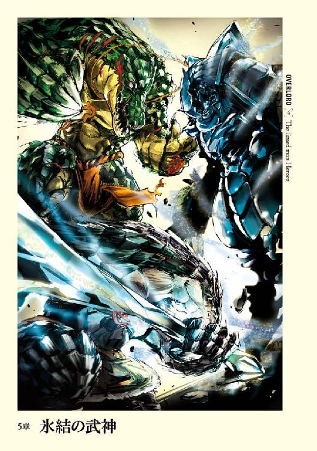
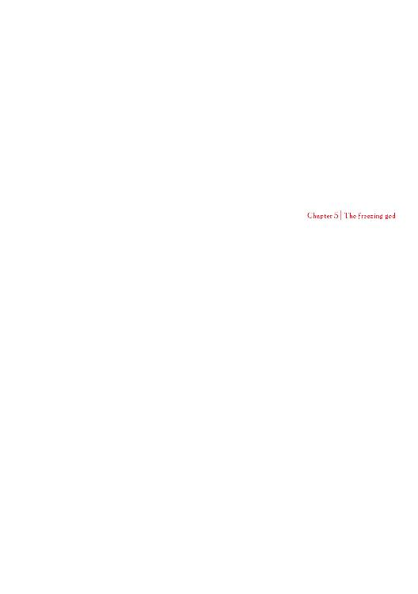
１
アインズたちの本陣となるべき場所は、コキュートスが昨日いた──アウラが建設中の要塞だ。耳を澄ませば、遠方から小さく作業音がここまで届いた。
部屋の一つに入ると同時に、それまで後ろに静かに続いていたヴィクティムがアインズに声をかける。
「たまごあおみどりボタンヒハイタイシャにあおむらさき、そしょくやまぶきだいだいあおみどりひとひとたまごくりそしょくぞうげにゅうはくくわぞめにちゃたまごひやまぶきやまぶきねりあおむらさきたいしゃ」
「ご苦労だった。では私たちが戻るまで、ナザリック第一層を守ってくれ」
「ぞうげだいだいひとあおむらさきうのはなあおむらさきだいだいやまぶき」
「〈転移門〉」
アインズの作り出した闇の門──目的地はナザリック地下大墳墓第一階層──へヴィクティムはその身を投じた。
死ぬことで強力な足止め系の特殊技術が発動する守護者の後ろ姿を見送り、アインズは視線を室内へと向ける。と同時に、後ろでアウラが顔を伏せる気配を感じる。
アインズを迎え入れるということで、部屋の内装を何とか整えようとしたのだろう。室内は所々に涙ぐましい努力の跡を感じさせるが、それでもやはりナザリックと比べると非常に見劣りする。アウラはそれを恥じているのだと思われた。
（そんなに悪いものでもないんだがなぁ......）
元々一般人であるアインズからすると、さほど気にならない。ナザリックの自室も悪くはないのだが豪華すぎて、時折、身の置き所に困ってしまうことがある。ここは逆に落ち着けていい感じだ。
（八畳一間が欲しい。どこかにこっそり準備しておくか。おっと、部下の仕事をちゃんと褒め称えないと。アウラの働きに満足していると言葉にしないといけないな）
やっている、姿を感謝で見守って、信頼せねば、人は実らず。
どこかの会社に営業に行った際、社長室の額縁に飾ってあった言葉をアインズは思い出す。誰の言葉かは知らないが、まさに名言だ。理想の上司像がそこにあるように思われた。
（感謝は言葉にしないとな。ほめてやらねば人は動かない......だったかな？）
「ここに留まると無理に言って悪かったな、アウラ。気にすることは何も無い。お前の働きは高く評価しているし、お前が私のために作っているものなのだから、この場はナザリックにも匹敵しよう」
「......はい」
すこしばかり大きく目を開いたアウラ。これで慰めになっただろうか、とアインズは考えたが、他に上手い言葉が浮かばないために、誤魔化すように周囲を再び見渡す。
木の匂いがまだまだ残る部屋である。
本来であれば防衛力がほぼ皆無なこの場所よりは、ナザリックまで帰還するほうが安全であることは間違いない。防御魔法が一切掛かっていない、ある意味紙でできた家のような場所なのだから。だが逆に言えば、自らを囮にして大魚を釣ろうという目的にはもってこいとも言える。
湖からここまではかなり離れているために、追ってこられるのは──いるとしたらユグドラシルプレイヤー、もしくはそれに匹敵する力の持ち主のみのはずだ。
つまりこの場所への襲撃は敵対的強者の発見に繫がるという寸法だ。
無論、危険ではある。しかしながらアインズの中に、虎穴に入らずんばという気持ちがあった。
（まだ来ないな。それとも......今回の作戦も失敗か？ しかし......あれは一体なに？）
「......アウラよ、一つ聞かせてくれ。あれはなんだ？」
アインズの視線は部屋の奥に一つだけ置かれた白い椅子で止まる。背もたれの部分が高く、どっしりとした作りである。あまりの見事な出来栄えに芸術品としても栄える。ただ一つの問題に目を向けなければ。
「簡素ですが、玉座を用意させていただきました」
質問に対し、後方に付き従う部下──デミウルゴスの自信満々な声が答える。だろうな、と思ったアインズは更に質問を投げかける。
「......何の骨だ？」
「様々な動物です。鷲獅子や飛竜などの良い部分を集めました」
「......そうで......そうか」
それは無数の骨で出来た玉座。ナザリックの調度品としては存在しないものだから、デミウルゴスが出向いた先で作ったモノだろう。しかも、その玉座には、どう見ても人間、もしくは亜人種の頭蓋骨にしか思えない物も無数に使われている。肉や血などといったものは一切こびりついておらず、完全に純白の骨で構成されてはいるものの、放たれるような生臭さを感じてしまう。
おどろおどろしい、あれに座るのか、とアインズは僅かに逡巡する。しかし、部下が好意で用意したものに座らないというのもあれだろう。何か正当な断り文句でもあれば別なのだが──。
色々と考えたアインズはぽんと手を打った。
「......シャルティア。そういえばお前には罰を与えるという約束だったな。今この場で与える。そう......屈辱を、な」
「はっ！」
突然自分に話を振られたシャルティアは、少しばかり驚いたようだった。
「そこに膝を折って頭を垂れるんだ。四つん這いになれ」
「はい」
不思議そうな顔をしたシャルティアは、アインズの指差した場所──部屋の中央まで進むと言われたとおりの格好をする。
アインズはシャルティアのすぐ傍まで近寄ると、そのほっそりとした背中に腰を下ろす。
「──あ、あいんずさま！」
発音としては『はいんずさま』としか聞こえないようなシャルティアの素っ頓狂な驚きの声が上がる。かなり動揺しながらも、ピクリとも動かないのはアインズを自らの背中に乗せているためだ。
「この場で椅子となれ。理解したな」
「はい！」
やけに嬉しそうな声を上げるシャルティアから、デミウルゴスに視線を動かす。
「──すまんな、デミウルゴス。そんなわけだ」
「なるほど！ お見事です！ 守護者に座するとは！ 確かに誰にも出来ない、つまりはまさに至高の御身にこそ相応しい椅子！ 流石はアインズ様。考えてもおりませんでした！」
「そ、そうか......」
顔からキラキラした輝きを発しているデミウルゴスの敬意の念を受け、アインズは何でこんな良い笑顔なんだと不安から目を背ける。すると一人の美女がアインズににこやかに話しかけてくる。
「すみません、アインズ様。少しだけ退室してもよろしいでしょうか？ すぐに戻りますので」
「どうした、アルベド？ まぁ、良い。行け」
ありがとうございますと返事をし、アルベドが部屋を出ていく。その直後、外から「どりゃぁああ！」という女の声と、すさまじい勢いで何かが壁に激突する音が聞こえ、この館が大きく揺れた。
一分程度の後、沈黙が部屋を支配する中、いつもの優しげな笑顔を浮かべたアルベドが戻ってくる。
「戻りました、アインズ様。そうそう、アウラ。部屋を出たとき間違って壁にぶつかってしまったの。壊れてしまったようだから後で直してくれるかしら？ ごめんなさいね」
「あ、うん、はい......。おっけー。直しておきます」
はぁ、とアインズはため息をつき、色々と言いたかったことを飲み込む。中空に浮かび上がりそうな視線を引き戻し、禍々しいオーラを放つ杖へと固定する。
危険な場所に本物を持ってくるはずがなく、これは偽りのギルド武器──製作過程で作り出された試作品である。宝物殿に眠っていたエフェクトの実験に使われたアイテムを組み込むことで、外見だけは完璧に近い、張りぼての完成品だ。
ギルド武器は破壊されればギルドが崩壊する。そのため安易に持ち歩く事は出来ない。だから現在は第八階層、桜花聖域の領域守護者に預けていた。
（指輪を奪われた場合も想定して防御対策も考えてはいるが、流石にどこかで......実験というわけにもいかないし......）
などと考え込んでいると、むずむずとシャルティアの体が動く。アインズのお尻を、座りやすい位置に微調節しているような動かし方だ。奇妙なむず痒さに、アインズはシャルティアの後頭部を見下ろす。
荒い息だ。
重かったのだろう。アインズの腰の下にあるシャルティアの背中は十四歳の少女に似合う、ほっそりとしたものだ。そんな少女の背に大の大人が座る。それがどれだけ倒錯的で、恥ずかしく、残酷なものかを強く認識し、アインズは少々調子に乗りすぎたかと考える。
シャルティアはかつての仲間が作ったＮＰＣ。ペロロンチーノもそんな風に使われると思ってはいなかっただろう。言うならば、かつての仲間を汚す行為。だからこそ自分に対する罰にもなると考えたのだが愚かだった。
（これほどシャルティアを苦しめるとは......度し難いな）
「シャルティア、苦しいか？」
ならば、止めるとしよう。そう続けようとしたアインズを、シャルティアがぐるっと首を回し見据える。その顔は真っ赤に紅潮し、瞳は情欲に濡れたものだった。
「全然苦しくありません！ それどころかご褒美です！」
はぁはぁと体の中に溜まった異様な熱気を吐き出し、とろんとした瞳の中にアインズの顔が映っていた。てらてらと輝く真っ赤な舌が唇を嘗め回し、妖艶な照り返しを残した。僅かに体をくねらせる様は蛇のようでもある。
どう見ても、完全に欲望の炎が燃え上がっている。
「......うわぁ」
どん引きだ。
アインズは思わず立ち上がりかける。
（いや、そんな事が出来るはずがない）
これはシャルティアに与えた罰。そしてシャルティアのミスはアインズの失態から生まれたもの。ならばこの離れたい気持ちを我慢することが自分への罰だ。
アインズは微妙な気分を押し潰す。
鼻息荒く、もぞもぞと動く椅子にアインズはぐっと堪える。それでも「ペロロンチーノ、どんだけ変態設定つけたんだ」という思いを抑え込むことは出来なかった。
「......さて、まじめに本題へと移ろう。いい感じに彼らは驚いていたかな？」
「完璧だと思います、アインズ様」
「まったくでありんすぇ。あの蜥蜴人たちの顔」
守護者の声を受け、アインズは安堵に笑う。実は蜥蜴人の表情の変化は殆ど読み取れなかったのだ。爬虫類よりは人間に似ていたが、人間とは表情の変化がまるで違うためだ。
「そうか。ならば、コキュートスの望みであった示威行為の第一段階としては成功というところかな」
アインズはほっと息を吐く。
流石に一日に四度しか使えない超位魔法。その中の〈天地改変〉をわざわざ発動させたのだ。全然驚いていなかったら目も当てられないところだった。
「さて、デミウルゴス。湖の氷結範囲の詳細なデータの集計はいつ頃になりそうだ？」
「現在行っておりますが、想定以上の広範囲に渡っているため、少々難航しているようです。よろしければ今しばらくお時間をいただければと思います」
膝を突こうとするデミウルゴスを手で押し止め、アインズは骨の手を口にあて考える。予想以上に広い範囲で発動されたようだが、まぁ、魔法実験としては成功とするか、と。
〈天地改変〉はフィールドエフェクトの変更を可能とする超位魔法だ。ユグドラシルであれば火山地帯の熱気を防いだり、氷結地帯の冷気を抑えるという目的で使われる。
別に超位魔法を用いなくても示威行為は出来た。
にも関わらず、今回発動させたのはどの程度の規模──範囲で効果を発揮するのかという実験もかねていたのだ。〈天地改変〉はユグドラシルでは、かなり大規模の範囲を覆う魔法である。アインズがナザリックで行った実験では八階層全てを覆うことも出来た。ただ、外の世界ではどのような結果をもたらすのか不明だったのだ。
ユグドラシルであれば一つのエリアだが、この世界ではそのエリアがどれだけの領域を占めるのかを知りたかった。下手に平野にかけて、一つの平野を完全に覆ってしまうとなると過剰すぎる。
今回も本当に湖丸ごとだったとすると効果範囲が広すぎる。やはり超位魔法の行使には十分な注意が必要のようだ。
「では、アウラ。警戒網はどうなっている？」
「はい！ アインズ様よりお借りしたアンデッドを使用して、二キロ範囲で警戒を行っていますが、現在のところ特別なものは引っかかってはおりません。それとあたしの魔獣で探知系に長けたものを送り出して、四キロ範囲の警戒を行っておりますが、不審者発見の報告は受けておりません」
「そうか......完全不可知化を行って接近してくる可能性があるが、その辺はどうなっている？」
「問題ありません。シャルティアの協力を得て、探知系に長けたアンデッドも併用しております」
「見事だ」
アインズに褒められ、にっこりと笑うアウラ。先ほどの落ち込みはもはや無かった。
「しかしここまで隙を見せているのに、シャルティアに世界級アイテムを使用した者は、何も行動を起こさない？」
全員の視線を受けながら、アインズは繰り返すように、誰にともなく問いかける。
「どうしてナザリックにも、この地にも監視の手を回さないんだ？」
「通常の警戒網では発見することのできない、世界級アイテムなどによる監視があるのではないでしょうか？」
デミウルゴスからの問いかけに、アインズは首をひねった。
「......その仮説も考慮してのモモンだったのだが......。仮に世界級アイテムによる監視であれば同等のアイテムを持つモモンの監視は不可能。そのために肉眼など物理的手段による......魔法もあるだろうが、監視に切り替えると思っていたんだがな......」
アインズは周囲の守護者たちが疑問を抱いているのを察知し、自分の言葉が足りなかったことを理解する。
「そうだな......どう言ったらよいものか。......かつて、私たちは希少金属を産出する鉱山を隠し持っていたことがあった。私たちが独占したために、市場価格が急騰してな。我々から奪う計画が持ち上がったのだ。その時に使用されたのが永劫の蛇の指輪。かの『二十』の一つだ」
アインズは目を細める。
奪われた当初は苛立ったものだが、思い返してみるとあれもよい思い出だった。たとえ殺され、結構な希少アイテムをドロップしてしまったことを思い返しても。
「なんという！ 至高の御方々の支配する地を奪うとは！ 許せません！ ただちに奪還命令を！」
アルベドの激怒に慌ててアインズは視線を動かす。
そこにいたのは殺意と敵意にまみれた守護者一同だ。冷静沈着であるはずのデミウルゴスですら、顔を大きく歪めている。さらにはマーレのオドオドとした顔にも「やっちゃうぞ」という決意の色が見え隠れしていた。ちなみにシャルティアは椅子なのでちょっと見えないが、硬直した体が意志をお尻越しにアインズに伝えてくる。
「落ち着け！ すでに終わった話だ」
アインズが手を上げ、守護者たちに落ち着くよう命ずる。多少冷静さが戻ってきたようだが、すぐ下を溶岩が流れる程度の小康状態だ。話を変えるという意味でも、慌ててアインズは話の先を続ける。
「永劫の蛇の指輪を使用された結果、私たちは鉱山のあるワールドに侵入できなくなった。その間に探索され、発見されたのだろう。封印が解けて私たちが入れるようになったときには、すでに鉱山は奪われていた」
その時の無謀な奪還作戦でギルドメンバーの大半が一回死亡したのだが、その辺りの話もアインズは飲み込む。
「さて話したかったのはここからだ。ワールドが封印されたと言ったが、ただ、その時も世界級アイテムを保有する者はそのワールドに入ることができた。そのため世界級アイテムで監視をしたとしても、我々をとらえることはできないはずだ」
なるほど、と声を受けながら、さて本当にそうなんだろうかとアインズは内心で疑問を抱く。
可能性は非常に高いが、それが絶対である証拠はない。
永劫の蛇の指輪と同じく「二十」の一つ、〝五行相克〟を使われた時は、運営から世界級アイテムを保有する者にメッセージが届き、謝罪と共にお詫びのしるしとしてアイテムを渡された。その時の謝罪の内容は「本来であれば世界級アイテムを保有する皆さんには、世界の改変が適用されないはずですが、皆さんのデータだけをそのままにしておくのはシステム的に非常に困難だということが分かりました。そのため特別的な例外として、修正させていただきます」とのことだった。
このように絶対的に防げているとは言い切れない。それでもあれは例外であろう。
特にナザリック地下大墳墓を守る世界級アイテムの効果の一つは、情報系魔法などの対策だ。世界級アイテムによる監視を防げなかったら意味がなくなってしまう。
「だからこそモモンに接触を図るかと思ったのだが......近づいてくるのは産まれたばかりの赤ん坊を抱いた母親や冒険者らだ」
強い子に育つように頭を触ってくださいとか、強い冒険者になれるように体を叩いてくれ、握手してくれなど言う者ばかりで、内密の話を要望するような者は皆無であった。
そのため今回のようにアインズは様々なところで色々と隙を作って相手の行動を待っているのだ。
コキュートスに世界級アイテムを持たせていないのもその一つ。囮とすることで相手を表舞台に引きずりだそうと企んでいた。未知だからこそ恐ろしい。ならば一度正体を確認してしまえば、的確な対処が取れるはずだから。
「その件でございますが......愚言、お許しくださいますでしょうか？」
「どうした、アルベド？」
「はい。先のお話にあったようにアインズ様が未知を明らかにするという方針でありますように、相手は未知であるがゆえに近寄らないという考えもあるとは思うのですが？」
（......あ）
「も、んだいはない。アルベド。その辺りも考慮している」
考慮などしているはずがない。自分がそうだからこそ、相手もそうであると頭から思い込んでいた。
（......なんという失態。もしかして全て最初から失敗していたと？）
「失礼いたしました。それと......」
アルベドさん、もう、止めて。などと泣き言を言うことはできない。重要な試験終了後、見直していたら解答欄を一個ずつずらして書いていたような気分をアインズは抱く。
「アイテムを使用してシャルティアを倒したことにした、ということなのですが」
「そうだな。ギルドの方にはそう報告してある。モモンがあまりに強大すぎて、恐れられるのを避けるためだ。魔封じの水晶が非常にレアなアイテムらしいので、あれを壊すなどして実験することは難しいだろう。だからこそ水晶を暴走させて──アイテムを使用して倒したという話には説得力が生まれ、そこまでモモンが警戒されることにはならないだろう」
「確かに仰るとおりです。非常に希少品だと思っている者にとっては効果的な案かと思われます」
奥歯に物が挟まったような微妙な言葉に、アインズはより強い不安を抱く。
「......ですが、もしアインズ様と同じように水晶を複数持っている相手だとしたらどうでしょうか？」
「............ん？ ああ、そういうことか」
理解した素振りは見せたものの、ピンとはこなかった。
水晶を複数持っている者がいたからどうだというのか。この世界においてはあのアイテムは非常に価値があるのは事実。それを実験で壊すかもしれない可能性をアルベドは危惧しているのだろうか。
ただ、そうではない気がした。
アインズの心の中を嫌な予感が全力で走り抜ける。詳しく話せと問いかけたかったが、その前に知ったかぶりの演技をしてしまった自分が恨めしい。
（というよりも、俺は支配者として、ナザリックの行動方針を決定していく者として大丈夫なのか？ 操船していて、気が付いたら山に登っていないか？）
逃げたい。全力で逃げたい。
幾度となく──失敗したときにより強く──味わってきた支配者という重みに耐えかね、アインズは心の中で泣き言をもらす。
しかしそれは決してできない。アインズ・ウール・ゴウンを名乗った以上、そして仲間たちと作り上げたもの──ＮＰＣや地下大墳墓などの宝を放り出すことはできない。なにより子供たちを捨てて逃げる親には決してなりたくはない。
（俺を裏切らないか、捨てないか、見限られないかという不安もある。だがそれ以上にお前たちが望む、信じているアインズ・ウール・ゴウンを演じなくてはならない）
だからこそアインズは堂々とした姿を取る。鏡を前に練習し、これこそ支配者だと自信を持っているポーズを。
「問題はない。しかしアルベドの不安はよく理解している」
そこでアインズは周囲を見渡す。
「アルベド......お前の不安を守護者たちにも聞かせてあげなさい」
「あ、はい。アインズ様と同じように水晶を複数持っている......その性能を熟知している相手であれば、それは噓と見抜けるはず。つまりは水晶によるものではない──シャルティアがどの程度の本気で戦ったかは不明ですが、世界級アイテムを使用した者は、シャルティアとモモンの力量は同程度と見なすはずです。ですので突如エ・ランテルに姿を見せた謎の戦士モモンに接触を図るのは危険だと判断しているのではないでしょうか？ 関係も疑われる可能性も......あるかと思われます」
「......アルベド、そして全守護者よ、ならば次に敵が取るだろう手はなんだと思う？」
「では、失礼をして。アインズ様と敵対するつもりであるなら、裏が取れていようといまいと、モモンと吸血鬼はグルと噂を立てて追い落とすなどが考えられます。モモンという人物が名声を得て強大になっていくのは喜ばしくはないでしょう」
うげぇ、とアインズは心の中で呻く。
元々、エ・ランテルに向かったのは情報を入手するためというのもあったが、モモンというキャラに名声を持たせるのが狙いであった──あとは逃げたい気持ちも少し。大英雄が生まれた時に、正体を明かすことで、高まってきた賞賛を一気にアインズ・ウール・ゴウンのものとして、世界に名を広めるという計画だ。
それにかつてのＰＫギルドがこの世界では心機一転して、モモンという名前で人助けもしているよというアピールも狙えたはずだった。それら全てが藻屑と消えるかもしれないのだ。
「うーん？ あのさ、デミウルゴス。だとしたら強大になってからグルだとか噂を立てた方がダメージは大きいんじゃない？」
「アウラ、それは場合によっては悪手なんだよ。アインズ様の名声が強大になっていた場合、追い落とすための噂にしか過ぎないと判断されるかもしれないからね。大きくなる前、熟れる前に切り取らなくてはならないということさ」
「見事だ、デミウルゴス」
頭を下げるデミウルゴスに、アインズは鷹揚に頷き、さも自分もそう思っていたかのように演技をする。
「では重ねて問うとしよう。ならば、何故、敵はそういった行動を取ってこない？」
アインズの疑問に対してデミウルゴスが指を一本立てる。
「まず一つ。モモン様の情報を調査し終わっていない。もし本当に正面からシャルティアと戦って勝利した人物であるなら、その恨みを買いたくない、もしくは仲間に引き入れたいなどと考えている場合です。次に──」
もう一本指を立てた。
「シャルティアとの出会いが、たまたまの遭遇だとしたらどうでしょう？ もしくは別目的の通りすがりだったなど、まるで関係のない第三者的な立場です」
「たまたまの出会いはあり得ないだろう、デミウルゴス。どんな運だ......」
とは言いながらもその可能性があることにようやくアインズは気が付いた。
アインズは完全にシャルティアを狙った──場合によってはナザリック地下大墳墓を狙った者の手による攻撃だと判断していた。しかしシャルティアが襲われたのは転移してからさほど時間の経過していない頃だ。その状況でピンポイントで狙ってきたというのはあまりに的確すぎる攻撃とも思える。
見えざる影に怯えすぎたか。
アインズは目──眼窩の中に宿る赤い光──を細める。
結局のところやはり情報不足が問題だ。どうしても手が足りない。もっと巨大な力が欲しい。
（何より、情報網が確立されていないのが一番の問題だな）
現状では、セバス達にも同じ事を命じている。しかし少数の情報員が集める情報などたかがしれている。最初は世界の基本的な知識を得られればよいと考えていたのだが、もはやそれでは済まない状況になってきていた。
冒険者や商人の執事では欲しい情報が集まらない。一般人と政府の上層部では得られる情報や質がまるで違うように。
それに集まった情報のどれが重要でどれがそうでないのかを多角的に判断し、分析できる者にも心当たりがなかった。
「やれやれ。どうであれ、情報が少ないというのが一番の問題だな。見えざる敵に注意を払わなくてはならない。そのために行動が鈍ってしまう......」
アインズのぼやきに、デミウルゴスは我、名案有りと鋭い笑みを浮かべる。
「でしたら、何処かの国に所属するというのはどうでしょうか、アインズ様」
一瞬の空白の後、「ああ」とアルベドが理解の声を上げる。遅れてアインズもまた同じような声を上げた。
「なるほどな、デミウルゴス。そういうことか」
ただ、残る三人の守護者たちは意味不明だと首をかしげる。そして素直にアウラが己の疑問を口にした。
「アインズ様、どうしてでしょうか？」
問いかけてくるアウラに対して、アインズは自分の顔が一切の表情を浮かべないことに安堵する。
「やれやれ......マーレ、シャルティア。お前たちはデミウルゴスの言ったことが分かるか？」
両者が揃って顔を横に振る。
「そうか。ならば仕方がないな、デミウルゴス、教えてあげなさい」
「はい、畏まりました。では皆、いままでアインズ様は未知の強敵がいる可能性を憂慮されてきました。仮にその強敵と遭遇し敵対する羽目になった場合、交渉で問題を解決するための落としどころが必要だと思われます」
先生、分かりません。生徒たち三人とプラス一の顔にそういう文字が浮かんでいるようだった。デミウルゴス先生も自分の説明があまりにも難しかったかと、生徒たちに合わせたレベルで再び始める。
「もしアインズ様が世界級アイテムで支配されていたとしたら？」
「支配した奴をぶっ殺す」
「......いや、そういうことではなくてですね、アウラ。つまりは支配されていたという理由であれば十分な落としどころになりませんか？ 世界級アイテムで相手を支配する術を持っている者が実際にいることは確実なのですから、その言葉にはある程度の説得力が生まれるでしょう」
つまり、と副担任アルベド先生がデミウルゴス先生の後を続ける。
「傘下に入ったと見せかけ、ナザリックの今後の行動に言い訳を作るのよ。その国に命令されたから仕方なくやったと言われれば、仮に同格の敵がいたとしてもある程度責任転嫁出来るでしょ？ 向こうだってこっちと正面切って戦いたくないのであれば、それで我慢してくれるでしょうし」
「なるほど......仮にやったことに不快感を持ってありんす者がいたとしても、理由があれば第三者を味方に引き入れる可能性がある......といわすことでありんすね。さすがはアインズ様......」
アインズは椅子であるシャルティアの頭に手を伸ばし撫でる。悪のボスが膝においたシャム猫などを撫でるようなそんな素振りで。
「この案を考えたのは私ではない、デミウルゴスだ。褒め称えるならば彼であろう」
「いえ、そのようなことはございません。アインズ様は既に同じ答えに到達しておられたご様子」
「あ、う、うむ。お前の功績を奪ってしまったようで悪いな。それに、そうだな。付け加えるならば、情報の入手も容易くなるだろう」
国家であれば、今必死に組み立てようとしている情報網を既に持っているはずだ。ならばそこにナザリックの手の者を入れるだけで現状を遙かに超えるものが手にはいるはずだ。
先ほどまで頭を悩ませていたことに使えると思い、知者二人の意見を確かめるつもりでの発言は、デミウルゴスのにこやかな反応を引き起こした。
「まさに仰るとおりです」
言葉の後ろにはやはりお気づきでしたか、という台詞が隠れているのがアインズには分かった。
「ああ、なるほど。流石はアインズ様。そこまで......。なるほど......下等生物である人間も意外に役に立つのですね」
アルベドに続き、他の守護者たち全員──イスになっているシャルティアまでが──が揃って、アインズに爛々と輝く純粋な尊敬の眼差を向けてきた。
アインズは非常にむず痒いが、取り敢えずは二人の賛同を得られたのだから、間違ったことは言っていないと安堵する。
「では......潜り込むとしよう。どこかの国に」
「周辺国家で考えるなら、王国、帝国、法国でありんすかぇ？」
「は、離れた国はどうなんですか？ 評議国、聖王国などです」
「離れた国は避けたいな。それと法国は情報が集まらない限りは出来れば当分接触したくはない。それで王国と帝国か......。セバスからの情報では王国には魅力を感じないのだが......その辺りは要検討だな」
さて、と話を打ち切り、アインズは手を鏡に向ける。
「蜥蜴人に時間を与えたのだ。想定外の何かを起こしていないか調べさせてもらおうか」
遠隔視の鏡に、ゆっくりと蜥蜴人の村の俯瞰図が浮かび上がる。その中で粒のようなものがうろちょろと動き回っている。
アインズは鏡に手を向け、それを動かすことで映る光景を変化させていく。
まずは当然、拡大だ。
それによって蜥蜴人たちが、必死に戦争の準備をしている姿が赤裸々に映し出された。
「無駄な努力を」
デミウルゴスが優しく蜥蜴人たちに向かって呟く。
（さてさて、どこにいるやら。蜥蜴人の違いって微妙なんだよなぁ）
アインズは映像で見た、あのときの六人を探そうとし、顔を顰める。
（おっと──これは鎧発見。これが礫を投げていた奴か？ で、グレートソード持ちはここと。やはり違いが微妙だな。色が違ったり、装備品や外見の違いが明白にあれば分かりやすいんだか......、片腕......発見）
そこまで観察していたアインズは、困惑したようにせわしなく鏡に映る光景を動かす。
「......白いのと、魔法の武器を持っていた奴がいないぞ？」
「んー......ザリュースとか言っていましたっけ？」
「ああ、そうだ。そんな名前だったな」
アウラの発言に、交渉の場に来た蜥蜴人を思い出す。
「家の中にいるんじゃないですか？」
「かもしれんな」
流石に家の中までは、遠隔視の鏡で見通す事はできない。通常であればだ。
「デミウルゴス。無限の背負い袋を」
「畏まりました」
一礼したデミウルゴスが、部屋の隅に移動されたテーブルの上にのっている背負い袋を、アインズに丁寧に手渡す。アインズは背負い袋の中から一枚の巻物を取り出した。
そしてその巻物から魔法を発動させる。
不可視かつ非実体の感覚器官の作成だ。魔法的な障壁があると侵入する事はできないのだが、通常の壁であればどれだけの厚さでも通り抜ける事ができる。もし、仮に侵入できなければ、そこには油断ならない相手がいるという証明にもなる。
遠隔視の鏡と連結させることで、目に入る光景を守護者にも伝わるようにすると、アインズは空中に浮かぶ目玉にも似た感覚器官を動かす。
「まずは、この家に入ってみるか」
適当に最も近くにあるみすぼらしい家を選ぶと、アインズは感覚器官をその中に侵入させる。室内は暗くても、これを通せば真昼のごとくだ。
その家の中では、白いのが組み伏せられ、尻尾を持ち上げる様な形で、その上から黒いのが乗っていた。
当惑。
最初の一瞬、何をしているのか分からなくて。次の瞬間、何でこんなことをしているのかと理解できなくて。
それから、アインズは無言で感覚器官を外に動かす。
「............」
遣る瀬無さに満ち満ちたアインズは、頭を押さえる。控える守護者たちはなんというべきか困った顔で互いを窺っていた。
「──まったく不快な奴らです。これからコキュートスが攻め込むというのに！」
「そうです。その通りです！」
「あ、えっと、あ、あのぉ......」
「デミウルゴスの言うとおりでありんすぇ。奴らには罰を与えるべきです！」
「羨ましい......」
アインズが軽く手を上げると、守護者達の言葉は止む。
「......まぁ、これから死ぬんだ。こういった場合、種族維持本能が目覚めるとかなんとか映画でやっているからな」
うん、と自分の意見を肯定するようにアインズは頷く。
「おっしゃるとおりです！」
「あれぐらい、許すべきですよね」
「全く、全く！」
「あ、えっと、あ、あのぉ......」
「私もアインズ様に......」
「......お前ら黙れ」
守護者は全員、口を閉じる。そしてアインズは一つため息をついた。
「......なんだか力が抜けたな。まぁ、蜥蜴人の村にはもはや警戒すべき相手はいないと思っていいだろう。しかし油断はするな。こちらに向かって来ているかもしれないのだからな。アウラ......」
アインズは動きを止めて、二人の子供にちらりと目をやる。
（しまった！ なんということだ！ 性教育にはまだ年齢......ではなく早すぎる！）
家族団欒の最中、テレビで濃厚なラブシーンが展開した時の父親の気持ちが分かった気がした。
（世の中のお父さん、お母さんは、子供に赤ちゃんはどうやって出来るのと言われたら、なんて答えるんだろう！ まずいな！ こんな風にぶくぶく茶釜さんの二人を──ふぅ、まぁ問題ないな。アルベドは駄目だな。デミウルゴス......医学的に教えそうだし......候補としよう。シャルティア......意外に良さそうな気がしないでもない。とりあえずは後日の課題にしておこう）
問題を棚上げし、アインズはごほんと咳払いを一つ。
「警戒網にひっかかる者がいたら、私を含む守護者全員に出てもらうぞ」
仮にユグドラシルプレイヤーがいた場合は、蜥蜴人の村から手を引くという約束を守る気はない。味方に出来なかった場合は情報が漏れないように全力で滅ぼす。その場合は八階層にいる最大戦力を用いても。
アインズはコキュートスとの約束を破ることに対する罪悪感を振り払う。最も重要なことのためならば、多少の噓も方便なのだから。
「......さて、後は上映時間になったら、コキュートスの戦闘風景をじっくりと楽しもうではないか」
２
四時間という時間は瞬く間に過ぎ去る。
今では氷の溶け去った湿地──村正門には戦士階級の蜥蜴人が集まっていた。前日の激戦を生き延び、今回の戦いに参加する戦士階級の蜥蜴人の数はさほど多くはない。
全員で三百十六名。
戦士階級以外の蜥蜴人が戦いに参加しないのは、シャースーリューの「敵の数が少ないのだから、多数で戦いを挑んでも邪魔になる」という理由によるものだ。
一見すると正当な理由のようにも思えるが、実際は勿論違う。
ザリュースは蜥蜴人から少し離れたところで、集まってきた戦士階級の蜥蜴人たちを眺めていた。
祖霊を降ろしている証でもある紋様を皆、全身に描き、鋭い刃物のような意志を顔の上に浮かべている。誰も敗北を考えていないように思えた。
周囲には戦いに挑む戦士達に声援を送る蜥蜴人たち。こちらには不安を隠せない者が多く見受けられる。
ザリュースは内心の淀みは一切表に出さないよう、苦労して表情を作る。この戦いは死の王に対する供物だということを、他の蜥蜴人たちに悟られないように。
この戦いは死の王が、蜥蜴人に力を誇示するためのもの。完膚なきまでに蜥蜴人の抵抗の意思を砕くためのもの。勝算はもとより皆無であり、先のシャースーリューの発言の裏にあるのは「最低限の犠牲で済ませたい」という気持ちだ。
ザリュースは蜥蜴人から目を離し、敵の陣地を鋭く睨む。
骸骨たちは先と同じ位置のまま一歩も動いていない。その中に、コキュートスなる化け物の姿は見受けられなかった。まさかあの場にいる骸骨の一体のはずはないだろう。あの死の王の側近だ。生半可な化け物であるはずがない。一目でもすれば、尻尾の先まで理解できるに違いない。
憂いに沈むザリュースの後ろから、バシャバシャという重い者が湿地を歩くとき特有の音がし──
「──おう、ザリュース」
──ゼンベルの相変わらず気楽そうな声が掛かった。死地に赴くというのに、ブレひとつない普段のゼンベルだ。
「士気は最高って感じだな」
「そうだな。コキュートスという敵を前にしても、この士気を維持できれば良いのだが......」
「だなーって、お？ もう時間か？」
門にシャースーリューの姿があった。全ての蜥蜴人たちがシャースーリューと、その横に立つ二体の湿地の精霊に注目する。
クルシュがここにいない理由。それは湿地の精霊の召喚に魔力を流し込んでいるためだ。ザリュースに長時間効果の続く防御魔法を幾つかかけ、さらに精霊を召喚するともなれば、ほとんど身動きできないほど魔力を使う。事実、二人で家を出たときに、そうクルシュから告げられた。魔力を注ぎこむため、意識を失うだろう、だからもはや会えないと。
ザリュースは横に誰もいない寂しさに、クルシュがいるだろう方角に顔を向ける。別れたときの彼女の顔に、胸が搔き毟られるような気持ちを抱く。
「戦士たちよ、進むぞ！」
シャースーリューの戦意向上の言葉を受け、周囲の蜥蜴人の戦意は最大限まで昇りつめ、熱気が満ち満ちていた。
戦士に戻らなくてはならない。ザリュースは胸に宿る思いに蓋をする。
先頭にシャースーリューと二体の湿地の精霊を据え、蜥蜴人たちはゆっくりと歩き出す。
村から離れるのは、村を巻き込まないためである。
ザリュースとゼンベルはその最後尾を歩く。
ザリュースはふと振り返って村を眺めた。みすぼらしい泥の壁。そしてこちらを心配そうに見つめる蜥蜴人たち。そして──
ザリュースは微かなため息をつき、全て振り払って歩き出す。口の中に浮かんだ、メスの名前を呟くことなく。
蜥蜴人たちは湿地を歩き、村と敵の骸骨との中間地点に陣取る。
隊列は考えてはいない。てんでバラバラに戦いの時を待っている。せいぜい、各部族長、そしてザリュースと二体の湿地の精霊が先頭に立つ程度だ。
ザリュースたちが来るのを待っていたのだろう。骸骨達が盾を叩きだし、大地を足で踏み鳴らす。
タイミングが狂えば、雑音にしかならないはずのそれは、アンデッドが行うことで完璧な調和の取れた音へと変わる。それはこんな場でなければ賞賛の拍手ぐらいはあってしかるべき見事さだった。
全ての蜥蜴人の目がその音に引き付けられる中、骸骨の後方──森の木々が数本、横に倒れていく。
巨木とも言える太さを持つ樹が倒れる理由は一つしかない。何者かが切り倒しているのだ。
蜥蜴人の間でざわめきが起こる。
姿はまだ見えないため、幾人かで協力して切り倒しているのだろうとは想像できる。しかし、それにしては木々が倒れる間隔があまりにも整い過ぎている。先ほどのアンデッドたちの一糸乱れぬ統率を見れば、なるほどそういうことも可能なのかも知れない。しかし彼らは誰一人としてそうは思わなかった。
奇妙な予感が胸に去来したのだ。あれは、たった一人の手による所業だと。
何より倒れる直前まで、幹に刃物を打ち込むような音が全く聞こえない。つまりありえないようなことだが、途方もない力を持つ何者かが、ただ一太刀で大木の幹を瞬断しているのだ。
巨木を両断する。どれほどの腕力と刃物を用いれば可能となるのか。
骸骨が盾を鳴らす音にあわせ、倒れた木々が大地を揺らす音が、離れた蜥蜴人たちの元まで徐々に近づきながら聞こえてくる。
動揺が走る。当然だ。この状況下で動揺しない者がいないはずがない。覚悟を決めているゼンベルもザリュースも、そしてシャースーリューも、巧妙に隠してはいるが動揺しているのだから。
やがて、森を切り開いた存在が姿を見せる。それにあわせて骸骨の盾を叩く音が止んだ。
異様な静けさの中、そこにあったのは磨かれたライトブルーの塊である。天空の厚い雲がなければ、どれだけ日光を反射しただろうかと思わせる輝きだった。
二・五メートルほどの巨体は二足歩行の昆虫を思わせる。蟻とも蟷螂とも思わせる顔立ちは悪魔が歪めきったゆえの融合体という感じだろうか。
全身を包む硬質そうな外骨格には冷気が纏わり付き、ダイヤモンドダストのようなきらめきが無数に舞っていた。
身長の倍以上はあるたくましい尾からは、鋭いスパイク状の棘が無数に飛び出している。力強い下顎は人の腕すらも簡単に断ち切れるだろう。
鋭い鉤爪を備えた四本の腕を持ち、それぞれに煌びやかな手甲をつけている。首からは円盤型の黄金色のネックレス。足首には白銀の足輪を付けている。
死の王に匹敵する絶対的強者──それの登場だ。
あれがコキュートスだというのか。
ザリュースの心臓は激しく脈うち、呼吸がいつの間にか荒いものへと変わる。
もはや蜥蜴人の誰もが言葉を発さない。姿を見せた存在に視線は引き寄せられ、そこから離すことができない。怖くても、動かすことができないのだ。
知らず知らずの内に後退を始める。戦意を高めてここに来た蜥蜴人、覚悟を決めて臨んだザリュースたち。全ての者たちが、圧倒的な強者の登場を受け。
（あの死の王たちが本気ではないとは知っていた。それでも戦う意思を持った強者とはこれほどに恐ろしいのか）
恐怖を打ち消す魔法をかけられているはずのザリュースですら逃げたい衝動に襲われる相手だ。魔法のかかっていない蜥蜴人がわれ先に逃げないのは奇跡とも思えた。
ゆっくりとコキュートスが歩を進める。
湿地に入り、骸骨たちの間を抜け、堂々と──。
蜥蜴人とコキュートス、両者の距離が三十メートルほどのところに迫った辺りで歩みを止める。それからコキュートスは長く細い首の上にのった昆虫の顔を動かした。それはまるで誰かを探すような動きだった。
ザリュースは視線が一瞬だけ、自分の上で留まるのを感じた。
「──サテ、アインズ様モゴ覧ニナラレテイルコトダ。オ前達ノ輝キヲ見セテクレ。ダガ、ソノ前ニ〈氷柱〉」
繰り返される魔法の発動に合わせ、両者の中間、二十メートル付近に氷柱が二本、水面から突き出す。
「戦士トシテココニ来タ覚悟持ツ者タチニハ無礼ダガ、告ゲサセテモラオウ。ソコヨリコチラ側ハ死地。進ムトイウノデアレバ死ガ待チ受ケルト知レ」
コキュートスは腕の二本を組む。決定権はそちらにあるという態度。
「おいおい、意外に良い奴じゃねぇか......」
ゼンベルの漏らした言葉にザリュースも同意とばかりに頷く。
そして一歩踏み出した。続いてゼンベル、シャースーリュー、二人の族長が歩を進める。
シャースーリューが振り返り、続こうとした戦士達に言葉をかける。
「お前達はそこで......いや、村に帰れ。巻き添えで死ぬだろう......からな」
「な、俺たちも一緒に戦わせてくれ！ 確かに怖いが......それでも！」
「引くのは臆病ではない。生きてこそだ」
「なら──」
「引けない蜥蜴人だっている。そういうことだ。それに族長なる地位に立つ者が、戦わずして支配を受け入れる筈がないだろ？」
「だが、族長。俺たちは戦うぞ」
「待て！ 若い奴は帰れ。あとは年寄りたちの仕事だ！」
押し出して前に出てきた蜥蜴人はそれなりの歳であった。とはいえ、老人と呼ぶにはまだまだ若い。そんな者達が五十七人。その面持ちを見た他の蜥蜴人は口ごもる。
覚悟や諦め、そういった感情が浮かんでいたのであれば、同行を申し出ただろう。だが彼らの表情に浮かんでいるのは願いだ。自分よりも若い者たちが生き残って、生を謳歌してくれることへの願い。
言葉を失った戦士階級の蜥蜴人たちが悔しげに後ろに離れていく。
シャースーリューはコキュートスに向き直る。
「......待たせたな、コキュートス」
コキュートスの腕の一本が伸ばされ、やけに細く長い指がかかって来いと蜥蜴人たちに曲げられる。それに対し、シャースーリューが咆哮を上げる。
「突撃ぃいいい!!」
「うぉおおおおお!!」
心の奥底からの咆哮を上げながら、覚悟を決めた蜥蜴人たちがコキュートスめがけ湿地を駆け出す。
突撃してくる戦士達をコキュートスは冷たく見据える。
「......戦士タチニハ悪イガマズハ数ヲ減ラサセテモラオウ」
全員が目の前まで辿り着いたとしても、自分が敗北するなどあり得ない。ただ、選別は必要だとコキュートスは判断した。
コキュートスとしては武人としての敬意を示し、相手の攻撃の届く距離で戦うことを望んでいた。しかし、身に余る恩顧を受けている状態で有象無象とナザリック地下大墳墓の守護者が剣を合わせるのは、この一戦を照覧されている方に失礼である。
コキュートスは封じていたオーラを解放する。
ナイト・オブ・ニヴルヘイムのクラス能力〝フロスト・オーラ〟。極寒の冷気によってダメージを与えつつ、相手の動きを微妙に低下させる特殊能力だ。全開すると戦いを見守る蜥蜴人たちもオーラの範囲に入れてしまう。それはコキュートスの望むところではなかった。
力を抑え込む。
範囲を狭く、ダメージ量を少なく。
「コレグライダナ......」
コキュートスを中心に極寒の冷気が、瞬時に半径二十五メートルを覆いつくす。
極寒の冷気による、急激な温度変化によって、ゴウッと大気が悲鳴を上げた。
「......フム。コンナ所カ」
オーラが抑え込まれる。
時間はごく短く、噓であったかのように吹き荒れた冷気はかき消える。しかしそれは決して夢や幻ではない。湿地に転がった五十七人の蜥蜴人の死体がその証明だ。
今なお動けるのは、たったの五人。されど彼らは蜥蜴人最強の五人。仲間の死に、そしてコキュートスの能力に怯えも戸惑いもせずに、一斉に行動を開始する。
礫が空を切る。先頭をきって走るのは、鎧を着た蜥蜴人。その後ろに二人の蜥蜴人が続く。二体の──冷気によって全身に罅の入った──湿地の精霊は動きという面で劣るために、二人の蜥蜴人の後方をノタノタと動く。最後の蜥蜴人は魔法を唱えつつある。
初撃は礫。コキュートスの喉元を狙った一撃だ。しかしながらそれは意味を成さない。なぜなら──
「──我ラ守護者クラスハ、皆、飛ビ道具ニ対スル耐性ヲアイテムナドニヨッテ獲得シテイル」
──まるで見えざる盾でもあるかのように礫は弾かれる。
次に挑む、先頭を走る蜥蜴人が纏う鎧は、蜥蜴人に伝わる四至宝の一つ。ホワイト・ドラゴン・ボーン。同じ四至宝の一つ、ザリュースが持つフロスト・ペインの一撃すら弾くだけの硬度を持つ、蜥蜴人最硬の鎧。
対峙するコキュートスは中空から剣を抜き放つ。空間の中に隠し持っていたように。
コキュートスが抜き放ったのは大太刀──刃渡り百八十センチを軽く超える刀。銘を斬神刀皇。コキュートスの所持する二十一の武器の内、鋭利さではトップの武器だ。
そしてそれを踏み込んできた蜥蜴人目掛け──一閃。
空気をさえも切り裂いたような鋭い太刀筋が、大気の悲鳴──静かな音色を奏でて、辺りに響く。もしこんな場面でなければ、聞いていたいと思うような澄んだ音色だ。
その音に遅れて、鎧ごと縦に両断された族長の体が、左右に分かれて湿地に崩れこんだ。
蜥蜴人最硬の鎧を断ち切ってなお、斬神刀皇に刃こぼれなど無い。
目の前の死に動揺することなく、左右に分かれ、二人の蜥蜴人は武器を振るう。
「チェストォ！」
右からはアイアン・ナチュラル・ウェポンとアイアン・スキンを発動したゼンベルの抜き手が、全力でコキュートスの顔面めがけ突き進む。
「うぉおお!!」
左からはフロスト・ペインで腹部を狙っての刺突。
接近戦であれば長い武器の使用は逆に困難になるという道理を狙った攻撃。
無論、それは常人であればだ。
コキュートスは僅かに身をかわしつつ、斬神刀皇の刀身の中ほどで、ゼンベルの腕を横から受ける。長い武器をまるで己の手足のように使った動きで。
アイアン・スキンによって鋼鉄に匹敵する強度を持つゼンベルの肌だが、斬神刀皇の鋭利さがどれほどのものかは先の鎧で証明されている。
スルリとゼンベルの腕に食い込んだ刃は、水面を進むような軽い動きで、容易くそれを断ち切った。
「がぁああ！」
切断されたゼンベルの右腕から血飛沫が噴きあがる中、腹部めがけ突き進んだフロスト・ペインは、コキュートスの別の手で優しく摘まれた。
「──フム。ナルホド。悪イ剣デハ無イガ......」
「ちぃ！」
びくともしないフロスト・ペインを手元に引き戻すのは諦め、即座にザリュースの蹴りがコキュートスの膝を狙って放たれる。それを避けることもせずにコキュートスは体で受ける。そして蹴り付けたザリュースの足に激痛が走った。
鋼鉄以上の硬度を持つ壁を、思いっきり蹴りつけたのと同じだ。
「〈魔法上昇・集団軽傷治癒〉」
膨大な魔力を消費する代わりに、本来ならば使えないはずの上位位階の魔法を無理矢理行使する、そんな魔法強化による全体治癒魔法がシャースーリューから唱えられる。
「フム......」
己の知らない魔法強化を使われ、シャースーリューを興味深そうにコキュートスは見る。そんな視線を妨げるように走ってきたのは、二体の湿地の精霊だ。治癒魔法によって、斬り飛ばされた腕が治りつつあるゼンベルとの間に立って、コキュートスをその触手のような手で攻撃しようとする。しかし、その攻撃が届くよりも早く、コキュートスはわずらわしげに二体の湿地の精霊を切りとばす。
湿地の精霊が泥の塊となって崩れ落ちる中、複眼に当たる部分、腹部、胸部とザリュースは拳で殴りつける。無論、傷つくのはザリュースのほうだ。すでに拳の皮膚は破れ、血が流れ出している。
「邪魔ダナ」
コキュートスのスパイクの生えた尻尾がブンッと大きく振り回され、ザリュースの胸部を激しく殴打する。
「ごはぁ！」
ぽきぽきという乾いた音と共に、バットで打たれたボールのように、ザリュースの体が大きく吹き飛び、湿地に転がる。数度、泥の中を回転するように転がってようやく止まるが、胸部の激痛と口からの吐血がザリュースの呼吸を困難にしていた。
折れた骨が肺に突き刺さったのか、呼吸をしようにも空気が入ってこない。まるで水中にいるようだ。喉元に流れ込む生暖かい液体が、吐き気をもたらす。胸を見れば、幾重にもなる刃物でえぐられたような傷から、大量の血が流れ出ている。
──たった一撃で、このざまか。
必死に呼吸をしようとしながら、ザリュースは未だ戦意の残る目で、追撃が来るかとコキュートスを睨む。
「戦意ハアルノカ。ナラバ返シテオクゾ」
手の中に残ったフロスト・ペインを、泥の中に転がったままのザリュースの傍に無造作に放ると、コキュートスはザリュースを無視し、残った数名の方に顔を向ける。
腕が生えたとはいえ、体力を消耗しているゼンベルに、シャースーリューは治癒の魔法をかける。
そんな二人の元に行かすまいと、注意を引き付けるために、再び礫が飛び──虚しく弾かれる。
「──煩ワシイ」
コキュートスは小さく呟き、〝小さき牙〟の族長に対し、無造作に手を突き出す。
「〈穿つ氷弾〉」
人間の腕ほどもある鋭い氷柱が、何十本も広範囲に渡って打ち出される。
その中に捕えられたたった一人の蜥蜴人に、氷柱は容易く突き立つ。
胸部に一本、腹部に二本、右太ももに一本。そのどれもが肉体を容易く貫通している。
ぐらんと身を揺らし、糸の切れた人形のように〝小さき牙〟の族長──最も野伏としての腕に優れた蜥蜴人は湿地に倒れ伏せ、息絶えた。
「うぉおお！」
「〈魔法上昇・集団軽傷治癒〉！」
ゼンベルが突き進み、シャースーリューが再び治癒魔法を使う。ゼンベルがザリュースの傷を癒す時間を稼ぐつもりなのだ。
無謀なのは承知の上だ。自らの能力がどれもコキュートスの持つ力の前では無力なことも。しかし、ゼンベルは迷いなく進む。
間合いに入ってきたゼンベルに対し、コキュートスは無造作に斬神刀皇を振るう。
その剣閃はゼンベルの視認速度を上回り──
その速度はゼンベルの機敏さを遙かに凌ぎ──
その一刀はゼンベルの肉体を容易く断つ──
頭部を失ったゼンベルの肉体が、血を噴水のように吹き上げ、それからドチャリと湿地に崩れ落ちた。ほんの僅かに遅れて、頭部も湿地の中に落ちた。
「......サテ、残ルハ二人カ......アインズ様ニ伺ッテイタガ、オ前達ガヤハリ最後マデ残ッタナ」
戦闘が始まって以来、一歩もその場所から動いていないコキュートスは、残った二人を眺めながら刀を振るう。白く煙ったような刀身には血も脂も付着していない。まるで一振りで全てが落ちたような美麗さだ。
なんとか立ち上がるだけの体力を回復したザリュースと、グレードソードを抜き払ったシャースーリュー。二人はコキュートスを挟む形で向かい合う。ザリュースは自らの胸から止まることなく流れる血を、手で掬い、顔に塗りたくる。
それは祖霊を降ろすための紋様にも見えた。
「──弟よ、傷はどうだ？」
「不味いな。未だ、鈍痛が響く。それでも数回は剣を振るえるさ」
「そうか......。ならば十分だな？ 実のところ、もう魔力が殆ど無くてな。油断すると倒れそうだ」
笑っているのかカチカチと歯で音を立てて、シャースーリューが言う。それを受け、ザリュースが微かに表情を動かした。
「......そうか。兄者も無理をする」
薄く笑うとザリュースは息を吐き出し、肩の力を抜く。剣を持つ手をダランと垂らす。
ずきりと胸の辺りから激痛が走るが、努めて無視をする。
最後まで諦めることなく──ザリュースは剣を振るうつもりだった。
勝てないのは分かりきっていた。
そして与えられた敗北は仕方ない。しかし、敗北を受け入れることは出来ない。
なぜなら多くの命に噓をついたのだ。勝てるという噓を。そんな大噓つきを信じた者がいたのだ。ならば敗北を受け入れることなど出来るはずが無い。
最後の瞬間まで、全力で──
「剣を振るい続ける!!」
ザリュースの咆哮。それが辺りに響く。
カチリ、とコキュートスの顎に生えた牙が嚙み合わさり音がした。
「良イ、咆哮ダ──」
コキュートスは笑ったのだろう。それは強者が弱者を見下すのではなく、対等の存在──戦士に笑いかけたものだ。
「いいぞ、弟よ。その通りだ。最後まで戦おうじゃないか」
シャースーリューも笑う。
「さて......待たせたな、コキュートス殿」
シャースーリューの言葉にコキュートスは肩をすくめる。
「構ワナイトモ。兄弟ノ別レヲ邪魔スルホド無粋デハナイ。覚悟ヲ......イヤ、失礼。元々覚悟ハ決メテイタノダナ」
ぐっと踏み込むザリュースとシャースーリューに対し、コキュートスは斬神刀皇を一閃し、語る。
「名ヲ聞コウ」
「シャースーリュー・シャシャ」
「ザリュース・シャシャ」
「......覚エテオコウ。オ前達トイウ戦士ノコトハ。ソレト謝罪サセテモラウ。本来デアレバ全テノ手ニ武器ヲ所持スルトコロダガ......侮ルツモリハ無イ。ガ、抜クホドノ強者デハナイ。オ前達ハナ」
「それは残念だ」
「全くだ──行くぞ！」
コキュートス目掛け、二人は走り出す。湿地にバシャバシャという水音が響く。
そのタイミングのずれにコキュートスは僅かに首をかしげる。
両者が同時に剣の間合いに入るのではなく、シャースーリューの方が先に入り込むタイミングだ。何らかの狙いがあるのか、そう思ったコキュートスはなんとなく、ワクワクとした気持ちで待ち受ける。
先に刀の間合いに入るのはシャースーリューだ。コキュートスはシャースーリューが何をするのかと、様子を窺う。
シャースーリューは刃の届くギリギリ手前、そこで止まると──
「〈大地の束縛〉！」
──魔法を発動させる。
泥によって作られた無数の鎖が、コキュートスに向かって伸びる。それにあわせザリュースがひた走る。間合いを計らせないように、背中にフロスト・ペインを隠し。
シャースーリューの「魔力がない」という発言は、コキュートスを騙すためのブラフに過ぎなかったということだ。引っ掛かれば、魔法の鎖に縛られ、後ろから駆けてくる者の一撃を受けたかもしれない。
いくら外骨格が硬いとはいえ、剣の切っ先に全ての力を込めれば抜けるはず。その思いが防御を捨てた突撃に現れている男の剣撃はさぞかし強力だろう。
（ヨホド剣ニ自信ガアルノカ）
コキュートスもその気持ちはよく理解できる。コキュートスも彼と同じく、自らの持つ武器全てに強い思いを抱いている。その中でも、今抜き放っている刀を──創造してくれた方の使用した武器に一段と強い感情を持っていた。だからこそ彼らに対する最大の敬意として、より圧倒的な力量差が開く結果になろうとも斬神刀皇で相手しているのだから。
しかしながら一つ勘違いをしている。彼らが相手をしているのはナザリック地下大墳墓第五階層守護者、コキュートスだということだ。
「......レベル的ニ劣ル者ノ魔法デハ、私ノ守リヲ抜ケルコトハ叶ワン」
泥の鎖はコキュートスに触れる寸前で弾かれ、単なる泥となって湿地に落ちる。低位レベルではコキュートスの魔法に対する守りを貫くことは出来ない。
「──氷結爆散！」
背後からの叫びと共にコキュートスの周りで霧氷の白い渦が起こり、周囲を包み込む。
無駄な努力だ。
冷気に対する完全耐性を持つコキュートスは、極寒の冷気をそよ風のごとく受け流し、ザリュースかシャースーリューが間合いに飛び込む瞬間を待つ。
一呼吸程度でその待ち望んでいたタイミングが生じる。そこで一瞬だけ迷う。首を切り飛ばすだけで動きが止まるだろうか、と。
防御を完全に捨てたザリュースが首を切り飛ばしただけで止まるとは思えない。首無き体で突進してくるイメージが浮かぶ。では腕を切り飛ばして、次に首を刎ねるか。
（イヤ、ソレモ無粋。一刀デ葬ロウ）
ザリュースの防御を考えない全速疾走は、コキュートスからすれば遅すぎる速度。
白い靄の中、うっすらと見えてきた黒い影──ザリュースが構える剣へ先ほどと同じようにコキュートスは指を伸ばし、刀身を軽く摘む。
指先から伝わる感触に、冷気を感じないのは、コキュートスに効果がないと遅ればせながら知ったためか。
突進速度の割には意外に簡単に突撃を抑え込めたことに、脳内を疑問が駆け抜ける。しかし、それも一瞬。握った斬神刀皇を振るうだけで終わりなのだから、深く考える必要もないだろう。
これであとは一人だけだ。
（無策ノ突撃ダッタカ......）
わずかな失望と共にコキュートスは切り捨てようとし、その思いを変える。
（ナルホド......）
「おおおおぉお!!」
周囲にわだかまる冷気を抜け、怒声と共にグレートソードが振り下ろされる。豪風を伴っての、靄を吹き飛ばすような勢いでのシャースーリューの一撃だ。
〈大地の束縛〉もザリュースの突進も氷結爆散も、囮。
ザリュースの持つフロスト・ペインによる刺突も警戒すべきだが、それよりもシャースーリューの大上段からのグレードソードの切り下ろしの方がダメージは大きい。だからこれが本命であるのは間違いようがない。しかし──
「不意ヲ打チタイナラ──静カニ行ウベキダナ」
湿地を走る水音を隠しきれない以上、不意打ちにはならない。わざわざ冷気のダメージを受けてまで行う価値があるのだろうか。コキュートスは疑問に思う。それとも無駄な足搔きなのだろうか。
しかし敵が自らの間合いに入ったのは事実。
唯一の武器を摑んでいる以上、ザリュースは敵ではない。殺す順番が変わっただけだ。そう判断し、コキュートスは刀を振るう。
一閃。
グレートソードごとシャースーリューを真っ二つに切り捨てる。切り飛ばした体が湿地に触れるよりも早く、ザリュースを切り捨てようと、刀を返し──
──そのとき、ヌルリと、剣を摘んだコキュートスの指が滑る。
驚き、コキュートスは己の指を確かめる。なぜ、剣が押し込まれるように動き出しているのか、と。
白い霧が立ち込める中、コキュートスの指、そして刀身に赤いものが付着していた。
指を滑らす原因となったものの正体にコキュートスは瞬時に行き着く。
──血？
困惑する。
一体どこで付着したかと思い、霧越しにザリュースの顔を見て理解する。
己の顔に血を塗りたくったのは、紋様を描くためではない。血を掬い上げ、刀身に塗りつける狙いだったのだ。
氷結爆散もコキュートスにダメージを与えることや、シャースーリューの姿を隠すことが狙いなのではなく、血が剣に塗布していることを隠す為。背中に剣を隠したのも同じことだ。
ザリュースの攻撃を受け止めたとき、コキュートスが指で摘んだ。それを覚えていたからこそ、再び同じ手で来るかもしれないというわずかな可能性に賭けて布石を打っていたのだ。そこで脳内を電流が駆け巡る。
（アノ時！ アノ時、ヤケニ突進ガ軽イト思ッタノハ！ ソウカ！ 刀身ニ血ヲ付着サセ、滑ラセテソノママ貫クトイウ奇策ハ何度モ通用スルモノデハナイ。決定的ナチャンスヲ作ル目的デ、容易ク摘マメルト勘違イサセルタメニ、アエテ力ヲ抜イタノカ！）
スルルルと剣がどんどん押し込まれ、コキュートスのライトブルーの体に迫る。流石のコキュートスといえども血に滑る二本の指で、ザリュースの体重まで込めた全身全霊の押し込みを耐え凌ぐことはできない。
もっと距離をとって摘んでいればもっと別の手があっただろう。しかし、この近距離では別の手を打つことは出来ない。
コキュートスは感動のあまりに身震いする。
運を天に任せながらも、ところどころにあった賭けに全て勝った攻撃。そして何より──シャースーリューの存在がなければ決してこんな状況にはならなかった。
ザリュースが何をしようとしているのか、シャースーリューは理解していなかっただろう。しかし、兄として弟を信じ、そのために命を投げ出したのだ。意味をなさない不意打ちと雄叫びで、一瞬でも弟から目を離させる狙いで。
ほんの一瞬。
まさに瞬き一つほどの時間の中──ザリュースの全てを込めたフロスト・ペインが迫る中──コキュートスはガチンと下顎を一つ鳴らす。
「素晴ラシイ──」
そして剣はコキュートスの体に突き刺さり────容易く弾かれる。ライトブルーに輝く体に微かな擦過傷すら残さずに。
それはナザリック地下大墳墓最高位ＮＰＣと蜥蜴人の、埋めることの出来ない実力差が生んだ結果であった。
「──スマナイ。弱イ魔力ノ武器デノ攻撃ヲ、一定時間無効トスル特殊技術ガアル。ソレヲ発動シテイル以上、オ前達ノ攻撃ハ無意味ダ」
コキュートス本人としては見事な一撃を見せた戦士に対して敬意の印として、傷の一つを受けても良かった。しかし、至高たる御方の照覧する前で、守護者としてそんなことができるはずがない。
コキュートスは故意に一歩だけ下がる。それによってパチャッと泥が跳ね、美しい青の体を汚す。
たった一歩の後退。
そんなものは何の意味も無い。下がったから何かあったということは無い。ザリュースの死は決まっており、コキュートスの勝利は絶対だ。
しかし、それこそ絶対的強者──コキュートスが、弱者──ザリュースに見せた賞賛の表れだった。
己の運命を悟り、しかしながら全てを出し尽くした者のみが浮かべることを許される、そんな透明な笑顔を浮かべたザリュースに、コキュートスの持つ斬神刀皇が振るわれた──。
３
「見事な戦いぶりだった」
アインズは目の前で跪き、頭を垂れるコキュートスに賞賛の言葉を送る。
「アリガトウゴザイマス」
「とはいえ、分かっているとは思うが、今回与えたのは鞭。今後お前は飴を与えなくてはならない。恐怖による支配であってはならないのだ」
「承知シテオリマス」
アインズは頷くと、室内にいる他の守護者たちに目を向ける。
「よろしい。では聞け、全守護者たちよ。玉座の間で言ったように、蜥蜴人の村の統治はコキュートスに一任する。コキュートスから支援要請があった場合は協力せよ。コキュートス、ナザリックへの忠義を植え付け......蜥蜴人に英才教育を施して欲しいが......その辺りは任せる。......昇天の羽などの特別なアイテムが必要なときは声をかけよ。あとは一時的にパワードスーツを貸与するとかな」
ユグドラシルというゲームにおいて、途中から種族を変更させることは可能である。ただし、これは自由に変更出来るという意味ではない。それに変更させるには幾つもの条件を必要としたし、元に戻ることは出来なかった。
条件の一つはアイテムだ。例えば死者の大魔法使いに変わるためのアイテム「死者の本」。小悪魔になるためには「堕落の種子」などがある。アインズが口にした「昇天の羽」は天使になるためのものだ。
この世界においても異形種へ生まれ変わることが出来るかもしれない、というアインズの想像が言葉になって口からこぼれ出たのだ。
「ソノ時ハヨロシクオ願イイタシマス。ソレデアインズ様。アノ蜥蜴人ハドノヨウニ処分サレルノデスカ？」
「あの蜥蜴人？」
「ハッ。ザリュースト言ウ者ト、シャースーリュート言ウ者デス」
（あの最後まで立っていた蜥蜴人か。死体はまだ湿地に転がっているはずだ。しかし、それがどうした？）
「そうだな。死体は回収して私の特殊技術によらないアンデッド作成手段の材料として使用してみるか？」
「──ソレハ惜シイカト」
「ふむ？ どういうことだ？ それほど価値があったか？」
アインズが遠隔視の鏡を用いて観戦していた中では、特別見るべきところが無いほどの、コキュートスの圧倒的勝利だったはずだ。
「......確カニ弱者デシタ。シカシナガラ、強者ニモ怯エヌ、戦士ノ輝キヲ見マシタ。アレハ材料ニシテシマウニハ勿体無イカト。モシカスルト想定以上ニ強クナル可能性モアルト思ワレマシタ。死者ノ復活ニ関スル実験ヲアインズ様ハサレタコトガナイハズ。ソレニ使用シテハイカガデショウ？」
（......もしかして気に入ったのか？ あのトカゲ）
正直、戦士の輝きとか言われてもアインズにはピンと来ない。漫画や小説でよく聞く殺気という単語があるが、それすらもアインズはナーベラルに警告を出した時のように「ああ、そうなんだ。へー」程度にしか思わない。同じように戦士の共感という奴はわけの分からない世界の話だ。
これはアインズが現在はこんな姿だが、元々は単なる一般の社会人ということに起因する。日本に生きる一般人が、殺気とか戦士の輝きという単語に深い共感を覚える方が危ないだろう。まだ優秀な営業マンの輝きといわれた方が、漠然とだが分かるというものだ。
「なるほど......勿体無いか」
コキュートスの肯定の返事を聞きつつも、「勿体無いとか言われてもなぁ」という迷いこそがアインズの本心だった。
しかし冷静に考えてみれば、コキュートスの言は至極正論に聞こえた。
復活の実験はどこかで行いたい案件である。十分な利益があるとアインズの視点からは思えた。それに玉座の間のしどろもどろのコキュートスとは違い、今の彼はメリットを的確に提示して、提案してきている。これが進歩の証だとするならば合格ラインを遙かに超えていた。
暫し考え、自分には優秀な部下がいることを思い出す。
周囲に並ぶ、臣下として相応しい──無言、かつ直立不動の姿勢を崩していない、そんな部下達を。
「アルベド、お前の意見を聞こう」
「アインズ様の望むがままに」
「......デミウルゴス。どう思う？」
「アインズ様のお言葉こそ最も正しいかと」
「............シャルティア、お前はどうだ？」
「デミウルゴスに同じでありんすぇ。アインズ様のご判断に従いんす」
「..................アウラ」
「はい。あたしも皆と同じです」
「........................マーレ」
「え、え、えっと、はい。そうだと思います」
答えになってない。アインズは頭を悩ます。
そして色々と考え、守護者からすると大した問題ではないのだ、という答えに行き着く。つまりはどちらに転がろうが、大したメリットもデメリットも無いと判断しているのだろう。
無論、守護者の視点がどこにあるかで、問題になる可能性はある。
ようは百万円を端金だと考えている者が大した金額じゃないよ、と言ったとき、その言葉がどれだけ信用できるのかと言う問題。いわば価値観の違いから来る差だ。
（聞いた意味がなかった......。だが復活させても問題ないということでＯＫなのかな？ でも考えて行動しているつもりなんだけど、この頃ミスが多いからなぁ）
仕方なく、アインズはアインズなりに、メリットとデメリットについて考える。
「......蜥蜴人の村を支配することになったが、代表となるものはいるのか？ そんな組織だったものは無いのか？」
「イエ。代表トナル者ハオリマス」
「ほう。どんな奴だ」
「戦闘ニハ参加シテオリマセンガ、白イ蜥蜴人デス。ドウモ森祭司ノ力ヲ持ツラシク」
「あれか！ なるほど、なるほど......」
ならば利用できるか。そうアインズは考える。盗み見も役に立つ、とも。
しかし、今、アインズの頭の中に浮かんでいるアイデアを実行に移した場合、これから支配していくコキュートスの迷惑になる可能性も高い。では、どうすればよいのか。そこまで考え、はたと気が付く。
（......聞けば早いじゃないか。先ほどは役に立たなかったが......）
アインズはコキュートスに自分がこれから何をするつもりかを説明する。それに対するコキュートスの答えは肯定的なものだった。
コキュートスの反応は主人に対する遠慮の気持ちでないとは決して言いきれないが、横目で窺ったデミウルゴスもアルベドも変わった素振りを取ってないことから、問題はないだろうとアインズは安堵する。
「よし。連れてくるまでにどの程度の時間が掛かる？」
「オ許シヲ。ソウ仰ラレルト思ッテ、近クノ部屋マデ呼ンデアリマス」
アインズは思わずデミウルゴスに顔を向け、軽く横に振ったのを確認する。
（凄いじゃないか。言われずにちゃんと行動している。誰かの入れ知恵でもないようだし）
部下の成長を目の当たりにした上司が得る感動とはこんな風なんだろうかと、アインズは思い、満足げに顔を──骨であるために動かないが──歪める。
「いやいや、良いぞ、コキュートス。時間を無駄にするのは愚かな行為だ。お前の判断は間違っていない。よし、では、つれて来るんだ」
「えっと、待ってください！」
「どうした？ アウラ？」
「この場みたいなあまり見栄えのよろしくない場所で、たとえ、従属する相手とはいえ会うのは、アインズ様には相応しくないと思います。ナザリックの玉座の間でお会いになるべきかと思います」
マーレを除く他の守護者たちが同意という風に微かに頭を動かす。
「......申シ訳アリマセン。ソコマデ考エガ至ラナカッタ、私ヲオ許シクダサイ！」
「ああ......」
そんなことまるで考えてなかったよ。アインズはそう思い、さてどうするかと考える。そしてふと思い出す。あのときの言葉を。ならば──。
「──アウラよ」
「はい！」
「お前が作っているこの場は──お前の思いが籠もったこの場は、ナザリックに匹敵すると私は考えていると告げたな？ あの言葉は噓ではない。コキュートス。つれて来い。この場で会おう」
「ア、アインズ様！」
「アウラ、下がりなさい」
「アルベド！」
なんで止めるの、とアウラは顔を紅潮させてアルベドに食って掛かる。ただ、アルベドはそんなアウラを一瞥すると、無視して視線を動かし、扉へと固定した。憤懣を抱いたアウラに答えたのはデミウルゴスだ。
「......アインズ様のお言葉は全てにおいて正しい。ならばアインズ様がこの場をナザリックと同等と看做されているという言葉もまた──」
「──正しいでありんす」
シャルティアが言葉を続ける。
（俺の言葉はそんなに正しいとは思わないし、思って欲しくないんだが......。でも、まぁ、今回だけはそう思っていてくれて助かるな）
「アウラよ。もう一度告げるぞ？ 私は最も信頼できる部下──守護者の一員であるお前が、努力して作り上げようとしているこの場所も、ナザリックと同等の場所だと思っている。たとえ、今現在工事中だとしてもだ。......理解したな？」
「......アインズ様、ありがとうございます！」
深く頭を下げるアウラ。そして同じように頭を垂れる他の守護者達。
（そんなにこう......感極まらなくても......照れるじゃないか）
「コキュートス、では、つれてくるんだ」
「ハッ！」
即座にコキュートスに連れられ、真っ白な蜥蜴人が部屋に入ってくる。
蜥蜴人はアインズの前に跪き、顔を伏せる。
「名を聞こう」
「はい。偉大にして至高なる死の王──アインズ・ウール・ゴウン様。私は蜥蜴人代表のクルシュ・ルールーです」
仰々しい称号だ。誰が考えたのかと疑問を抱きながらも、アインズは冷静な王に相応しい態度を演じる。
「......ふむ、良く来たな」
「はい。ゴウン様。私達、蜥蜴人の絶対なる忠誠をどうぞお受け取りください」
「ふむ......」
アインズはしげしげとクルシュを観察する。
なんとも綺麗な鱗だ。魔法の明かりを受け、艶やかに輝いている。触ったらどんな感触がするのかと、アインズはちょっとした知的好奇心に襲われる。
じっと眺めていると、クルシュの肩が僅かに震えていることに気が付く。コキュートスの冷気を放射する特殊技術は解除しているはず。そのために他の要因が原因であろうと思われた。
理由について思考を巡らせたアインズはようやく、当たり前のことに思いいたる。
アインズが気に入らないとでも言えば、全ての蜥蜴人は皆殺しにあう。だからこそ、言葉の一つ一つも注意をしなくてはならない。そんな精神の磨り減るような気持ちのクルシュからすれば、アインズの不自然な沈黙はまさに恐怖の種なのだろう。
別にアインズは弱者を甚振ることに喜びを感じるような趣味はない。ナザリック地下大墳墓の利益になることであれば、どれほどまでに残酷になれるとしても、普段からそういう行動を取るほど破壊的な精神を持っているわけではないのだ。
「お前達、蜥蜴人はこれから私の支配下だ。とはいっても私の代わりにコキュートスが代理として統治をおこなう。異論はないな？」
「──はい」
「では終了だ。帰ってよろしい」
「え？ よろしいのですか？」
顔を伏せたままクルシュが僅かに驚いたような声を上げる。どれだけの無理難題を押し付けられるかと思っていた者にありそうな素っ頓狂な反応だ。
「一先ずはな。クルシュ・ルールーよ、お前達蜥蜴人はこれより繁栄のときを迎えるのだ。将来の蜥蜴人は感謝するだろう。私の支配下に入ったことを」
「いえ、ゴウン様という偉大な御方に敵対しながら、これほどの慈悲を与えてくださり、私達は既に感謝しております」
アインズはゆっくりと座っていた玉座から立ち上がる。そしてクルシュの傍に近寄ると、しゃがみこみ、肩に手を回した。
クルシュの体がピクリと動き、震えがアインズに伝わる。
「それと特別にお前に頼みたいことがあるのだ」
「なんでしょう。ゴウン様の忠実な僕である私に出来ることであれば何なりと......」
「僕としてではなく、頼みたいことがあるのだ──代価はザリュースの復活だ」
コキュートスから聞いた名前を告げると、バッと勢い良くクルシュの顔が上がる。その顔は驚愕に歪んでいる。
勝ち誇ったような気分で、アインズはクルシュの観察を続ける。隠そうとしているのだろうが、めまぐるしく表情が動く。どのような感情かまでは、人間とはかけ離れているためはっきりとしたことは読み取れないが、喜怒哀は浮かんだだろう。
「そんなことが......」
「私は死と生を操ることすら出来る。死というのは私からすると状態の一種でしかないのだよ」
クルシュの消え入るような声を聞きつけ、アインズはそれにも答える。
「毒や病気と同じだ。流石に寿命は無理だろうがね」
普通の手段では不可能ではあるが、超位魔法〈星に願いを〉を使用すれば何とかなりそうな気がするが......とまではさすがに言わない。
「......では忠実な奴隷としての私に何をお望みでしょうか？ ......私の体でしょうか？」
アインズは絶句する。
「いや、それは、ちょっと......」
流石に爬虫類はねぇ、と思わず素に戻りそうになるが、アインズは必死にキャラを作る。何処か近くで聞こえた歯ぎしりの音はこの際置いておく。
「ゴホン！ 違うとも。簡単だよ、私を裏切る蜥蜴人がいないかしっかりと監視をして欲しいのだ」
「そのような蜥蜴人をおりません」
言い切るクルシュにアインズは嗤う。
「それを本当に信じるほど私は愚かではない。確かに蜥蜴人の思考形態まで熟知しているわけではないが、例えば人間という種族ならば裏切りは珍しくは無い。だからこそ、内部を秘密裏に監視する者が欲しいのだ」
クルシュが無表情に戻ったことで、アインズは話の持って行き方を失敗したかと内心慌てる。ザリュースは蘇らせる方針であったが、クルシュに復活させるように懇願させることで、彼女を恩義で縛りつけようと企んでいた。もしここで「断る」などと言われたらどうすべきか。
（下手に欲張らない方が良かったかな......覆水盆に返らずとはまさにこのことだ）
「......今、お前の上に奇跡はある。しかし、その奇跡がいつまでもあるとは限らない。この瞬間を摑めなければ全ては終わりだ」
ピクリとクルシュの表情が痙攣したように動いた。
「おぞましい儀式をするとかではない。この世界にだってあるだろう？ 復活の魔法が。それを使うだけだ」
「それは伝説の......」
言葉を飲み込むクルシュに、不遜な態度を演じながらアインズは優しく語る。
「クルシュ。君にとって最も大切なものは何なのかな？ 考えて欲しいのだ」
少しずつ視線が揺らぎだしたクルシュを観察し、アインズは営業職にいたころの落ちかけた客を幻視する。
次に、アインズが提供する奇跡は無料ではないと、クルシュに理解させなければならない。只のものだと怪しんだりもするが、妥当と思われるような金銭を要求されると人は納得してしまうものだからだ。
「お前は仲間の蜥蜴人を内部からこっそり監視するのだ。場合によっては苦渋の選択もしなければならないだろう。そして裏切らないように、復活させるザリュースには特殊な魔法をかける。お前が裏切ったと私が判断したら、即座に死ぬ魔法だ。お前は苦悩を得るだろう。だが、ザリュースの復活はそれに見合うだけのものではないかね？」
（そんな魔法なんか無いけどな）
アインズは言うべきことは全て言ったという態度でゆっくりと立ち上がる。そして両手を広げる。
そんなアインズを苦悩に満ちた目でクルシュが見つめていた。
「そうそう。復活させた後、ザリュースには私からこう伝えよう。利用価値があるから蘇らせたと、ね。お前の名前は一切出さないことを約束する。さて、クルシュ・ルールー。今、選択したまえ。愛するザリュースをその手に取り戻す、最後のチャンスだ。どうする？ 手を取る？ 取らない？ 選びたまえ」
アインズはクルシュにゆっくりと手を差し出した。それと同時に守護者たちに釘を刺す。
「断ったとしても何もするな。──さぁ、返答はいかに？ クルシュ・ルールー？」
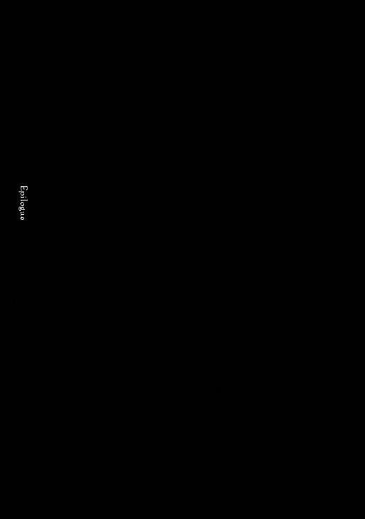
優しい感触が全身を撫でる。深い水面から引き上げようとする誰かの手。しかし、それをザリュースは振り払う。その手の先にあるおぞましい感触に嫌なものを感じ。
久遠とも刹那ともつかぬ時間の後に、再び手を差し出された気がした。もう一度払おうとして、それを迷う。すぐ傍から聞こえる声。自分の愛したメスの声だと悟って。
迷う。
迷う。
そして迷う。
時間の存在が不確かな世界の中で、ザリュースは迷いに迷ってから、結局、嫌々ながらもその手を取った。
そして一気に引き上げられ、白く染まった世界に飛び込む。
全身の脱力感が酷かった。
体の中がドロドロになっているようだった。
異常な疲労感だ。どれだけ過酷な運動をしてもこれほどの酷い状態になった事は無い。
ザリュースは重い瞼を必死に開ける。
眩しい光が目の中に飛び込んでくる。蜥蜴人の目は自動的に光量を補正してくれるが、それでも瞬時の光には弱い。ザリュースは目をぱちくりさせ──
「ザリュース！」
強く誰かに抱きしめられる。
「く、くるしゅ？」
その声はもう二度と聞けるはずが無い。そう思っていたメスの声だ。
ザリュースはようやく慣れた目で、抱きしめてくるメスを見る。
それはやはり自らの愛したメス、クルシュ・ルールーだ。
なぜ。これは一体。
無数の疑問や不安がザリュースに襲い掛かってくる。最後の記憶は──自分の頭が湿地に落ちていく瞬間のもの。絶対に自分はコキュートスに殺されたはずだ。
それがなぜ生きているのか。まさか──
「──くるしゅまでころされたのか？」
「え？」
痺れたように上手く動かない口を動かし、ザリュースは問いかける。
それに答えるのは、不思議そうなクルシュの顔。その表情を見て、ザリュースは僅かに安堵する。クルシュは死んだわけでは無いと知って。では一体どうして自分は生きているのか。
その答えのヒントは横から掛けられた声だった。
「ふむ。復活したが混乱しているというところか。レベルの消失も起こっているようだし......ユグドラシルとあまり変化はないと判断すべきか」
声の主に気付き、ザリュースは驚きながらそちらを見る。
そこに立っていたのは死の王。あり得ざる力を持つ魔法詠唱者。
その手には、まるで似合わないような神聖な雰囲気を漂わせる、三十センチほどの一本の短杖を持っている。白い牙製らしく、先端部分に黄金をかぶせ、握り手にルーンを彫った非常に綺麗なものだ。
ザリュースは知らないが、それこそ蘇生の短杖。ザリュースを蘇らせたアイテムである。通常であれば神官系魔法の道具を、神官系魔法を使用することができないものが発動することは出来ないのだが、この系統の魔法のアイテムは特別に使用することができる。
ザリュースは視線をキョロキョロと動かし、ここが先ほどまでいた蜥蜴人の村だと認識する。
場所は広場であり、取り囲むように沢山の蜥蜴人が平伏している。ピクリとも動かないその姿──それは異様なほど強い崇拝を感じさせるものだった。
「いったい......」
アレだけの力を見せられれば平伏するのも道理だ。しかし、周囲の蜥蜴人からはそれだけではない、もっと強いものを感じる。蜥蜴人に神はいない。強いて言うなら祖霊が信仰の対象だ。しかし、周りにいる蜥蜴人から感じるのは神に対する崇拝。
「ふむ。下がれ、蜥蜴人。誰かが言うまで村に入ってくるな」
その言葉に反対する者はいない。それどころか声を上げることなく受諾する。身動きする音と湿地を歩く水音。それだけを後に残して全ての蜥蜴人が広場から離れていく。
あれほどの強大な力を見せつけられ、完全に意思を砕かれたのだろう。蜥蜴人の習性として強者に頭を下げるという点もあるが。つまりは相手の望む通りに物事は進んだということだ。
「アウラ？ 出て行ったか？」
「はい。行きました」
答えたのは闇妖精の少女だ。今までアインズの背後にいたために視線が通らなかったせいもあるが、少女からは驚くほど気配を感じられず、ザリュースは気付けなかったのだ。
「そうか。ではザリュース・シャシャ。まずは復活おめでとう、といわせてもらおう」
復活。
その言葉の意味が理解できるまでザリュースには少しの時間が必要だった。そして理解したと同時に身震いするような感情が襲ってきた。
復活──俺を蘇らせたというのか。
言葉は出ない。喘ぐような息が漏れるだけだ。
「どうした？ 別に復活に対して、蜥蜴人はさほど嫌悪感を抱いてはいないのだろ？ それとも言葉を忘れたのか？」
「ふ、ふっかつ......あ、あなたはししゃをよみがえらせられるのか......？」
「そう言っている。なんだ、その程度すら出来ないと思っていたのか？」
「だいぎしきを......おこなって？」
「大儀式？ なんだそれは？ 私一人で問題なく出来る行為だぞ？」
その言葉を聞き、もはやザリュースに言葉は無かった。復活魔法など竜王の血を引くという伝説の蜥蜴人の御業だ。
それを一人で行うことが出来る存在。
化け物？ 違う。
巨大な力を持つ魔法詠唱者？ 違う。
ザリュースは完全に理解した。
神話の兵を率い、悪魔を従える。
つまり、それは──目の前にいる存在は神に匹敵する存在だ、と。
ザリュースはよたよたと体を起こし、アインズの前に平伏する。クルシュも慌てて同じように平伏した。
「いだいなるおかた」
見下ろす視線にわずかな困惑のようなものが混じった気がするが、それは気のせいだろうとザリュースは判断する。
「ちゅうせいをつくします」
「良かろう。このアインズ・ウール・ゴウンの名の下に約束をしよう」
「りざーどまんにはんえいを」
「そんなことか。私の支配下に入るものには繁栄を約束するとも」
「かんしゃします」
「さて、未だ言葉がたどたどしいぞ？ 少し休めば慣れるだろう。今は休め。後ほど色々と決めなくてはならないことがある。まずは私の支配地であるこの村の警備をしっかりとしないと不味かろうしな......。まぁ、コキュートスと相談してくれ」
アインズはそう言うと、この場から立ち去ろうとする。だが、その前にザリュースにはすべきことがある。今でなければならないことを。
「おまちを。ぜんべるとあには？」
「死体はそこら辺にあるはずだ」
アウラと共に歩き出そうとしたアインズは、足を止めると無造作に村の外の方角を顎でしゃくる。
「いきかえらせてはくださらないでしょうか？」
「......ふむ......メリットを感じないな」
「ではわたしはなぜ？ ぜんべるとあにはつよい。かならずや、おやくにたてるとおもいます」
アインズはザリュースをしげしげと観察し、肩を竦めた。
「考慮しよう。......二人の死体を保管しておけ。検討はしよう」
話は終わったと、アインズはローブをはためかせながら歩き出す。そのすぐ横を歩くアウラの、あの多頭水蛇可愛いですよねー、とアインズと会話する声が遠くなっていった。
ようやくザリュースは平伏した姿勢を崩し、力を抜く。
「いきのこった......いきかえったか......」
これからどのような支配が待っているかは分からない。だが、蜥蜴人の有効性をアピールできれば、それほど悪いことにはならないだろう。
「くるしゅ。あに──」
「大丈夫。ね、心配するのは後にして。今は休んで、疲労を回復させないと。大丈夫、あなたを運ぶぐらいは出来るから」
「ああ......たのむ」
ザリュースは体を崩すように横になると目を閉じる。体を酷使した日に、深い眠りが待っているように、目を閉じると共に瞬時に眠りが押し寄せてきた。
自分の体を撫で回す優しい手の感触を感じながら、ザリュースの意識は暗闇の中に再び落ちていった。
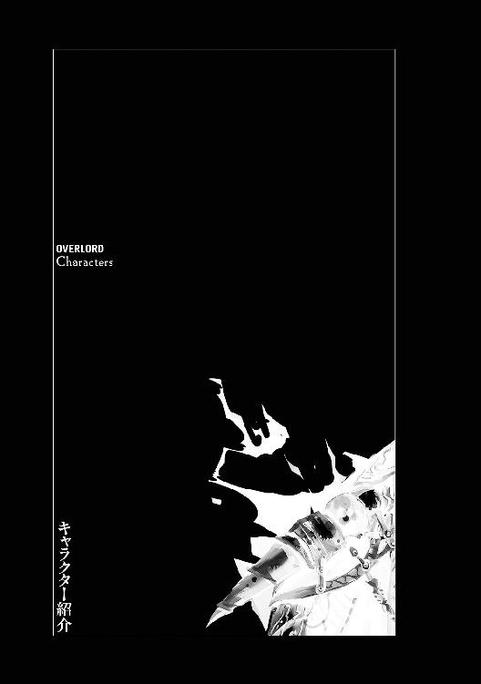
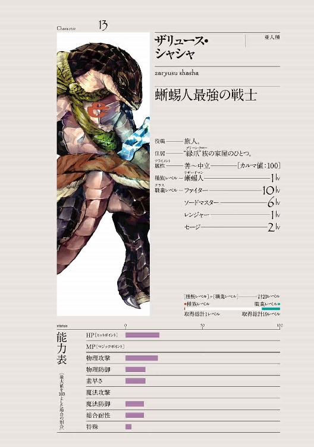
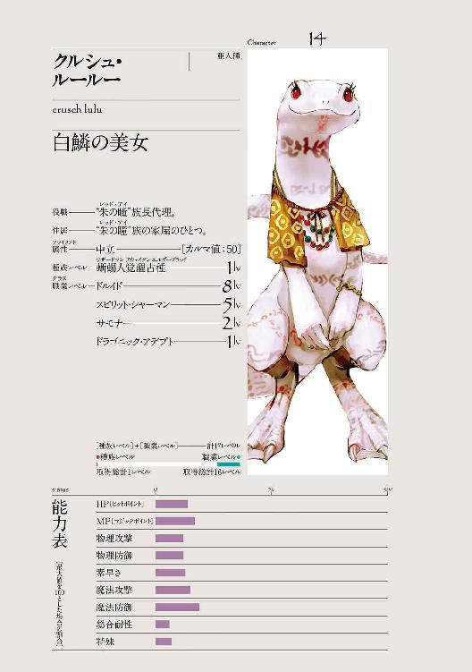
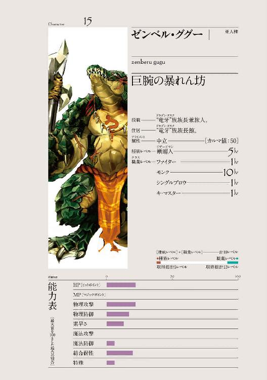
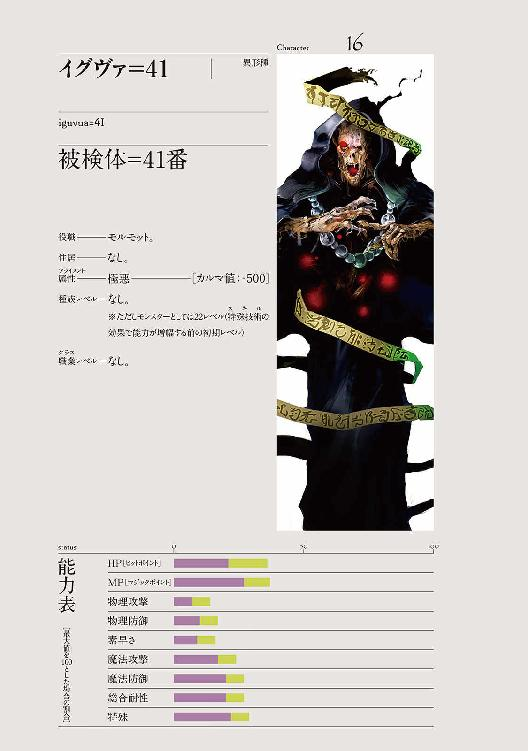
流石にこの巻から初めてという方は、ほぼいらっしゃらないと思い、お久しぶりですと言わせて頂きます、丸山くがねです。
さて今回は前巻のあとがきで宣言していましたように、一冊丸ごと蜥蜴人という変わった本になりました。物語もライトノベルとしては珍しいものではなかったでしょうか？ 丸山が知らないだけかもしれませんが、主人公サイドが平和な村に一方的に攻め込む話というのはあまりない気がします。
そんな本作、いかがだったでしょうか？
賛否両論あるとは思いますが、今後、強者が弱者を踏みにじる展開は本シリーズでは何度か出てくる可能性が十分にあります。
『オーバーロード』は目の前の状況だけに対処したり、降りかかってくる火の粉を払うタイプの主人公ではなく、目的遂行や利益追求のために、自分から行動していくタイプの主人公です。困っているヒロインがいると聞いて行動するのではなく、困っているヒロインを探しに走り出す肉食系ということですね。......ちょっと違いますが。
それで、戦略シミュレーションをされる方は分かるとは思いますが、アインズの目的である戦力拡大のためには強者を相手にするよりも弱者を平定して戦力を増す行為に勤しむことが多くなりがちです。
そういったわけで、よくある侵攻される側ではなく、あまり無い侵攻する側──そんな作品にしたいと考えております。とはいっても殴り合いだけが侵攻ではないですけども。
ここからは謝辞を贈らせていただきます。
ｓｏ‐ｂｉｎ様、クルシュが本当に可愛かったです!! 興奮しました。カバー、帯、ポスターとどれもかっこいいデザインをしてくださるコードデザインスタジオ様。毎回、細かな校正をしてくださる大迫様。そして色々と動いてくださる編集Ｆ田様。
ありがとうございました。
添削してくれたハニー。突っ込み毎回ありがとう。オチは本当に頭を使います。
そして本を買って下さった皆様に深い感謝を送りたいと思います。本当にありがとうございました。
それではまた次の巻でお会いできると嬉しいです。
では、では。
余談ですが、毎巻、章タイトルで一つは「死」という単語を入れてきましたが、そろそろ苦しくなってきたので、次巻はないかもしれません。遊び心なのでなくても困るわけではないですが......。センスがないと、この辺は難しいですね！ しょんぼりです。
二〇一三年七月 丸山くがね
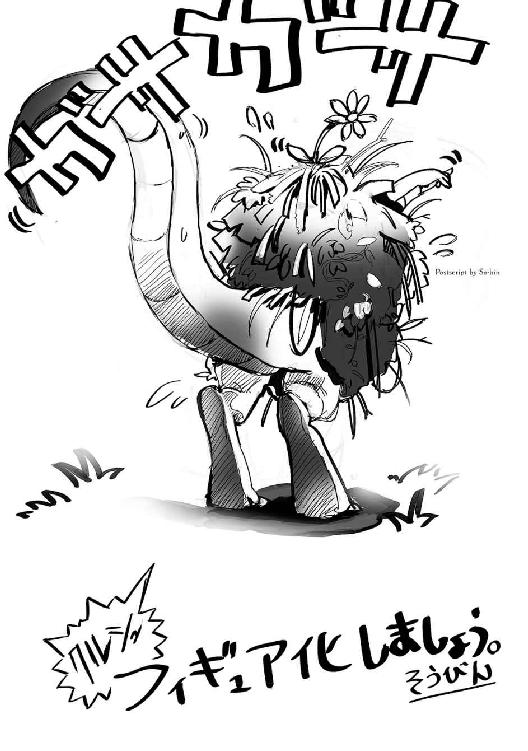
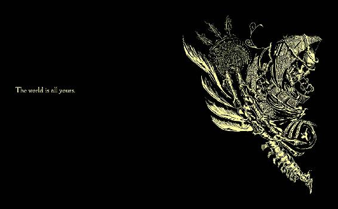
装丁／コードデザインスタジオ
オーバーロード 4
蜥蜴人の勇者たち
著者 丸山くがね
イラスト so-bin
2017年12月1日 発行
 Kugane Maruyama 2013
Kugane Maruyama 2013
本電子書籍は下記にもとづいて制作しました
『オーバーロード 4 蜥蜴人の勇者たち』
2013年8月12日 初版発行
2017年4月15日 第18刷発行
発行者 青柳昌行
発行 株式会社ＫＡＤＯＫＡＷＡ
〒102-8177 東京都千代田区富士見2-13-3
エンターブレイン カスタマーサポート
［メールアドレス］support@ml.enterbrain.co.jp
（かならず商品名をご明記ください）